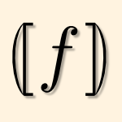

3664 papers:
 ECSA-2015-StierKGR #analysis #architecture #energy #modelling #performance
ECSA-2015-StierKGR #analysis #architecture #energy #modelling #performance- Model-Based Energy Efficiency Analysis of Software Architectures (CS, AK, HG, RHR), pp. 221–238.
- ECSA-2015-WangC #architecture #network #performance #social
- A Specialised Social Network Software Architecture for Efficient Household Water Use Management (ZW, AC), pp. 146–153.
 QoSA-2015-LehrigEB #bibliography #in the cloud #metric #performance #scalability
QoSA-2015-LehrigEB #bibliography #in the cloud #metric #performance #scalability- Scalability, Elasticity, and Efficiency in Cloud Computing: a Systematic Literature Review of Definitions and Metrics (SL, HE, SB), pp. 83–92.
 CASE-2015-AndersenDBH #architecture #flexibility #performance #reuse
CASE-2015-AndersenDBH #architecture #flexibility #performance #reuse- An architecture for efficient reuse in flexible production scenarios (RHA, LD, ABB, JH), pp. 151–157.
- CASE-2015-CarliDPR #energy #multi #optimisation #performance #using
- Using multi-objective optimization for the integrated energy efficiency improvement of a smart city public buildings’ portfolio (RC, MD, RP, LR), pp. 21–26.
- CASE-2015-HandokoL #order #performance #privacy
- Efficient order sharing with privacy preservation via double auction with split delivery (SDH, HCL), pp. 69–74.
- CASE-2015-HuangHCC #performance #synthesis
- Efficient grasp synthesis and control strategy for robot hand-arm system (MBH, HPH, CCC, CAC), pp. 1256–1257.
- CASE-2015-PellicciariBBG #energy #performance
- Increasing position accuracy and energy efficiency of servo-actuated mechanisms (MP, GB, FB, MG), pp. 1339–1344.
- CASE-2015-ZhangWZZ #automaton #learning #optimisation #performance
- Incorporation of ordinal optimization into learning automata for high learning efficiency (JZ, CW, DZ, MZ), pp. 1206–1211.
 DAC-2015-ChungRPG #energy #memory management
DAC-2015-ChungRPG #energy #memory management- Domain wall memory based digital signal processors for area and energy-efficiency (JC, KR, JP, SG), p. 6.
- DAC-2015-DingCZ #algorithm #invariant #performance
- An efficient shift invariant rasterization algorithm for all-angle mask patterns in ILT (YD, CCNC, XZ), p. 6.
- DAC-2015-DuraisamyKCLPMM #energy #manycore #performance #pipes and filters
- Energy efficient MapReduce with VFI-enabled multicore platforms (KD, RGK, WC, GL, PPP, RM, DM), p. 6.
- DAC-2015-HuangFYZL #estimation #multi #performance
- Efficient multivariate moment estimation via Bayesian model fusion for analog and mixed-signal circuits (QH, CF, FY, XZ, XL), p. 6.
- DAC-2015-JangKGY0 #design
- Bandwidth-efficient on-chip interconnect designs for GPGPUs (HJ, JK, PG, KHY, EJK), p. 6.
- DAC-2015-JiangLZYW #effectiveness #feature model #image #performance
- A 127 fps in full hd accelerator based on optimized AKAZE with efficiency and effectiveness for image feature extraction (GJ, LL, WZ, SY, SW), p. 6.
- DAC-2015-JungC #embedded #multi #named #performance #simulation
- ΣVP: host-GPU multiplexing for efficient simulation of multiple embedded GPUs on virtual platforms (YJ, LPC), p. 6.
- DAC-2015-KadjoAKG #approach #cpu #energy #gpu #mobile #performance
- A control-theoretic approach for energy efficient CPU-GPU subsystem in mobile platforms (DK, RA, MK, PVG), p. 6.
- DAC-2015-LeeHLP #data flow #debugging #information management #interface #performance
- Efficient dynamic information flow tracking on a processor with core debug interface (JL, IH, YL, YP), p. 6.
- DAC-2015-LiBTO #communication #energy #performance
- Complementary communication path for energy efficient on-chip optical interconnects (HL, SLB, YT, IO), p. 6.
- DAC-2015-LiuMLLCLWJBWY #configuration management #design #named
- RENO: a high-efficient reconfigurable neuromorphic computing accelerator design (XL, MM, BL, HL, YC, BL, YW, HJ, MB, QW, JY), p. 6.
- DAC-2015-LiuZ #configuration management #performance
- A reconfigurable analog substrate for highly efficient maximum flow computation (GL, ZZ), p. 6.
- DAC-2015-LiZHLHX #automation #compilation #performance #stack
- Compiler directed automatic stack trimming for efficient non-volatile processors (QL, MZ, JH, YL, YH, CJX), p. 6.
- DAC-2015-LukasiewyczSS #design #embedded #performance
- Efficient design space exploration of embedded platforms (ML, FS, SS), p. 6.
- DAC-2015-MengYOLW #array #clustering #data access #memory management #parallel #performance
- Efficient memory partitioning for parallel data access in multidimensional arrays (CM, SY, PO, LL, SW), p. 6.
- DAC-2015-RamprasathV #algorithm #optimisation #performance #statistics
- An efficient algorithm for statistical timing yield optimization (SR, VV), p. 6.
- DAC-2015-RanjanVFRR #approximate #energy #performance
- Approximate storage for energy efficient spintronic memories (AR, SV, XF, KR, AR), p. 6.
- DAC-2015-RozicYDV #generative #performance #random
- Highly efficient entropy extraction for true random number generators on FPGAs (VR, BY, WD, IV), p. 6.
- DAC-2015-SarmaMBDN #energy #linux #named #performance
- SmartBalance: a sensing-driven linux load balancer for energy efficiency of heterogeneous MPSoCs (SS, TM, LADB, NDD, AN), p. 6.
- DAC-2015-ShafiqueKTH #anti #energy #named #video
- EnAAM: energy-efficient anti-aging for on-chip video memories (MS, MUKK, AOT, JH), p. 6.
- DAC-2015-TsaiYPLTCC #design #energy #in memory #memory management #using
- Energy-efficient non-volatile TCAM search engine design using priority-decision in memory technology for DPI (HJT, KHY, YCP, CCL, YHT, MFC, TFC), p. 6.
- DAC-2015-VasudevanR #algorithm #performance
- An efficient algorithm for frequency-weighted balanced truncation of VLSI interconnects in descriptor form (VV, MR), p. 6.
- DAC-2015-VenkataramaniCR #approximate #performance
- Approximate computing and the quest for computing efficiency (SV, STC, KR, AR), p. 6.
- DAC-2015-VenkataramaniRL #classification #energy #machine learning
- Scalable-effort classifiers for energy-efficient machine learning (SV, AR, JL, MS), p. 6.
- DAC-2015-WangJZWY #energy #performance
- Selective restore: an energy efficient read disturbance mitigation scheme for future STT-MRAM (RW, LJ, YZ, LW, JY), p. 6.
- DAC-2015-ZaheerWGL #markov #named #performance #process
- mTunes: efficient post-silicon tuning of mixed-signal/RF integrated circuits based on Markov decision process (MZ, FW, CG, XL), p. 6.
- DAC-2015-ZhanOGZ0 #approach #named #network #power management #towards
- DimNoC: a dim silicon approach towards power-efficient on-chip network (JZ, JO, FG, JZ, YX), p. 6.
- DAC-2015-ZhaoTDZ #pipes and filters #synthesis
- Area-efficient pipelining for FPGA-targeted high-level synthesis (RZ, MT, SD, ZZ), p. 6.
- DAC-2015-ZhuangYKWC #algorithm #exponential #framework #performance #scalability #simulation #using
- An algorithmic framework for efficient large-scale circuit simulation using exponential integrators (HZ, WY, IK, XW, CKC), p. 6.
 DATE-2015-ArumugamSAPUBPY #algorithm #co-evolution #design #energy #memory management #novel #performance
DATE-2015-ArumugamSAPUBPY #algorithm #co-evolution #design #energy #memory management #novel #performance- Novel inexact memory aware algorithm co-design for energy efficient computation: algorithmic principles (GPA, PS, JA, KVP, EU, AB, P, SY), pp. 752–757.
- DATE-2015-AwanoHS #named #performance #probability
- ECRIPSE: an efficient method for calculating RTN-induced failure probability of an SRAM cell (HA, MH, TS), pp. 549–554.
- DATE-2015-ClercqRVV #encryption #implementation #performance
- Efficient software implementation of ring-LWE encryption (RdC, SSR, FV, IV), pp. 339–344.
- DATE-2015-CourbonLFT #detection #hardware #performance
- A high efficiency hardware trojan detection technique based on fast SEM imaging (FC, PLM, JJAF, AT), pp. 788–793.
- DATE-2015-DinizSDBH #architecture #hardware #performance #standard #video
- A deblocking filter hardware architecture for the high efficiency video coding standard (CMD, MS, FVD, SB, JH), pp. 1509–1514.
- DATE-2015-DoustiP #distributed #power management
- Power-efficient control of thermoelectric coolers considering distributed hot spots (MJD, MP), pp. 966–971.
- DATE-2015-DubenSPYAEPP #big data #case study #energy #performance
- Opportunities for energy efficient computing: a study of inexact general purpose processors for high-performance and big-data applications (PDD, JS, P, SY, JA, CCE, KVP, TNP), pp. 764–769.
- DATE-2015-FangHYZLG #estimation #fault #performance
- Efficient bit error rate estimation for high-speed link by Bayesian model fusion (CF, QH, FY, XZ, XL, CG), pp. 1024–1029.
- DATE-2015-GoncalvesLCTCB #algorithm #modelling #performance #reduction
- A fast spatial variation modeling algorithm for efficient test cost reduction of analog/RF circuits (HRG, XL, MVC, VT, JMCJ, KMB), pp. 1042–1047.
- DATE-2015-KhanSH #adaptation #manycore #power management
- Power-efficient accelerator allocation in adaptive dark silicon many-core systems (MUKK, MS, JH), pp. 916–919.
- DATE-2015-LiLZGSSZCLY #energy #performance
- An energy efficient backup scheme with low inrush current for nonvolatile SRAM in energy harvesting sensor nodes (HL, YL, QZ, YG, XS, GS, CZ, MFC, RL, HY), pp. 7–12.
- DATE-2015-LocatelliVMFVKK #architecture #energy
- Spintronic devices as key elements for energy-efficient neuroinspired architectures (NL, AFV, AM, JSF, DV, JVK, JOK, WZ, JG, DQ), pp. 994–999.
- DATE-2015-MineoRPACM #architecture #energy #performance #self
- A closed loop transmitting power self-calibration scheme for energy efficient WiNoC architectures (AM, MSR, MP, GA, VC, MNM), pp. 513–518.
- DATE-2015-MirhosseiniSFMS #energy #network
- An energy-efficient virtual channel power-gating mechanism for on-chip networks (AM, MS, AF, MM, HSA), pp. 1527–1532.
- DATE-2015-MirkhaniMCA #design #estimation #fault #performance
- Efficient soft error vulnerability estimation of complex designs (SM, SM, CYC, JA), pp. 103–108.
- DATE-2015-NguyenSCM #performance #robust #set
- Efficient attacks on robust ring oscillator PUF with enhanced challenge-response set (PHN, DPS, RSC, DM), pp. 641–646.
- DATE-2015-PaganiCSH #modelling #named #performance
- MatEx: efficient transient and peak temperature computation for compact thermal models (SP, JJC, MS, JH), pp. 1515–1520.
- DATE-2015-PaoneRPZSS #constraints #framework #performance
- Customization of OpenCL applications for efficient task mapping under heterogeneous platform constraints (EP, FR, GP, VZ, IS, CS), pp. 736–741.
- DATE-2015-ParkAHYL #big data #energy #gpu #low cost #memory management #performance
- Memory fast-forward: a low cost special function unit to enhance energy efficiency in GPU for big data processing (EP, JA, SH, SY, SL), pp. 1341–1346.
- DATE-2015-ParkTNII #performance
- Platform-aware dynamic configuration support for efficient text processing on heterogeneous system (MSP, OT, VN, MJI, RI), pp. 1503–1508.
- DATE-2015-PsarrasSND #named #network #performance #scheduling
- PhaseNoC: TDM scheduling at the virtual-channel level for efficient network traffic isolation (AP, IS, CN, GD), pp. 1090–1095.
- DATE-2015-RahaVRR #approximate #configuration management #energy #performance #quality
- Quality configurable reduce-and-rank for energy efficient approximate computing (AR, SV, VR, AR), pp. 665–670.
- DATE-2015-RahimiGCBG #approximate #energy #memory management
- Approximate associative memristive memory for energy-efficient GPUs (AR, AG, KTC, LB, RKG), pp. 1497–1502.
- DATE-2015-VenkataramaniCR #approximate
- Computing approximately, and efficiently (SV, STC, KR, AR), pp. 748–751.
- DATE-2015-VenkataramanKSE #design #heuristic #using
- Designing inexact systems efficiently using elimination heuristics (SV, AK, JS, CCE), pp. 758–763.
- DATE-2015-VenkatesanVFRR #energy #logic #named
- Spintastic: spin-based stochastic logic for energy-efficient computing (RV, SV, XF, KR, AR), pp. 1575–1578.
- DATE-2015-WangHNYYWYZ #energy #in memory #recognition
- An energy-efficient non-volatile in-memory accelerator for sparse-representation based face recognition (YW, HH, LN, HY, MY, CW, WY, JZ), pp. 932–935.
- DATE-2015-XieKBWPC #design #energy #hybrid #optimisation
- Efficiency-driven design time optimization of a hybrid energy storage system with networked charge transfer interconnect (QX, YK, DB, YW, MP, NC), pp. 1607–1610.
- DATE-2015-YanF #design #energy #mobile #optimisation
- Energy-efficient cache design in emerging mobile platforms: the implications and optimizations (KY, XF), pp. 375–380.
 DocEng-2015-MeiKYRIMM #performance #word
DocEng-2015-MeiKYRIMM #performance #word- Efficient Computation of Co-occurrence Based Word Relatedness (JM, XK, ZY, ARC, AI, AM, EEM), pp. 43–46.
 PODS-2015-BarceloPS #approximate #evaluation #performance
PODS-2015-BarceloPS #approximate #evaluation #performance- Efficient Evaluation and Approximation of Well-designed Pattern Trees (PB, RP, SS), pp. 131–144.
 SIGMOD-2015-0002SLLF #sorting
SIGMOD-2015-0002SLLF #sorting- Cache-Efficient Aggregation: Hashing Is Sorting (IM, PS, AL, WL, FF), pp. 1123–1136.
- SIGMOD-2015-Anagnostopoulos #crowdsourcing #performance
- The Importance of Being Expert: Efficient Max-Finding in Crowdsourcing (AA, LB, AF, IM, MR), pp. 983–998.
- SIGMOD-2015-BerlowitzCK #performance
- Efficient Enumeration of Maximal k-Plexes (DB, SC, BK), pp. 431–444.
- SIGMOD-2015-ChevalierSGL #incremental #named #performance
- Slider: An Efficient Incremental Reasoner (JC, JS, CG, FL), pp. 1081–1086.
- SIGMOD-2015-ChuBS #database #evaluation #parallel #performance #query #theory and practice
- From Theory to Practice: Efficient Join Query Evaluation in a Parallel Database System (SC, MB, DS), pp. 63–78.
- SIGMOD-2015-GuoCC #algorithm #keyword #performance #query
- Efficient Algorithms for Answering the m-Closest Keywords Query (TG, XC, GC), pp. 405–418.
- SIGMOD-2015-LiHDL #multi #performance #similarity
- Efficient Similarity Join and Search on Multi-Attribute Data (GL, JH, DD, JL), pp. 1137–1151.
- SIGMOD-2015-OktayMKK #hybrid #named #performance #pipes and filters
- SEMROD: Secure and Efficient MapReduce Over HybriD Clouds (KYO, SM, VK, MK), pp. 153–166.
- SIGMOD-2015-PaparrizosG #clustering #named #performance
- k-Shape: Efficient and Accurate Clustering of Time Series (JP, LG), pp. 1855–1870.
- SIGMOD-2015-SunFSKHX #graph #named #performance
- SQLGraph: An Efficient Relational-Based Property Graph Store (WS, AF, KS, AK, GH, GTX), pp. 1887–1901.
- SIGMOD-2015-WangLYXZ #approach #network #performance
- Efficient Route Planning on Public Transportation Networks: A Labelling Approach (SW, WL, YY, XX, SZ), pp. 967–982.
- SIGMOD-2015-YuSC #dependence #distributed #matrix #performance
- Exploiting Matrix Dependency for Efficient Distributed Matrix Computation (LY, YS, BC), pp. 93–105.
- SIGMOD-2015-ZhangYQS #performance
- Divide & Conquer: I/O Efficient Depth-First Search (ZZ, JXY, LQ, ZS), pp. 445–458.
 VLDB-2015-BoghCA #gpu #parallel
VLDB-2015-BoghCA #gpu #parallel- Work-Efficient Parallel Skyline Computation for the GPU (KSB, SC, IA), pp. 962–973.
- VLDB-2015-ChangLZYZQ #performance
- Optimal Enumeration: Efficient Top-k Tree Matching (LC, XL, WZ, JXY, YZ, LQ), pp. 533–544.
- VLDB-2015-ChoBBFKP #algorithm #named #parallel #performance
- PARADIS: An Efficient Parallel Algorithm for In-place Radix Sort (MC, DB, RB, UF, VK, RP), pp. 1518–1529.
- VLDB-2015-KhayyatLSOPQ0K #difference #performance
- Lightning Fast and Space Efficient Inequality Joins (ZK, WL, MS, MO, PP, JAQR, NT, PK), pp. 2074–2085.
- VLDB-2015-LeisKK0 #performance #query #sql
- Efficient Processing of Window Functions in Analytical SQL Queries (VL, KK, AK, TN), pp. 1058–1069.
- VLDB-2015-Liroz-GistauAV #execution #named #parallel #performance
- FP-Hadoop: Efficient Execution of Parallel Jobs Over Skewed Data (MLG, RA, PV), pp. 1856–1867.
- VLDB-2015-NagarkarCB #query
- Compressed Spatial Hierarchical Bitmap (cSHB) Indexes for Efficiently Processing Spatial Range Query Workloads (PN, KSC, AB), pp. 1382–1393.
- VLDB-2015-NaidanBN #performance #permutation
- Permutation Search Methods are Efficient, Yet Faster Search is Possible (BN, LB, EN), pp. 1618–1629.
- VLDB-2015-ShaoC0LX #framework #graph #performance #scalability #similarity
- An Efficient Similarity Search Framework for SimRank over Large Dynamic Graphs (YS, BC, LC, ML, XX), pp. 838–849.
- VLDB-2015-ShiokawaFO #algorithm #clustering #graph #performance #scalability
- SCAN++: Efficient Algorithm for Finding Clusters, Hubs and Outliers on Large-scale Graphs (HS, YF, MO), pp. 1178–1189.
- VLDB-2015-VartakRMPP #data-driven #named #performance #recommendation #visual notation #visualisation
- SEEDB: Efficient Data-Driven Visualization Recommendations to Support Visual Analytics (MV, SR, SM, AGP, NP), pp. 2182–2193.
- VLDB-2015-WuHYY #evaluation #performance #query #visualisation
- Efficient Evaluation of Object-Centric Exploration Queries for Visualization (YW, BH, JY, CY), pp. 1752–1763.
- VLDB-2015-YuM #network #performance #scalability
- Efficient Partial-Pairs SimRank Search for Large Networks (WY, JAM), pp. 569–580.
 ESOP-2015-AbdullaAP #performance
ESOP-2015-AbdullaAP #performance- The Best of Both Worlds: Trading Efficiency and Optimality in Fence Insertion for TSO (PAA, MFA, NTP), pp. 308–332.
- ESOP-2015-SiekVCTG #performance #type system
- Monotonic References for Efficient Gradual Typing (JGS, MMV, MC, STH, RG), pp. 432–456.
 FASE-2015-StruberRCT #approach #model transformation #performance #reuse #variability
FASE-2015-StruberRCT #approach #model transformation #performance #reuse #variability- A Variability-Based Approach to Reusable and Efficient Model Transformations (DS, JR, MC, GT), pp. 283–298.
 ICSME-2015-EkelundE #evaluation #industrial #performance #testing
ICSME-2015-EkelundE #evaluation #industrial #performance #testing- Efficient regression testing based on test history: An industrial evaluation (EDE, EE), pp. 449–457.
 SANER-2015-InfanteB #identification
SANER-2015-InfanteB #identification- Efficiently identifying object production sites (AI, AB), pp. 575–579.
 PLDI-2015-McClurgHCF #network #performance #synthesis
PLDI-2015-McClurgHCF #network #performance #synthesis- Efficient synthesis of network updates (JM, HH, PC, NF), pp. 196–207.
- PLDI-2015-NoriORV #performance #probability #source code #synthesis
- Efficient synthesis of probabilistic programs (AVN, SO, SKR, DV), pp. 208–217.
- PLDI-2015-RenJKAK #execution #hardware #performance #recursion #source code
- Efficient execution of recursive programs on commodity vector hardware (BR, YJ, SK, KA, MK), pp. 509–520.
 STOC-2015-BassilyS #performance #protocol
STOC-2015-BassilyS #performance #protocol- Local, Private, Efficient Protocols for Succinct Histograms (RB, ADS), pp. 127–135.
- STOC-2015-BhattacharyaHNT #algorithm #maintenance
- Space- and Time-Efficient Algorithm for Maintaining Dense Subgraphs on One-Pass Dynamic Streams (SB, MH, DN, CET), pp. 173–182.
- STOC-2015-Bresler #graph #learning #modelling
- Efficiently Learning Ising Models on Arbitrary Graphs (GB), pp. 771–782.
- STOC-2015-LackiOPSZ #algorithm #distance #performance #power of
- The Power of Dynamic Distance Oracles: Efficient Dynamic Algorithms for the Steiner Tree (JL, JO, MP, PS, AZ), pp. 11–20.
 LATA-2015-BjorklundDZ #algorithm #automaton #performance
LATA-2015-BjorklundDZ #algorithm #automaton #performance- An Efficient Best-Trees Algorithm for Weighted Tree Automata over the Tropical Semiring (JB, FD, NZ), pp. 97–108.
 SEFM-2015-HusterBELRKR #performance #testing
SEFM-2015-HusterBELRKR #performance #testing- Efficient Testing of Different Loop Paths (SH, SB, HE, JL, JR, TK, WR), pp. 117–131.
- SEFM-2015-RockaiSB #c #c++ #model checking
- Techniques for Memory-Efficient Model Checking of C and C++ Code (PR, VS, JB), pp. 268–282.
 ICFP-2015-YangCAEKN #communication #normalisation #performance
ICFP-2015-YangCAEKN #communication #normalisation #performance- Efficient communication and collection with compact normal forms (EZY, GC, ÖSA, AEH, AK, RRN), pp. 362–374.
 CHI-2015-LeeHL #performance
CHI-2015-LeeHL #performance- Investigating the Information Transfer Efficiency of a 3x3 Watch-back Tactile Display (JL, JH, GL), pp. 1229–1232.
 HCI-IT-2015-WalkerSJ #interactive #performance
HCI-IT-2015-WalkerSJ #interactive #performance- Interactive Sonification Markup Language (ISML) for Efficient Motion-Sound Mappings (JWW, MTS, MJ), pp. 385–394.
- HCI-UC-2015-JeongJ #on the #performance #personalisation
- On Time: Efficient and Personalized Hospital Service (SYJ, DYJ), pp. 190–197.
 AdaEurope-2015-NelissenPP #architecture #monitoring #novel #performance #runtime
AdaEurope-2015-NelissenPP #architecture #monitoring #novel #performance #runtime- A Novel Run-Time Monitoring Architecture for Safe and Efficient Inline Monitoring (GN, DP, LMP), pp. 66–82.
 ICEIS-v1-2015-AbakumovK #performance
ICEIS-v1-2015-AbakumovK #performance- Approaches to Enhancing Efficiency of Production Management on Shop Floor Level (EMA, SBK), pp. 559–564.
- ICEIS-v1-2015-BedoBOCCRTT #detection #effectiveness #image #performance #social #social media
- Techniques for Effective and Efficient Fire Detection from Social Media Images (MVNB, GB, WDO, MTC, AFC, JFRJ, AJMT, CTJ), pp. 34–45.
- ICEIS-v1-2015-GruppiMAFL #heuristic #performance
- An Efficient and Topologically Correct Map Generalization Heuristic (MGG, SVGM, MVAA, WRF, WL), pp. 516–525.
- ICEIS-v2-2015-KamalKVB #performance
- Efficient Use of Voice as a Channel for Delivering Public Services (KKK, MK, BV, KB), pp. 626–631.
- ICEIS-v2-2015-Martin-Fernandez #alias #encryption #performance #using
- Efficient Management of Revoked Pseudonyms in VANETs using ID-Based Cryptography (FMF, PCG, CCG), pp. 701–708.
 ICML-2015-KuklianskyS #linear #performance
ICML-2015-KuklianskyS #linear #performance- Attribute Efficient Linear Regression with Distribution-Dependent Sampling (DK, OS), pp. 153–161.
- ICML-2015-LimKPJ #performance #scalability #set
- Double Nyström Method: An Efficient and Accurate Nyström Scheme for Large-Scale Data Sets (WL, MK, HP, KJ), pp. 1367–1375.
- ICML-2015-TristanTS #estimation #gpu #performance
- Efficient Training of LDA on a GPU by Mean-for-Mode Estimation (JBT, JT, GLSJ), pp. 59–68.
- ICML-2015-WenKA #combinator #learning #performance #scalability
- Efficient Learning in Large-Scale Combinatorial Semi-Bandits (ZW, BK, AA), pp. 1113–1122.
- ICML-2015-ZhangWJ #algorithm #bound #distributed #estimation #matrix #performance #rank
- Distributed Estimation of Generalized Matrix Rank: Efficient Algorithms and Lower Bounds (YZ, MJW, MIJ), pp. 457–465.
 KDD-2015-BifetMRHP #big data #classification #data type #evaluation #online #performance
KDD-2015-BifetMRHP #big data #classification #data type #evaluation #online #performance- Efficient Online Evaluation of Big Data Stream Classifiers (AB, GDFM, JR, GH, BP), pp. 59–68.
- KDD-2015-ChierichettiEKL #algorithm #network #performance #social
- Efficient Algorithms for Public-Private Social Networks (FC, AE, RK, SL, VSM), pp. 139–148.
- KDD-2015-LimK #graph #named
- MASCOT: Memory-efficient and Accurate Sampling for Counting Local Triangles in Graph Streams (YL, UK), pp. 685–694.
- KDD-2015-Llinares-LopezS #mining #mutation testing #performance #permutation #testing
- Fast and Memory-Efficient Significant Pattern Mining via Permutation Testing (FLL, MS, LP, KMB), pp. 725–734.
- KDD-2015-OhsakaMK #evolution #network #performance #rank
- Efficient PageRank Tracking in Evolving Networks (NO, TM, KiK), pp. 875–884.
- KDD-2015-SongMT #network #performance #recommendation
- Efficient Latent Link Recommendation in Signed Networks (DS, DAM, DT), pp. 1105–1114.
- KDD-2015-UlanovaYCJKZ #performance #physics #profiling
- Efficient Long-Term Degradation Profiling in Time Series for Complex Physical Systems (LU, TY, HC, GJ, EJK, KZ), pp. 2167–2176.
- KDD-2015-Yi0YLW #algorithm #clustering #constraints #performance
- An Efficient Semi-Supervised Clustering Algorithm with Sequential Constraints (JY, LZ, TY, WL, JW), pp. 1405–1414.
- KDD-2015-ZhangZMH #assembly #co-evolution #named #performance
- Assembler: Efficient Discovery of Spatial Co-evolving Patterns in Massive Geo-sensory Data (CZ, YZ, XM, JH), pp. 1415–1424.
 MLDM-2015-ZidaFWLT #mining #performance
MLDM-2015-ZidaFWLT #mining #performance- Efficient Mining of High-Utility Sequential Rules (SZ, PFV, CWW, JCWL, VST), pp. 157–171.
 RecSys-2015-ForsatiBMER #algorithm #named #performance #recommendation #trust
RecSys-2015-ForsatiBMER #algorithm #named #performance #recommendation #trust- PushTrust: An Efficient Recommendation Algorithm by Leveraging Trust and Distrust Relations (RF, IB, FM, AHE, HR), pp. 51–58.
- RecSys-2015-Guardia-Sebaoun #modelling #performance #recommendation
- Latent Trajectory Modeling: A Light and Efficient Way to Introduce Time in Recommender Systems (ÉGS, VG, PG), pp. 281–284.
 SEKE-2015-AssuncaoFLSV #automaton #generative #markov #modelling #named #network #predict #probability
SEKE-2015-AssuncaoFLSV #automaton #generative #markov #modelling #named #network #predict #probability- SANGE — Stochastic Automata Networks Generator. A tool to efficiently predict events through structured Markovian models (JA, PF, LL, AS, JMV), pp. 581–584.
- SEKE-2015-KinneerKMW #automation #database #generative #performance #relational #search-based #testing
- Automatically Evaluating the Efficiency of Search-Based Test Data Generation for Relational Database Schemas (CK, GMK, PM, CJW), pp. 352–357.
- SEKE-2015-PeiYF #data access #in the cloud #performance #policy
- Achieving Efficient Access Control via XACML Policy in Cloud Computing (XP, HY, GF), pp. 110–115.
 SIGIR-2015-CanutoGSRM #approach #classification #documentation #parallel #performance #scalability
SIGIR-2015-CanutoGSRM #approach #classification #documentation #parallel #performance #scalability- An Efficient and Scalable MetaFeature-based Document Classification Approach based on Massively Parallel Computing (SDC, MAG, WS, TR, WM), pp. 333–342.
- SIGIR-2015-MalherbeCB #categorisation #order #performance
- Bringing Order to the Job Market: Efficient Job Offer Categorization in E-Recruitment (EM, MC, AB), pp. 1101–1104.
 MoDELS-2015-Moawad0FNKT #modelling #performance
MoDELS-2015-Moawad0FNKT #modelling #performance- Beyond discrete modeling: A continuous and efficient model for IoT (AM, TH, FF, GN, JK, YLT), pp. 90–99.
 Onward-2015-GreweEWM #performance #proving #type system
Onward-2015-GreweEWM #performance #proving #type system- Type systems for the masses: deriving soundness proofs and efficient checkers (SG, SE, PW, MM), pp. 137–150.
 OOPSLA-2015-BiswasZBL #exception #named #performance
OOPSLA-2015-BiswasZBL #exception #named #performance- Valor: efficient, software-only region conflict exceptions (SB, MZ, MDB, BL), pp. 241–259.
 QAPL-2015-BortolussiH #markov #modelling #performance
QAPL-2015-BortolussiH #markov #modelling #performance- Efficient Checking of Individual Rewards Properties in Markov Population Models (LB, JH), pp. 32–47.
 POPL-2015-AlurDR #declarative #named #string
POPL-2015-AlurDR #declarative #named #string- DReX: A Declarative Language for Efficiently Evaluating Regular String Transformations (RA, LD, MR), pp. 125–137.
- POPL-2015-Greenberg #contract
- Space-Efficient Manifest Contracts (MG), pp. 181–194.
- POPL-2015-RastogiSFBV #performance #type system #typescript
- Safe & Efficient Gradual Typing for TypeScript (AR, NS, CF, GMB, PV), pp. 167–180.
 REFSQ-2015-LiHT #case study #formal method #performance #requirements #towards
REFSQ-2015-LiHT #case study #formal method #performance #requirements #towards- Towards More Efficient Requirements Formalization: A Study (WL, JHH, MT), pp. 181–197.
 SAC-2015-BorgesDSEAS #approach #performance #reasoning #reuse #using
SAC-2015-BorgesDSEAS #approach #performance #reasoning #reuse #using- Efficient approach for reusing and sharing train driving plans using case-based reasoning (APB, OBD, DMVS, FE, BCÁ, EES), pp. 505–508.
- SAC-2015-BritoE #branch #named #performance #query
- BranchGuide: an indexing technique for efficient, lossless processing of branching path queries (TBV, GEdS), pp. 1086–1092.
- SAC-2015-DecatBLJ #as a service #data access #middleware #multitenancy #named #performance
- Amusa: middleware for efficient access control management of multi-tenant SaaS applications (MD, JB, BL, WJ), pp. 2141–2148.
- SAC-2015-FahnrichSP #database #identification #in memory #search-based
- Facing the genome data deluge: efficiently identifying genetic variants with in-memory database technology (CF, MPS, HP), pp. 18–25.
- SAC-2015-GonzalezRP #classification #image
- Computationally-efficient classification of HEp-2 cell patterns in IIF images (LFPG, DDAR, MSP), pp. 825–830.
- SAC-2015-HendersonGE #clustering #empirical #named #parametricity #performance #probability
- EP-MEANS: an efficient nonparametric clustering of empirical probability distributions (KH, BG, TER), pp. 893–900.
- SAC-2015-HsiehNKC #approximate #performance #query #recommendation
- Efficient approximate thompson sampling for search query recommendation (CCH, JN, TK, JC), pp. 740–746.
- SAC-2015-MinHJCH #distributed #performance #process #scalability
- An efficient backup-recovery technique to process large data in distributed key-value store (DM, TH, JJ, YC, JH), pp. 2072–2074.
- SAC-2015-RochaRCOMVADGF #algorithm #classification #dataset #documentation #named #performance #using
- G-KNN: an efficient document classification algorithm for sparse datasets on GPUs using KNN (LCdR, GSR, RC, RSO, DM, FV, GA, SD, MAG, RF), pp. 1335–1338.
- SAC-2015-TodaT #performance #satisfiability
- BDD construction for all solutions SAT and efficient caching mechanism (TT, KT), pp. 1880–1886.
- SAC-2015-XiongN #estimation #low cost #power management
- Cost-efficient and attack-resilient approaches for state estimation in power grids (KX, PN), pp. 2192–2197.
 ESEC-FSE-2015-BellKMD #dependence #detection #java #performance
ESEC-FSE-2015-BellKMD #dependence #detection #java #performance- Efficient dependency detection for safe Java test acceleration (JB, GEK, EM, MD), pp. 770–781.
- ESEC-FSE-2015-KimNYCK #api #fault #named #performance #predict #testing
- REMI: defect prediction for efficient API testing (MK, JN, JY, SC, SK), pp. 990–993.
- ESEC-FSE-2015-WestNM #concurrent #object-oriented #performance
- Efficient and reasonable object-oriented concurrency (SW, SN, BM), pp. 734–744.
- ESEC-FSE-2015-White #generative #parametricity #performance #search-based #testing #using
- Increasing the efficiency of search-based unit test generation using parameter control (TW), pp. 1042–1044.
 ICSE-v1-2015-BaresiKR #ltl #performance #scalability #specification #verification
ICSE-v1-2015-BaresiKR #ltl #performance #scalability #specification #verification- Efficient Scalable Verification of LTL Specifications (LB, MMPK, MR), pp. 711–721.
- ICSE-v1-2015-BocicB #performance #verification
- Coexecutability for Efficient Verification of Data Model Updates (IB, TB), pp. 744–754.
- ICSE-v1-2015-FilieriGL #adaptation #learning #lightweight #modelling #performance #probability
- Lightweight Adaptive Filtering for Efficient Learning and Updating of Probabilistic Models (AF, LG, AL), pp. 200–211.
- ICSE-v2-2015-EtienneMAD #modelling #performance #predict #process #proving #trust
- Improving Predictability, Efficiency and Trust of Model-Based Proof Activity (JFÉ, MM, FA, VD), pp. 139–148.
- ICSE-v2-2015-ProcacciantiLVF #energy #performance
- The Green Lab: Experimentation in Software Energy Efficiency (GP, PL, AV, DMF, RW), pp. 941–942.
 SLE-2015-BousseCCGB #debugging #performance
SLE-2015-BousseCCGB #debugging #performance- Supporting efficient and advanced omniscient debugging for xDSMLs (EB, JC, BC, JGG, BB), pp. 137–148.
 ASPLOS-2015-HosekC #execution #framework #performance
ASPLOS-2015-HosekC #execution #framework #performance- VARAN the Unbelievable: An Efficient N-version Execution Framework (PH, CC), pp. 339–353.
- ASPLOS-2015-MalkaABT #named #performance
- rIOMMU: Efficient IOMMU for I/O Devices that Employ Ring Buffers (MM, NA, MBY, DT), pp. 355–368.
- ASPLOS-2015-SungA #named #performance
- DeNovoSync: Efficient Support for Arbitrary Synchronization without Writer-Initiated Invalidations (HS, SVA), pp. 545–559.
- ASPLOS-2015-YoungNQ #encryption #named
- DEUCE: Write-Efficient Encryption for Non-Volatile Memories (VY, PJN, MKQ), pp. 33–44.
 CGO-2015-JiaoLHM #concurrent #energy #execution #kernel
CGO-2015-JiaoLHM #concurrent #energy #execution #kernel- Improving GPGPU energy-efficiency through concurrent kernel execution and DVFS (QJ, ML, HPH, TM), pp. 1–11.
 HPCA-2015-JimenezBBOCV #manycore #performance
HPCA-2015-JimenezBBOCV #manycore #performance- Increasing multicore system efficiency through intelligent bandwidth shifting (VJ, AB, PB, FPO, FJC, MV), pp. 39–50.
- HPCA-2015-OzsoyDGAP #detection #framework #online #performance
- Malware-aware processors: A framework for efficient online malware detection (MO, CD, IG, NBAG, DVP), pp. 651–661.
- HPCA-2015-PalframanKL #energy #fault #named #performance
- iPatch: Intelligent fault patching to improve energy efficiency (DJP, NSK, MHL), pp. 428–438.
- HPCA-2015-RosDK #classification #clustering #performance
- Hierarchical private/shared classification: The key to simple and efficient coherence for clustered cache hierarchies (AR, MD, SK), pp. 186–197.
- HPCA-2015-ZhuHR #energy #mobile #scheduling #web
- Event-based scheduling for energy-efficient QoS (eQoS) in mobile Web applications (YZ, MH, VJR), pp. 137–149.
 HPDC-2015-KocoloskiL #memory management #multi #named #performance
HPDC-2015-KocoloskiL #memory management #multi #named #performance- XEMEM: Efficient Shared Memory for Composed Applications on Multi-OS/R Exascale Systems (BK, JRL), pp. 89–100.
- HPDC-2015-SuWA #data analysis #generative #performance
- In-Situ Bitmaps Generation and Efficient Data Analysis based on Bitmaps (YS, YW, GA), pp. 61–72.
 ISMM-2015-MirandaB #object-oriented #performance #programming
ISMM-2015-MirandaB #object-oriented #performance #programming- A partial read barrier for efficient support of live object-oriented programming (EM, CB), pp. 93–104.
- ISMM-2015-StancuWBLF #hybrid #java #memory management #performance
- Safe and efficient hybrid memory management for Java (CS, CW, SB, PL, MF), pp. 81–92.
 LCTES-2015-BardizbanyanSWL #data access #performance #using
LCTES-2015-BardizbanyanSWL #data access #performance #using- Improving Data Access Efficiency by Using Context-Aware Loads and Stores (AB, MS, DBW, PLE), p. 10.
- LCTES-2015-GhoshPR #alias #performance
- Enabling Efficient Alias Speculation (SG, YP, AR), p. 10.
 PPoPP-2015-AlSaberK #multi #performance #semantics
PPoPP-2015-AlSaberK #multi #performance #semantics- SemCache++: semantics-aware caching for efficient multi-GPU offloading (NA, MK), pp. 255–256.
- PPoPP-2015-TangYKTGC #algorithm #parallel #programming #recursion
- Cache-oblivious wavefront: improving parallelism of recursive dynamic programming algorithms without losing cache-efficiency (YT, RY, HK, JJT, PG, RAC), pp. 205–214.
- PPoPP-2015-ThebaultPD #3d #assembly #case study #implementation #matrix #performance #scalability
- Scalable and efficient implementation of 3d unstructured meshes computation: a case study on matrix assembly (LT, EP, QD), pp. 120–129.
- PPoPP-2015-VassiliadisPCALBVN #energy #programming #runtime
- A programming model and runtime system for significance-aware energy-efficient computing (VV, KP, CC, CDA, SL, NB, HV, DSN), pp. 275–276.
- PPoPP-2015-WestNM #concurrent #object-oriented #performance
- Efficient and reasonable object-oriented concurrency (SW, SN, BM), pp. 273–274.
 CAV-2015-BozzanoCGM #analysis #modelling #performance #safety
CAV-2015-BozzanoCGM #analysis #modelling #performance #safety- Efficient Anytime Techniques for Model-Based Safety Analysis (MB, AC, AG, CM), pp. 603–621.
- CAV-2015-BacchusK #satisfiability #set #using
- Using Minimal Correction Sets to More Efficiently Compute Minimal Unsatisfiable Sets (FB, GK), pp. 70–86.
 ICLP-2015-Zaniolo #algorithm #logic programming #source code
ICLP-2015-Zaniolo #algorithm #logic programming #source code- Expressing and Supporting Efficiently Greedy Algorithms as Locally Stratified Logic Programs (CZ).
 ICST-2015-MohacsiFB #case study #modelling #performance #testing
ICST-2015-MohacsiFB #case study #modelling #performance #testing- A Case Study on the Efficiency of Model-Based Testing at the European Space Agency (SM, MF, AB), pp. 1–2.
 ISSTA-2015-EpitropakisYHB #empirical #evaluation #multi #performance #testing
ISSTA-2015-EpitropakisYHB #empirical #evaluation #multi #performance #testing- Empirical evaluation of pareto efficient multi-objective regression test case prioritisation (MGE, SY, MH, EKB), pp. 234–245.
- ISSTA-2015-Narayanaswamy #concurrent #performance
- When truth is efficient: analysing concurrency (GN), pp. 141–152.
 LICS-2015-FigueiraL #graph #logic #performance #query
LICS-2015-FigueiraL #graph #logic #performance #query- Path Logics for Querying Graphs: Combining Expressiveness and Efficiency (DF, LL), pp. 329–340.
 RTA-2015-LepperW #performance #towards
RTA-2015-LepperW #performance #towards- A Simple and Efficient Step Towards Type-Correct XSLT Transformations (ML, BTyW), pp. 350–364.
- SAT-2015-ArifMM #axiom #performance
- Efficient MUS Enumeration of Horn Formulae with Applications to Axiom Pinpointing (MFA, CM, JMS), pp. 324–342.
- QoSA-2014-JohnsonC #architecture #evolution #performance #smt #specification
- Efficient re-resolution of SMT specifications for evolving software architectures (KJ, RC), pp. 93–102.
 WICSA-2014-SmileyMW #adaptation #architecture #performance #product line #reuse
WICSA-2014-SmileyMW #adaptation #architecture #performance #product line #reuse- A Dynamic Software Product Line Architecture for Prepackaged Expert Analytics: Enabling Efficient Capture, Reuse and Adaptation of Operational Knowledge (KS, SM, PW), pp. 205–214.
 ASE-2014-HarmanJMP #effectiveness #empirical #higher-order #performance
ASE-2014-HarmanJMP #effectiveness #empirical #higher-order #performance- Angels and monsters: an empirical investigation of potential test effectiveness and efficiency improvement from strongly subsuming higher order mutation (MH, YJ, PRM, MP), pp. 397–408.
- CASE-2014-KhodabakhshianFW #performance #predict
- Predictive control of the engine cooling system for fuel efficiency improvement (MK, LF, JW), pp. 61–66.
- CASE-2014-LaiTCL #energy #industrial #monitoring #performance
- Non-Intrusive Load Monitoring applied in energy efficiency of the smart manufacturing industry: A case of air-conditioner (YHL, IJT, CYC, CFL), pp. 1127–1132.
- CASE-2014-MaiorR #distributed #internet #self
- A self-governing, decentralized, extensible Internet of Things to share electrical power efficiently (HAM, SR), pp. 37–43.
- CASE-2014-ParidariPSJ #energy #performance #scheduling
- Energy and CO2 efficient scheduling of smart appliances in active houses equipped with batteries (KP, AP, HS, KHJ), pp. 632–639.
- CASE-2014-YanLBSDG #clustering #energy
- Energy-efficient building clusters (BY, PBL, MAB, CS, CD, ZG), pp. 966–971.
- DAC-2014-AmaruGM #algorithm #graph #logic #novel #optimisation #performance
- Majority-Inverter Graph: A Novel Data-Structure and Algorithms for Efficient Logic Optimization (LGA, PEG, GDM), p. 6.
- DAC-2014-BokhariJSHP #design #energy #multi #named
- darkNoC: Designing Energy-Efficient Network-on-Chip with Multi-Vt Cells for Dark Silicon (HB, HJ, MS, JH, SP), p. 6.
- DAC-2014-DaviKS #control flow #embedded #fine-grained #performance #towards
- Hardware-Assisted Fine-Grained Control-Flow Integrity: Towards Efficient Protection of Embedded Systems Against Software Exploitation (LD, PK, ARS), p. 6.
- DAC-2014-DengBZW #performance
- An Efficient Two-level DC Operating Points Finder for Transistor Circuits (JD, KB, YZ, NW), p. 6.
- DAC-2014-DongZC #algorithm #online #performance #reduction
- A Cost Efficient Online Algorithm for Automotive Idling Reduction (CD, HZ, MC), p. 6.
- DAC-2014-FangYZL #estimation #named #performance
- BMF-BD: Bayesian Model Fusion on Bernoulli Distribution for Efficient Yield Estimation of Integrated Circuits (CF, FY, XZ, XL), p. 6.
- DAC-2014-KuanCHL #database #embedded #multi
- Space-Efficient Multiversion Index Scheme for PCM-based Embedded Database Systems (YHK, YHC, PCH, KyL), p. 6.
- DAC-2014-LeeL #embedded #runtime
- Area-Efficient Event Stream Ordering for Runtime Observability of Embedded Systems (JCL, RL), p. 6.
- DAC-2014-LinLCLH #algorithm #performance
- An Efficient Bi-criteria Flow Channel Routing Algorithm For Flow-based Microfluidic Biochips (CXL, CHL, ICC, DTL, TYH), p. 6.
- DAC-2014-LinRGDS #algorithm #performance
- An Efficient Wire Routing and Wire Sizing Algorithm for Weight Minimization of Automotive Systems (CWL, LR, PG, JD, ALSV), p. 6.
- DAC-2014-RahimiGLCBG #architecture #collaboration #compilation #energy
- Energy-Efficient GPGPU Architectures via Collaborative Compilation and Memristive Memory-Based Computing (AR, AG, MALM, KTC, LB, RKG), p. 6.
- DAC-2014-RaiHST #detection #fault #framework #performance #realtime
- An Efficient Real Time Fault Detection and Tolerance Framework Validated on the Intel SCC Processor (DR, PH, NS, LT), p. 6.
- DAC-2014-RaoJDBDM #named #performance
- VIX: Virtual Input Crossbar for Efficient Switch Allocation (SR, SJ, RD, DB, RGD, TNM), p. 6.
- DAC-2014-RoyMIT #multi #performance
- Tile Before Multiplication: An Efficient Strategy to Optimize DSP Multiplier for Accelerating Prime Field ECC for NIST Curves (DBR, DM, MI, JT), p. 6.
- DAC-2014-SamavatianAAS #architecture #performance
- An Efficient STT-RAM Last Level Cache Architecture for GPUs (MHS, HA, MA, HSA), p. 6.
- DAC-2014-TsengHPK #energy #manycore #mobile #scheduling
- User-Centric Energy-Efficient Scheduling on Multi-Core Mobile Devices (PHT, PCH, CCP, TWK), p. 6.
- DAC-2014-WangOC #optimisation #performance #polynomial #synthesis
- Enabling Efficient Analog Synthesis by Coupling Sparse Regression and Polynomial Optimization (YW, MO, CC), p. 6.
- DAC-2014-WeiKPZTCUM #energy
- Battery Management and Application for Energy-Efficient Buildings (TW, TK, SP, QZ, SXDT, NC, SU, MM), p. 6.
- DAC-2014-WietfeldID #mobile #performance
- Resource Efficient Mobile Communications for Crowd-Sensing (CW, CI, BD), p. 6.
- DATE-2014-0002LLCXY #big data #data analysis #energy #network #performance
- Energy efficient neural networks for big data analytics (YW, BL, RL, YC, NX, HY), pp. 1–2.
- DATE-2014-AghaeePE #3d #performance
- An efficient temperature-gradient based burn-in technique for 3D stacked ICs (NA, ZP, PE), pp. 1–4.
- DATE-2014-AhariAKT #architecture #configuration management #power management #using
- A power-efficient reconfigurable architecture using PCM configuration technology (AA, HA, BK, MBT), pp. 1–6.
- DATE-2014-AmaruGM #diagrams #performance
- An efficient manipulation package for Biconditional Binary Decision Diagrams (LGA, PEG, GDM), pp. 1–6.
- DATE-2014-AminifarBEP #co-evolution #design
- Bandwidth-efficient controller-server co-design with stability guarantees (AA, EB, PE, ZP), pp. 1–6.
- DATE-2014-BartoliniCCTB #energy
- Unveiling Eurora — Thermal and power characterization of the most energy-efficient supercomputer in the world (AB, MC, CC, GT, LB), pp. 1–6.
- DATE-2014-BeuxLOCLTN #named #performance
- Chameleon: Channel efficient Optical Network-on-Chip (SLB, HL, IO, KC, XL, JT, GN), pp. 1–6.
- DATE-2014-BhargavaM #encryption #generative #performance #reliability
- An efficient reliable PUF-based cryptographic key generator in 65nm CMOS (MB, KM), pp. 1–6.
- DATE-2014-ChenCT #performance #simulation
- An activity-sensitive contention delay model for highly efficient deterministic full-system simulations (SYC, CHC, RST), pp. 1–6.
- DATE-2014-ErbSSB #fault #performance #smt
- Efficient SMT-based ATPG for interconnect open defects (DE, KS, MS, BB), pp. 1–6.
- DATE-2014-FourmigueBN #3d #performance #simulation
- Efficient transient thermal simulation of 3D ICs with liquid-cooling and through silicon vias (AF, GB, GN), pp. 1–6.
- DATE-2014-GangopadhyayLNR #adaptation #analysis #linear #modelling #performance
- Modeling and analysis of digital linear dropout regulators with adaptive control for high efficiency under wide dynamic range digital loads (SG, YL, SBN, AR), pp. 1–6.
- DATE-2014-Guan0 #analysis #performance #scheduling
- General and efficient Response Time Analysis for EDF scheduling (NG, WY), pp. 1–6.
- DATE-2014-HillerS #performance
- Increasing the efficiency of syndrome coding for PUFs with helper data compression (MH, GS), pp. 1–6.
- DATE-2014-Huang14a #manycore #network #performance #predict
- Leveraging on-chip networks for efficient prediction on multicore coherence (LH), pp. 1–4.
- DATE-2014-KamalGAP #approximate #performance #using
- Improving efficiency of extensible processors by using approximate custom instructions (MK, AG, AAK, MP), pp. 1–4.
- DATE-2014-KarakonstantisSSAB #analysis #approach #energy #variability
- A quality-scalable and energy-efficient approach for spectral analysis of heart rate variability (GK, AS, MMS, DA, AB), pp. 1–6.
- DATE-2014-KhanSH #architecture #manycore #performance #power management #video
- Software architecture of High Efficiency Video Coding for many-core systems with power-efficient workload balancing (MUKK, MS, JH), pp. 1–6.
- DATE-2014-KimKGH #energy #performance
- Utilization-aware load balancing for the energy efficient operation of the big.LITTLE processor (MK, KK, JRG, SH), pp. 1–4.
- DATE-2014-LuCC #correlation #memory management #performance
- Achieving efficient packet-based memory system by exploiting correlation of memory requests (TL, LC, MC), pp. 1–6.
- DATE-2014-MineoPAC #adaptation #energy #performance
- An adaptive transmitting power technique for energy efficient mm-wave wireless NoCs (AM, MP, GA, VC), pp. 1–6.
- DATE-2014-MoralesHBHV #energy #implementation #using
- Energy-efficient FPGA implementation for binomial option pricing using OpenCL (VMM, PHH, AB, EH, SV), pp. 1–6.
- DATE-2014-NovoFIAC #approximate #case study #energy #performance #runtime
- Energy efficient MIMO processing: A case study of opportunistic run-time approximations (DN, NF, PI, UA, FC), pp. 1–6.
- DATE-2014-PalominoSASH #named #performance #video
- hevcDTM: Application-driven Dynamic Thermal Management for High Efficiency Video Coding (DP, MS, HA, AAS, JH), pp. 1–4.
- DATE-2014-PaulKBP #energy #hardware #memory management
- Energy-efficient hardware acceleration through computing in the memory (SP, RK, SB, RP), pp. 1–6.
- DATE-2014-QiZ #modelling #performance #simulation
- Efficient simulation and modelling of non-rectangular NoC topologies (JQ, MZ), pp. 1–4.
- DATE-2014-RahimiBG #energy #fault
- Temporal memoization for energy-efficient timing error recovery in GPGPUs (AR, LB, RKG), pp. 1–6.
- DATE-2014-RanaC #analysis #named #reduction #scalability #simulation
- SSFB: A highly-efficient and scalable simulation reduction technique for SRAM yield analysis (MR, RC), pp. 1–6.
- DATE-2014-SampaioSZBH #architecture #distributed #energy #memory management #named #performance #video
- dSVM: Energy-efficient distributed Scratchpad Video Memory Architecture for the next-generation High Efficiency Video Coding (FS, MS, BZ, SB, JH), pp. 1–6.
- DATE-2014-SharmaPLAC #composition #data flow #energy #performance
- Energy efficient data flow transformation for Givens Rotation based QR Decomposition (NS, PRP, ML, PA, FC), pp. 1–4.
- DATE-2014-SongLKSCR #energy #scheduling
- Energy-efficient scheduling for memory-intensive GPGPU workloads (SS, ML, JK, WS, YGC, SR), pp. 1–6.
- DATE-2014-Stenstrom #effectiveness #performance #resource management #towards
- Effective resource management towards efficient computing (PS), p. 1.
- DATE-2014-Torrellas #architecture #energy #performance
- Extreme-scale computer architecture: Energy efficiency from the ground up‡ (JT), pp. 1–5.
- DATE-2014-VillenaS #analysis #network #performance #variability
- Efficient analysis of variability impact on interconnect lines and resistor networks (JFV, LMS), pp. 1–6.
- DATE-2014-WangYSK #encryption #energy #in memory #performance
- Energy efficient in-memory AES encryption based on nonvolatile domain-wall nanowire (YW, HY, DS, PK), pp. 1–4.
- DATE-2014-YuSHEAB #estimation #performance #physics
- Efficient performance estimation with very small sample size via physical subspace projection and maximum a posteriori estimation (LY, SS, CH, IME, DAA, DSB), pp. 1–6.
- DATE-2014-ZhangLHCW #multi #performance #predict
- Joint Virtual Probe: Joint exploration of multiple test items’ spatial patterns for efficient silicon characterization and test prediction (SZ, FL, CKH, KTC, HW), pp. 1–6.
- DATE-2014-ZhangYW #analysis #performance #problem
- Efficient high-sigma yield analysis for high dimensional problems (MZ, ZY, YW), pp. 1–6.
- DATE-2014-ZussaDTDMGCT #detection #fault #injection #performance
- Efficiency of a glitch detector against electromagnetic fault injection (LZ, AD, KT, JMD, PM, LGS, JC, AT), pp. 1–6.
- PODS-2014-Tao
- A dynamic I/O-efficient structure for one-dimensional top-k range reporting (YT), pp. 256–265.
- SIGMOD-2014-CheneyLW #evaluation #multi #performance #query #relational
- Query shredding: efficient relational evaluation of queries over nested multisets (JC, SL, PW), pp. 1027–1038.
- SIGMOD-2014-ChenLWXML #algorithm #network #performance #query
- Efficient algorithms for optimal location queries in road networks (ZC, YL, RCWW, JX, GM, CL), pp. 123–134.
- SIGMOD-2014-KarnagelHLHLHM #performance #query
- Demonstrating efficient query processing in heterogeneous environments (TK, MH, ML, DH, WL, MH, VM), pp. 693–696.
- SIGMOD-2014-LiCFTL #performance
- Efficient location-aware influence maximization (GL, SC, JF, KLT, WSL), pp. 87–98.
- SIGMOD-2014-MoerkotteDMNB #order
- Exploiting ordered dictionaries to efficiently construct histograms with q-error guarantees in SAP HANA (GM, DD, NM, AN, AB), pp. 361–372.
- SIGMOD-2014-PapailiouTKKK #data transformation #graph #performance #rdf
- H2RDF+: an efficient data management system for big RDF graphs (NP, DT, IK, PK, NK), pp. 909–912.
- SIGMOD-2014-ShaoCC #detection #parallel #performance
- Efficient cohesive subgraphs detection in parallel (YS, LC, BC), pp. 613–624.
- SIGMOD-2014-TangXS #complexity #performance
- Influence maximization: near-optimal time complexity meets practical efficiency (YT, XX, YS), pp. 75–86.
- SIGMOD-2014-TaoL #performance #similarity
- Efficient top-K SimRank-based similarity join (WT, GL), pp. 1603–1604.
- SIGMOD-2014-XuKM #framework #multi #nondeterminism #performance #summary
- Efficient summarization framework for multi-attribute uncertain data (JX, DVK, SM), pp. 421–432.
- SIGMOD-2014-ZaschkeZN #multi
- The PH-tree: a space-efficient storage structure and multi-dimensional index (TZ, CZ, MCN), pp. 397–408.
- VLDB-2014-AlaviZPC #in the cloud #named #performance #query
- RASP-QS: Efficient and Confidential Query Services in the Cloud (ZA, LZ, JP, KC), pp. 1685–1688.
- VLDB-2014-ChenCCC #named #performance
- SOPS: A System for Efficient Processing of Spatial-Keyword Publish/Subscribe (LC, YC, GC, XC), pp. 1601–1604.
- VLDB-2014-FuOPZ #component #declarative #javascript #named #using
- FORWARD: Data-Centric UIs using Declarative Templates that Efficiently Wrap Third-Party JavaScript Components (YF, KWO, YP, EZ), pp. 1649–1652.
- VLDB-2014-KlonatosKRC #performance #query
- Building Efficient Query Engines in a High-Level Language (YK, CK, TR, HC), pp. 853–864.
- VLDB-2014-KlonatosKRC14a #performance #query
- Errata for “Building Efficient Query Engines in a High-Level Language” (PVLDB 7(10): 853-864) (YK, CK, TR, HC), p. 1784.
- VLDB-2014-KorulaL #algorithm #network #performance #social
- An efficient reconciliation algorithm for social networks (NK, SL), pp. 377–388.
- VLDB-2014-LiagourisT #identification #knowledge base #owl #performance
- Efficient Identification of Implicit Facts in Incomplete OWL2-EL Knowledge Bases (JL, MT), pp. 1993–2004.
- VLDB-2014-LiuCHLS #approximate #named #nearest neighbour #performance
- SK-LSH: An Efficient Index Structure for Approximate Nearest Neighbor Search (YL, JC, ZH, HL, HTS), pp. 745–756.
- VLDB-2014-NagelBV #code generation #performance #query
- Code Generation for Efficient Query Processing in Managed Runtimes (FN, GMB, SDV), pp. 1095–1106.
- VLDB-2014-ZhangCT #database #performance
- An Efficient Publish/Subscribe Index for ECommerce Databases (DZ, CYC, KLT), pp. 613–624.
- VLDB-2014-ZhangTCO #analysis #data transformation #in memory #performance
- Efficient In-memory Data Management: An Analysis (HZ, BMT, GC, BCO), pp. 833–836.
- VLDB-2015-BarberLPRSACLS14
- Memory-Efficient Hash Joins (RB, GML, IP, VR, RS, GKA, NC, SL, DS), pp. 353–364.
- VLDB-2015-TaoYL14 #performance #similarity
- Efficient Top-K SimRank-based Similarity Join (WT, MY, GL), pp. 317–328.
- VLDB-2015-ThenKCHPK0V14 #graph #multi #performance #traversal
- The More the Merrier: Efficient Multi-Source Graph Traversal (MT, MK, FC, TAHV, KP, AK, TN, HTV), pp. 449–460.
- FASE-2014-MudduluruR #abstraction #incremental #performance #static analysis #using
- Efficient Incremental Static Analysis Using Path Abstraction (RM, MKR), pp. 125–139.
 TACAS-2014-BaierKKM #markov #modelling
TACAS-2014-BaierKKM #markov #modelling- Computing Conditional Probabilities in Markovian Models Efficiently (CB, JK, SK, SM), pp. 515–530.
 WRLA-2014-AlrahmanABL #concurrent #maude #memory management #modelling #question #source code
WRLA-2014-AlrahmanABL #concurrent #maude #memory management #modelling #question #source code- Can We Efficiently Check Concurrent Programs Under Relaxed Memory Models in Maude? (YAA, MA, AB, ALL), pp. 21–41.
 ICPC-2014-MatsumuraIKI #execution #java #performance #visualisation
ICPC-2014-MatsumuraIKI #execution #java #performance #visualisation- Repeatedly-executed-method viewer for efficient visualization of execution paths and states in Java (TM, TI, YK, KI), pp. 253–257.
- ICSME-2014-AsaduzzamanRSH #code completion #named #performance
- CSCC: Simple, Efficient, Context Sensitive Code Completion (MA, CKR, KAS, DH), pp. 71–80.
 SCAM-2014-KargenS #performance #scalability #slicing
SCAM-2014-KargenS #performance #scalability #slicing- Efficient Utilization of Secondary Storage for Scalable Dynamic Slicing (UK, NS), pp. 155–164.
 PEPM-2014-KerneisSH #continuation #named #performance #static analysis
PEPM-2014-KerneisSH #continuation #named #performance #static analysis- QEMU/CPC: static analysis and CPS conversion for safe, portable, and efficient coroutines (GK, CS, SH), pp. 83–94.
- PLDI-2014-BiswasHSB #named #performance #precise
- DoubleChecker: efficient sound and precise atomicity checking (SB, JH, AS, MDB), p. 6.
- PLDI-2014-SridharanGS #adaptation #execution #parallel #performance #source code
- Adaptive, efficient, parallel execution of parallel programs (SS, GG, GSS), p. 21.
- STOC-2014-AwasthiBL #learning #linear #locality #power of
- The power of localization for efficiently learning linear separators with noise (PA, MFB, PML), pp. 449–458.
- STOC-2014-ChanDSS #approximate #estimation #performance #polynomial
- Efficient density estimation via piecewise polynomial approximation (SoC, ID, RAS, XS), pp. 604–613.
- STOC-2014-DeS #approximate #performance #polynomial
- Efficient deterministic approximate counting for low-degree polynomial threshold functions (AD, RAS), pp. 832–841.
- STOC-2014-DobzinskiNO #interactive #performance
- Economic efficiency requires interaction (SD, NN, SO), pp. 233–242.
- STOC-2014-KrishnaswamyNPS #approximate #clustering #design #energy #network #performance
- Cluster before you hallucinate: approximating node-capacitated network design and energy efficient routing (RK, VN, KP, CS), pp. 734–743.
- STOC-2014-PengS #linear #parallel #performance
- An efficient parallel solver for SDD linear systems (RP, DAS), pp. 333–342.
 ICALP-v1-2014-BringmannKPPT #performance #physics #simulation
ICALP-v1-2014-BringmannKPPT #performance #physics #simulation- Internal DLA: Efficient Simulation of a Physical Growth Model — (Extended Abstract) (KB, FK, KP, UP, HT), pp. 247–258.
- ICALP-v1-2014-DobzinskiL #performance
- Efficiency Guarantees in Auctions with Budgets (SD, RPL), pp. 392–404.
- ICALP-v1-2014-KoppartyKS #finite #performance
- Efficient Indexing of Necklaces and Irreducible Polynomials over Finite Fields (SK, MK, MES), pp. 726–737.
- LATA-2014-BellaouarCZ #kernel #performance #sequence #string
- Efficient List-Based Computation of the String Subsequence Kernel (SB, HC, DZ), pp. 138–148.
 FM-2014-GunadiT #android #case study #logic #metric #monitoring #operating system #performance #runtime
FM-2014-GunadiT #android #case study #logic #metric #monitoring #operating system #performance #runtime- Efficient Runtime Monitoring with Metric Temporal Logic: A Case Study in the Android Operating System (HG, AT), pp. 296–311.
- FM-2014-PonzioRAF #bound #performance
- Efficient Tight Field Bounds Computation Based on Shape Predicates (PP, NR, NA, MFF), pp. 531–546.
- FM-2014-SchebenS #calculus #composition #performance #self
- Efficient Self-composition for Weakest Precondition Calculi (CS, PHS), pp. 579–594.
- ICFP-2014-MarlowBCP #abstraction #concurrent #data access #performance
- There is no fork: an abstraction for efficient, concurrent, and concise data access (SM, LB, JC, JP), pp. 325–337.
 IFL-2014-AdsitF #analysis #control flow #performance #system f
IFL-2014-AdsitF #analysis #control flow #performance #system f- An Efficient Type- and Control-Flow Analysis for System F (CA, MF), p. 3.
 ILC-2014-SmithP #finite #lisp #performance #permutation
ILC-2014-SmithP #finite #lisp #performance #permutation- Efficient Finite Permutation Groups and Homomesy Computation in Common Lisp (RS, BP), p. 60.
 ICGT-2014-AnjorinLST #graph grammar #model transformation #performance #static analysis
ICGT-2014-AnjorinLST #graph grammar #model transformation #performance #static analysis- A Static Analysis of Non-confluent Triple Graph Grammars for Efficient Model Transformation (AA, EL, AS, GT), pp. 130–145.
- CHI-2014-HalfakerGT #design #named #performance
- Snuggle: designing for efficient socialization and ideological critique (AH, RSG, LGT), pp. 311–320.
- CHI-2014-NguyenK #matter #multi #performance
- Orientation matters: efficiency of translation-rotation multitouch tasks (QN, MK), pp. 2013–2016.
 CSCW-2014-QuinnB #named #performance #spreadsheet
CSCW-2014-QuinnB #named #performance #spreadsheet- AskSheet: efficient human computation for decision making with spreadsheets (AJQ, BBB), pp. 1456–1466.
- DUXU-TMT-2014-WetzlingerAD #effectiveness #experience #performance #usability #user interface #using
- Comparing Effectiveness, Efficiency, Ease of Use, Usability and User Experience When Using Tablets and Laptops (WW, AA, MD), pp. 402–412.
- HCI-TMT-2014-HankiewiczB #performance #quality #source code #using #word
- Efficiency in Performing Basic Tasks Using Word Processing Programs by the Elderly as a Measure of the Ergonomic Quality of Software (KH, MB), pp. 481–488.
- HIMI-AS-2014-Coelho #analysis
- Association of CCR and BCC Efficiencies to Market Variables in a Retrospective Two Stage Data Envelope Analysis (DAC), pp. 151–159.
 CAiSE-2014-PolyvyanyyRH #modelling #performance #process #retrieval #using
CAiSE-2014-PolyvyanyyRH #modelling #performance #process #retrieval #using- Indexing and Efficient Instance-Based Retrieval of Process Models Using Untanglings (AP, MLR, AHMtH), pp. 439–456.
- ICEIS-v1-2014-SilvaNMFMM #algorithm #detection #distributed #performance #pipes and filters #using
- Efficient and Distributed DBScan Algorithm Using MapReduce to Detect Density Areas on Traffic Data (TLCdS, ACAN, RPM, VAEdF, JAFdM, JCM), pp. 52–59.
 CIKM-2014-AbedjanSN #dependence #functional #named #performance
CIKM-2014-AbedjanSN #dependence #functional #named #performance- DFD: Efficient Functional Dependency Discovery (ZA, PS, FN), pp. 949–958.
- CIKM-2014-BoghCSA #data type #named
- Hashcube: A Data Structure for Space- and Query-Efficient Skycube Compression (KSB, SC, DS, IA), pp. 1767–1770.
- CIKM-2014-CanutoSGRRGRM #classification #effectiveness #on the #performance
- On Efficient Meta-Level Features for Effective Text Classification (SDC, TS, MAG, LCdR, GSR, LG, TCR, WSM), pp. 1709–1718.
- CIKM-2014-KangKL #automation #owl #performance
- A Meta-reasoner to Rule Them All: Automated Selection of OWL Reasoners Based on Efficiency (YBK, SK, YFL), pp. 1935–1938.
- CIKM-2014-KimC #array #performance
- Efficient Static and Dynamic In-Database Tensor Decompositions on Chunk-Based Array Stores (MK, KSC), pp. 969–978.
- CIKM-2014-LimCK #data type #performance
- Fast, Accurate, and Space-efficient Tracking of Time-weighted Frequent Items from Data Streams (YL, JC, UK), pp. 1109–1118.
- CIKM-2014-LiZZW #keyword #named #performance
- INK: A Cloud-Based System for Efficient Top-k Interval Keyword Search (RL, XZ, XZ, SW), pp. 2003–2005.
- CIKM-2014-QinSFSC #internet #linked data #open data #performance #towards
- Towards Efficient Dissemination of Linked Data in the Internet of Things (YQ, QZS, NJGF, AS, EC), pp. 1779–1782.
- CIKM-2014-TongZC0 #graph #nondeterminism #performance #probability #scalability
- Efficient Probabilistic Supergraph Search Over Large Uncertain Graphs (YT, XZ, CCC, LC), pp. 809–818.
- CIKM-2014-UysalBSS #approximate #database #distance #multi #performance #scalability #using
- Efficient Filter Approximation Using the Earth Mover’s Distance in Very Large Multimedia Databases with Feature Signatures (MSU, CB, JS, TS), pp. 979–988.
- CIKM-2014-WangSZS #performance #scalability #semantics #similarity
- Sparse Semantic Hashing for Efficient Large Scale Similarity Search (QW, BS, ZZ, LS), pp. 1899–1902.
- CIKM-2014-XuHCWHBA #framework #performance
- A Demonstration of SearchonTS: An Efficient Pattern Search Framework for Time Series Data (XX, SH, YC, CW, IH, KB, MA), pp. 2015–2017.
- CIKM-2014-ZhengZLHZ #graph #performance #scalability
- Efficient Subgraph Skyline Search Over Large Graphs (WZ, LZ, XL, LH, DZ), pp. 1529–1538.
 ECIR-2014-CatenaMO #on the #performance
ECIR-2014-CatenaMO #on the #performance- On Inverted Index Compression for Search Engine Efficiency (MC, CM, IO), pp. 359–371.
- ECIR-2014-KazaiS #difference #evaluation #information retrieval #performance #query
- Dissimilarity Based Query Selection for Efficient Preference Based IR Evaluation (GK, HS), pp. 172–183.
- ECIR-2014-WilkieA14a #bias
- Efficiently Estimating Retrievability Bias (CW, LA), pp. 720–726.
- ICML-c1-2014-HajiaghayiKWB #estimation #markov #performance
- Efficient Continuous-Time Markov Chain Estimation (MH, BK, LW, ABC), pp. 638–646.
- ICML-c1-2014-HutterHL #approach #performance
- An Efficient Approach for Assessing Hyperparameter Importance (FH, HH, KLB), pp. 754–762.
- ICML-c1-2014-LiuJL #approximate #kernel #performance #using
- Efficient Approximation of Cross-Validation for Kernel Methods using Bouligand Influence Function (YL, SJ, SL), pp. 324–332.
- ICML-c1-2014-SiHD #approximate #kernel #memory management #performance
- Memory Efficient Kernel Approximation (SS, CJH, ISD), pp. 701–709.
- ICML-c1-2014-SomaKIK #algorithm #performance
- Optimal Budget Allocation: Theoretical Guarantee and Efficient Algorithm (TS, NK, KI, KiK), pp. 351–359.
- ICML-c1-2014-ZhangHL #heuristic #performance
- Covering Number for Efficient Heuristic-based POMDP Planning (ZZ, DH, WSL), pp. 28–36.
- ICML-c2-2014-0005YJ #algorithm #performance #robust
- Efficient Algorithms for Robust One-bit Compressive Sensing (LZ, JY, RJ), pp. 820–828.
- ICML-c2-2014-AnarakiH #memory management #performance #random
- Memory and Computation Efficient PCA via Very Sparse Random Projections (FPA, SMH), pp. 1341–1349.
- ICML-c2-2014-CelikLL #estimation #network #performance #reduction
- Efficient Dimensionality Reduction for High-Dimensional Network Estimation (SC, BAL, SIL), pp. 1953–1961.
- ICML-c2-2014-FujiwaraI #performance
- Efficient Label Propagation (YF, GI), pp. 784–792.
- ICML-c2-2014-GiesenLW #kernel #performance #robust
- Robust and Efficient Kernel Hyperparameter Paths with Guarantees (JG, SL, PW), pp. 1296–1304.
- ICML-c2-2014-GrandeWH #learning #performance #process
- Sample Efficient Reinforcement Learning with Gaussian Processes (RCG, TJW, JPH), pp. 1332–1340.
- ICML-c2-2014-JunB #memory management #monte carlo #performance
- Memory (and Time) Efficient Sequential Monte Carlo (SHJ, ABC), pp. 514–522.
- ICML-c2-2014-KingmaW #performance
- Efficient Gradient-Based Inference through Transformations between Bayes Nets and Neural Nets (DPK, MW), pp. 1782–1790.
- ICML-c2-2014-LimL #learning #metric #performance #ranking
- Efficient Learning of Mahalanobis Metrics for Ranking (DL, GRGL), pp. 1980–1988.
- ICML-c2-2014-LinK #constraints #learning #performance #representation
- Stable and Efficient Representation Learning with Nonnegativity Constraints (THL, HTK), pp. 1323–1331.
- ICML-c2-2014-ShamirS0 #approximate #distributed #optimisation #using
- Communication-Efficient Distributed Optimization using an Approximate Newton-type Method (OS, NS, TZ), pp. 1000–1008.
- ICML-c2-2014-Yi0WJJ #algorithm #clustering
- A Single-Pass Algorithm for Efficiently Recovering Sparse Cluster Centers of High-dimensional Data (JY, LZ, JW, RJ, AKJ), pp. 658–666.
 ICPR-2014-AhmetovicBGM #locality #named #performance #precise
ICPR-2014-AhmetovicBGM #locality #named #performance #precise- ZebraRecognizer: Efficient and Precise Localization of Pedestrian Crossings (DA, CB, AG, SM), pp. 2566–2571.
- ICPR-2014-BorgiLEA #named #performance #recognition
- ShearFace: Efficient Extraction of Anisotropic Features for Face Recognition (MAB, DL, ME, CBA), pp. 1806–1811.
- ICPR-2014-BougueliaBB #classification #data type #detection #novel #performance
- Efficient Active Novel Class Detection for Data Stream Classification (MRB, YB, AB), pp. 2826–2831.
- ICPR-2014-ChandrasekharTMLLL #clustering #graph #incremental #performance #retrieval #streaming #video
- Incremental Graph Clustering for Efficient Retrieval from Streaming Egocentric Video Data (VC, CT, WM, LL, XL, JHL), pp. 2631–2636.
- ICPR-2014-HavaeiJL #classification #interactive #performance #segmentation
- Efficient Interactive Brain Tumor Segmentation as Within-Brain kNN Classification (MH, PMJ, HL), pp. 556–561.
- ICPR-2014-HazelhoffCW #classification #trade-off #word
- Optimal Performance-Efficiency Trade-off for Bag of Words Classification of Road Signs (LBH, IMC, PHNdW), pp. 2996–3001.
- ICPR-2014-HtikeH #adaptation #detection #performance #video
- Efficient Non-iterative Domain Adaptation of Pedestrian Detectors to Video Scenes (KKH, DCH), pp. 654–659.
- ICPR-2014-MajtnerSS #image #named #performance
- RSURF — The Efficient Texture-Based Descriptor for Fluorescence Microscopy Images of HEP-2 Cells (TM, RS, DS), pp. 1194–1199.
- ICPR-2014-MarteauGR #gesture #kernel #performance #recognition
- Down-sampling Coupled to Elastic Kernel Machines for Efficient Recognition of Isolated Gestures (PFM, SG, CR), pp. 363–368.
- ICPR-2014-MoyouIP #3d #estimation #performance #retrieval #using
- LBO-Shape Densities: Efficient 3D Shape Retrieval Using Wavelet Density Estimation (MM, KEI, AMP), pp. 52–57.
- ICPR-2014-NegrelPG #image #learning #metric #performance #reduction #retrieval #using
- Efficient Metric Learning Based Dimension Reduction Using Sparse Projectors for Image Near Duplicate Retrieval (RN, DP, PHG), pp. 738–743.
- ICPR-2014-RavalTJ #classification #encoding #evaluation #fault #performance #using
- Efficient Evaluation of SVM Classifiers Using Error Space Encoding (NR, RVT, CVJ), pp. 4411–4416.
- ICPR-2014-SongLZC #adaptation #performance #using
- Scale Adaptive Tracking Using Mean Shift and Efficient Feature Matching (YS, SL, JZ, HC), pp. 2233–2238.
- KDD-2014-Cohen #distance #performance #query
- Distance queries from sampled data: accurate and efficient (EC), pp. 681–690.
- KDD-2014-GongZFY #learning #multi #performance
- Efficient multi-task feature learning with calibration (PG, JZ, WF, JY), pp. 761–770.
- KDD-2014-LiuWY #algorithm #performance
- An efficient algorithm for weak hierarchical lasso (YL, JW, JY), pp. 283–292.
- KDD-2014-LiZCS #optimisation #performance #probability
- Efficient mini-batch training for stochastic optimization (ML, TZ, YC, AJS), pp. 661–670.
- KDD-2014-MaeharaKK #performance
- Efficient SimRank computation via linearizationPublication of this article pending inquiry (TM, MK, KiK), pp. 1426–1435.
- KDD-2014-TongCC #named #performance #topic
- TCS: efficient topic discovery over crowd-oriented service data (YT, CCC, LC), pp. 861–870.
- KDD-2014-ZhaoLC #performance
- Safe and efficient screening for sparse support vector machine (ZZ, JL, JC), pp. 542–551.
 KMIS-2014-ToureAD #approach #enterprise #named #performance
KMIS-2014-ToureAD #approach #enterprise #named #performance- AM2O — An Efficient Approach for Managing Training in Enterprise (FT, EA, KD), pp. 405–412.
- MLDM-2014-FuMD #classification #multi #network #performance #towards
- Towards the Efficient Recovery of General Multi-Dimensional Bayesian Network Classifier (SF, SM, MCD), pp. 16–30.
- MLDM-2014-ShahamSB #fault #performance
- Efficient Error Setting for Subspace Miners (ES, DS, BBM), pp. 1–15.
- SEKE-2014-WanZWS #analysis #graph #performance #points-to
- Efficient Points-To Analysis for Partial Call Graph Construction (ZW, BZ, YW, YS), pp. 416–421.
- SIGIR-2014-CambazogluB #challenge #performance #scalability #web
- Scalability and efficiency challenges in large-scale web search engines (BBC, RABY), p. 1285.
- SIGIR-2014-LourencoVPMFP #analysis #sentiment
- Economically-efficient sentiment stream analysis (RLdOJ, AV, AMP, WMJ, RF, SP), pp. 637–646.
- SIGIR-2014-WangZZL #identification #keyword #twitter
- Efficiently identify local frequent keyword co-occurrence patterns in geo-tagged Twitter stream (XW, YZ, WZ, XL), pp. 1215–1218.
- SIGIR-2014-ZhangWRS #performance #recommendation
- Preference preserving hashing for efficient recommendation (ZZ, QW, LR, LS), pp. 183–192.
 ECMFA-2014-AnjorinRDS #graph grammar #performance
ECMFA-2014-AnjorinRDS #graph grammar #performance- Efficient Model Synchronization with View Triple Graph Grammars (AA, SR, FD, AS), pp. 1–17.
- MoDELS-2014-EnriciAP #approach #communication #modelling #uml
- A UML Model-Driven Approach to Efficiently Allocate Complex Communication Schemes (AE, LA, RP), pp. 370–385.
- MoDELS-2014-EnriciAP #approach #communication #modelling #uml
- A UML Model-Driven Approach to Efficiently Allocate Complex Communication Schemes (AE, LA, RP), pp. 370–385.
 ECOOP-2014-LavoieDF #javascript #monitoring #performance #runtime #using #virtual machine
ECOOP-2014-LavoieDF #javascript #monitoring #performance #runtime #using #virtual machine- Portable and Efficient Run-time Monitoring of JavaScript Applications Using Virtual Machine Layering (EL, BD, MF), pp. 541–566.
- OOPSLA-2014-JonnalageddaCSRO #combinator #parsing #performance #staged
- Staged parser combinators for efficient data processing (MJ, TC, SS, TR, MO), pp. 637–653.
- OOPSLA-2014-ZhangXZYS #alias #analysis #c #performance
- Efficient subcubic alias analysis for C (QZ, XX, CZ, HY, ZS), pp. 829–845.
- OOPSLA-2014-ZhouSGY #adaptation #multi #optimisation
- Space-efficient multi-versioning for input-adaptive feedback-driven program optimizations (MZ, XS, YG, GY), pp. 763–776.
 GPCE-2014-MaAZS #performance #product line #testing
GPCE-2014-MaAZS #performance #product line #testing- Efficient testing of software product lines via centralization (short paper) (LM, CA, CZ, HS), pp. 49–52.
- GPCE-2014-SteindorferV #memory management #performance
- Code specialization for memory efficient hash tries (short paper) (MJS, JJV), pp. 11–14.
 PPDP-2014-KranzS #compilation #domain-specific language #functional #integration #legacy #performance
PPDP-2014-KranzS #compilation #domain-specific language #functional #integration #legacy #performance- Structure-Preserving Compilation: Efficient Integration of Functional DSLs into Legacy Systems (JK, AS), pp. 187–198.
 PADL-2014-AreiasR #correctness #logic programming #on the #performance #source code
PADL-2014-AreiasR #correctness #logic programming #on the #performance #source code- On the Correctness and Efficiency of Lock-Free Expandable Tries for Tabled Logic Programs (MA, RR), pp. 168–183.
 RE-2014-LaueHBN #communication #performance #visual notation
RE-2014-LaueHBN #communication #performance #visual notation- Efficient visual notations for efficient stakeholder communication (RL, FH, BB, MN), pp. 329–330.
- REFSQ-2014-RiegelD #analysis #elicitation #heuristic #optimisation #performance
- An Analysis of Priority-Based Decision Heuristics for Optimizing Elicitation Efficiency (NR, JD), pp. 268–284.
- SAC-2014-AhmedWK #clustering #energy #named #performance
- EENC — energy efficient nested clustering in UASN (SHA, AW, DK), pp. 706–710.
- SAC-2014-AndradeRMOCFR #architecture #hybrid #performance #scheduling
- Efficient dynamic scheduling of heterogeneous applications in hybrid architectures (GA, GSR, DM, RSO, EC, RF, LCdR), pp. 866–871.
- SAC-2014-CostaTT #image #named #performance
- MFS-Map: efficient context and content combination to annotate images (AFC, AJMT, CTJ), pp. 945–950.
- SAC-2014-LeeJB #design #file system #memory management #named #similarity
- DTFS: exploiting the similarity of data versions to design a write-efficient file system in phase-change memory (EL, JEJ, HB), pp. 1535–1540.
- SAC-2014-NabeezathP #algorithm #detection #performance
- Global value numbering for redundancy detection: a simple and efficient algorithm (SN, VP), pp. 1609–1611.
- SAC-2014-WenD #performance #protocol
- Efficient protocols for private record linkage (ZW, CD), pp. 1688–1694.
 FSE-2014-BohmeP #automation #on the #performance #testing
FSE-2014-BohmeP #automation #on the #performance #testing- On the efficiency of automated testing (MB, SP), pp. 632–642.
- FSE-2014-JoinerRJDG #performance #policy #weaving
- Efficient runtime-enforcement techniques for policy weaving (RJ, TWR, SJ, MD, VG), pp. 224–234.
- FSE-2014-LerchHBM #analysis #named #performance #scalability
- FlowTwist: efficient context-sensitive inside-out taint analysis for large codebases (JL, BH, EB, MM), pp. 98–108.
- ICSE-2014-ArztB #analysis #data flow #incremental #named
- Reviser: efficiently updating IDE-/IFDS-based data-flow analyses in response to incremental program changes (SA, EB), pp. 288–298.
- ICSE-2014-IgnatievJM #optimisation #performance #towards
- Towards efficient optimization in package management systems (AI, MJ, JMS), pp. 745–755.
- ICSE-2014-LiTH #energy #performance #smarttech #web
- Making web applications more energy efficient for OLED smartphones (DL, AHT, WGJH), pp. 527–538.
- ICSE-2014-NikzadCG #development #energy #middleware #mobile #named
- APE: an annotation language and middleware for energy-efficient mobile application development (NN, OC, WGG), pp. 515–526.
- SLE-2014-Ridge #combinator #context-free grammar #parsing #performance #using
- Simple, Efficient, Sound and Complete Combinator Parsing for All Context-Free Grammars, Using an Oracle (TR), pp. 261–281.
- ASPLOS-2014-DelimitrouK #clustering #named
- Quasar: resource-efficient and QoS-aware cluster management (CD, CK), pp. 127–144.
- ASPLOS-2014-KastureS #named #performance #strict
- Ubik: efficient cache sharing with strict qos for latency-critical workloads (HK, DS), pp. 729–742.
- ASPLOS-2014-RibicY #energy
- Energy-efficient work-stealing language runtimes (HR, YDL), pp. 513–528.
 CC-2014-SulzmannS #flexibility #ml #performance #regular expression
CC-2014-SulzmannS #flexibility #ml #performance #regular expression- A Flexible and Efficient ML Lexer Tool Based on Extended Regular Expression Submatching (MS, PvS), pp. 174–191.
- CGO-2014-BarikKMLSHNA #c++ #performance
- Efficient Mapping of Irregular C++ Applications to Integrated GPUs (RB, RK, DM, BTL, TS, CH, YN, ARAT), p. 33.
- HPCA-2014-AnsariMXT #energy #named #network
- Tangle: Route-oriented dynamic voltage minimization for variation-afflicted, energy-efficient on-chip networks (AA, AKM, JX, JT), pp. 440–451.
- HPCA-2014-DiTomasoKL #architecture #fault tolerance #named #power management
- QORE: A fault tolerant network-on-chip architecture with power-efficient quad-function channel (QFC) buffers (DD, AKK, AL), pp. 320–331.
- HPCA-2014-ElTantawyMOA #architecture #control flow #gpu #multi #performance #scalability
- A scalable multi-path microarchitecture for efficient GPU control flow (AE, JWM, MO, TMA), pp. 248–259.
- HPCA-2014-FletcherRYDKD #information management #performance #ram #trade-off
- Suppressing the Oblivious RAM timing channel while making information leakage and program efficiency trade-offs (CWF, LR, XY, MvD, OK, SD), pp. 213–224.
- HPCA-2014-HayengaNL #architecture #execution #named #performance
- Revolver: Processor architecture for power efficient loop execution (MH, VRKN, MHL), pp. 591–602.
- HPDC-2014-ChenDWCZG #communication #distributed #graph #performance #perspective
- Computation and communication efficient graph processing with distributed immutable view (RC, XD, PW, HC, BZ, HG), pp. 215–226.
- HPDC-2014-ChenZJ #community #locality #named #network #online #performance #social
- CBL: exploiting community based locality for efficient content search in online social networks (HC, FZ, HJ), pp. 299–304.
- HPDC-2014-LeeV #compilation #named #performance #research
- OpenARC: open accelerator research compiler for directive-based, efficient heterogeneous computing (SL, JSV), pp. 115–120.
- HPDC-2014-MittalVL #embedded #energy #performance
- Improving energy efficiency of embedded DRAM caches for high-end computing systems (SM, JSV, DL), pp. 99–110.
- HPDC-2014-PrisacariRHCMH #nearest neighbour #network #performance
- Efficient task placement and routing of nearest neighbor exchanges in dragonfly networks (BP, GR, PH, DC, CM, TH), pp. 129–140.
- HPDC-2014-XueYQHD #concurrent #graph #low cost #named #performance
- Seraph: an efficient, low-cost system for concurrent graph processing (JX, ZY, ZQ, SH, YD), pp. 227–238.
- ISMM-2014-RatnakarN #analysis #constraints #graph #performance #points-to
- Push-pull constraint graph for efficient points-to analysis (BR, RN), pp. 25–33.
- LCTES-2014-Guo #co-evolution #data access #design #energy #performance
- Energy efficient data access and storage through HW/SW co-design (MG), p. 83.
- LCTES-2014-SpinkWFT #code generation #performance
- Efficient code generation in a region-based dynamic binary translator (TS, HW, BF, NPT), pp. 3–12.
- LCTES-2014-Whalley #data access #energy #performance
- Energy efficient data access techniques (DBW), p. 1.
 OSDI-2014-ChilimbiSAK #learning #performance #scalability
OSDI-2014-ChilimbiSAK #learning #performance #scalability- Project Adam: Building an Efficient and Scalable Deep Learning Training System (TMC, YS, JA, KK), pp. 571–582.
- PPoPP-2014-ChiangGRS #fault #float #performance
- Efficient search for inputs causing high floating-point errors (WFC, GG, ZR, AS), pp. 43–52.
- PPoPP-2014-CunninghamGHIKMSTT #performance #programming
- Resilient X10: efficient failure-aware programming (DC, DG, BH, AI, KK, HM, VAS, MT, OT), pp. 67–80.
- PPoPP-2014-LuZBW #multi #performance #thread
- Efficient deterministic multithreading without global barriers (KL, XZ, TB, XW), pp. 287–300.
- PPoPP-2014-PetrovicRS #concurrent #hardware #message passing #performance #thread
- Leveraging hardware message passing for efficient thread synchronization (DP, TR, AS), pp. 143–154.
- PPoPP-2014-RaoZ #performance #scheduling #towards #virtual machine
- Towards fair and efficient SMP virtual machine scheduling (JR, XZ), pp. 273–286.
- ICLP-J-2014-TachmazidisAF #big data #performance #semantics
- Efficient Computation of the Well-Founded Semantics over Big Data (IT, GA, WF), pp. 445–459.
- ICST-2014-BardinKC #execution #performance #symbolic computation #test coverage
- Efficient Leveraging of Symbolic Execution to Advanced Coverage Criteria (SB, NK, FC), pp. 173–182.
- ISSTA-2014-Just #analysis #framework #java #mutation testing #performance #scalability
- The major mutation framework: efficient and scalable mutation analysis for Java (RJ), pp. 433–436.
- ISSTA-2014-JustEF #analysis #clustering #execution #mutation testing #performance
- Efficient mutation analysis by propagating and partitioning infected execution states (RJ, MDE, GF), pp. 315–326.
- ISSTA-2014-Zuo #debugging #performance #statistics
- Efficient statistical debugging via hierarchical instrumentation (ZZ), pp. 457–460.
- ISSTA-2014-ZuoKS #debugging #mining #performance
- Efficient predicated bug signature mining via hierarchical instrumentation (ZZ, SCK, CS), pp. 215–224.
- SAT-2014-WetzlerHH #named #performance #proving #using
- DRAT-trim: Efficient Checking and Trimming Using Expressive Clausal Proofs (NW, MH, WAHJ), pp. 422–429.
 CBSE-2013-DruilheAPDS #component #energy #performance
CBSE-2013-DruilheAPDS #component #energy #performance- Components mobility for energy efficiency of digital home (RD, MA, JP, LD, LS), pp. 153–158.
- ASE-2013-Ganai #incremental #performance #predict #reasoning
- Efficient data race prediction with incremental reasoning on time-stamped lock history (MKG), pp. 37–47.
- ASE-2013-MeredithR #parametricity #performance #runtime #string #verification
- Efficient parametric runtime verification with deterministic string rewriting (POM, GR), pp. 70–80.
- ASE-2013-PalepuXJ #dependence #dynamic analysis #performance #summary
- Improving efficiency of dynamic analysis with dynamic dependence summaries (VKP, G(X, JAJ), pp. 59–69.
- CASE-2013-BjorkenstamGBCL #energy #industrial #performance #using
- Energy efficient and collision free motion of industrial robots using optimal control (SB, DG, RB, JSC, BL), pp. 510–515.
- CASE-2013-BrundageCLXA #energy #performance
- Energy efficiency management of an integrated serial production line and HVAC system (MB, QC, YL, GX, JA), pp. 634–639.
- CASE-2013-HuMW #automation #energy
- Energy-efficient dispatching solution in an automated air cargo terminal (WH, JM, KW), pp. 144–149.
- CASE-2013-IordacheWZA #design #performance #petri net #specification
- Efficient design of Petri-net supervisors with disjunctive specifications (MVI, PW, FZ, PJA), pp. 936–941.
- CASE-2013-LaLBGYMRP #evaluation
- Autonomous robotic system for high-efficiency non-destructive bridge deck inspection and evaluation (HML, RSL, BB, NG, JY, AM, FAR, HP), pp. 1053–1058.
- CASE-2013-LiFZS #adaptation #named #performance #smarttech
- DEPEND: Density adaptive power efficient neighbor discovery for wearable body sensors (BL, WF, LZ, CJS), pp. 581–586.
- CASE-2013-LiYY #energy #novel #performance
- A novel parabolic trough solar lighting and thermal system for building energy efficiency (TL, FY, CY), pp. 657–662.
- CASE-2013-PanahiASG #algorithm #performance #proximity
- An efficient proximity probing algorithm for metrology (FP, AA, AFvdS, KG), pp. 342–349.
- CASE-2013-YanLSSDGM #energy
- Energy-efficient management of eco-communities (BY, PBL, BS, CS, CD, ZG, LDM), pp. 106–111.
- DAC-2013-BanerjeeDSC #adaptation #constraints #energy #performance #realtime
- Real-time use-aware adaptive MIMO RF receiver systems for energy efficiency under BER constraints (DB, SKD, SS, AC), p. 7.
- DAC-2013-CalhounC #energy #flexibility #performance #power management
- Flexible on-chip power delivery for energy efficient heterogeneous systems (BHC, KC), p. 6.
- DAC-2013-ChakrabortyCRA #pipes and filters
- Efficiently tolerating timing violations in pipelined microprocessors (KC, BC, SR, DMA), p. 8.
- DAC-2013-GuCL #estimation #performance #validation
- Efficient moment estimation with extremely small sample size via bayesian inference for analog/mixed-signal validation (CG, EC, XL), p. 7.
- DAC-2013-JiangYXCE #3d #effectiveness #on the #performance
- On effective and efficient in-field TSV repair for stacked 3D ICs (LJ, FY, QX, KC, BE), p. 6.
- DAC-2013-KarakostasTUNC #energy #performance
- Improving the energy efficiency of hardware-assisted watchpoint systems (VK, ST, OSÜ, MN, AC), p. 6.
- DAC-2013-KinsmanKN #generative #sequence #validation
- Hardware-efficient on-chip generation of time-extensive constrained-random sequences for in-system validation (ABK, HFK, NN), p. 6.
- DAC-2013-KuangY #approach #composition #layout #performance
- An efficient layout decomposition approach for triple patterning lithography (JK, EFYY), p. 6.
- DAC-2013-LinBC #effectiveness #performance
- An efficient and effective analytical placer for FPGAs (THL, PB, YWC), p. 6.
- DAC-2013-OnizawaG #clustering #network #power management #scalability
- Low-power area-efficient large-scale IP lookup engine based on binary-weighted clustered networks (NO, WJG), p. 6.
- DAC-2013-RamasubramanianVPR #design #energy #named
- Relax-and-retime: a methodology for energy-efficient recovery based design (SGR, SV, AP, AR), p. 6.
- DAC-2013-TsaoCY #design #garbage collection #performance
- Performance enhancement of garbage collection for flash storage devices: an efficient victim block selection design (CWT, YHC, MCY), p. 6.
- DAC-2013-WuergesOS #energy #performance #realtime
- Reconciling real-time guarantees and energy efficiency through unlocked-cache prefetching (EW, RSdO, LCVdS), p. 9.
- DAC-2013-YangCTH #performance
- New ERA: new efficient reliability-aware wear leveling for endurance enhancement of flash storage devices (MCY, YHC, CWT, PCH), p. 6.
- DAC-2013-ZhangGQ #embedded #energy #performance #scheduling
- Improving charging efficiency with workload scheduling in energy harvesting embedded systems (YZ, YG, QQ), p. 8.
- DAC-2013-ZhanR #energy
- Techniques for energy-efficient power budgeting in data centers (XZ, SR), p. 7.
- DAC-2013-ZhanSOTNX #design #embedded #energy #optimisation #realtime
- Designing energy-efficient NoC for real-time embedded systems through slack optimization (JZ, NS, JO, LT, VN, YX), p. 6.
- DATE-2013-0001WAWG #3d #energy #modelling
- System and circuit level power modeling of energy-efficient 3D-stacked wide I/O DRAMs (KC, CW, BA, NW, KG), pp. 236–241.
- DATE-2013-AkhlaghiKAP #architecture #network #performance
- An efficient network on-chip architecture based on isolating local and non-local communications (VA, MK, AAK, MP), pp. 350–353.
- DATE-2013-AyadAMSL #energy #integration #variability
- HW-SW integration for energy-efficient/variability-aware computing (GA, AA, EM, BS, RL), pp. 607–611.
- DATE-2013-BaiS #architecture #automation #data transformation #manycore #memory management #performance
- Automatic and efficient heap data management for limited local memory multicore architectures (KB, AS), pp. 593–598.
- DATE-2013-CilardoGMM #design #performance #scalability
- Efficient and scalable OpenMP-based system-level design (AC, LG, AM, NM), pp. 988–991.
- DATE-2013-DutoitGP #3d #integration #power management
- 3D integration for power-efficient computing (DD, EG, IMP), pp. 779–784.
- DATE-2013-JoshiLBBG #estimation #performance #statistics
- A gate level methodology for efficient statistical leakage estimation in complex 32nm circuits (SJ, AL, MB, EB, SG), pp. 1056–1057.
- DATE-2013-KimRAL #energy #virtual machine
- Correlation-aware virtual machine allocation for energy-efficient datacenters (JK, MR, DA, ML), pp. 1345–1350.
- DATE-2013-Kozyrakis #performance
- Resource efficient computing for warehouse-scale datacenters (CK), pp. 1351–1356.
- DATE-2013-LeeJS #architecture #hybrid #memory management #performance
- Fast shared on-chip memory architecture for efficient hybrid computing with CGRAs (JL, YJ, SS), pp. 1575–1578.
- DATE-2013-Lehner #database #energy #in memory
- Energy-efficient in-memory database computing (WL), pp. 470–474.
- DATE-2013-LivramentoGGJ #performance
- Fast and efficient lagrangian relaxation-based discrete gate sizing (VSL, CG, JLG, MOJ), pp. 1855–1860.
- DATE-2013-MagarshackFC #design #energy #process
- UTBB FD-SOI: a process/design symbiosis for breakthrough energy-efficiency (PM, PF, GC), pp. 952–957.
- DATE-2013-MaricAV #architecture #hybrid #performance #reliability #using
- Efficient cache architectures for reliable hybrid voltage operation using EDC codes (BM, JA, MV), pp. 917–920.
- DATE-2013-MurugappaBJ #multi #standard
- Parameterized area-efficient multi-standard turbo decoder (PM, AB, MJ), pp. 109–114.
- DATE-2013-MushtaqAB #approach #fault tolerance #manycore #performance
- Efficient software-based fault tolerance approach on multicore platforms (HM, ZAA, KB), pp. 921–926.
- DATE-2013-NoguchiNAFAKNMN #energy #hybrid #memory management #performance
- D-MRAM cache: enhancing energy efficiency with 3T-1MTJ DRAM/MRAM hybrid memory (HN, KN, KA, SF, EA, KK, TN, SM, HN), pp. 1813–1818.
- DATE-2013-ParkCA #energy
- Non-speculative double-sampling technique to increase energy-efficiency in a high-performance processor (JP, AC, JAA), pp. 254–257.
- DATE-2013-RajovicRVGPR #case study #energy #experience #mobile #performance
- Experiences with mobile processors for energy efficient HPC (NR, AR, JV, IG, NP, AR), pp. 464–468.
- DATE-2013-RaminiGBB #3d #analysis #manycore #power management #using
- Contrasting wavelength-routed optical NoC topologies for power-efficient 3D-stacked multicore processors using physical-layer analysis (LR, PG, SB, DB), pp. 1589–1594.
- DATE-2013-RayB #performance
- An efficient wirelength model for analytical placement (BNBR, SB), pp. 1711–1714.
- DATE-2013-Rodriguez-RodriguezCCPT #memory management #performance #policy #using
- Reducing writes in phase-change memory environments by using efficient cache replacement policies (RRR, FC, DC, LP, FT), pp. 93–96.
- DATE-2013-RuchBPMM #roadmap #towards
- Roadmap towards ultimately-efficient zeta-scale datacenters (PR, TB, SP, GIM, BM), pp. 1339–1344.
- DATE-2013-SampaioZSABH #energy #estimation #memory management #multi #video
- Energy-efficient memory hierarchy for motion and disparity estimation in multiview video coding (FS, BZ, MS, LVA, SB, JH), pp. 665–670.
- DATE-2013-SauerRSPB #performance #satisfiability
- Efficient SAT-based dynamic compaction and relaxation for longest sensitizable paths (MS, SR, TS, IP, BB), pp. 448–453.
- DATE-2013-ShenQ #energy #performance #smarttech #streaming #video
- User-aware energy efficient streaming strategy for smartphone based video playback applications (HS, QQ), pp. 258–261.
- DATE-2013-SparsoKS #interface #network
- An area-efficient network interface for a TDM-based network-on-chip (JS, EK, MS), pp. 1044–1047.
- DATE-2013-ThabetLAPD #architecture #flexibility #hardware #manycore #performance
- An efficient and flexible hardware support for accelerating synchronization operations on the STHORM many-core architecture (FT, YL, CA, JMP, RD), pp. 531–534.
- DATE-2013-VenkatesanSRR #energy #named #performance #using
- DWM-TAPESTRI — an energy efficient all-spin cache using domain wall shift based writes (RV, MS, KR, AR), pp. 1825–1830.
- DATE-2013-WagnerW #analysis #performance #statistics
- Efficient variation-aware statistical dynamic timing analysis for delay test applications (MW, HJW), pp. 276–281.
- DATE-2013-WangSCC #design #embedded #estimation #performance #reliability
- Accurate and efficient reliability estimation techniques during ADL-driven embedded processor design (ZW, KS, CC, AC), pp. 547–552.
- DATE-2013-WangW #named #performance #ram
- TreeFTL: efficient RAM management for high performance of NAND flash-based storage systems (CW, WFW), pp. 374–379.
- DATE-2013-WettinMPSG #approach #design #energy #manycore
- Energy-efficient multicore chip design through cross-layer approach (PW, JM, PPP, BS, AG), pp. 725–730.
- DATE-2013-YaoYW #adaptation #analysis #modelling #online #performance
- Efficient importance sampling for high-sigma yield analysis with adaptive online surrogate modeling (JY, ZY, YW), pp. 1291–1296.
- DATE-2013-ZapaterAMVGC #energy #performance
- Leakage and temperature aware server control for improving energy efficiency in data centers (MZ, JLA, JMM, KV, KCG, AKC), pp. 266–269.
- DATE-2013-ZhangCBACL #3d #architecture #composition #manycore #named #performance
- 3D-MMC: a modular 3D multi-core architecture with efficient resource pooling (TZ, AC, GB, PA, AKC, YL), pp. 1241–1246.
- DocEng-2013-EsserMS #documentation #information management #performance #smarttech
- Information extraction efficiency of business documents captured with smartphones and tablets (DE, KM, DS), pp. 111–114.
- DRR-2013-NayefB13a #performance #retrieval
- Efficient symbol retrieval by building a symbol index from a collection of line drawings (NN, TMB).
 ICDAR-2013-ChenYL #hybrid #performance #segmentation
ICDAR-2013-ChenYL #hybrid #performance #segmentation- Hybrid Page Segmentation with Efficient Whitespace Rectangles Extraction and Grouping (KC, FY, CLL), pp. 958–962.
- ICDAR-2013-ImpedovoMPBI #classification #effectiveness #performance
- Voronoi Tessellation for Effective and Efficient Handwritten Digit Classification (SI, FMM, GP, DB, DI), pp. 435–439.
- ICDAR-2013-NafchiAMC #performance
- An Efficient Ground Truthing Tool for Binarization of Historical Manuscripts (HZN, SMA, RFM, MC), pp. 807–811.
- ICDAR-2013-OliveiraLTFT #algorithm #documentation #image #performance
- An Efficient Algorithm for Segmenting Warped Text-Lines in Document Images (DMO, RDL, GT, JF, MT), pp. 250–254.
- ICDAR-2013-PhamDBR #consistency #geometry #locality #performance #robust
- Robust Symbol Localization Based on Junction Features and Efficient Geometry Consistency Checking (TAP, MD, SB, JYR), pp. 1083–1087.
- ICDAR-2013-Saabni #distance #embedded #image #performance #retrieval #using #word
- Efficient Word Image Retrieval Using Earth Movers Distance Embedded to Wavelets Coefficients Domain (RS), pp. 314–318.
- PODS-2013-Kejlberg-RasmussenTTTY
- I/O-efficient planar range skyline and attrition priority queues (CKR, YT, KT, KT, JY), pp. 103–114.
- SIGMOD-2013-BorneaDKSDUB #database #performance #rdf #relational
- Building an efficient RDF store over a relational database (MAB, JD, AK, KS, PD, OU, BB), pp. 121–132.
- SIGMOD-2013-ChangYQLLL #component #composition #graph
- Efficiently computing k-edge connected components via graph decomposition (LC, JXY, LQ, XL, CL, WL), pp. 205–216.
- SIGMOD-2013-ChenCC #performance #query
- An efficient query indexing mechanism for filtering geo-textual data (LC, GC, XC), pp. 749–760.
- SIGMOD-2013-FinisBK0FM #named #performance #version control
- DeltaNI: an efficient labeling scheme for versioned hierarchical data (JF, RB, AK, TN, FF, NM), pp. 905–916.
- SIGMOD-2013-FujiwaraNSMO #ad hoc #performance #personalisation #rank
- Efficient ad-hoc search for personalized PageRank (YF, MN, HS, TM, MO), pp. 445–456.
- SIGMOD-2013-KimS #algorithm #approximate #performance #string
- Efficient top-k algorithms for approximate substring matching (YK, KS), pp. 385–396.
- SIGMOD-2013-TsytsarauAP #correlation #performance #scalability #sentiment
- Efficient sentiment correlation for large-scale demographics (MT, SAY, TP), pp. 253–264.
- SIGMOD-2013-ZhangYQCL #graph #performance
- I/O efficient: computing SCCs in massive graphs (ZZ, JXY, LQ, LC, XL), pp. 181–192.
- SIGMOD-2013-ZhengJPL #kernel #performance #quality #scalability
- Quality and efficiency for kernel density estimates in large data (YZ, JJ, JMP, FL), pp. 433–444.
- SIGMOD-2013-ZhuZQ #approach #graph #mining #performance
- A direct mining approach to efficient constrained graph pattern discovery (FZ, ZZ, QQ), pp. 821–832.
- VLDB-2013-0001SZL #performance
- Efficient Recovery of Missing Events (JW, SS, XZ, XL), pp. 841–852.
- VLDB-2013-0007TR #effectiveness #graph #keyword #performance #probability #query
- Probabilistic Query Rewriting for Efficient and Effective Keyword Search on Graph Data (LZ, TT, AR), pp. 1642–1653.
- VLDB-2013-AchakeevS #multi #performance
- Efficient Bulk Updates on Multiversion B-trees (DA, BS), pp. 1834–1845.
- VLDB-2013-Bress #gpu #hybrid #performance #query #why
- Why it is time for a HyPE: A Hybrid Query Processing Engine for Efficient GPU Coprocessing in DBMS (SB), pp. 1398–1403.
- VLDB-2013-CaoB #implementation #performance #quantifier #query #relational
- Efficient Implementation of Generalized Quantification in Relational Query Languages (BC, AB), pp. 241–252.
- VLDB-2013-EldawyM #framework #performance #pipes and filters
- A Demonstration of SpatialHadoop: An Efficient MapReduce Framework for Spatial Data (AE, MFM), pp. 1230–1233.
- VLDB-2013-KolaitisPT #consistency #database #integer #performance #programming #query
- Efficient Querying of Inconsistent Databases with Binary Integer Programming (PGK, EP, WCT), pp. 397–408.
- VLDB-2013-Kozak #performance #security #similarity
- Efficiency and Security in Similarity Cloud Services (SK), pp. 1450–1455.
- VLDB-2013-LiC #performance #query
- Efficient Indexing for Diverse Query Results (LL, CYC), pp. 745–756.
- VLDB-2013-LiKHYYS #clustering #memory management #performance #string
- Memory Efficient Minimum Substring Partitioning (YL, PK, FH, SY, XY, SS), pp. 169–180.
- VLDB-2013-Rao0HT #keyword #named #performance
- Bitlist: New Full-text Index for Low Space Cost and Efficient Keyword Search (WR, LC, PH, ST), pp. 1522–1533.
- VLDB-2013-XiaoQ0ITS #performance #query
- Efficient Error-tolerant Query Autocompletion (CX, JQ, WW, YI, KT, KS), pp. 373–384.
- VLDB-2013-ZhangHHL #architecture #cpu #gpu #named #parallel #performance #query #towards
- OmniDB: Towards Portable and Efficient Query Processing on Parallel CPU/GPU Architectures (SZ, JH, BH, ML), pp. 1374–1377.
- VLDB-2013-ZhengZF0Z #graph #performance #scalability #similarity
- Efficient SimRank-based Similarity Join Over Large Graphs (WZ, LZ, YF, LC, DZ), pp. 493–504.
- VLDB-2014-WangDTZ13 #approximate #effectiveness #n-gram #performance #sequence
- Efficient and Effective KNN Sequence Search with Approximate n-grams (XW, XD, AKHT, ZZ), pp. 1–12.
- VLDB-2014-YuLZCP13 #effectiveness
- More is Simpler: Effectively and Efficiently Assessing Node-Pair Similarities Based on Hyperlinks (WY, XL, WZ, LC, JP), pp. 13–24.
- TACAS-2013-WijsE #performance
- Efficient Property Preservation Checking of Model Refinements (AW, LE), pp. 565–579.
- ICPC-2013-SharafiMSAG #comprehension #empirical #performance #requirements #visual notation
- An empirical study on the efficiency of graphical vs. textual representations in requirements comprehension (ZS, AM, AS, GA, YGG), pp. 33–42.
- ICSM-2013-Kwon #automation #distributed #energy #execution #fault tolerance #re-engineering
- Automated S/W Reengineering for Fault-Tolerant and Energy-Efficient Distributed Execution (YWK), pp. 582–585.
- ICSM-2013-QiML #automation #performance #program repair #testing
- Efficient Automated Program Repair through Fault-Recorded Testing Prioritization (YQ, XM, YL), pp. 180–189.
 WCRE-2013-RaoMK #debugging #framework #incremental #library #locality #performance #retrieval
WCRE-2013-RaoMK #debugging #framework #incremental #library #locality #performance #retrieval- An incremental update framework for efficient retrieval from software libraries for bug localization (SR, HM, ACK), pp. 62–71.
 SAS-2013-FouilheMP #abstract domain #correctness #generative #performance
SAS-2013-FouilheMP #abstract domain #correctness #generative #performance- Efficient Generation of Correctness Certificates for the Abstract Domain of Polyhedra (AF, DM, MP), pp. 345–365.
- STOC-2013-Ben-SassonCGT #on the #performance #proving
- On the concrete efficiency of probabilistically-checkable proofs (EBS, AC, DG, ET), pp. 585–594.
- STOC-2013-FeldmanFGL #performance
- Simultaneous auctions are (almost) efficient (MF, HF, NG, BL), pp. 201–210.
- STOC-2013-NaorRV #commutative #difference #performance
- Efficient rounding for the noncommutative grothendieck inequality (AN, OR, TV), pp. 71–80.
- STOC-2013-SyrgkanisT #composition #performance
- Composable and efficient mechanisms (VS, ÉT), pp. 211–220.
- ICALP-v1-2013-BelovsCJKM #3d #quantum
- Time-Efficient Quantum Walks for 3-Distinctness (AB, AMC, SJ, RK, FM), pp. 105–122.
- ICALP-v1-2013-BringmannF #generative #geometry #graph #performance #random
- Exact and Efficient Generation of Geometric Random Variates and Random Graphs (KB, TF), pp. 267–278.
- ICALP-v2-2013-CzerwinskiMM #performance #regular expression #sequence
- Efficient Separability of Regular Languages by Subsequences and Suffixes (WC, WM, TM), pp. 150–161.
- ICALP-v2-2013-HarrisMPRS #performance
- Efficient Computation of Balanced Structures (DGH, EM, GP, PR, AS), pp. 581–593.
- LATA-2013-HaberHMMR #performance #regular expression
- Efficient Submatch Extraction for Practical Regular Expressions (SH, WH, PKM, MM, PR), pp. 323–334.
- ICFP-2013-BernardyC #context-free grammar #divide and conquer #parsing #performance
- Efficient divide-and-conquer parsing of practical context-free languages (JPB, KC), pp. 111–122.
 GCM-J-2012-SmolenovaKC #graph grammar #parallel #performance
GCM-J-2012-SmolenovaKC #graph grammar #parallel #performance- Parallel Graph Grammars with Instantiation Rules Allow Efficient Structural Factorization of Virtual Vegetation (KS, WK, PHC).
- CHI-2013-JansenDF #performance #physics #visualisation
- Evaluating the efficiency of physical visualizations (YJ, PD, JDF), pp. 2593–2602.
- DUXU-CXC-2013-MakanawalaGGL #gamification #performance
- Applying Gamification in Customer Service Application to Improve Agents’ Efficiency and Satisfaction (PM, JG, EG, HL), pp. 548–557.
- DUXU-NTE-2013-ParkK #performance #representation
- Efficient Information Representation Method for Driver-Centered AR-HUD System (HP, KhK), pp. 393–400.
- DUXU-WM-2013-BohmS #design #energy #mobile #performance #smarttech
- Smart Metering with Smartphones: User-Centered Design of a Mobile Application in the Context of Energy Efficiency (SB, LS), pp. 631–640.
- DUXU-WM-2013-ShenP #performance
- Re-thinking Bookmark Management — Less Choice Is More Efficient (STS, SDP), pp. 304–312.
- HCI-AS-2013-HelmbrechtBV #adaptation #performance
- Adaptations in Driving Efficiency with Electric Vehicles (MH, KB, RV), pp. 578–585.
- HCI-UC-2013-UangL #design #development #process
- The Development of an Innovative Design Process for Eco-efficient Green Products (STU, CLL), pp. 475–483.
- HIMI-D-2013-McCaryZ #comparison #performance #user interface
- GUI Efficiency Comparison Between Windows and Mac (EM, JZ), pp. 97–106.
 EDOC-2013-MullerBHKP #database #enterprise #in memory #maintenance #performance
EDOC-2013-MullerBHKP #database #enterprise #in memory #maintenance #performance- Efficient View Maintenance for Enterprise Applications in Columnar In-Memory Databases (SM, LB, KH, SK, HP), pp. 249–258.
- CIKM-2013-BastB #performance #semantics
- An index for efficient semantic full-text search (HB, BB), pp. 369–378.
- CIKM-2013-DerakhshanSS #data type #performance #streaming
- A new operator for efficient stream-relation join processing in data streaming engines (RD, AS, BS), pp. 793–798.
- CIKM-2013-FinisRABKF #detection #flexibility #named #performance
- RWS-Diff: flexible and efficient change detection in hierarchical data (JPF, MR, NA, RB, AK, FF), pp. 339–348.
- CIKM-2013-GilpinQD #clustering #dataset #performance #scalability
- Efficient hierarchical clustering of large high dimensional datasets (SG, BQ, ID), pp. 1371–1380.
- CIKM-2013-ManiuC #performance #social
- Network-aware search in social tagging applications: instance optimality versus efficiency (SM, BC), pp. 939–948.
- CIKM-2013-MorishimaYTSK #dependence #performance #ranking #web
- Efficient filtering and ranking schemes for finding inclusion dependencies on the web (AM, EY, MT, SS, HK), pp. 763–768.
- CIKM-2013-MullangiR #named #performance #query #reachability #scalability
- SCISSOR: scalable and efficient reachability query processing in time-evolving hierarchies (PRM, LR), pp. 799–804.
- CIKM-2013-NguyenLT #code review #performance #set #using
- Using micro-reviews to select an efficient set of reviews (TSN, HWL, PT), pp. 1067–1076.
- CIKM-2013-PalBP #named #query
- RCached-tree: an index structure for efficiently answering popular queries (MP, AB, DP), pp. 1173–1176.
- CIKM-2013-ParameswaranKA #performance
- Efficient parsing-based search over structured data (AGP, RK, AA), pp. 49–58.
- CIKM-2013-ParkC #algorithm #graph #performance #pipes and filters #scalability
- An efficient MapReduce algorithm for counting triangles in a very large graph (HMP, CWC), pp. 539–548.
- CIKM-2013-YuanWJL #clustering #graph #performance #streaming
- Efficient processing of streaming graphs for evolution-aware clustering (MY, KLW, GJS, YL), pp. 319–328.
- CIKM-2013-ZhangLL #performance #privacy #robust #streaming
- An efficient and robust privacy protection technique for massive streaming choice-based information (JZ, XL, YL), pp. 1169–1172.
- CIKM-2013-ZhongLTZ #named #network #performance
- G-tree: an efficient index for KNN search on road networks (RZ, GL, KLT, LZ), pp. 39–48.
- ECIR-2013-AsadiL #documentation #modelling #performance #ranking
- Training Efficient Tree-Based Models for Document Ranking (NA, JL), pp. 146–157.
- ICML-c1-2013-AvronBTZ #analysis #canonical #correlation #performance #reduction
- Efficient Dimensionality Reduction for Canonical Correlation Analysis (HA, CB, ST, AZ), pp. 347–355.
- ICML-c1-2013-BalcanBEL #learning #performance
- Efficient Semi-supervised and Active Learning of Disjunctions (NB, CB, SE, YL), pp. 633–641.
- ICML-c1-2013-GonenSS #approach #learning #performance
- Efficient Active Learning of Halfspaces: an Aggressive Approach (AG, SS, SSS), pp. 480–488.
- ICML-c1-2013-PeleTGW #classification #performance
- The Pairwise Piecewise-Linear Embedding for Efficient Non-Linear Classification (OP, BT, AG, MW), pp. 205–213.
- ICML-c1-2013-RuvoloE #algorithm #learning #named #performance
- ELLA: An Efficient Lifelong Learning Algorithm (PR, EE), pp. 507–515.
- ICML-c1-2013-XiangTY #feature model #optimisation #performance
- Efficient Sparse Group Feature Selection via Nonconvex Optimization (SX, XT, JY), pp. 284–292.
- ICML-c3-2013-BiK #classification #multi #performance
- Efficient Multi-label Classification with Many Labels (WB, JTYK), pp. 405–413.
- ICML-c3-2013-BrechtelGD #incremental #learning #performance #representation
- Solving Continuous POMDPs: Value Iteration with Incremental Learning of an Efficient Space Representation (SB, TG, RD), pp. 370–378.
- ICML-c3-2013-BryanM #interactive #performance
- An Efficient Posterior Regularized Latent Variable Model for Interactive Sound Source Separation (NJB, GJM), pp. 208–216.
- ICML-c3-2013-JoseGAV #kernel #learning #performance #predict
- Local Deep Kernel Learning for Efficient Non-linear SVM Prediction (CJ, PG, PA, MV), pp. 486–494.
- ICML-c3-2013-VladymyrovC #performance
- Entropic Affinities: Properties and Efficient Numerical Computation (MV, MÁCP), pp. 477–485.
- ICML-c3-2013-WauthierJJ #performance #ranking
- Efficient Ranking from Pairwise Comparisons (FLW, MIJ, NJ), pp. 109–117.
- KDD-2013-ChenTTY #analysis #kernel #modelling #performance
- Model-based kernel for efficient time series analysis (HC, FT, PT, XY), pp. 392–400.
- KDD-2013-JhaSP #algorithm #performance #streaming #using
- A space efficient streaming algorithm for triangle counting using the birthday paradox (MJ, CS, AP), pp. 589–597.
- KDD-2013-KengneFTIRWS #execution #multi #scalability #sequence
- Efficiently rewriting large multimedia application execution traces with few event sequences (CKK, LCF, AT, NI, MCR, TW, MS), pp. 1348–1356.
- KDD-2013-YangWFZWY #algorithm #multi #performance #problem
- An efficient ADMM algorithm for multidimensional anisotropic total variation regularization problems (SY, JW, WF, XZ, PW, JY), pp. 641–649.
- KDD-2013-ZhuXWL #distance #graph #performance #query #scalability
- Efficient single-source shortest path and distance queries on large graphs (ADZ, XX, SW, WL), pp. 998–1006.
- KDD-2013-ZimekGCS #detection #effectiveness #performance
- Subsampling for efficient and effective unsupervised outlier detection ensembles (AZ, MG, RJGBC, JS), pp. 428–436.
 KEOD-2013-LinnenbergMCSF #automation #energy #evaluation #lightweight #named #ontology #performance
KEOD-2013-LinnenbergMCSF #automation #energy #evaluation #lightweight #named #ontology #performance- OntoENERGY — A Lightweight Ontology for Supporting Energy-efficiency Tasks — Enabling Generic Evaluation of Energy Efficiency in the Engineering Phase of Automated Manufacturing Plants (TL, AWM, LC, CS, AF), pp. 337–344.
- MLDM-2013-AllahSG #algorithm #array #dataset #mining #performance #scalability
- An Efficient and Scalable Algorithm for Mining Maximal — High Confidence Rules from Microarray Dataset (WZAA, YKES, FFMG), pp. 352–366.
- MLDM-2013-GaoD #data mining #distributed #mining #performance #using
- Improving the Efficiency of Distributed Data Mining Using an Adjustment Work Flow (JG, JD), pp. 69–83.
- MLDM-2013-PrieditisL #bound #classification #performance #problem #using
- When Classification becomes a Problem: Using Branch-and-Bound to Improve Classification Efficiency (AP, ML), pp. 466–480.
- RecSys-2013-Aiolli #dataset #performance #recommendation #scalability
- Efficient top-n recommendation for very large scale binary rated datasets (FA), pp. 273–280.
- SEKE-2013-Bouzar-BenlabiodBB #correlation #performance #process
- An efficient QCL-based alert correlation process (LBB, SB, TBT), pp. 388–393.
- SEKE-2013-LiuWL #analysis #detection #named #online #performance #pointer
- ELCD: an efficient online cycle detection technique for pointer analysis (FL, LW, BL), pp. 606–611.
- SIGIR-2013-AsadiL #architecture #effectiveness #generative #multi #performance #retrieval #trade-off
- Effectiveness/efficiency tradeoffs for candidate generation in multi-stage retrieval architectures (NA, JL), pp. 997–1000.
- SIGIR-2013-CambazogluB #challenge #performance #scalability #web
- Scalability and efficiency challenges in commercial web search engines (BBC, RABY), p. 1124.
- SIGIR-2013-DemidovaZN #performance #query #scalability
- Efficient query construction for large scale data (ED, XZ, WN), pp. 573–582.
- SIGIR-2013-WuF #approach #feedback #incremental #performance #pseudo
- An incremental approach to efficient pseudo-relevance feedback (HW, HF), pp. 553–562.
 ICMT-2013-LepperT #performance #validation
ICMT-2013-LepperT #performance #validation- Fragmented Validation: A Simple and Efficient Contribution to XSLT Checking (Extended Abstract) (ML, BTyW), pp. 54–55.
- ICMT-2013-RentschlerNHR #interactive #maintenance #model transformation #performance #visual notation
- Interactive Visual Analytics for Efficient Maintenance of Model Transformations (AR, QN, LH, RHR), pp. 141–157.
- OOPSLA-2013-BondKCZSBSH #dependence #named #thread
- OCTET: capturing and controlling cross-thread dependences efficiently (MDB, MK, MC, MZ, MFS, SB, AS, JH), pp. 693–712.
- OOPSLA-2013-Deng0L #detection #performance
- Efficient concurrency-bug detection across inputs (DD, WZ, SL), pp. 785–802.
- OOPSLA-2013-HuangB #analysis #context-sensitive grammar #memory management #performance
- Efficient context sensitivity for dynamic analyses via calling context uptrees and customized memory management (JH, MDB), pp. 53–72.
- OOPSLA-2013-KansalSBMMZ #abstraction #energy #latency #mobile #performance
- The latency, accuracy, and battery (LAB) abstraction: programmer productivity and energy efficiency for continuous mobile context sensing (AK, TSS, AJBB, KSM, TM, RZ), pp. 661–676.
- OOPSLA-2013-RavichandranP #distributed #multi #named
- Multiverse: efficiently supporting distributed high-level speculation (KR, SP), pp. 533–552.
- GPCE-2013-Richard-FoyBJ #abstraction #performance #programming #web
- Efficient high-level abstractions for web programming (JRF, OB, JMJ), pp. 53–60.
- PPDP-2013-PinoBV #concurrent #confluence #constraints #equivalence #performance #programming
- Efficient computation of program equivalence for confluent concurrent constraint programming (LFP, FB, FDV), pp. 263–274.
- PADL-2013-0004R #implementation #on the #performance
- On the Efficient Implementation of Mode-Directed Tabling (JS, RR), pp. 141–156.
- PADL-2013-Moura #implementation #induction #logic programming #performance
- A Portable and Efficient Implementation of Coinductive Logic Programming (PM), pp. 77–92.
- SAC-2013-BifetPRH #adaptation #classification #data type #performance #probability
- Efficient data stream classification via probabilistic adaptive windows (AB, BP, JR, GH), pp. 801–806.
- SAC-2013-JangKRLSKPC #api #comparison #performance #similarity
- An efficient similarity comparison based on core API calls (MJ, JK, SR, KL, SS, AK, YP, EHC), pp. 1634–1638.
- SAC-2013-LakhlefMB #algorithm #configuration management #distributed #performance #self
- Distributed and efficient algorithm for self-reconfiguration of MEMS microrobots (HL, HM, JB), pp. 560–566.
- SAC-2013-LeitaoC #adaptation #detection #optimisation #performance #using #xml
- Efficient XML duplicate detection using an adaptive two-level optimization (LL, PC), pp. 832–837.
- SAC-2013-MaiaB #modelling #network #performance #predict #query
- Sensor-field modeling based on in-network data prediction: an efficient strategy for answering complex queries in wireless sensor networks (JEBM, AB), pp. 554–559.
- SAC-2013-SaitoRFSG #approach #image #performance #reduction
- A data reduction and organization approach for efficient image annotation (PTMS, PJdR, AXF, CTNS, JFG), pp. 53–57.
- SAC-2013-SimaoV
- A progress and profile-driven cloud-VM for resource-efficiency and fairness in e-science environments (JS, LV), pp. 357–362.
- SAC-2013-TeodoroCF #energy #performance #scheduling
- Energy efficiency management in computational grids through energy-aware scheduling (ST, ABdC, LGF), pp. 1163–1168.
- SAC-2013-ZagareseCZAPB #data-driven #interactive #performance
- Efficient data-intensive event-driven interaction in SOA (QZ, GC, EZ, IA, LP, FB), pp. 1907–1912.
- ESEC-FSE-2013-BeyerLNSW #performance #precise #reuse #verification
- Precision reuse for efficient regression verification (DB, SL, EN, AS, PW), pp. 389–399.
- ESEC-FSE-2013-PetkeYCH #combinator #detection #fault #interactive #performance #testing
- Efficiency and early fault detection with lower and higher strength combinatorial interaction testing (JP, SY, MBC, MH), pp. 26–36.
- ICSE-2013-FeldthausSSDT #approximate #graph #ide #javascript #performance
- Efficient construction of approximate call graphs for JavaScript IDE services (AF, MS, MS, JD, FT), pp. 752–761.
- ICSE-2013-HeymansLC #assurance #performance #quality #variability
- Efficient quality assurance of variability-intensive systems (PH, AL, MC), pp. 1496–1498.
- ICSE-2013-Jonsson #machine learning #performance #scalability #using
- Increasing anomaly handling efficiency in large organizations using applied machine learning (LJ), pp. 1361–1364.
- ICSE-2013-LeeCJ #performance #program transformation #refactoring
- Drag-and-drop refactoring: intuitive and efficient program transformation (YYL, NC, REJ), pp. 23–32.
- ICSE-2013-SnipesANM #developer #performance #towards
- Towards recognizing and rewarding efficient developer work patterns (WS, VA, ARN, ERMH), pp. 1277–1280.
- ICSE-2013-ThummalapentaDSCGNS #automation #case study #industrial #performance #testing
- Efficient and change-resilient test automation: an industrial case study (ST, PD, SS, SC, SG, DDN, SS), pp. 1002–1011.
- ICSE-2013-TianD #detection #model checking
- Detecting spurious counterexamples efficiently in abstract model checking (CT, ZD), pp. 202–211.
- ASPLOS-2013-MittalBBS #architecture #embedded #performance
- Efficient virtualization on embedded power architecture® platforms (AM, DB, SB, VS), pp. 445–458.
- ASPLOS-2013-SungKA #hardware #named #nondeterminism #performance
- DeNovoND: efficient hardware support for disciplined non-determinism (HS, RK, SVA), pp. 13–26.
- ASPLOS-2013-WangW #hardware #named #optimisation #performance
- TSO_ATOMICITY: efficient hardware primitive for TSO-preserving region optimizations (CW, YW), pp. 509–520.
- CC-2013-BraunBHLMZ #performance
- Simple and Efficient Construction of Static Single Assignment Form (MB, SB, SH, RL, CM, AZ), pp. 102–122.
- CC-2013-KastrinisS #analysis #effectiveness #exception #java #performance #points-to
- Efficient and Effective Handling of Exceptions in Java Points-to Analysis (GK, YS), pp. 41–60.
- CGO-2013-BardizbanyanGWSLMS #data access #performance #using
- Improving data access efficiency by using a tagless access buffer (TAB) (AB, PG, DBW, MS, PLE, SAM, PS), p. 11.
- CGO-2013-JeonGT #named #performance #program analysis
- Skadu: Efficient vector shadow memories for poly-scopic program analysis (DJ, SG, MBT), p. 12.
- HPCA-2013-Abdel-MajeedA #performance
- Warped register file: A power efficient register file for GPGPUs (MAM, MA), pp. 412–423.
- HPCA-2013-CragoALP #energy #hybrid #latency #parallel #robust
- Hybrid latency tolerance for robust energy-efficiency on 1000-core data parallel processors (NCC, OA, SSL, SJP), pp. 294–305.
- HPCA-2013-GilaniKS #power management
- Power-efficient computing for compute-intensive GPGPU applications (SZG, NSK, MJS), pp. 330–341.
- HPCA-2013-HamCXL #energy #memory management
- Disintegrated control for energy-efficient and heterogeneous memory systems (TJH, BKC, NX, BCL), pp. 424–435.
- HPCA-2013-KarpuzcuSKT #energy #named #towards
- EnergySmart: Toward energy-efficient manycores for Near-Threshold Computing (URK, AAS, NSK, JT), pp. 542–553.
- HPCA-2013-QianHSQ #dependence #memory management #named #parallel #performance
- Rainbow: Efficient memory dependence recording with high replay parallelism for relaxed memory model (XQ, HH, BS, DQ), pp. 554–565.
- HPCA-2013-RhuE #control flow #execution #gpu #performance
- The dual-path execution model for efficient GPU control flow (MR, ME), pp. 591–602.
- HPCA-2013-SamihWKMTS #energy
- Energy-efficient interconnect via Router Parking (AS, RW, AK, CM, TYCT, YS), pp. 508–519.
- HPCA-2013-ZhuR #energy #mobile #web
- High-performance and energy-efficient mobile web browsing on big/little systems (YZ, VJR), pp. 13–24.
- HPDC-2013-KassaN #architecture #named #performance #retrieval
- SCDA: SLA-aware cloud datacenter architecture for efficient content storage and retrieval (DFK, KN), pp. 121–122.
- HPDC-2013-SajjapongseWB #clustering #multi #runtime
- A preemption-based runtime to efficiently schedule multi-process applications on heterogeneous clusters with GPUs (KS, XW, MB), pp. 179–190.
- HPDC-2013-YinLBGN #dataset #order #performance #pipes and filters #using
- Efficient analytics on ordered datasets using MapReduce (JY, YL, MB, LG, AN), pp. 125–126.
- LCTES-2013-ChenY #comparison #detection #fault #performance
- Boosting efficiency of fault detection and recovery throughapplication-specific comparison and checkpointing (HC, CY), pp. 13–20.
- LCTES-2013-FinlaysonDGUWST #performance #pipes and filters
- Improving processor efficiency by statically pipelining instructions (IF, BD, PG, GRU, DBW, MS, GST), pp. 33–44.
- PPoPP-2013-FriedleyHBLM #distributed #manycore #memory management #performance #programming
- Ownership passing: efficient distributed memory programming on multi-core systems (AF, TH, GB, AL, CCM), pp. 177–186.
- PPoPP-2013-LePCN #memory management #modelling #performance
- Correct and efficient work-stealing for weak memory models (NML, AP, AC, FZN), pp. 69–80.
- PPoPP-2013-LuZWZ0 #multi #named #performance #thread
- RaceFree: an efficient multi-threading model for determinism (KL, XZ, XW, WZ, GL), pp. 297–298.
- PPoPP-2013-YuB #automaton #performance #regular expression
- Exploring different automata representations for efficient regular expression matching on GPUs (XY, MB), pp. 287–288.
- CAV-2013-AlglaveKT #bound #concurrent #model checking #partial order #performance
- Partial Orders for Efficient Bounded Model Checking of Concurrent Software (JA, DK, MT), pp. 141–157.
- CAV-2013-CernyHRRT #concurrent #performance #semantics #synthesis
- Efficient Synthesis for Concurrency by Semantics-Preserving Transformations (PC, TAH, AR, LR, TT), pp. 951–967.
- CAV-2013-DonzeFM #monitoring #performance #robust
- Efficient Robust Monitoring for STL (AD, TF, OM), pp. 264–279.
- CAV-2013-VizelRN #generative #performance
- Efficient Generation of Small Interpolants in CNF (YV, VR, AN), pp. 330–346.
- ICST-2013-FarooqQA #effectiveness #empirical #performance #testing
- A Controlled Experiment to Evaluate Effectiveness and Efficiency of Three Software Testing Methods (SUF, SMKQ, NA), pp. 493–494.
- ICST-2013-MirshokraieMP #javascript #mutation testing #performance #testing
- Efficient JavaScript Mutation Testing (SM, AM, KP), pp. 74–83.
- ICST-2013-YuLBKK #algorithm #combinator #constraints #generative #performance #testing
- An Efficient Algorithm for Constraint Handling in Combinatorial Test Generation (LY, YL, MNB, RK, DRK), pp. 242–251.
- ISSTA-2013-DevakiTSS #execution #flexibility #performance #user interface
- Efficient and flexible GUI test execution via test merging (PD, ST, NS, SS), pp. 34–44.
- SAT-2013-LonsingEG #learning #performance #pseudo #quantifier
- Efficient Clause Learning for Quantified Boolean Formulas via QBF Pseudo Unit Propagation (FL, UE, AVG), pp. 100–115.
 VMCAI-2013-KhalimovJB #performance #synthesis #towards
VMCAI-2013-KhalimovJB #performance #synthesis #towards- Towards Efficient Parameterized Synthesis (AK, SJ, RB), pp. 108–127.
- CASE-2012-HansenOMO #approach #energy #generative #industrial
- Enhanced approach for energy-efficient trajectory generation of industrial robots (CH, JÖ, DM, TO), pp. 1–7.
- CASE-2012-MeikePBVR #energy #industrial #multi #performance
- Increasing the energy efficiency of multi-robot production lines in the automotive industry (DM, MP, GB, AV, LR), pp. 700–705.
- CASE-2012-NazeemR #algorithm #performance #resource management
- An efficient algorithm for the enumeration of the minimal unsafe states in complex resource allocation systems (AN, SAR), pp. 686–693.
- CASE-2012-NilakantanP #assembly #performance #problem
- An efficient PSO for type II robotic assembly line balancing problem (JMN, SGP), pp. 600–605.
- CASE-2012-WangW #energy #performance
- Occupancy pattern based intelligent control for improving energy efficiency in buildings (ZW, LW), pp. 804–809.
- CASE-2012-ZhangLCCJ #set #simulation
- An improved simulation budget allocation procedure to efficiently select the optimal subset of many alternatives (SZ, LHL, EPC, CHC, HYJ), pp. 230–236.
- DAC-2012-ChangH #power management
- Near-threshold operation for power-efficient computing?: it depends.. (LC, WH), pp. 1159–1163.
- DAC-2012-DonohooOPA #embedded #energy #mobile
- Exploiting spatiotemporal and device contexts for energy-efficient mobile embedded systems (BKD, CO, SP, CA), pp. 1278–1283.
- DAC-2012-ForoutanSP #3d #interface #low cost #using
- Cost-efficient buffer sizing in shared-memory 3D-MPSoCs using wide I/O interfaces (SF, AS, FP), pp. 366–375.
- DAC-2012-KuoHCKC #design #monte carlo #performance
- Efficient trimmed-sample Monte Carlo methodology and yield-aware design flow for analog circuits (CCK, WYH, YHC, JFK, YKC), pp. 1113–1118.
- DAC-2012-LiuARVG #component #multi #performance #synthesis
- Efficient multi-objective synthesis for microwave components based on computational intelligence techniques (BL, HA, SR, GAEV, GGEG), pp. 542–548.
- DAC-2012-LiuCL #algorithm #multi #performance
- An efficient algorithm for multi-layer obstacle-avoiding rectilinear Steiner tree construction (CHL, ICC, DTL), pp. 613–622.
- DAC-2012-MeirR #analysis #biology #named #network #performance #using
- BLAST: efficient computation of nonlinear delay sensitivities in electronic and biological networks using barycentric Lagrange enabled transient adjoint analysis (AM, JSR), pp. 301–310.
- DAC-2012-MengKC #3d #constraints #energy #manycore #optimisation #performance
- Optimizing energy efficiency of 3-D multicore systems with stacked DRAM under power and thermal constraints (JM, KK, AKC), pp. 648–655.
- DAC-2012-ParkGMRR #architecture #design #energy #performance #using
- Future cache design using STT MRAMs for improved energy efficiency: devices, circuits and architecture (SPP, SKG, NNM, AR, KR), pp. 492–497.
- DAC-2012-SartoriK #compilation #energy #performance
- Compiling for energy efficiency on timing speculative processors (JS, RK), pp. 1301–1308.
- DAC-2012-SuYZ #named #order #performance #reduction
- AMOR: an efficient aggregating based model order reduction method for many-terminal interconnect circuits (YS, FY, XZ), pp. 295–300.
- DAC-2012-WangW #algorithm #memory management #performance
- Observational wear leveling: an efficient algorithm for flash memory management (CW, WFW), pp. 235–242.
- DAC-2012-ZhangWCHL #fine-grained #multi #performance
- Heterogeneous multi-channel: fine-grained DRAM control for both system performance and power efficiency (GZ, HW, XC, SH, PL), pp. 876–881.
- DAC-2012-ZhaoF #on the fly #performance #simulation #towards
- Towards efficient SPICE-accurate nonlinear circuit simulation with on-the-fly support-circuit preconditioners (XZ, ZF), pp. 1119–1124.
- DATE-2012-0002EGB #performance #using
- Area efficient asynchronous SDM routers using 2-stage Clos switches (WS, DAE, JDG, WJB), pp. 1495–1500.
- DATE-2012-BartoliniSFCB #energy #performance #scalability
- Quantifying the impact of frequency scaling on the energy efficiency of the single-chip cloud computer (AB, MS, JNF, AKC, LB), pp. 181–186.
- DATE-2012-BeniniFFM #composition #ecosystem #embedded #named #scalability
- P2012: Building an ecosystem for a scalable, modular and high-efficiency embedded computing accelerator (LB, EF, DF, DM), pp. 983–987.
- DATE-2012-ChenCHLLPR #configuration management #design #energy #hybrid
- Dynamically reconfigurable hybrid cache: An energy-efficient last-level cache design (YTC, JC, HH, BL, CL, MP, GR), pp. 45–50.
- DATE-2012-DangWTLYW #energy #named #performance
- S/DC: A storage and energy efficient data prefetcher (XD, XW, DT, JL, JY, KW), pp. 461–466.
- DATE-2012-DonnoFSPB #energy #performance
- Mechatronic system for energy efficiency in bus transport (MD, AF, AS, PP, AB), pp. 342–343.
- DATE-2012-HankendiC #energy #parallel #performance
- Reducing the energy cost of computing through efficient co-scheduling of parallel workloads (CH, AKC), pp. 994–999.
- DATE-2012-LiH #analysis #logic #named #performance #reliability
- RAG: An efficient reliability analysis of logic circuits on graphics processing units (ML, MSH), pp. 316–319.
- DATE-2012-LvKE #multi #performance #reduction #verification
- Efficient Gröbner basis reductions for formal verification of galois field multipliers (JL, PK, FE), pp. 899–904.
- DATE-2012-MahmoodSD #framework #linear #modelling #multi #performance
- An efficient framework for passive compact dynamical modeling of multiport linear systems (ZM, RS, LD), pp. 1203–1208.
- DATE-2012-MengC #3d #analysis #energy #performance #runtime
- Analysis and runtime management of 3D systems with stacked DRAM for boosting energy efficiency (JM, AKC), pp. 611–616.
- DATE-2012-PattiAAOCJJM #energy #middleware #network #performance
- Middleware services for network interoperability in smart energy efficient buildings (EP, AA, FA, AO, AC, MJ, MJ, EM), pp. 338–339.
- DATE-2012-ShafiqueZRKH #adaptation #power management
- Power-efficient error-resiliency for H.264/AVC Context-Adaptive Variable Length Coding (MS, BZ, SR, FK, JH), pp. 697–702.
- DATE-2012-Shahid #estimation #performance
- Cross entropy minimization for efficient estimation of SRAM failure rate (MAS), pp. 230–235.
- DATE-2012-SinkarWK #manycore #optimisation #performance
- Workload-aware voltage regulator optimization for power efficient multi-core processors (AAS, HW, NSK), pp. 1134–1137.
- DATE-2012-TabkhiS #approach #power management
- Application-specific power-efficient approach for reducing register file vulnerability (HT, GS), pp. 574–577.
- DATE-2012-TanLXTC #branch #energy #predict #stack
- Energy-efficient branch prediction with Compiler-guided History Stack (MT, XL, ZX, DT, XC), pp. 449–454.
- DATE-2012-VatajeluF #evaluation #parametricity #performance #reliability
- Efficiency evaluation of parametric failure mitigation techniques for reliable SRAM operation (EIV, JF), pp. 1343–1348.
- DATE-2012-WangLLZLSCY #architecture
- A compression-based area-efficient recovery architecture for nonvolatile processors (YW, YL, YL, DZ, SL, BS, MFC, HY), pp. 1519–1524.
- DATE-2012-WeisLBW #3d #energy #performance
- An energy efficient DRAM subsystem for 3D integrated SoCs (CW, IL, LB, NW), pp. 1138–1141.
- DATE-2012-XuYCJW #3d #performance
- Efficient variation-aware EM-semiconductor coupled solver for the TSV structures in 3D IC (YX, WY, QC, LJ, NW), pp. 1409–1412.
- DATE-2012-ZhengLGBYC #communication #configuration management #power management
- Power-efficient calibration and reconfiguration for on-chip optical communication (YZ, PL, MG, JB, SY, KTC), pp. 1501–1506.
- DRR-2012-ChazalonC #analysis #documentation #interactive #performance
- Iterative analysis of document collections enables efficient human-initiated interaction (JC, BC).
- DRR-2012-CoetzerSS #collaboration #human-computer #performance #verification
- Efficient cost-sensitive human-machine collaboration for offline signature verification (JC, JPS, RS).
- DRR-2012-NagyT #named #performance #verification
- VeriClick: an efficient tool for table format verification (GN, MT).
 HT-2012-HelicKGST #folksonomy #performance
HT-2012-HelicKGST #folksonomy #performance- Navigational efficiency of broad vs. narrow folksonomies (DH, CK, MG, MS, CT), pp. 63–72.
- PODS-2012-BarceloLR #approximate #performance #query
- Efficient approximations of conjunctive queries (PB, LL, MR), pp. 249–260.
- PODS-2012-McGregorPTW #estimation #statistics
- Space-efficient estimation of statistics over sub-sampled streams (AM, AP, ST, DPW), pp. 273–282.
- PODS-2012-Nekrich #category theory
- Space-efficient range reporting for categorical data (YN), pp. 113–120.
- PODS-2012-TirthapuraW #data type
- Rectangle-efficient aggregation in spatial data streams (ST, DPW), pp. 283–294.
- SIGMOD-2012-AlagiannisBBIA #execution #named #performance #query
- NoDB: efficient query execution on raw data files (IA, RB, MB, SI, AA), pp. 241–252.
- SIGMOD-2012-ChengKCC #approach #distance #graph #performance #query #scalability
- Efficient processing of distance queries in large graphs: a vertex cover approach (JC, YK, SC, CC), pp. 457–468.
- SIGMOD-2012-HellingsFH #bisimulation #graph #performance
- Efficient external-memory bisimulation on DAGs (JH, GHLF, HJH), pp. 553–564.
- SIGMOD-2012-KimPSLDC #clustering #distributed #named #performance #ram #scalability
- CloudRAMSort: fast and efficient large-scale distributed RAM sort on shared-nothing cluster (CK, JP, NS, HL, PD, JC), pp. 841–850.
- SIGMOD-2012-ManiuC #collaboration #named #network #performance #personalisation
- Taagle: efficient, personalized search in collaborative tagging networks (SM, BC), pp. 661–664.
- SIGMOD-2012-MondalD #graph #scalability
- Managing large dynamic graphs efficiently (JM, AD), pp. 145–156.
- SIGMOD-2012-SarmaLGMH #performance #scalability
- Efficient spatial sampling of large geographical tables (ADS, HL, HG, JM, AYH), pp. 193–204.
- SIGMOD-2012-SikkaFLCPB #database #performance #transaction
- Efficient transaction processing in SAP HANA database: the end of a column store myth (VS, FF, WL, SKC, TP, CB), pp. 731–742.
- SIGMOD-2012-ZhuLZZY #named #similarity
- TreeSpan: efficiently computing similarity all-matching (GZ, XL, KZ, WZ, JXY), pp. 529–540.
- VLDB-2012-CaoCJNOPW #named #performance #retrieval #web
- SWORS: A System for the Efficient Retrieval of Relevant Spatial Web Objects (XC, GC, CSJ, JJN, BCO, NTP, DW), pp. 1914–1917.
- VLDB-2012-ChubakR #performance #query
- Efficient Indexing and Querying over Syntactically Annotated Trees (PC, DR), pp. 1316–1327.
- VLDB-2012-DittrichQ #big data #performance #pipes and filters
- Efficient Big Data Processing in Hadoop MapReduce (JD, JAQR), pp. 2014–2015.
- VLDB-2012-EndrullisTR #named #performance #web
- WETSUIT: An Efficient Mashup Tool for Searching and Fusing Web Entities (SE, AT, ER), pp. 1970–1973.
- VLDB-2012-GoodrichNOPTTL #authentication #crawling #performance #verification #web
- Efficient Verification of Web-Content Searching Through Authenticated Web Crawlers (MTG, DN, OO, CP, RT, NT, CVL), pp. 920–931.
- VLDB-2012-KolbTR #named #performance
- Dedoop: Efficient Deduplication with Hadoop (LK, AT, ER), pp. 1878–1881.
- VLDB-2012-LangHPST #clustering #database #design #energy #towards
- Towards Energy-Efficient Database Cluster Design (WL, SH, JMP, MAS, DT), pp. 1684–1695.
- VLDB-2012-LuSCO #nearest neighbour #performance #pipes and filters #using
- Efficient Processing of k Nearest Neighbor Joins using MapReduce (WL, YS, SC, BCO), pp. 1016–1027.
- VLDB-2012-Shirani-MehrKS #dataset #evaluation #performance #query #reachability #scalability
- Efficient Reachability Query Evaluation in Large Spatiotemporal Contact Datasets (HSM, FBK, CS), pp. 848–859.
- VLDB-2012-SunWWSL #graph #performance
- Efficient Subgraph Matching on Billion Node Graphs (ZS, HW, HW, BS, JL), pp. 788–799.
- VLDB-2012-YuanWCW #database #graph #performance #probability #scalability #similarity
- Efficient Subgraph Similarity Search on Large Probabilistic Graph Databases (YY, GW, LC, HW), pp. 800–811.
- VLDB-2012-ZhangCW #multi #performance #pipes and filters #using
- Efficient Multi-way Theta-Join Processing Using MapReduce (XZ, LC, MW), pp. 1184–1195.
- VLDB-2012-ZhuKA #effectiveness #framework #performance #retrieval #sequence
- A Generic Framework for Efficient and Effective Subsequence Retrieval (HZ, GK, VA), pp. 1579–1590.
- ESOP-2012-FajstrupGHMR #performance #reduction
- Trace Spaces: An Efficient New Technique for State-Space Reduction (LF, EG, EH, SM, MR), pp. 274–294.
- TACAS-2012-LengalSV #automaton #library #named #nondeterminism #performance
- VATA: A Library for Efficient Manipulation of Non-deterministic Tree Automata (OL, JS, TV), pp. 79–94.
 CSMR-2012-JelschenGJPW #energy #re-engineering #towards
CSMR-2012-JelschenGJPW #energy #re-engineering #towards- Towards Applying Reengineering Services to Energy-Efficient Applications (JJ, MG, MJ, CP, AW), pp. 353–358.
- ICSM-2012-CorazzaMM #approach #identifier #named #performance
- LINSEN: An efficient approach to split identifiers and expand abbreviations (AC, SDM, VM), pp. 233–242.
- ICSM-2012-QiML #automation #performance #scalability #source code #using
- Making automatic repair for large-scale programs more efficient using weak recompilation (YQ, XM, YL), pp. 254–263.
- WCRE-2012-AlomariCM #approach #performance #scalability #slicing
- A Very Efficient and Scalable Forward Static Slicing Approach (HWA, MLC, JIM), pp. 425–434.
- PLDI-2012-KuznetsovKBC #execution #performance #symbolic computation
- Efficient state merging in symbolic execution (VK, JK, SB, GC), pp. 193–204.
- SAS-2012-LeePMH #analysis #parallel #performance
- Efficient May Happen in Parallel Analysis for Async-Finish Parallelism (JKL, JP, RM, HH), pp. 5–23.
 FLOPS-2012-Uustalu #performance
FLOPS-2012-Uustalu #performance- Explicit Binds: Effortless Efficiency with and without Trees (TU), pp. 317–331.
 CIAA-2012-LiuSGF #automaton #named #regular expression
CIAA-2012-LiuSGF #automaton #named #regular expression- SDFA: Series DFA for Memory-Efficient Regular Expression Matching (TL, YS, LG, BF), pp. 337–344.
- ICALP-v1-2012-AzarG #constraints #linear #performance
- Efficient Submodular Function Maximization under Linear Packing Constraints (YA, IG), pp. 38–50.
- ICALP-v1-2012-BringmannP #performance
- Efficient Sampling Methods for Discrete Distributions (KB, KP), pp. 133–144.
- ICALP-v1-2012-RabinMMY #performance #strict #transaction #validation
- Strictly-Black-Box Zero-Knowledge and Efficient Validation of Financial Transactions (MOR, YM, SM, MY), pp. 738–749.
- ICALP-v2-2012-DiakonikolasPPS #trade-off
- Efficiency-Revenue Trade-Offs in Auctions (ID, CHP, GP, YS), pp. 488–499.
- LATA-2012-BolligP #algorithm #performance
- An Efficient Implicit OBDD-Based Algorithm for Maximal Matchings (BB, TP), pp. 143–154.
- FM-2012-BarringerFHRR #automaton #monitoring #performance #quantifier #runtime #towards
- Quantified Event Automata: Towards Expressive and Efficient Runtime Monitors (HB, YF, KH, GR, DER), pp. 68–84.
- FM-2012-NedunuriSC #algorithm #performance
- Theory and Techniques for Synthesizing Efficient Breadth-First Search Algorithms (SN, DRS, WRC), pp. 308–325.
- FM-2012-SongT #detection #model checking #performance #using
- Efficient Malware Detection Using Model-Checking (FS, TT), pp. 418–433.
- SEFM-2012-OuchaniMD #abstraction #diagrams #performance #probability #process
- Efficient Probabilistic Abstraction for SysML Activity Diagrams (SO, OAM, MD), pp. 263–277.
- ICFP-2012-LaunchburyDDA #multi #performance #protocol
- Efficient lookup-table protocol in secure multiparty computation (JL, ISD, TD, AAM), pp. 189–200.
- ICFP-2012-LippmeierCKLJ #higher-order #performance
- Work efficient higher-order vectorisation (BL, MMTC, GK, RL, SLPJ), pp. 259–270.
- ICFP-2012-Siederdissen #combinator #performance #programming
- Sneaking around concatMap: efficient combinators for dynamic programming (CHzS), pp. 215–226.
 GRAPHITE-2012-KantP #equation #game studies #performance
GRAPHITE-2012-KantP #equation #game studies #performance- Efficient Instantiation of Parameterised Boolean Equation Systems to Parity Games (GK, JvdP), pp. 50–65.
- ICGT-2012-BergmannRSTV #incremental #pattern matching #performance #transitive
- Incremental Pattern Matching for the Efficient Computation of Transitive Closure (GB, IR, TS, PT, DV), pp. 386–400.
- ICGT-2012-BlumeBEK #automaton #graph #implementation #invariant #performance
- Efficient Symbolic Implementation of Graph Automata with Applications to Invariant Checking (CB, HJSB, DE, BK), pp. 264–278.
- ICGT-2012-LauderAVS #graph grammar #performance #precedence
- Efficient Model Synchronization with Precedence Triple Graph Grammars (ML, AA, GV, AS), pp. 401–415.
- AdaEurope-2012-PolzlbauerBB #constraints #design #performance #realtime #reliability
- Efficient Constraint Handling during Designing Reliable Automotive Real-Time Systems (FP, IB, EB), pp. 207–220.
 HILT-2012-Kirtchev #compilation #implementation #performance #robust
HILT-2012-Kirtchev #compilation #implementation #performance #robust- A new robust and efficient implementation of controlled types in the GNAT compiler (HHK), pp. 43–50.
- CAiSE-2012-MaggiBA #declarative #modelling #performance #process
- Efficient Discovery of Understandable Declarative Process Models from Event Logs (FMM, RPJCB, WMPvdA), pp. 270–285.
- EDOC-2012-MohebiDC #performance #requirements
- Efficient QoS-based Service Selection with Consideration of User Requirements (AM, C(D, CHC), pp. 183–190.
- ICEIS-J-2012-PolasikGWKPT12a #empirical #mobile #performance
- Time Efficiency of Point-of-Sale Payment Methods: Empirical Results for Cash, Cards and Mobile Payments (MP, JG, GW, JK, KP, NT), pp. 306–320.
- ICEIS-v1-2012-BrzostowskiK #multi #performance #protocol
- Efficient Multi-alternative Protocol for Multi-attribute Agent Negotiation (JB, RK), pp. 247–252.
- ICEIS-v1-2012-RudraGA #approximate #performance #query
- An Efficient Sampling Scheme for Approximate Processing of Decision Support Queries (AR, RPG, NA), pp. 16–26.
- ICEIS-v3-2012-CarvalhoRACJDM #energy #network #performance #policy #towards
- Towards Sustainable Networks — Energy Efficiency Policy from Business to Device Instance Levels (TCMBC, ACR, MA, CHAC, GCJ, CKD, CM), pp. 238–243.
- CIKM-2012-ArvanitisDV #performance #query #research
- Efficient influence-based processing of market research queries (AA, AD, YV), pp. 1193–1202.
- CIKM-2012-BahmaniGS #distributed #locality #performance
- Efficient distributed locality sensitive hashing (BB, AG, RS), pp. 2174–2178.
- CIKM-2012-BaoKWZS #performance #query #relational
- Efficient provenance storage for relational queries (ZB, HK, LW, XZ, SWS), pp. 1352–1361.
- CIKM-2012-DengSZ #analysis #documentation #performance #scalability
- Efficient jaccard-based diversity analysis of large document collections (FD, SS, SZ), pp. 1402–1411.
- CIKM-2012-HuangLTF #keyword #performance #query
- Efficient safe-region construction for moving top-K spatial keyword queries (WH, GL, KLT, JF), pp. 932–941.
- CIKM-2012-KimC #approximate #composition #dependence #functional #performance
- Decomposition-by-normalization (DBN): leveraging approximate functional dependencies for efficient tensor decomposition (MK, KSC), pp. 355–364.
- CIKM-2012-KoenigsteinRS #framework #matrix #performance #recommendation #retrieval
- Efficient retrieval of recommendations in a matrix factorization framework (NK, PR, YS), pp. 535–544.
- CIKM-2012-LiangZ #classification #performance
- An efficient and simple under-sampling technique for imbalanced time series classification (GL, CZ), pp. 2339–2342.
- CIKM-2012-LiCLP #corpus #ontology #performance
- Efficient extraction of ontologies from domain specific text corpora (TL, PC, LVSL, RP), pp. 1537–1541.
- CIKM-2012-LinTCXS #effectiveness #performance #sentiment #using
- Effective and efficient?: bilingual sentiment lexicon extraction using collocation alignment (ZL, ST, XC, XX, WS), pp. 1542–1546.
- CIKM-2012-LinXCB #algorithm #performance #query
- Efficient algorithms for generalized subgraph query processing (WL, XX, JC, SSB), pp. 325–334.
- CIKM-2012-MaRHMHZCL #performance
- An efficient index for massive IOT data in cloud environment (YM, JR, WH, XM, XH, YZ, YC, CL), pp. 2129–2133.
- CIKM-2012-NegahbanRG #learning #multi #performance #scalability #statistics #using
- Scaling multiple-source entity resolution using statistically efficient transfer learning (SN, BIPR, JG), pp. 2224–2228.
- CIKM-2012-QahtanZW #detection #estimation #performance
- Efficient estimation of dynamic density functions with an application to outlier detection (AAQ, XZ, SW), pp. 2159–2163.
- CIKM-2012-RenLZZ #collaboration #performance
- The efficient imputation method for neighborhood-based collaborative filtering (YR, GL, JZ, WZ), pp. 684–693.
- CIKM-2012-TranC #named #performance #sorting
- SliceSort: efficient sorting of hierarchical data (QTT, CYC), pp. 2109–2113.
- CIKM-2012-WustBRBKP #database #enterprise #in memory #performance
- Efficient logging for enterprise workloads on column-oriented in-memory databases (JW, JHB, FR, SB, JK, HP), pp. 2085–2089.
- CIKM-2012-XieFTCMLL #approach #hybrid #performance
- A hybrid approach for efficient provenance storage (YX, DF, ZT, LC, KKMR, YL, DDEL), pp. 1752–1756.
- CIKM-2012-XieZSzP #data type #linear #multi #performance #representation
- Efficient buffer management for piecewise linear representation of multiple data streams (QX, JZ, MAS, XZ, CP), pp. 2114–2118.
- ICML-2012-AvronKKS #performance #probability
- Efficient and Practical Stochastic Subgradient Descent for Nuclear Norm Regularization (HA, SK, SPK, VS), p. 46.
- ICML-2012-BronsteinSS #learning #modelling #performance
- Learning Efficient Structured Sparse Models (AMB, PS, GS), p. 33.
- ICML-2012-Gonen #kernel #learning #multi #performance
- Bayesian Efficient Multiple Kernel Learning (MG), p. 17.
- ICML-2012-KrishnamurthyBXS #algorithm #clustering #performance
- Efficient Active Algorithms for Hierarchical Clustering (AK, SB, MX, AS), p. 39.
- ICML-2012-MerchanteGG #analysis #approach #linear #performance
- An Efficient Approach to Sparse Linear Discriminant Analysis (LFSM, YG, GG), p. 168.
- ICML-2012-MysoreS #markov #modelling #performance
- Variational Inference in Non-negative Factorial Hidden Markov Models for Efficient Audio Source Separation (GJM, MS), p. 194.
- ICML-2012-SamdaniR #learning #performance #predict
- Efficient Decomposed Learning for Structured Prediction (RS, DR), p. 200.
- ICML-2012-SchwingHPU #modelling #performance #predict #visual notation
- Efficient Structured Prediction with Latent Variables for General Graphical Models (AGS, TH, MP, RU), p. 216.
- ICML-2012-YuSL12a #performance
- Efficient Euclidean Projections onto the Intersection of Norm Balls (AWY, HS, FFL), p. 203.
- ICPR-2012-BakrYI #clustering #documentation #incremental #performance
- Efficient incremental phrase-based document clustering (AMB, NAY, MAI), pp. 517–520.
- ICPR-2012-DecrouezDGC
- Extracting planar structures efficiently with revisited BetaSAC (MD, RD, FG, JLC), pp. 2100–2103.
- ICPR-2012-DubrovinaKFSB #classification #image #performance #robust #user interface
- Efficient and robust image descriptor for GUI object classification (AD, PK, DF, SS, RB), pp. 3594–3597.
- ICPR-2012-FreytagFRD #kernel #performance #process #segmentation #semantics
- Efficient semantic segmentation with Gaussian processes and histogram intersection kernels (AF, BF, ER, JD), pp. 3313–3316.
- ICPR-2012-GautamSV #performance
- An efficient, bolus-stage based method for motion correction in perfusion weighted MRI (RG, JS, RV), pp. 145–148.
- ICPR-2012-GerogiannisNL #detection #image #performance
- Fast and efficient vanishing point detection in indoor images (DG, CN, AL), pp. 3244–3247.
- ICPR-2012-GuiLY #integer #novel #performance
- A novel integer transform for efficient reversible watermarking (XG, XL, BY), pp. 947–950.
- ICPR-2012-GujraniyaM #classification #modelling #performance #topic #using
- Efficient classification using phrases generated by topic models (DG, MNM), pp. 2331–2334.
- ICPR-2012-JiangES #detection #estimation #integration #performance #robust
- Efficient and robust integration of face detection and head pose estimation (FJ, HKE, BES), pp. 1578–1581.
- ICPR-2012-LeiLL #analysis #feature model #linear #performance #recognition
- Efficient feature selection for linear discriminant analysis and its application to face recognition (ZL, SL, SZL), pp. 1136–1139.
- ICPR-2012-LiuCSTN #learning #multi #performance #problem #recursion #scalability
- Recursive NMF: Efficient label tree learning for large multi-class problems (LL, PMC, SS, PNT, AN), pp. 2148–2151.
- ICPR-2012-LiuXL #performance #recognition
- An efficient method for occluded face recognition (WL, XX, KML), pp. 2993–2996.
- ICPR-2012-LoLC #assessment #performance
- Assessment of photo aesthetics with efficiency (KYL, KHL, CSC), pp. 2186–2189.
- ICPR-2012-SharmaHN #classification #detection #incremental #learning #performance
- Efficient incremental learning of boosted classifiers for object detection (PS, CH, RN), pp. 3248–3251.
- ICPR-2012-TangS #independence #learning #network #performance #testing #using
- Efficient and accurate learning of Bayesian networks using chi-squared independence tests (YT, SNS), pp. 2723–2726.
- ICPR-2012-ThibaultA #classification #performance #statistics
- Efficient statistical/morphological cell texture characterization and classification (GT, JA), pp. 2440–2443.
- ICPR-2012-TrinhLMMP #performance #summary #video
- Efficient UAV video event summarization (HT, JL, SM, JM, SP), pp. 2226–2229.
- ICPR-2012-WeberT #approach #documentation #performance
- Symbol spotting for technical documents: An efficient template-matching approach (JW, ST), pp. 669–672.
- ICPR-2012-XuLCYTWCTW #classification #image #locality #performance
- Efficient optic cup localization based on superpixel classification for glaucoma diagnosis in digital fundus images (YX, JL, JC, FY, NMT, DWKW, CYC, YCT, TYW), pp. 49–52.
- ICPR-2012-ZarifFR #image #multi #performance #similarity #using
- Fast and efficient multichannel image completion using local similarity (SZ, IF, DR), pp. 3116–3119.
- ICPR-2012-ZhuSX #performance #segmentation
- An efficient r-KDE model for the segmentation of dynamic scenes (QZ, ZS, YX), pp. 198–201.
- KDD-2012-AgarwalSS #named #performance
- SmartDispatch: enabling efficient ticket dispatch in an IT service environment (SA, RS, BS), pp. 1393–1401.
- KDD-2012-BharadwajCMNTVVY #algorithm #named #performance
- SHALE: an efficient algorithm for allocation of guaranteed display advertising (VB, PC, WM, CN, JT, SV, EV, JY), pp. 1195–1203.
- KDD-2012-CadonnaGB #pattern matching #performance
- Efficient event pattern matching with match windows (BC, JG, MHB), pp. 471–479.
- KDD-2012-FujiwaraNYSO #assurance #performance #personalisation #rank
- Efficient personalized pagerank with accuracy assurance (YF, MN, TY, HS, MO), pp. 15–23.
- KDD-2012-KuksaP #evaluation #kernel #performance #scalability #sequence
- Efficient evaluation of large sequence kernels (PPK, VP), pp. 759–767.
- KDD-2012-LappasVG #invariant #mining #performance
- Efficient and domain-invariant competitor mining (TL, GV, DG), pp. 408–416.
- KDD-2012-RoyTA #hardware #manycore #performance
- Efficient frequent item counting in multi-core hardware (PR, JT, GA), pp. 1451–1459.
- KDD-2012-WangAB #modelling #named #online #performance #social #social media #topic
- TM-LDA: efficient online modeling of latent topic transitions in social media (YW, EA, MB), pp. 123–131.
- KDD-2012-YinZC #algorithm #mining #named #performance
- USpan: an efficient algorithm for mining high utility sequential patterns (JY, ZZ, LC), pp. 660–668.
 KDIR-2012-dAciernoLSV #performance #retrieval
KDIR-2012-dAciernoLSV #performance #retrieval- An Efficient Strategy for Spatio-temporal Data Indexing and Retrieval (Ad, ML, AS, MV), pp. 227–232.
- KDIR-2012-FormosoFCC #performance #recommendation #using
- Using Neighborhood Pre-computation to Increase Recommendation Efficiency (VF, DF, FC, VC), pp. 333–335.
- KDIR-2012-GarciaGG #information management #performance #predict #validation
- Predicting the Efficiency with Knowledge Discovery of a Budgeted Company: A Cuban University — Validation through Three Semesters (LIG, IG, RG), pp. 315–318.
- KEOD-2012-MinhasB #development
- Development of Intelligent Assistance System to Support Eco-efficient Planning (SUHM, UB), pp. 331–334.
 KR-2012-CravenTCHW #performance
KR-2012-CravenTCHW #performance- Efficient Argumentation for Medical Decision-Making (RC, FT, CC, AH, MW).
- KR-2012-LeoneMTV #source code
- Efficiently Computable Datalog∃ Programs (NL, MM, GT, PV).
- MLDM-2012-BharambeDP #named #performance
- BINER — BINary Search Based Efficient Regression (SB, HD, VP), pp. 76–85.
- RecSys-2012-RibeiroLVZ #multi #recommendation
- Pareto-efficient hybridization for multi-objective recommender systems (MTR, AL, AV, NZ), pp. 19–26.
- SEKE-2012-MCRM #effectiveness #performance #usability
- Measuring the Effect Of Usability Mechanisms On User Efficiency, Effectiveness and Satisfaction (MA, DMC, ADlR, AMM), pp. 599–604.
- SIGIR-2012-BonchiPSVV #performance #query #recommendation
- Efficient query recommendations in the long tail via center-piece subgraphs (FB, RP, FS, HV, RV), pp. 345–354.
- SIGIR-2012-CulpepperPS #documentation #in memory #performance #retrieval
- Efficient in-memory top-k document retrieval (JSC, MP, FS), pp. 225–234.
- SIGIR-2012-LiWLF #performance #query
- Supporting efficient top-k queries in type-ahead search (GL, JW, CL, JF), pp. 355–364.
- SIGIR-2012-ParkerYGY #estimation #performance
- Efficient estimation of aspect weights (JP, AY, NG, WGY), pp. 1057–1058.
- SIGIR-2012-YuLZZL #estimation #network #performance #scalability #towards
- SimFusion+: extending simfusion towards efficient estimation on large and dynamic networks (WY, XL, WZ, YZ, JL), pp. 365–374.
- SIGIR-2012-ZhangSCC #keyword #named #performance #query
- See-to-retrieve: efficient processing of spatio-visual keyword queries (CZ, LS, KC, GC), pp. 681–690.
- SIGIR-2012-ZhangWDH #detection #learning #performance #reuse
- Learning hash codes for efficient content reuse detection (QZ, YW, ZD, XH), pp. 405–414.
 TOOLS-EUROPE-J-2011-LavalFVD12 #performance #ranking #retrieval #scalability
TOOLS-EUROPE-J-2011-LavalFVD12 #performance #ranking #retrieval #scalability- Efficient Retrieval and Ranking of Undesired Package Cycles in Large Software Systems (JL, JRF, PV, SD), pp. 1–24.
- OOPSLA-2012-Anderson #fine-grained #parallel #policy #resource management #using
- Efficiently combining parallel software using fine-grained, language-level, hierarchical resource management policies (ZRA), pp. 717–736.
- OOPSLA-2012-HaydenSDHF #c #named #performance
- Kitsune: efficient, general-purpose dynamic software updating for C (CMH, EKS, MD, MH, JSF), pp. 249–264.
- OOPSLA-2012-LiuSLG #algorithm #distributed #performance
- From clarity to efficiency for distributed algorithms (YAL, SDS, BL, MG), pp. 395–410.
- OOPSLA-2012-SolodkyyRS #c++ #performance
- Open and efficient type switch for C++ (YS, GDR, BS), pp. 963–982.
- TOOLS-EUROPE-2012-BergmannHHRUV #emf #performance #query #state of the art #tool support
- Integrating Efficient Model Queries in State-of-the-Art EMF Tools (GB, ÁH, ÁH, IR, ZU, DV), pp. 1–8.
- TOOLS-EUROPE-2012-VranyKG #performance #smalltalk
- Efficient Method Lookup Customization for Smalltalk (JV, JK, CG), pp. 124–139.
- GPCE-2012-AxelsenK #java #performance #semantics #text-to-text
- Package templates: a definition by semantics-preserving source-to-source transformations to efficient Java code (EWA, SK), pp. 50–59.
- QAPL-2012-Giro #model checking #performance
- Efficient computation of exact solutions for quantitative model checking (SG), pp. 17–32.
- PADL-2012-HaveC #performance #program transformation #using
- Efficient Tabling of Structured Data Using Indexing and Program Transformation (CTH, HC), pp. 93–107.
- POPL-2012-ZhuMKR #approximate #performance #program transformation #random
- Randomized accuracy-aware program transformations for efficient approximate computations (ZAZ, SM, JAK, MCR), pp. 441–454.
- RE-2012-GreenyerSCH #consistency #performance #product line #specification
- Efficient consistency checking of scenario-based product-line specifications (JG, AMS, MC, PH), pp. 161–170.
- SAC-2012-AbdullahRTN #performance #using
- Efficient matching of SPARQL subscriptions using rete (HA, MR, ST, EN), pp. 372–377.
- SAC-2012-BlankH #information retrieval #metric #multi #performance
- Inverted file-based indexing for efficient multimedia information retrieval in metric spaces (DB, AH), pp. 900–905.
- SAC-2012-KimPJSCH #garbage collection #hybrid #named #performance
- AAGC: an efficient associativity-aware garbage collection scheme for hybrid FTLs (BK, MP, CJ, COS, YC, JH), pp. 1785–1790.
- SAC-2012-MatsubaraMYUIK #algorithm #named #performance #re-engineering
- CCDR-PAID: more efficient cache-conscious PAID algorithm by data reconstruction (YM, JM, GY, YU, SI, HK), pp. 193–198.
- SAC-2012-RodoperBJT #framework #mobile #performance #security
- An efficient security framework for mobile WiMAX (MR, AB, EJ, WT), pp. 1494–1501.
- FSE-2012-ShaikhW #diagrams #ocl #performance #slicing #uml #verification
- UMLtoCSP (UOST): a tool for efficient verification of UML/OCL class diagrams through model slicing (AS, UKW), p. 37.
- FSE-2012-ThummalapentaSDSCDM #testing
- Efficiently scripting change-resilient tests (ST, NS, PD, SS, SC, AKD, SM), p. 41.
- ICSE-2012-BalasubramaniamJKMN #approach #automation #constraints #generative #performance #theorem proving
- An automated approach to generating efficient constraint solvers (DB, CJ, LK, IM, PN), pp. 661–671.
- ICSE-2012-Blincoe #coordination #developer #performance #process
- Timely and efficient facilitation of coordination of software developers’ activities (KB), pp. 1539–1542.
- ICSE-2012-DevosPDBMA #case study #industrial #performance #reuse #smarttech
- Efficient reuse of domain-specific test knowledge: An industrial case in the smart card domain (ND, CP, JCD, RB, BM, GA), pp. 1123–1132.
- ICSE-2012-JinMLR #framework #monitoring #named #parametricity #performance #runtime
- JavaMOP: Efficient parametric runtime monitoring framework (DJ, POM, CL, GR), pp. 1427–1430.
- ICSE-2012-NistorLPGM #automation #clustering #generative #named #parallel #performance #random #testing #thread
- Ballerina: Automatic generation and clustering of efficient random unit tests for multithreaded code (AN, QL, MP, TRG, DM), pp. 727–737.
- ICSE-2012-SongPF #interactive #named #using
- iTree: Efficiently discovering high-coverage configurations using interaction trees (CS, AP, JSF), pp. 903–913.
 PLEASE-2012-BaumgartFP #approach #certification #component #functional #performance #safety #towards #using
PLEASE-2012-BaumgartFP #approach #certification #component #functional #performance #safety #towards #using- Towards efficient functional safety certification of construction machinery using a component-based approach (SB, JF, SP), pp. 1–4.
 SPLC-2012-AndersenCSW #feature model #modelling #performance #synthesis
SPLC-2012-AndersenCSW #feature model #modelling #performance #synthesis- Efficient synthesis of feature models (NA, KC, SS, AW), pp. 106–115.
- SPLC-2012-MohalikRMKN
- Tracing SPLs precisely and efficiently (SM, SR, JVM, SNK, GKN), pp. 186–195.
- ASPLOS-2012-CheritonFSSA #architecture #data access #named #performance
- HICAMP: architectural support for efficient concurrency-safe shared structured data access (DRC, AF, AS, JPS, OA), pp. 287–300.
- ASPLOS-2012-HongCSO #analysis #domain-specific language #graph #named #performance
- Green-Marl: a DSL for easy and efficient graph analysis (SH, HC, ES, KO), pp. 349–362.
- ASPLOS-2012-LeeS #architecture #scheduling #using
- Region scheduling: efficiently using the cache architectures via page-level affinity (ML, KS), pp. 451–462.
- ASPLOS-2012-LinNGR #consistency #performance
- Efficient sequential consistency via conflict ordering (CL, VN, RG, BR), pp. 273–286.
- ASPLOS-2012-ParkSPCM #architecture #performance
- SIMD defragmenter: efficient ILP realization on data-parallel architectures (YP, SS, HP, HKC, SAM), pp. 363–374.
- CGO-2012-MatosevicA #analysis #bottom-up #data access #performance #summary
- Efficient bottom-up heap analysis for symbolic path-based data access summaries (IM, TSA), pp. 252–263.
- CGO-2012-VankaT #data flow #dependence #performance #profiling #using
- Efficient and accurate data dependence profiling using software signatures (RV, JT), pp. 186–195.
- HPCA-2012-AwasthiSSRBS #performance
- Efficient scrub mechanisms for error-prone emerging memories (MA, MS, KS, BR, RB, VS), pp. 15–26.
- HPCA-2012-LinMHSC #named #performance
- Parabix: Boosting the efficiency of text processing on commodity processors (DL, NM, KSH, AS, RDC), pp. 373–384.
- HPCA-2012-MaJW #communication #performance
- Supporting efficient collective communication in NoCs (SM, NDEJ, ZW), pp. 165–176.
- HPCA-2012-MaJW12a #adaptation #algorithm #design #performance
- Whole packet forwarding: Efficient design of fully adaptive routing algorithms for networks-on-chip (SM, NDEJ, ZW), pp. 467–478.
- HPCA-2012-SundararajanPJTF #clustering #energy
- Cooperative partitioning: Energy-efficient cache partitioning for high-performance CMPs (KTS, VP, TMJ, NPT, BF), pp. 311–322.
- HPCA-2012-YanLHLGL #architecture #hybrid #manycore #named #performance
- AgileRegulator: A hybrid voltage regulator scheme redeeming dark silicon for power efficiency in a multicore architecture (GY, YL, YH, XL, MG, XL), pp. 287–298.
- HPDC-2012-TianKYAWPGW #data transformation #performance
- A system-aware optimized data organization for efficient scientific analytics (YT, SK, WY, HA, BW, NP, RWG, MW), pp. 125–126.
- ISMM-2012-Nasre #analysis #constraints #graph #performance #points-to
- Exploiting the structure of the constraint graph for efficient points-to analysis (RN), pp. 121–132.
- LCTES-2012-KhudiaWM #embedded #fault #performance #using
- Efficient soft error protection for commodity embedded microprocessors using profile information (DSK, GW, SAM), pp. 99–108.
- LCTES-2012-KyleBFLT #embedded #manycore #set #simulation #using
- Efficiently parallelizing instruction set simulation of embedded multi-core processors using region-based just-in-time dynamic binary translation (SCK, IB, BF, HL, NPT), pp. 21–30.
- OSDI-2012-KimCZ #performance #web
- Efficient Patch-based Auditing for Web Application Vulnerabilities (TK, RC, NZ), pp. 193–206.
- PPoPP-2012-BaghsorkhiGDH #evaluation #memory management #parallel #performance #thread
- Efficient performance evaluation of memory hierarchy for highly multithreaded graphics processors (SSB, IG, MD, WmWH), pp. 23–34.
- PPoPP-2012-BuhlerALC #concurrent #performance #streaming
- Efficient deadlock avoidance for streaming computation with filtering (JDB, KA, PL, RDC), pp. 235–246.
- PPoPP-2012-JimboreanCPML #adaptation #framework #parallel #performance
- Adapting the polyhedral model as a framework for efficient speculative parallelization (AJ, PC, BP, LM, VL), pp. 295–296.
- PPoPP-2012-KimH #code generation #kernel #performance
- Efficient SIMD code generation for irregular kernels (SK, HH), pp. 55–64.
- PPoPP-2012-ProkopecBBO #concurrent #performance
- Concurrent tries with efficient non-blocking snapshots (AP, NGB, PB, MO), pp. 151–160.
- PPoPP-2012-ZuYXWTPD #automaton #implementation #memory management #nondeterminism #performance #regular expression
- GPU-based NFA implementation for memory efficient high speed regular expression matching (YZ, MY, ZX, LW, XT, KP, QD), pp. 129–140.
- CAV-2012-BrazdilCKN #game studies #multi #performance #synthesis
- Efficient Controller Synthesis for Consumption Games with Multiple Resource Types (TB, KC, AK, PN), pp. 23–38.
- CAV-2012-FredriksonJJRPSY #abstraction #performance #policy #refinement #runtime #using
- Efficient Runtime Policy Enforcement Using Counterexample-Guided Abstraction Refinement (MF, RJ, SJ, TWR, PAP, HS, VY), pp. 548–563.
- ICLP-2012-CattafiHGNM #constraints #health #logic programming #performance #quality
- Improving Quality and Efficiency in Home Health Care: an application of Constraint Logic Programming for the Ferrara NHS unit (MC, RH, MG, MN, FM), pp. 415–424.
- ICLP-J-2012-ZhouH #performance
- Efficient tabling of structured data with enhanced hash-consing (NFZ, CTH), pp. 547–563.
- ICST-2012-JustKS #analysis #effectiveness #mutation testing #performance #question
- Do Redundant Mutants Affect the Effectiveness and Efficiency of Mutation Analysis? (RJ, GMK, FS), pp. 720–725.
 ICTSS-2012-BrauerPS #modelling #performance #testing #tool support
ICTSS-2012-BrauerPS #modelling #performance #testing #tool support- Efficient and Trustworthy Tool Qualification for Model-Based Testing Tools (JB, JP, US), pp. 8–23.
- ISSTA-2012-KimCHKOSPMN #performance #testing
- Efficient regression testing of ontology-driven systems (MK, JC, MJH, TMK, AO, JHS, ARP, KM, SBN), pp. 320–330.
- SAT-2012-BelovIMM #on the #performance
- On Efficient Computation of Variable MUSes (AB, AI, AM, JMS), pp. 298–311.
- SAT-2012-DemirovicG #composition #performance #satisfiability
- An Efficient Method for Solving UNSAT 3-SAT and Similar Instances via Static Decomposition — (Poster Presentation) (ED, HG), pp. 489–490.
- SAT-2012-JarvisaloKKK #performance
- Finding Efficient Circuits for Ensemble Computation (MJ, PK, MK, JHK), pp. 369–382.
- SAT-2012-NadelR #performance #satisfiability
- Efficient SAT Solving under Assumptions (AN, VR), pp. 242–255.
- VMCAI-2012-EssenJ #performance
- Synthesizing Efficient Controllers (CvE, BJ), pp. 428–444.
- VMCAI-2012-GhorbalIBMG #abstract interpretation #performance
- Donut Domains: Efficient Non-convex Domains for Abstract Interpretation (KG, FI, GB, NM, AG), pp. 235–250.
- WICSA-2011-BalasubramaniamSJKMN #approach #architecture #constraints #generative #named #performance #theorem proving
- Dominion: An Architecture-Driven Approach to Generating Efficient Constraint Solvers (DB, LdS, CJ, LK, IM, PN), pp. 228–231.
- ASE-2011-BergmannHHRUV #emf #implementation #performance #tool support #validation
- Implementing efficient model validation in EMF tools (GB, ÁH, ÁH, IR, ZU, DV), pp. 580–583.
- ASE-2011-GanovKP #alloy #analysis #incremental #performance
- A case for alloy annotations for efficient incremental analysis via domain specific solvers (SRG, SK, DEP), pp. 464–467.
- ASE-2011-JustSK #analysis #compilation #java #mutation testing #named #performance
- MAJOR: An efficient and extensible tool for mutation analysis in a Java compiler (RJ, FS, GMK), pp. 612–615.
- ASE-2011-SurapaneniNMW #performance
- Exploring caching for efficient collection operations (SS, VKSN, SKM, TW), pp. 468–471.
- CASE-2011-ChenZAB #energy #feedback
- Feedback control of machine startup for energy-efficient manufacturing in Bernoulli serial lines (GC, LZ, JA, SB), pp. 666–671.
- CASE-2011-PerboliCT #metaheuristic #multi #performance
- An efficient metaheuristic for multi-dimensional multi-container packing (GP, TGC, RT), pp. 563–568.
- CASE-2011-YonezawaKZIHSIYF #approach #experience #performance
- Long-term operational experience with a robot cell production system controlled by low carbon-footprint Senju (thousand-handed) Kannon Model robots and an approach to improving operating efficiency (HY, HK, MZ, KI, NH, YS, MY, TF), pp. 291–298.
- DAC-2011-Borkar #3d #design #energy #integration #performance
- 3D integration for energy efficient system design (SB), pp. 214–219.
- DAC-2011-ChippaRRC #scalability #trade-off
- Dynamic effort scaling: managing the quality-efficiency tradeoff (VKC, AR, KR, STC), pp. 603–608.
- DAC-2011-CoptyKN #analysis #architecture #performance #statistics #transaction
- Transaction level statistical analysis for efficient micro-architectural power and performance studies (EC, GK, SN), pp. 351–356.
- DAC-2011-DongL #performance #predict
- Efficient SRAM failure rate prediction via Gibbs sampling (CD, XL), pp. 200–205.
- DAC-2011-KrishnamurthyMS #encryption #energy
- High-performance energy-efficient encryption in the sub-45nm CMOS Era (RK, SM, FS), p. 332.
- DAC-2011-KuoSR #analysis #performance #reachability #source code #using
- Efficient WCRT analysis of synchronous programs using reachability (MMYK, RS, PSR), pp. 480–485.
- DAC-2011-LiuYX #low cost
- Re-synthesis for cost-efficient circuit-level timing speculation (YL, FY, QX), pp. 158–163.
- DAC-2011-QinWLSG #memory management #named #performance
- MNFTL: an efficient flash translation layer for MLC NAND flash memory storage systems (ZQ, YW, DL, ZS, YG), pp. 17–22.
- DAC-2011-SaripalliMDN #energy #hybrid
- An energy-efficient heterogeneous CMP based on hybrid TFET-CMOS cores (VS, AKM, SD, VN), pp. 729–734.
- DAC-2011-SeokJCBS #design #energy #performance #pipes and filters
- Pipeline strategy for improving optimal energy efficiency in ultra-low voltage design (MS, DJ, CC, DB, DS), pp. 990–995.
- DAC-2011-SunLT #analysis #approximate #grid #incremental #performance #power management
- Efficient incremental analysis of on-chip power grid via sparse approximation (PS, XL, MYT), pp. 676–681.
- DAC-2011-YangBC #detection #embedded #energy #fault #using
- Energy-efficient MIMO detection using unequal error protection for embedded joint decoding system (YSY, PB, GC), pp. 579–584.
- DATE-2011-AbdallahLS #energy #fault #robust #statistics
- Timing error statistics for energy-efficient robust DSP systems (RAA, YHL, NRS), pp. 285–288.
- DATE-2011-BarceloGBS #estimation #performance #scalability
- An efficient and scalable STA tool with direct path estimation and exhaustive sensitization vector exploration for optimal delay computation (SB, XG, SAB, JS), pp. 1602–1607.
- DATE-2011-BruschiPRS #automaton #performance
- An efficient Quantum-Dot Cellular Automata adder (FB, FP, VR, DS), pp. 1220–1223.
- DATE-2011-FalkZHT #algorithm #clustering #data flow #embedded #performance #rule-based #synthesis
- A rule-based static dataflow clustering algorithm for efficient embedded software synthesis (JF, CZ, CH, JT), pp. 521–526.
- DATE-2011-FuWT #approach #manycore #performance #simulation
- A shared-variable-based synchronization approach to efficient cache coherence simulation for multi-core systems (CYF, MHW, RST), pp. 347–352.
- DATE-2011-GolaniB #multi #pipes and filters
- An area-efficient multi-level single-track pipeline template (PG, PAB), pp. 1509–1512.
- DATE-2011-GoyalN #grid #performance #power management #using #verification
- Efficient RC power grid verification using node elimination (AG, FNN), pp. 257–260.
- DATE-2011-HaronH #fault tolerance #hybrid #low cost
- Cost-efficient fault-tolerant decoder for hybrid nanoelectronic memories (NZH, SH), pp. 265–268.
- DATE-2011-HuXZTS #energy #hybrid #memory management #performance #towards
- Towards energy efficient hybrid on-chip Scratch Pad Memory with non-volatile memory (JH, CJX, QZ, WCT, EHMS), pp. 746–751.
- DATE-2011-KongYD #clustering #energy #multi #realtime #scheduling
- Energy-efficient scheduling of real-time tasks on cluster-based multicores (FK, WY, QD), pp. 1135–1140.
- DATE-2011-KunzGW #hardware #memory management #performance #transaction
- Improving the efficiency of a hardware transactional memory on an NoC-based MPSoC (LK, GG, FRW), pp. 1168–1171.
- DATE-2011-LiuS #continuation #optimisation #performance
- An efficient mask optimization method based on homotopy continuation technique (FL, XS), pp. 1053–1058.
- DATE-2011-LiuV #analysis #generative #performance #source code #validation
- Efficient validation input generation in RTL by hybridized source code analysis (LL, SV), pp. 1596–1601.
- DATE-2011-LuJTL #architecture #parametricity #performance #simulation
- Efficient parameter variation sampling for architecture simulations (FL, RJ, GT, SL), pp. 1578–1583.
- DATE-2011-MadaniTCCD #detection #energy #standard
- An energy-efficient 64-QAM MIMO detector for emerging wireless standards (NMM, TT, JC, PC, WRD), pp. 246–251.
- DATE-2011-MirhoseiniK #energy #hybrid #optimisation #performance
- HypoEnergy. Hybrid supercapacitor-battery power-supply optimization for Energy efficiency (AM, FK), pp. 887–890.
- DATE-2011-Niu #embedded #energy #realtime #scheduling
- System-level energy-efficient scheduling for hard real-time embedded systems (LN), pp. 281–284.
- DATE-2011-PandeCPMBMG #energy #performance #question
- Sustainability through massively integrated computing: Are we ready to break the energy efficiency wall for single-chip platforms? (PPP, FC, DP, IM, PB, RM, AG), pp. 1656–1661.
- DATE-2011-PaternaACPDB #algorithm #energy #manycore #online #performance
- An efficient on-line task allocation algorithm for QoS and energy efficiency in multicore multimedia platforms (FP, AA, AC, FP, GD, LB), pp. 100–105.
- DATE-2011-RinaudoGCMP #approach #design #energy #performance #power management
- Moving to Green ICT: From stand-alone power-aware IC design to an integrated approach to energy efficient design for heterogeneous electronic systems (SR, GG, AC, AM, MP), pp. 1127–1128.
- DATE-2011-WangWT #approach #modelling #named #performance #scheduling #simulation
- DOM: A Data-dependency-Oriented Modeling approach for efficient simulation of OS preemptive scheduling (PCW, MHW, RST), pp. 335–340.
- DATE-2011-ZhaoDX #3d #design #energy #fine-grained #scalability
- An energy-efficient 3D CMP design with fine-grained voltage scaling (JZ, XD, YX), pp. 539–542.
- DATE-2011-ZhiLZYZZ #algorithm #multi #performance #scheduling
- An efficient algorithm for multi-domain clock skew scheduling (YZ, WSL, HZ, CY, HZ, XZ), pp. 1364–1369.
- DocEng-2011-BohneRB #documentation #keyword #performance
- Efficient keyword extraction for meaningful document perception (TB, SR, UMB), pp. 185–194.
- DocEng-2011-CardosoJLRC #independence #performance
- An efficient language-independent method to extract content from news webpages (ETC, IVJ, ESL, RR, PC), pp. 121–128.
- HT-2011-NemotoGL #collaboration #editing #performance #social #wiki
- Social capital increases efficiency of collaboration among Wikipedia editors (KN, PAG, RL), pp. 231–240.
- ICDAR-2011-ChazalonCL #analysis #documentation #interactive #performance
- Iterative Analysis of Pages in Document Collections for Efficient User Interaction (JC, BC, AL), pp. 503–507.
- ICDAR-2011-ColuttoG #difference #performance #recognition #using #word
- Efficient Word Recognition Using a Pixel-Based Dissimilarity Measure (SC, BG), pp. 1110–1114.
- ICDAR-2011-GatosLS #performance #reduction
- Greek Polytonic OCR Based on Efficient Character Class Number Reduction (BG, GL, NS), pp. 1155–1159.
- ICDAR-2011-KesidisG #estimation #performance #word
- Efficient Cut-Off Threshold Estimation for Word Spotting Applications (ALK, BG), pp. 279–283.
- ICDAR-2011-NeumannM #image #locality #using
- Text Localization in Real-World Images Using Efficiently Pruned Exhaustive Search (LN, JM), pp. 687–691.
- ICDAR-2011-TakedaKI #database #documentation #image #memory management #performance #realtime #retrieval
- Real-Time Document Image Retrieval for a 10 Million Pages Database with a Memory Efficient and Stability Improved LLAH (KT, KK, MI), pp. 1054–1058.
- PODS-2011-BojanczykF #documentation #evaluation #logic #performance #xml
- Efficient evaluation for a temporal logic on changing XML documents (MB, DF), pp. 259–270.
- PODS-2011-OrlandiV #estimation #string
- Space-efficient substring occurrence estimation (AO, RV), pp. 95–106.
- SIGMOD-2011-AngelK #performance
- Efficient diversity-aware search (AA, NK), pp. 781–792.
- SIGMOD-2011-AthanassoulisCAGS #named #online #performance
- MaSM: efficient online updates in data warehouses (MA, SC, AA, PBG, RS), pp. 865–876.
- SIGMOD-2011-Bajda-PawlikowskiASP #execution #performance #query
- Efficient processing of data warehousing queries in a split execution environment (KBP, DJA, AS, EP), pp. 1165–1176.
- SIGMOD-2011-ChenLOW #named #performance #realtime #twitter
- TI: an efficient indexing mechanism for real-time search on tweets (CC, FL, BCO, SW), pp. 649–660.
- SIGMOD-2011-JinP #evaluation #performance #query
- Efficient and generic evaluation of ranked queries (WJ, JMP), pp. 601–612.
- SIGMOD-2011-KaushikR #performance #query #sql
- Efficient auditing for complex SQL queries (RK, RR), pp. 697–708.
- SIGMOD-2011-KennedyN #enterprise #named #nondeterminism #optimisation #performance
- Jigsaw: efficient optimization over uncertain enterprise data (OK, SN), pp. 829–840.
- SIGMOD-2011-KohlerYZ #parallel #performance #using
- Efficient parallel skyline processing using hyperplane projections (HK, JY, XZ), pp. 85–96.
- SIGMOD-2011-LianC #graph #performance #probability #query #rdf
- Efficient query answering in probabilistic RDF graphs (XL, LC), pp. 157–168.
- SIGMOD-2011-LiDF #algorithm #approximate #named #performance
- Faerie: efficient filtering algorithms for approximate dictionary-based entity extraction (GL, DD, JF), pp. 529–540.
- SIGMOD-2011-QinWLXL #performance #query #similarity #symmetry
- Efficient exact edit similarity query processing with the asymmetric signature scheme (JQ, WW, YL, CX, XL), pp. 1033–1044.
- SIGMOD-2011-RoyC #database #performance #semantics
- Location-aware type ahead search on spatial databases: semantics and efficiency (SBR, KC), pp. 361–372.
- SIGMOD-2011-SadoghiJ #named
- BE-tree: an index structure to efficiently match boolean expressions over high-dimensional discrete space (MS, HAJ), pp. 637–648.
- SIGMOD-2011-SchaikM #data type #memory management #performance #reachability
- A memory efficient reachability data structure through bit vector compression (SJvS, OdM), pp. 913–924.
- SIGMOD-2011-TekleL #datalog #performance #query #set
- More efficient datalog queries: subsumptive tabling beats magic sets (KTT, YAL), pp. 661–672.
- SIGMOD-2011-ZhangZD #corpus #estimation #mining #performance
- Mining a search engine’s corpus: efficient yet unbiased sampling and aggregate estimation (MZ, NZ, GD), pp. 793–804.
- VLDB-2011-AoZWSWLLL #algorithm #parallel #performance #using
- Efficient Parallel Lists Intersection and Index Compression Algorithms using Graphics Processing Units (NA, FZ, DW, DSS, GW, XL, JL, SL), pp. 470–481.
- VLDB-2011-BerneckerEKRZZ #nearest neighbour #nondeterminism #performance #probability #query
- Efficient Probabilistic Reverse Nearest Neighbor Query Processing on Uncertain Data (TB, TE, HPK, MR, SZ, AZ), pp. 669–680.
- VLDB-2011-CapanniniNPS #performance #web
- Efficient Diversification of Web Search Results (GC, FMN, RP, FS), pp. 451–459.
- VLDB-2011-FurcheGGSS #named #scalability #web
- OXPath: A Language for Scalable, Memory-efficient Data Extraction from Web Applications (TF, GG, GG, CS, AJS), pp. 1016–1027.
- VLDB-2011-Neumann #compilation #hardware #performance #query
- Efficiently Compiling Efficient Query Plans for Modern Hardware (TN0), pp. 539–550.
- VLDB-2011-XieLW #constraints #performance #rank
- Efficient Rank Join with Aggregation Constraints (MX, LVSL, PTW), pp. 1201–1212.
- VLDB-2011-YanZN #algorithm #network #performance
- Efficient Algorithms for Finding Optimal Meeting Point on Road Networks (DY, ZZ, WN), pp. 968–979.
- VLDB-2011-YuanWWC #graph #nondeterminism #performance #scalability
- Efficient Subgraph Search over Large Uncertain Graphs (YY, GW, HW, LC), pp. 876–886.
- VLDB-2012-HoobinPZ11 #performance #retrieval #web
- Relative Lempel-Ziv Factorization for Efficient Storage and Retrieval of Web Collections (CH, SJP, JZ), pp. 265–273.
- VLDB-2012-LinJZXL11 #performance #privacy #query
- A MovingObject Index for Efficient Query Processing with Peer-Wise Location Privacy (DL, CSJ, RZ, LX, JL), pp. 37–48.
- VLDB-2012-MansourASK11 #named #parallel #performance #string
- ERA: Efficient Serial and Parallel Suffix Tree Construction for Very Long Strings (EM, AA, SS, PK), pp. 49–60.
 ITiCSE-2011-Moy #education #performance #student #tool support
ITiCSE-2011-Moy #education #performance #student #tool support- Efficient and playful tools to teach Unix to new students (MM), pp. 93–97.
- TACAS-2011-BarbotCHKM #linear #model checking #performance #realtime
- Efficient CTMC Model Checking of Linear Real-Time Objectives (BB, TC, TH, JPK, AM), pp. 128–142.
- TACAS-2011-GriggioLS #generative #integer #linear #performance #satisfiability
- Efficient Interpolant Generation in Satisfiability Modulo Linear Integer Arithmetic (AG, TTHL, RS), pp. 143–157.
- ICPC-2011-CordyR #named #open source #performance #source code
- DebCheck: Efficient Checking for Open Source Code Clones in Software Systems (JRC, CKR), pp. 217–218.
 MSR-2011-ZeltynTCDKKKW #maintenance #performance
MSR-2011-ZeltynTCDKKKW #maintenance #performance- Improving efficiency in software maintenance (SZ, PT, MC, RD, SK, MK, APK, SW), pp. 215–218.
- PLDI-2011-BestMMRFB #scheduling
- Synchronization via scheduling: techniques for efficiently managing shared state (MJB, SM, CM, MR, AF, AB), pp. 640–652.
- SAS-2011-HuangZ #concurrent #debugging #performance #source code
- An Efficient Static Trace Simplification Technique for Debugging Concurrent Programs (JH, CZ), pp. 163–179.
- SAS-2011-MadhusudanQ #performance #using
- Efficient Decision Procedures for Heaps Using STRAND (PM, XQ), pp. 43–59.
- STOC-2011-FawziHS #nondeterminism #performance
- From low-distortion norm embeddings to explicit uncertainty relations and efficient information locking (OF, PH, PS), pp. 773–782.
- CIAA-J-2010-AllauzenRS11 #algorithm #composition #finite #performance #transducer
- A Filter-Based Algorithm for Efficient Composition of Finite-State Transducers (CA, MR, JS), pp. 1781–1795.
 AFL-2011-Egri-NagyMN #algorithm #composition #performance
AFL-2011-Egri-NagyMN #algorithm #composition #performance- Algorithms for the Efficient Calculation of the Holonomy Decomposition (AEN, JDM, CLN), pp. 389–390.
- AFL-2011-Umeo #2d #algorithm #automaton #implementation
- Recent Developments in Firing Squad Synchronization Algorithms for Two-Dimensional Cellular Automata and Their State-Efficient Implementations (HU), pp. 368–387.
- ICALP-v1-2011-ChakrabortyGM #performance
- Efficient Sample Extractors for Juntas with Applications (SC, DGS, AM), pp. 545–556.
- ICALP-v1-2011-NgoPR #matrix
- Efficiently Decodable Error-Correcting List Disjunct Matrices and Applications — (Extended Abstract) (HQN, EP, AR), pp. 557–568.
- ICALP-v2-2011-ChlebusKPR #ad hoc #communication #distributed #network #performance
- Efficient Distributed Communication in Ad-Hoc Radio Networks (BSC, DRK, AP, MAR), pp. 613–624.
- LATA-2011-AxelsenG #performance #turing machine
- A Simple and Efficient Universal Reversible Turing Machine (HBA, RG), pp. 117–128.
- SEFM-2011-Boender #component #performance
- Efficient Computation of Dominance in Component Systems (Short Paper) (JB), pp. 399–406.
- ICFP-2011-GillF #fault #implementation #performance
- Deriving an efficient FPGA implementation of a low density parity check forward error corrector (AG, AF), pp. 209–220.
- ICFP-2011-UenoOO #functional #garbage collection #performance
- An efficient non-moving garbage collector for functional languages (KU, AO, TO), pp. 196–208.
- ICFP-2011-WangGW #bidirectional #incremental #performance
- Incremental updates for efficient bidirectional transformations (MW, JG, NW), pp. 392–403.
- CHI-2011-KaserAP #interactive #multi #named #performance
- FingerGlass: efficient multiscale interaction on multitouch screens (DPK, MA, MP), pp. 1601–1610.
- CSCW-2011-AlvesF #adaptation #chat #consistency #multi #named #performance #requirements #scalability
- ReConMUC: adaptable consistency requirements for efficient large-scale multi-user chat (PA, PF), pp. 553–562.
- DHM-2011-FritzscheJLBJP #editing #performance #process #simulation
- Introducing ema (Editor for Manual Work Activities) — A New Tool for Enhancing Accuracy and Efficiency of Human Simulations in Digital Production Planning (LF, RJ, WL, SB, TJ, AP), pp. 272–281.
- DUXU-v2-2011-ChangH #performance
- Effects of Menu Types and Item Lengths on Operation Efficiency (YHC, TKPH), pp. 376–383.
- HCI-MIIE-2011-ShibuyaNM #diagrams #documentation #float #mobile #performance
- An Efficient Document Browsing Method with Floating Diagram Window on Mobile Device (YS, KN, KM), pp. 101–106.
- HCI-MIIE-2011-XuS #performance #smarttech #web
- Enabling Efficient Browsing and Manipulation of Web Tables on Smartphone (WX, YS), pp. 117–126.
- HCI-UA-2011-LiuS #performance #scalability
- uMeeting, an Efficient Co-located Meeting System on the Large-Scale Tabletop (JL, YS), pp. 368–374.
- HIMI-v2-2011-TanerYNB #generative #performance #scalability
- An Efficient and Scalable Meeting Minutes Generation and Presentation Technique (BT, CY, AON, SB), pp. 345–352.
- OCSC-2011-Torrent-MorenoGEGP #ecosystem #energy #performance #social
- Social Computing for Home Energy Efficiency: Technological and Stakeholder Ecosystems (MTM, RG, RE, JJG, MP), pp. 229–238.
- ICEIS-v1-2011-MoreauO #performance
- Efficient Indexing of Lines with the Mqr-tree (MM, WO), pp. 314–319.
- ICEIS-v3-2011-Li11c #identification #performance
- An Efficient Method to Identify Customer Value in Tourist Hotel Management (CL), pp. 165–169.
- ICEIS-v4-2011-NguyenD #approach #information management #mobile #performance
- An Efficient Cooperative Cache Approach in Mobile Information System (TTMN, TTBD), pp. 153–159.
- ICEIS-v4-2011-SivasankariMKVP #energy #mobile #multi #network #performance
- Multiple Mobile Synchronised Sinks (MMSS) for Energy Efficiency and Lifetime Maximization in Wireless Sensor Networks (HS, VM, KS, KRV, LMP), pp. 76–85.
- ICEIS-v4-2011-WangX #empirical #multi #performance
- Is Internal Capital Market of China Listed Companies Efficient? — Empirical Evidences from Listed Companies Which Have Multiple Divisions in H-stock (FW, ZX), pp. 600–605.
- CIKM-2011-BrodtSM #performance #rdf #retrieval
- Efficient resource attribute retrieval in RDF triple stores (AB, OS, BM), pp. 1445–1454.
- CIKM-2011-CartrightA #optimisation #performance
- Efficiency optimizations for interpolating subqueries (MAC, JA), pp. 297–306.
- CIKM-2011-ChenloL #effectiveness #estimation #performance
- Effective and efficient polarity estimation in blogs based on sentence-level evidence (JMC, DEL), pp. 365–374.
- CIKM-2011-ChristoforakiHDMS #performance #query
- Text vs. space: efficient geo-search query processing (MC, JH, CD, AM, TS), pp. 423–432.
- CIKM-2011-ChuiKLC #algorithm #query #sequence
- I/O-efficient algorithms for answering pattern-based aggregate queries in a sequence OLAP system (CKC, BK, EL, RC), pp. 1619–1628.
- CIKM-2011-DongZCZZLWO #database #mining #named #performance
- e-NSP: efficient negative sequential pattern mining based on identified positive patterns without database rescanning (XD, ZZ, LC, YZ, CZ, JL, WW, YO), pp. 825–830.
- CIKM-2011-ElsayedLM #approximate #performance #retrieval
- When close enough is good enough: approximate positional indexes for efficient ranked retrieval (TE, JJL, DM), pp. 1993–1996.
- CIKM-2011-FontouraGJV #encoding
- Efficiently encoding term co-occurrences in inverted indexes (MF, MG, VJ, SV), pp. 307–316.
- CIKM-2011-Garcia-Alvarado0O #named #ontology #performance #using
- ONTOCUBE: efficient ontology extraction using OLAP cubes (CGA, ZC, CO), pp. 2429–2432.
- CIKM-2011-GollapudiINP #performance #query #web
- Efficient query rewrite for structured web queries (SG, SI, AN, SP), pp. 2417–2420.
- CIKM-2011-LangeN11a #composition #metric #performance #similarity
- Efficient similarity search: arbitrary similarity measures, arbitrary composition (DL, FN), pp. 1679–1688.
- CIKM-2011-LianLC #consistency #database #low cost #probability
- Cost-efficient repair in inconsistent probabilistic databases (XL, YL, LC), pp. 1731–1736.
- CIKM-2011-LiaoLCW #named #performance
- KLEAP: an efficient cleaning method to remove cross-reads in RFID streams (GL, JL, LC, CW), pp. 2209–2212.
- CIKM-2011-LiLSG #community #named #online #performance #privacy #recommendation #social
- YANA: an efficient privacy-preserving recommender system for online social communities (DL, QL, LS, NG), pp. 2269–2272.
- CIKM-2011-MagdyJ #performance #using
- An efficient method for using machine translation technologies in cross-language patent search (WM, GJFJ), pp. 1925–1928.
- CIKM-2011-PuWLW #incremental #named #performance #query #rdf
- AWETO: efficient incremental update and querying in rdf storage system (XP, JW, PL, MW), pp. 2445–2448.
- CIKM-2011-ShanZHYYL #performance #query
- Efficient phrase querying with flat position index (DS, WXZ, JH, RY, HY, XL), pp. 2001–2004.
- CIKM-2011-WachsmuthSE #information management #performance #pipes and filters
- Constructing efficient information extraction pipelines (HW, BS, GE), pp. 2237–2240.
- CIKM-2011-WangHJT #categorisation #image #learning #metric #multi #performance
- Efficient lp-norm multiple feature metric learning for image categorization (SW, QH, SJ, QT), pp. 2077–2080.
- CIKM-2011-WesselOVBK #3d #modelling #performance #retrieval #using
- Efficient retrieval of 3D building models using embeddings of attributed subgraphs (RW, SO, RV, IB, RK), pp. 2097–2100.
- CIKM-2011-XieY #graph #named #performance #scalability
- CP-index: on the efficient indexing of large graphs (YX, PSY), pp. 1795–1804.
- CIKM-2011-YanWN #adaptation #performance
- Efficient methods for finding influential locations with adaptive grids (DY, RCWW, WN), pp. 1475–1484.
- CIKM-2011-ZhouPW #constraints #graph #keyword #performance #scalability
- Efficient association discovery with keyword-based constraints on large graph data (MZ, YP, YW), pp. 2441–2444.
- CIKM-2011-ZhuQYKL #graph #performance #quality #scalability
- High efficiency and quality: large graphs matching (YZ, LQ, JXY, YK, XL), pp. 1755–1764.
- ECIR-2011-JonassenB #performance
- Efficient Compressed Inverted Index Skipping for Disjunctive Text-Queries (SJ, SEB), pp. 530–542.
- ICML-2011-DeisenrothR #approach #modelling #named #policy
- PILCO: A Model-Based and Data-Efficient Approach to Policy Search (MPD, CER), pp. 465–472.
- ICML-2011-JawanpuriaNR #kernel #learning #performance #using
- Efficient Rule Ensemble Learning using Hierarchical Kernels (PJ, JSN, GR), pp. 161–168.
- ICML-2011-Reyzin #predict
- Boosting on a Budget: Sampling for Feature-Efficient Prediction (LR), pp. 529–536.
- ICML-2011-ZhongK #automation #modelling #performance
- Efficient Sparse Modeling with Automatic Feature Grouping (WZ, JTK), pp. 9–16.
- KDD-2011-BoleyLPG #performance #random
- Direct local pattern sampling by efficient two-step random procedures (MB, CL, DP, TG), pp. 582–590.
- KDD-2011-GhaniK #detection #fault #interactive #learning
- Interactive learning for efficiently detecting errors in insurance claims (RG, MK), pp. 325–333.
- KDD-2011-GilpinD #algorithm #approach #clustering #flexibility #performance #satisfiability
- Incorporating SAT solvers into hierarchical clustering algorithms: an efficient and flexible approach (SG, IND), pp. 1136–1144.
- KDD-2011-ZhuLCX #performance #topic
- Conditional topical coding: an efficient topic model conditioned on rich features (JZ, NL, NC, EPX), pp. 475–483.
- MLDM-2011-LiHO #clique #correlation #performance
- Contrasting Correlations by an Efficient Double-Clique Condition (AL, MH, YO), pp. 469–483.
- MLDM-2011-LiTM #classification #hybrid #named #performance
- ACE-Cost: Acquisition Cost Efficient Classifier by Hybrid Decision Tree with Local SVM Leaves (LL, UT, NDM), pp. 60–74.
- SEKE-2011-ChiuchiSSV #guidelines #performance
- Efficiency and portability: guidelines to develop websites (CAC, RCGdS, ABS, CRV), pp. 37–41.
- SEKE-2011-FarahatE #fault #performance
- Exploiting Computational Redundancy for Efficient Recovery from Soft Errors in Sensor Nodes (AF, AE), pp. 619–624.
- SIGIR-2011-AnandBBS #performance
- Temporal index sharding for space-time efficiency in archive search (AA, SJB, KB, RS), pp. 545–554.
- SIGIR-2011-BroschartS #hybrid #novel #performance #retrieval
- A novel hybrid index structure for efficient text retrieval (AB, RS), pp. 1175–1176.
- SIGIR-2011-ChenBSCG #named #performance #personalisation #privacy #web
- UPS: efficient privacy protection in personalized web search (GC, HB, LS, KC, YG), pp. 615–624.
- SIGIR-2011-HeZSLY #evaluation #retrieval #web
- Efficiently collecting relevance information from clickthroughs for web retrieval system evaluation (JH, WXZ, BS, XL, HY), pp. 275–284.
- SIGIR-2011-Jia #effectiveness #performance
- Efficient and effective solutions for search engines (XFJ), pp. 1319–1320.
- SIGIR-2011-WangLM #performance #ranking #retrieval
- A cascade ranking model for efficient ranked retrieval (LW, JJL, DM), pp. 105–114.
- SIGIR-2011-XuBCCHLL #image #performance #ranking #retrieval
- Efficient manifold ranking for image retrieval (BX, JB, CC, DC, XH, WL, JL), pp. 525–534.
- SIGIR-2011-ZhouCZ #algorithm #approximate #named #performance #string #towards
- SEJoin: an optimized algorithm towards efficient approximate string searches (JZ, ZC, JZ), pp. 1249–1250.
 BX-2011-Voigtlaender1 #bidirectional #performance
BX-2011-Voigtlaender1 #bidirectional #performance- Efficiency of Bidirectional Transformations (JV), p. 64.
- OOPSLA-2011-CledatKP #programming
- Efficiently speeding up sequential computation through the n-way programming model (RC, TK, SP), pp. 537–554.
- TOOLS-EUROPE-2011-FalleriDLVD #performance #ranking #retrieval #scalability
- Efficient Retrieval and Ranking of Undesired Package Cycles in Large Software Systems (JRF, SD, JL, PV, SD), pp. 260–275.
- POPL-2011-LhotakC #analysis #performance #points-to
- Points-to analysis with efficient strong updates (OL, KCAC), pp. 3–16.
- SAC-2011-AhnLK #development #embedded #energy #network
- Development of the wireless embedded sensor network for energy-efficient flooding (SA, YL, SK), pp. 621–622.
- SAC-2011-BelcaidBHP #clustering #performance #using
- Efficient clustering of populations using a minimal SNP panel (MB, KB, DH, GP), pp. 83–88.
- SAC-2011-ChungPK #memory management #performance #scalability
- LSTAFF*: an efficient flash translation layer for large block flash memory (TSC, DJP, JK), pp. 589–594.
- SAC-2011-DabringerE #performance #query #retrieval
- Efficient top-k retrieval for user preference queries (CD, JE), pp. 1045–1052.
- SAC-2011-JinL #performance
- Efficient traitor tracing for clone attack in content protection (HJ, JBL), pp. 1544–1549.
- SAC-2011-KimKKK #energy #memory management #named #performance
- FMCM: a efficient flash memory cache management scheme for energy-efficient disks (YK, TK, YK, ARK), pp. 625–626.
- SAC-2011-KongGDY #energy #parallel #realtime #scheduling
- Energy-efficient scheduling for parallel real-time tasks based on level-packing (FK, NG, QD, WY), pp. 635–640.
- SAC-2011-LinC #query #towards
- Towards communication-efficient private location dependent queries (KPL, MSC), pp. 433–438.
- SAC-2011-MajchrzakJK #evaluation #open source #performance #tool support
- Efficiency evaluation of open source ETL tools (TAM, TJ, HK), pp. 287–294.
- SAC-2011-SteigerHS #constraints #network #performance
- An efficient generic network flow constraint (RS, WJvH, RS), pp. 893–900.
- ICSE-2011-FilieriGT #model checking #performance #probability #runtime
- Run-time efficient probabilistic model checking (AF, CG, GT), pp. 341–350.
- SPLC-2011-GhezziS #approach #model checking #non-functional #parametricity #performance #product line #towards #using #verification
- Verifying Non-functional Properties of Software Product Lines: Towards an Efficient Approach Using Parametric Model Checking (CG, AMS), pp. 170–174.
- ASPLOS-2011-SinghMNMM #exception #memory management #performance
- Efficient processor support for DRFx, a memory model with exceptions (AS, DM, SN, TDM, MM), pp. 53–66.
- CC-2011-LameedH #array #compilation #jit #matlab #semantics #staged
- Staged Static Techniques to Efficiently Implement Array Copy Semantics in a MATLAB JIT Compiler (NL, LJH), pp. 22–41.
- CGO-2011-JonesBMC #optimisation #performance
- Link-time optimization for power efficiency in a tagless instruction cache (TMJ, SB, JM, DC), pp. 32–41.
- CGO-2011-NasreG #analysis #constraints #evaluation #performance #points-to
- Prioritizing constraint evaluation for efficient points-to analysis (RN, RG), pp. 267–276.
- CGO-2011-WuHBW #energy #manycore #virtual machine
- A HW/SW co-designed heterogeneous multi-core virtual machine for energy-efficient general purpose computing (YW, SH, EB, CW), pp. 236–245.
- CGO-2011-XieX #detection #named #performance
- Acculock: Accurate and efficient detection of data races (XX, JX), pp. 201–212.
- HPCA-2011-BobbaLHW #memory management #performance
- Safe and efficient supervised memory systems (JB, ML, MDH, DAW), pp. 369–380.
- HPCA-2011-FungA #concurrent #control flow #performance #thread
- Thread block compaction for efficient SIMT control flow (WWLF, TMA), pp. 25–36.
- HPCA-2011-GovindarajuHS #energy #performance
- Dynamically Specialized Datapaths for energy efficient computing (VG, CHH, KS), pp. 503–514.
- HPCA-2011-HouZHWFGC #challenge #data type #performance #streaming
- Efficient data streaming with on-chip accelerators: Opportunities and challenges (RH, LZ, MCH, KW, HF, YG, XC), pp. 312–320.
- HPCA-2011-JoshiZL #energy #memory management #multi #named #performance
- Mercury: A fast and energy-efficient multi-level cell based Phase Change Memory system (MJ, WZ, TL), pp. 345–356.
- HPCA-2011-ManikantanRG #distance #manycore #named #performance
- NUcache: An efficient multicore cache organization based on Next-Use distance (RM, KR, RG), pp. 243–253.
- HPCA-2011-SampsonVGGST #performance
- Efficient complex operators for irregular codes (JS, GV, NGH, SG, SS, MBT), pp. 491–502.
- HPCA-2011-SmullenMNGS #energy #performance
- Relaxing non-volatility for fast and energy-efficient STT-RAM caches (CWSI, VM, AN, SG, MRS), pp. 50–61.
- HPDC-2011-Feng #energy
- Energy-efficient E-puting everywhere (WcF), pp. 109–110.
- HPDC-2011-NicolaeBKA #multi #performance
- Going back and forth: efficient multideployment and multisnapshotting on clouds (BN, JB, KK, GA), pp. 147–158.
- LCTES-2011-AlthausAN #analysis #parametricity #performance #precise
- Precise and efficient parametric path analysis (EA, SA, RN), pp. 141–150.
- LCTES-2011-GamatieG #design #embedded #multi #performance #source code #static analysis
- Static analysis of synchronous programs in signal for efficient design of multi-clocked embedded systems (AG, LG), pp. 71–80.
- PPoPP-2011-HassaanBP #algorithm #comparison #order #parallel
- Ordered vs. unordered: a comparison of parallelism and work-efficiency in irregular algorithms (MAH, MB, KP), pp. 3–12.
- PPoPP-2011-NegaraKA #message passing #performance
- Inferring ownership transfer for efficient message passing (SN, RKK, GAA), pp. 81–90.
 SOSP-2011-CuiWGGY #multi #performance #thread
SOSP-2011-CuiWGGY #multi #performance #thread- Efficient deterministic multithreading through schedule relaxation (HC, JW, JG, HG, JY), pp. 337–351.
- SOSP-2011-LimFAK #named
- SILT: a memory-efficient, high-performance key-value store (HL, BF, DGA, MK), pp. 1–13.
- SOSP-2011-LiuCB #multi #named #performance #thread
- Dthreads: efficient deterministic multithreading (TL, CC, EDB), pp. 327–336.
 CADE-2011-LiuL #morphism #performance #unification
CADE-2011-LiuL #morphism #performance #unification- Efficient General Unification for XOR with Homomorphism (ZL, CL), pp. 407–421.
- CADE-2011-WiesMK #data type #imperative #performance
- An Efficient Decision Procedure for Imperative Tree Data Structures (TW, MM, VK), pp. 476–491.
- CAV-2011-BrazdilKK #analysis #bound #performance #probability #source code
- Efficient Analysis of Probabilistic Programs with an Unbounded Counter (TB, SK, AK), pp. 208–224.
- CAV-2011-CimattiMT #automaton #hybrid #performance #verification
- Efficient Scenario Verification for Hybrid Automata (AC, SM, ST), pp. 317–332.
- CAV-2011-HoderBM #constraints #fixpoint #named #performance
- μZ — An Efficient Engine for Fixed Points with Constraints (KH, NB, LMdM), pp. 457–462.
- ICLP-2011-Zombori #information retrieval #logic #performance #reasoning
- Two Phase Description Logic Reasoning for Efficient Information Retrieval (ZZ), pp. 296–300.
- ICLP-J-2011-CruzR #evaluation #logic programming #performance #retrieval #source code
- Efficient instance retrieval of subgoals for subsumptive tabled evaluation of logic programs (FC, RR), pp. 697–712.
- ICST-2011-AichernigBJK #performance
- Efficient Mutation Killers in Action (BKA, HB, EJ, WK), pp. 120–129.
- ICST-2011-EngstromRL #case study #industrial #performance #testing
- Improving Regression Testing Transparency and Efficiency with History-Based Prioritization — An Industrial Case Study (EE, PR, AL), pp. 367–376.
- ICST-2011-LuoDQ #concurrent #detection #manycore #performance
- Multicore SDK: A Practical and Efficient Deadlock Detector for Real-World Applications (ZDL, RD, YQ), pp. 309–318.
- ISSTA-2011-BernatRM #performance
- Efficient, sensitivity resistant binary instrumentation (ARB, KAR, BPM), pp. 89–99.
- ISSTA-2011-TanejaXTH #generative #named #performance #testing
- eXpress: guided path exploration for efficient regression test generation (KT, TX, NT, JdH), pp. 1–11.
- RTA-2011-ConchinhaBC #deduction #equivalence #named #performance
- FAST: An Efficient Decision Procedure for Deduction and Static Equivalence (BC, DAB, CC), pp. 11–20.
- SAT-2011-HeuleJB #graph #performance
- Efficient CNF Simplification Based on Binary Implication Graphs (MH, MJ, AB), pp. 201–215.
- SAT-2011-Minato #diagrams #named #performance #permutation #problem
- πDD: A New Decision Diagram for Efficient Problem Solving in Permutation Space (SiM), pp. 90–104.
- SAT-2011-TanjoTB #csp #encoding #finite #performance
- A Compact and Efficient SAT-Encoding of Finite Domain CSP (TT, NT, MB), pp. 375–376.
- CASE-2010-HametnerZS #architecture #automation #component #development #industrial #performance
- Automation component architecture for the efficient development of industrial automation systems (RH, AZ, MS), pp. 156–161.
- DAC-2010-ChippaMRRC #algorithm #design #energy #hardware #performance #scalability
- Scalable effort hardware design: exploiting algorithmic resilience for energy efficiency (VKC, DM, AR, KR, STC), pp. 555–560.
- DAC-2010-Coudert #algorithm #performance #verification
- An efficient algorithm to verify generalized false paths (OC), pp. 188–193.
- DAC-2010-DadgourHSB #analysis #design #energy #logic #using
- Design and analysis of compact ultra energy-efficient logic gates using laterally-actuated double-electrode NEMS (HFD, MMH, CS, KB), pp. 893–896.
- DAC-2010-FayyaziK #performance #simulation
- Efficient simulation of oscillatory combinational loops (MF, LK), pp. 777–780.
- DAC-2010-GaoYWY #analysis #correlation #estimation #performance #statistics
- Efficient tail estimation for massive correlated log-normal sums: with applications in statistical leakage analysis (MG, ZY, YW, ZY), pp. 475–480.
- DAC-2010-GongYSKRH #constraints #estimation #named #parametricity #performance
- QuickYield: an efficient global-search based parametric yield estimation with performance constraints (FG, HY, YS, DK, JR, LH), pp. 392–397.
- DAC-2010-JangP #design #performance
- Application-aware NoC design for efficient SDRAM access (WJ, DZP), pp. 453–456.
- DAC-2010-KaoCTC #detection #performance
- An efficient phase detector connection structure for the skew synchronization system (YCK, HMC, KTT, SCC), pp. 729–734.
- DAC-2010-KochteSWZ #fault #manycore #performance #simulation
- Efficient fault simulation on many-core processors (MAK, MS, HJW, CGZ), pp. 380–385.
- DAC-2010-LimKH #functional #generative #modelling #performance
- An efficient test vector generation for checking analog/mixed-signal functional models (BL, JK, MAH), pp. 767–772.
- DAC-2010-LiuYT #algorithm #analysis #performance #robust #scalability
- A robust periodic arnoldi shooting algorithm for efficient analysis of large-scale RF/MM ICs (XL, HY, SXDT), pp. 573–578.
- DAC-2010-ModarressiST #architecture #configuration management #network #performance
- An efficient dynamically reconfigurable on-chip network architecture (MM, HSA, AT), pp. 166–169.
- DAC-2010-VeetilCSB #monte carlo #performance #resource management
- Efficient smart monte carlo based SSTA on graphics processing units with improved resource utilization (VV, YHC, DS, DB), pp. 793–798.
- DAC-2010-XiongW #algorithm #constraints #grid #linear #performance #power management #verification
- An efficient dual algorithm for vectorless power grid verification under linear current constraints (XX, JW), pp. 837–842.
- DAC-2010-ZhangCTL #modelling #multi #performance #scalability #towards
- Toward efficient large-scale performance modeling of integrated circuits via multi-mode/multi-corner sparse regression (WZ, THC, MYT, XL), pp. 897–902.
- DAC-2010-ZitterellS #approach #energy #online #probability #realtime #scheduling
- A probabilistic and energy-efficient scheduling approach for online application in real-time systems (TZ, CS), pp. 42–47.
- DATE-2010-AgheraKFCR #energy #named #performance
- DynAHeal: Dynamic energy efficient task assignment for wireless healthcare systems (PA, DK, DF, AKC, TR), pp. 1661–1664.
- DATE-2010-BonfiettiBLM #approach #manycore #performance #scheduling
- An efficient and complete approach for throughput-maximal SDF allocation and scheduling on multi-core platforms (AB, LB, ML, MM), pp. 897–902.
- DATE-2010-ChenQM #generative #performance #satisfiability #testing
- Efficient decision ordering techniques for SAT-based test generation (MC, XQ, PM), pp. 490–495.
- DATE-2010-CoskunARBM #3d #architecture #energy
- Energy-efficient variable-flow liquid cooling in 3D stacked architectures (AKC, DA, TSR, TB, BM), pp. 111–116.
- DATE-2010-Fettweis #energy
- The road to energy-efficient systems: From hardware-driven to software-defined (GF), p. 477.
- DATE-2010-GhoshS #performance #perspective
- Power efficient voltage islanding for Systems-on-chip from a floorplanning perspective (PG, AS), pp. 654–657.
- DATE-2010-HatamiP #analysis #component #library #performance #representation #robust #using
- Efficient representation, stratification, and compression of variational CSM library waveforms using Robust Principle Component Analysis (SH, MP), pp. 1285–1290.
- DATE-2010-HuangX10a #constraints #energy #multi #reliability #scheduling
- Energy-efficient task allocation and scheduling for multi-mode MPSoCs under lifetime reliability constraint (LH, QX), pp. 1584–1589.
- DATE-2010-JaffariA10a #analysis #correlation #performance #variability
- Correlation controlled sampling for efficient variability analysis of analog circuits (JJ, MA), pp. 1305–1308.
- DATE-2010-LiuFG #optimisation #performance
- An accurate and efficient yield optimization method for analog circuits based on computing budget allocation and memetic search technique (BL, FVF, GGEG), pp. 1106–1111.
- DATE-2010-LiuLW #energy #fault tolerance #performance #realtime #scheduling
- Scheduling for energy efficiency and fault tolerance in hard real-time systems (YL, HL, KW), pp. 1444–1449.
- DATE-2010-LoiB #3d #distributed #framework #interface #manycore #memory management #performance
- An efficient distributed memory interface for many-core platform with 3D stacked DRAM (IL, LB), pp. 99–104.
- DATE-2010-LuPRR #energy #performance #transducer
- Efficient power conversion for ultra low voltage micro scale energy transducers (CL, SPP, VR, KR), pp. 1602–1607.
- DATE-2010-MarongiuRB #manycore #memory management #performance
- Efficient OpenMP data mapping for multicore platforms with vertically stacked memory (AM, MR, LB), pp. 105–110.
- DATE-2010-NeishaburiZ #clustering #debugging #performance
- Enabling efficient post-silicon debug by clustering of hardware-assertions (MHN, ZZ), pp. 985–988.
- DATE-2010-PanYZS #approach #megamodelling #order #performance #reduction
- An efficient transistor-level piecewise-linear macromodeling approach for model order reduction of nonlinear circuits (XP, FY, XZ, YS), pp. 1673–1676.
- DATE-2010-QaziTDSC #analysis #performance #reduction
- Loop flattening & spherical sampling: Highly efficient model reduction techniques for SRAM yield analysis (MQ, MT, LD, DS, AC), pp. 801–806.
- DATE-2010-Schlager #hardware #interactive #performance
- Increasing the power efficiency of PCs by improving the hardware/OS interaction (CS), p. 1005.
- DATE-2010-SheaSC #identifier #performance
- Scoped identifiers for efficient bit aligned logging (RS, MBS, YC), pp. 1450–1455.
- DATE-2010-SrinivasJ #clustering #graph #performance
- Clock gating approaches by IOEX graphs and cluster efficiency plots (JS, SJ), pp. 638–641.
- DATE-2010-SrivastavaSB #3d #performance
- Efficient 3D high-frequency impedance extraction for general interconnects and inductors above a layered substrate (NS, RS, KB), pp. 459–464.
- DATE-2010-SubramanyanSSL #execution #fault tolerance #multi #performance
- Multiplexed redundant execution: A technique for efficient fault tolerance in chip multiprocessors (PS, VS, KKS, EL), pp. 1572–1577.
- DATE-2010-WuLCT #abstraction #automation #generative #multi #performance
- Automatic generation of software TLM in multiple abstraction layers for efficient HW/SW co-simulation (MHW, WCL, CYC, RST), pp. 1177–1182.
- DATE-2010-YangCTK #energy #realtime #scheduling
- Energy-efficient real-time task scheduling with temperature-dependent leakage (CYY, JJC, LT, TWK), pp. 9–14.
- DATE-2010-Yu
- A memory- and time-efficient on-chip TCAM minimizer for IP lookup (HY), pp. 926–931.
- DATE-2010-ZebeleinFHTD #modelling #network #performance
- Efficient High-Level modeling in the networking domain (CZ, JF, CH, JT, RD), pp. 1189–1194.
- DATE-2010-ZhuSJ #configuration management #cpu #design #performance #streaming
- Pareto efficient design for reconfigurable streaming applications on CPU/FPGAs (JZ, IS, AJ), pp. 1035–1040.
- DocEng-2010-GiannettiDLSC #estimation #on-demand #performance #profiling
- PDF profiling for B&W versus color pages cost estimation for efficient on-demand book printing (FG, GD, RDL, GPeS, AC), pp. 177–180.
- DRR-2010-ChenMT #automation #performance #using #validation #word
- Efficient automatic OCR word validation using word partial format derivation and language model (SC, DM, GRT), pp. 1–10.
- SIGMOD-2010-ChenSZZX #performance
- Searching trajectories by locations: an efficiency study (ZC, HTS, XZ, YZ, XX), pp. 255–266.
- SIGMOD-2010-FontouraSSVVVZ
- Efficiently evaluating complex boolean expressions (MF, SS, JS, SV, EV, SV, JYZ), pp. 3–14.
- SIGMOD-2010-KimWS #approach #independence #memory management #performance
- Page-differential logging: an efficient and DBMS-independent approach for storing data into flash memory (YRK, KYW, IYS), pp. 363–374.
- SIGMOD-2010-TsirogiannisHS #database #energy #performance
- Analyzing the energy efficiency of a database server (DT, SH, MAS), pp. 231–242.
- SIGMOD-2010-VernicaCL #parallel #performance #pipes and filters #using
- Efficient parallel set-similarity joins using MapReduce (RV, MJC, CL), pp. 495–506.
- SIGMOD-2010-Wei #graph #named #performance #query
- TEDI: efficient shortest path query answering on graphs (FW0), pp. 99–110.
- SIGMOD-2010-ZhouSTLLM #maintenance #network #performance #query
- Efficient querying and maintenance of network provenance at internet-scale (WZ, MS, TT, XL, BTL, YM), pp. 615–626.
- VLDB-2010-BuHBE #clustering #named #performance #scalability
- HaLoop: Efficient Iterative Data Processing on Large Clusters (YB, BH, MB, MDE), pp. 285–296.
- VLDB-2010-LiuNHHC #database #evolution #named
- CODS: Evolving Data Efficiently and Scalably in Column Oriented Databases (ZL, SN, BH, HIH, YC), pp. 1521–1524.
- VLDB-2010-PD #metric #performance #retrieval #similarity
- Efficient RkNN Retrieval with Arbitrary Non-Metric Similarity Measures (DP, PD), pp. 1243–1254.
- VLDB-2010-SadoghiJLSS #algorithm #configuration management #hardware #performance
- Efficient Event Processing through Reconfigurable Hardware for Algorithmic Trading (MS, HAJ, ML, WS, HS), pp. 1525–1528.
- VLDB-2010-SettyBBW #identification #named
- InZeit: Efficiently Identifying Insightful Time Points (VS, SJB, KB, GW), pp. 1605–1608.
- VLDB-2010-SharifzadehS #diagrams #named #nearest neighbour #performance #query
- VoR-Tree: R-trees with Voronoi Diagrams for Efficient Processing of Spatial Nearest Neighbor Queries (MS, CS), pp. 1231–1242.
- VLDB-2010-WangLF #constraints #named #performance #similarity #string
- Trie-Join: Efficient Trie-based String Similarity Joins with Edit-Distance Constraints (JW, GL, JF), pp. 1219–1230.
- VLDB-2010-WuJOW #performance
- Efficient B-tree Based Indexing for Cloud Data Processing (SW, DJ, BCO, KLW), pp. 1207–1218.
- VLDB-2010-XuZTY #data-driven #database #distance #effectiveness #performance #probability #similarity
- Efficient and Effective Similarity Search over Probabilistic Data based on Earth Mover’s Distance (JX, ZZ, AKHT, GY), pp. 758–769.
- VLDB-2010-YiuUST #detection #mobile #performance #policy #proximity #self
- Efficient Proximity Detection among Mobile Users via Self-Tuning Policies (MLY, LHU, SS, KT), pp. 985–996.
- VLDB-2010-ZhangMKC #evaluation #order #performance
- Efficient Skyline Evaluation over Partially Ordered Domains (SZ, NM, BK, DWLC), pp. 1255–1266.
- VLDB-2011-KlingOD #database #execution #generative #performance #xml
- Generating Efficient Execution Plans for Vertically Partitioned XML Databases (PK, MTÖ, KD), pp. 1–11.
- VLDB-2011-LeeH10 #clustering #named #performance #using
- QSkycube: Efficient Skycube Computation using Point-Based Space Partitioning (JL, SwH), pp. 185–196.
- VLDB-2011-LiuC10 #named #performance
- ZINC: Efficient Indexing for Skyline Computation (BL, CYC), pp. 197–207.
- VLDB-2011-Rocha-JuniorVDN10 #performance #query
- Efficient Processing of Top-k Spatial Preference Queries (JBRJ, AV, CD, KN), pp. 93–104.
- FASE-2010-LehnerM #performance #runtime
- Efficient Runtime Assertion Checking of Assignable Clauses with Datagroups (HL, PM), pp. 338–352.
- TACAS-2010-BallBCMQ #concurrent #performance #testing
- Preemption Sealing for Efficient Concurrency Testing (TB, SB, KEC, MM, SQ), pp. 420–434.
- TACAS-2010-FogartyV #automaton #performance
- Efficient Büchi Universality Checking (SF, MYV), pp. 205–220.
- TACAS-2010-ParizekK #component #detection #fault #java #performance #random #using
- Efficient Detection of Errors in Java Components Using Random Environment and Restarts (PP, TK), pp. 451–465.
- MSR-2010-LuijtenVZ #assessment #performance
- Assessment of issue handling efficiency (BL, JV, AZ), pp. 94–97.
- PEPM-2010-MossP #implementation #performance
- Bridging the gap between symbolic and efficient AES implementations (AM, DP), pp. 101–110.
- PLDI-2010-BondBG #analysis #context-sensitive grammar #debugging #detection #named #performance
- Breadcrumbs: efficient context sensitivity for dynamic bug detection analyses (MDB, GZB, SZG), pp. 13–24.
- PLDI-2010-ChambersRPAHBW #named #performance #pipes and filters
- FlumeJava: easy, efficient data-parallel pipelines (CC, AR, FP, SA, RRH, RB, NW), pp. 363–375.
- PLDI-2010-MarinoSMMN #concurrent #memory management #named #performance #programming language
- DRFX: a simple and efficient memory model for concurrent programming languages (DM, AS, TDM, MM, SN), pp. 351–362.
- PLDI-2010-PanHA #parallel
- Composing parallel software efficiently with lithe (HP, BH, KA), pp. 376–387.
- STOC-2010-HaitnerRV #generative #performance #pseudo
- Efficiency improvements in constructing pseudorandom generators from one-way functions (IH, OR, SPV), pp. 437–446.
- STOC-2010-KalaiMV #learning
- Efficiently learning mixtures of two Gaussians (ATK, AM, GV), pp. 553–562.
- CIAA-2010-AllauzenRS #composition #finite #performance #transducer
- Filters for Efficient Composition of Weighted Finite-State Transducers (CA, MR, JS), pp. 28–38.
- ICALP-v1-2010-ApplebaumIK #performance #verification
- From Secrecy to Soundness: Efficient Verification via Secure Computation (BA, YI, EK), pp. 152–163.
- ICALP-v1-2010-BojanczykP #automaton #evaluation #nondeterminism #performance #using
- Efficient Evaluation of Nondeterministic Automata Using Factorization Forests (MB, PP), pp. 515–526.
- ICALP-v1-2010-LibertY #encryption #performance
- Efficient Completely Non-malleable Public Key Encryption (BL, MY), pp. 127–139.
- ICALP-v2-2010-AlistarhGGZ #cost analysis #how #performance
- How Efficient Can Gossip Be? (On the Cost of Resilient Information Exchange) (DA, SG, RG, MZ), pp. 115–126.
- ICALP-v2-2010-BerenbrinkCEG #performance #random
- Efficient Information Exchange in the Random Phone-Call Model (PB, JC, RE, LG), pp. 127–138.
- ICALP-v2-2010-BrazdilEKL #scheduling
- Space-Efficient Scheduling of Stochastically Generated Tasks (TB, JE, SK, ML), pp. 539–550.
 GT-VMT-2010-HermannCEK #analysis #equivalence #graph #performance #permutation #petri net
GT-VMT-2010-HermannCEK #analysis #equivalence #graph #performance #permutation #petri net- Efficient Analysis of Permutation Equivalence of Graph Derivations Based on Petri Nets (FH, AC, HE, BK).
- CHI-2010-QuinnT #effectiveness #independence #performance #usability
- Attractive phones don’t have to work better: independent effects of attractiveness, effectiveness, and efficiency on perceived usability (JMQ, TQT), pp. 353–362.
- AdaEurope-2010-Andersen #implementation #performance #persistent
- An Efficient Implementation of Persistent Objects (JSA), pp. 265–275.
- ICEIS-AIDSS-2010-AhdabG #learning #network #performance
- Efficient Learning of Dynamic Bayesian Networks from Timed Data (AA, MLG), pp. 226–231.
- ICEIS-DISI-2010-KetataMMH #automation #maintenance #ontology #performance
- Efficient Semi-automatic Maintenance of Mapping between Ontologies in a Biomedical Environment (IK, RM, FM, AH), pp. 257–262.
- ICEIS-DISI-2010-LemosCV #query #relational #sql #using #xml
- Using SQL/XML for Efficiently Translating Queries over XML View of Relational Data (FCL, CC, VMPV), pp. 269–274.
- CIKM-2010-AlmeidaTL #metric #named #performance #similarity
- BP-tree: an efficient index for similarity search in high-dimensional metric spaces (JA, RdST, NJL), pp. 1365–1368.
- CIKM-2010-AnandBBS #keyword #performance #version control
- Efficient temporal keyword search over versioned text (AA, SJB, KB, RS), pp. 699–708.
- CIKM-2010-BonacicGMPT #concurrent #multi #performance #thread
- Building efficient multi-threaded search nodes (CB, CG, MM, MPM, FT), pp. 1249–1258.
- CIKM-2010-CaiP #graph #named #query #reachability #scalability
- Path-hop: efficiently indexing large graphs for reachability queries (JC, CKP), pp. 119–128.
- CIKM-2010-ChenJPL #algorithm #database #mining #performance #scalability
- An efficient algorithm for mining time interval-based patterns in large database (YCC, JCJ, WCP, SYL), pp. 49–58.
- CIKM-2010-ChenLZY #energy #network #query
- Energy-efficient top-k query processing in wireless sensor networks (BC, WL, RZ, JXY), pp. 329–338.
- CIKM-2010-ChubakR #natural language
- Index structures for efficiently searching natural language text (PC, DR), pp. 689–698.
- CIKM-2010-DasguptaBL #clustering #performance #taxonomy #web #web service
- Taxonomic clustering of web service for efficient discovery (SD, SB, YL), pp. 1617–1620.
- CIKM-2010-FanWW #clustering #normalisation #performance #visual notation
- Maximum normalized spacing for efficient visual clustering (ZGF, YW, BW), pp. 409–418.
- CIKM-2010-GargNB #algorithm #memory management #performance #realtime
- Real-time memory efficient data redundancy removal algorithm (VKG, AN, SB), pp. 1259–1268.
- CIKM-2010-GuptaGNM #query #using
- Efficiently querying archived data using Hadoop (RG, HG, UN, MKM), pp. 1301–1304.
- CIKM-2010-KimKLB #interpreter #performance #semantics
- Efficient wikipedia-based semantic interpreter by exploiting top-k processing (JWK, AK, DL, SB), pp. 1813–1816.
- CIKM-2010-ParkSYRY #network #performance #query
- An efficient data-centric storage scheme considering storage and query hot-spots in sensor networks (YP, DS, JY, CTR, JY), pp. 1325–1328.
- CIKM-2010-SilvestriV #encoding #integer #named #performance #programming
- VSEncoding: efficient coding and fast decoding of integer lists via dynamic programming (FS, RV), pp. 1219–1228.
- CIKM-2010-SongC #database #performance
- Efficient set-correlation operator inside databases (SS, LC), pp. 139–148.
- CIKM-2010-YanSZSW #performance #proximity
- Efficient term proximity search with term-pair indexes (HY, SS, FZ, TS, JRW), pp. 1229–1238.
- ICML-2010-Cesa-BianchiSS #learning #performance
- Efficient Learning with Partially Observed Attributes (NCB, SSS, OS), pp. 183–190.
- ICML-2010-KalyanakrishnanS #multi #performance #theory and practice
- Efficient Selection of Multiple Bandit Arms: Theory and Practice (SK, PS), pp. 511–518.
- ICML-2010-LizotteBM #analysis #learning #multi #performance #random
- Efficient Reinforcement Learning with Multiple Reward Functions for Randomized Controlled Trial Analysis (DJL, MHB, SAM), pp. 695–702.
- ICML-2010-MeshiSJG #approximate #learning
- Learning Efficiently with Approximate Inference via Dual Losses (OM, DS, TSJ, AG), pp. 783–790.
- ICML-2010-XuJYKL #kernel #learning #multi #performance
- Simple and Efficient Multiple Kernel Learning by Group Lasso (ZX, RJ, HY, IK, MRL), pp. 1175–1182.
- ICPR-2010-AroraS #algorithm #learning #performance
- An Efficient and Stable Algorithm for Learning Rotations (RA, WAS), pp. 2993–2996.
- ICPR-2010-BaghshahS #constraints #kernel #learning #performance
- Efficient Kernel Learning from Constraints and Unlabeled Data (MSB, SBS), pp. 3364–3367.
- ICPR-2010-BalujaC #learning #performance #retrieval
- Beyond “Near Duplicates”: Learning Hash Codes for Efficient Similar-Image Retrieval (SB, MC), pp. 543–547.
- ICPR-2010-BeecksWS #multi #performance
- Improving the Efficiency of Content-Based Multimedia Exploration (CB, SW, TS), pp. 3163–3166.
- ICPR-2010-BrezovanBGSS #adaptation #detection #image #performance #visual notation
- An Adaptive Method for Efficient Detection of Salient Visual Object from Color Images (MB, DDB, EG, LS, CSS), pp. 2346–2349.
- ICPR-2010-ChenJ #3d #performance #self
- Efficient 3D Upper Body Tracking with Self-Occlusions (JC, QJ), pp. 3636–3639.
- ICPR-2010-CohenP #learning #performance #robust
- Reinforcement Learning for Robust and Efficient Real-World Tracking (AC, VP), pp. 2989–2992.
- ICPR-2010-Demirci #performance #retrieval
- Efficient Shape Retrieval Under Partial Matching (MFD), pp. 3057–3060.
- ICPR-2010-DornaikaC #classification #detection #performance #using
- Efficient Object Detection and Matching Using Feature Classification (FD, FC), pp. 3073–3076.
- ICPR-2010-DuttaPFL #approach #documentation #performance
- An Efficient Staff Removal Approach from Printed Musical Documents (AD, UP, AF, JL), pp. 1965–1968.
- ICPR-2010-FoureyB #combinator #encoding #performance
- Efficient Encoding of n-D Combinatorial Pyramids (SF, LB), pp. 1036–1039.
- ICPR-2010-GhiasiS #identification #independence #performance
- An Efficient Method for Offline Text Independent Writer Identification (GG, RS), pp. 1245–1248.
- ICPR-2010-IjiriLHM #performance #recognition
- Efficient Facial Attribute Recognition with a Spatial Codebook (YI, SL, TXH, HM), pp. 1461–1464.
- ICPR-2010-JiaCLW #image #learning #performance
- Efficient Learning to Label Images (KJ, LC, NL, LW), pp. 942–945.
- ICPR-2010-KenmochiBT
- Efficiently Computing Optimal Consensus of Digital Line Fitting (YK, LB, HT), pp. 1064–1067.
- ICPR-2010-KimuraKSNMSI #canonical #correlation #learning #named #performance
- SemiCCA: Efficient Semi-supervised Learning of Canonical Correlations (AK, HK, MS, TN, EM, HS, KI), pp. 2933–2936.
- ICPR-2010-KuksaP #classification #performance #representation #sequence
- Spatial Representation for Efficient Sequence Classification (PPK, VP), pp. 3320–3323.
- ICPR-2010-MangalampalliCS #classification #fuzzy #image #named #performance
- I-FAC: Efficient Fuzzy Associative Classifier for Object Classes in Images (AM, VC, SS), pp. 4388–4391.
- ICPR-2010-MaramisD #image #information management #performance
- Efficient Quantitative Information Extraction from PCR-RFLP Gel Electrophoresis Images (CM, AD), pp. 2560–2563.
- ICPR-2010-PullaKJ #image #performance #retrieval #semantics
- Efficient Semantic Indexing for Image Retrieval (CP, PSK, CVJ), pp. 3276–3279.
- ICPR-2010-RathgebU #performance #recognition
- Attacking Iris Recognition: An Efficient Hill-Climbing Technique (CR, AU), pp. 1217–1220.
- ICPR-2010-ReinbacherRB #estimation #performance
- Pose Estimation of Known Objects by Efficient Silhouette Matching (CR, MR, HB), pp. 1080–1083.
- ICPR-2010-RevaudLAB #graph #learning #performance #recognition #robust
- Learning an Efficient and Robust Graph Matching Procedure for Specific Object Recognition (JR, GL, YA, AB), pp. 754–757.
- ICPR-2010-SemenovichS #higher-order #performance
- Tensor Power Method for Efficient MAP Inference in Higher-order MRFs (DS, AS), pp. 734–737.
- ICPR-2010-VillamizarMAS #category theory #detection #multi #performance #random
- Shared Random Ferns for Efficient Detection of Multiple Categories (MV, FMN, JAC, AS), pp. 388–391.
- ICPR-2010-VuLB #algorithm #clustering #constraints #performance
- An Efficient Active Constraint Selection Algorithm for Clustering (VVV, NL, BBM), pp. 2969–2972.
- ICPR-2010-YangL #locality #performance #recognition
- Efficient Finger Vein Localization and Recognition (JY, XL), pp. 1148–1151.
- ICPR-2010-ZhouL #approximate #monte carlo #optimisation #performance
- Efficient Polygonal Approximation of Digital Curves via Monte Carlo Optimization (XZ, YL), pp. 3513–3516.
- KDD-2010-GaoLFWSH #community #detection #network #on the #performance
- On community outliers and their efficient detection in information networks (JG, FL, WF, CW, YS, JH), pp. 813–822.
- KDD-2010-GeXTXGP #energy #mobile #recommendation
- An energy-efficient mobile recommender system (YG, HX, AT, KX, MG, MJP), pp. 899–908.
- KDD-2010-LiuYY #algorithm #performance #problem
- An efficient algorithm for a class of fused lasso problems (JL, LY, JY), pp. 323–332.
- KDD-2010-RaykarKY #classification #design #performance #trade-off
- Designing efficient cascaded classifiers: tradeoff between accuracy and cost (VCR, BK, SY), pp. 853–860.
- KDD-2010-TsengWSY #algorithm #mining #named #performance
- UP-Growth: an efficient algorithm for high utility itemset mining (VST, CWW, BES, PSY), pp. 253–262.
- KDD-2010-WangC #algorithm #linear #modelling #performance
- An efficient causal discovery algorithm for linear models (ZW, LC), pp. 1109–1118.
- KDIR-2010-DesaiSP #named #performance #robust #scalability
- SEAR — Scalable, Efficient, Accurate, Robust kNN-based Regression (AD, HS, VP), pp. 392–395.
- KDIR-2010-OlsonL #clustering #performance
- Simple and Efficient Projective Clustering (CFO, HJL), pp. 45–55.
- KDIR-2010-TsaiHYC #algorithm #clustering #performance
- An Efficient PSO-based Clustering Algorithm (CWT, KWH, CSY, MCC), pp. 150–155.
- KMIS-2010-KadhemAK #database #encryption #order #performance #relational
- A Secure and Efficient Order Preserving Encryption Scheme for Relational Databases (HK, TA, HK), pp. 25–35.
- KR-2010-LiVK #approach #performance
- An Efficient Majority-Rule-Based Approach for Collective Decision Making with CP-Nets (ML, QBV, RK).
- KR-2010-SanthanamBH #performance #testing
- Efficient Dominance Testing for Unconditional Preferences (GRS, SB, VH).
- RecSys-2010-LipczakM #learning #performance #recommendation
- Learning in efficient tag recommendation (ML, EEM), pp. 167–174.
- SEKE-2010-WangWLX #developer
- Assisting Developers to Read Code Help-Documents Efficiently through Discovering Document-section Relationships (LW, LW, GL, BX), pp. 367–373.
- SIGIR-2010-KeM #effectiveness #information retrieval #network #performance #scalability
- Scalability of findability: effective and efficient IR operations in large information networks (WK, JM), pp. 74–81.
- SIGIR-2010-WangLM #learning #rank
- Learning to efficiently rank (LW, JJL, DM), pp. 138–145.
- SIGIR-2010-ZhangZYH #detection #performance #sequence
- Efficient partial-duplicate detection based on sequence matching (QZ, YZ, HY, XH), pp. 675–682.
- OOPSLA-2010-ReichenbachISAG #garbage collection #what
- What can the GC compute efficiently?: a language for heap assertions at GC time (CR, NI, YS, EA, SZG), pp. 256–269.
- OOPSLA-2010-RobersonB #composition #model checking #performance
- Efficient modular glass box software model checking (MR, CB), pp. 4–21.
- GPCE-2010-KriegerKW #automation #contract #performance #simulation
- Automatic and efficient simulation of operation contracts (MPK, AK, BW), pp. 53–62.
- GPCE-2010-SinceroTLS #analysis #performance #variability
- Efficient extraction and analysis of preprocessor-based variability (JS, RT, DL, WSP), pp. 33–42.
- PPDP-2010-DemeyerALV #declarative #flexibility #process #workflow
- Declarative workflows to efficiently manage flexible and advanced business processes (RD, MVA, LL, WV), pp. 209–218.
- PPDP-2010-TekleL #analysis #complexity #datalog #performance #precise #query
- Precise complexity analysis for efficient datalog queries (KTT, YAL), pp. 35–44.
- PADL-2010-AreiasR #implementation #linear #order #performance
- An Efficient Implementation of Linear Tabling Based on Dynamic Reordering of Alternatives (MA, RR), pp. 279–293.
- PADL-2010-LeoneRRT #integration #performance #programming #set
- Efficient Application of Answer Set Programming for Advanced Data Integration (NL, FR, LAR, GT), pp. 10–24.
- PADL-2010-MarquesSC #concurrent #implementation #performance
- A Simple and Efficient Implementation of Concurrent Local Tabling (RM, TS, JCC), pp. 264–278.
- SAC-OOPS-J-2008-LogozzoF10 #abstract domain #array #named #performance #relational #validation
- Pentagons: A weakly relational abstract domain for the efficient validation of array accesses (FL, MF), pp. 796–807.
- SAC-2010-AminBJ #framework #interactive #performance
- A cytoscape based framework for efficient sub-graph isomorphic protein-protein interaction motif lookup (MSA, AB, HMJ), pp. 1572–1576.
- SAC-2010-BaeAVNB #algorithm #performance #search-based
- Convex onion peeling genetic algorithm: an efficient solution to map labeling of point-feature (WDB, SA, PV, SN, KYB), pp. 892–899.
- SAC-2010-BaralisCC #dataset #mining #persistent #scalability
- A persistent HY-Tree to efficiently support itemset mining on large datasets (EB, TC, SC), pp. 1060–1064.
- SAC-2010-BayerKK #analysis #performance
- Improving the efficiency of dynamic malware analysis (UB, EK, CK), pp. 1871–1878.
- SAC-2010-Brunthaler #performance
- Efficient inline caching without dynamic translation (SB), pp. 2155–2156.
- SAC-2010-ChenT #energy #multi #scheduling
- Energy-efficient scheduling on homogeneous multiprocessor platforms (JJC, LT), pp. 542–549.
- SAC-2010-GhoshS #constraints #design #energy #performance
- Efficient mapping and voltage islanding technique for energy minimization in NoC under design constraints (PG, AS), pp. 535–541.
- SAC-2010-HeoGEKJ #energy #memory management #performance
- Energy efficient program updating for sensor nodes with flash memory (JH, BG, SIE, PK, GJ), pp. 194–200.
- SAC-2010-JungCKK #adaptation #named #performance #reliability
- ASTRAL: an adaptive, efficient, and reliable flooding mechanism for MANET (JJ, YC, YK, IK), pp. 731–732.
- SAC-2010-LeeST #algorithm #database #incremental #performance
- An incremental algorithm for efficient unique signature discoveries on DNA databases (HPL, TFS, CYT), pp. 1506–1510.
- SAC-2010-LiuCGT #energy #mobile #performance
- Energy efficient management scheme for heterogeneous secondary storage system in mobile computers (SL, XC, XG, DT), pp. 251–257.
- SAC-2010-LoTLC #named #performance
- Swap-before-hibernate: a time efficient method to suspend an OS to a flash drive (SWL, WsT, JgL, GsC), pp. 201–205.
- SAC-2010-ParkKCKH #named #peer-to-peer #performance #replication
- Chordet: an efficient and transparent replication for improving availability of peer-to-peer networked systems (GP, SK, YC, JK, JH), pp. 221–225.
- SAC-2010-RibeiroS #data type #named #network #performance
- g-tries: an efficient data structure for discovering network motifs (PMPR, FMAS), pp. 1559–1566.
- SAC-2010-RosswogG #clustering #detection #mobile
- Efficiently detecting clusters of mobile objects in the presence of dense noise (JR, KG), pp. 1095–1102.
- SAC-2010-ShinLKLI #database #nearest neighbour #network #performance
- Efficient shortest path finding of k-nearest neighbor objects in road network databases (SHS, SCL, SWK, JL, EGI), pp. 1661–1665.
- SAC-2010-VogelsJP #generative #performance #proving #verification
- A machine-checked soundness proof for an efficient verification condition generator (FV, BJ, FP), pp. 2517–2522.
- SAC-2010-WeiYKHC #energy #manycore #realtime #scheduling
- Energy-efficient real-time scheduling of multimedia tasks on multi-core processors (YHW, CYY, TWK, SHH, YHC), pp. 258–262.
- SAC-2010-ZhouS #ad hoc #energy #network #performance #throughput #towards
- Towards higher throughput and energy efficiency in dense wireless ad hoc and sensor networks (WZ, RS), pp. 749–755.
- FSE-2010-BirdBRB #named #performance
- LINKSTER: enabling efficient manual inspection and annotation of mined data (CB, AB, FR, AB), pp. 369–370.
- ICSE-2010-Bodden #analysis #hybrid #performance #type system
- Efficient hybrid typestate analysis by determining continuation-equivalent states (EB), pp. 5–14.
- ICSE-2010-ClassenHSLR #model checking #performance #product line #verification
- Model checking lots of systems: efficient verification of temporal properties in software product lines (AC, PH, PYS, AL, JFR), pp. 335–344.
- ICSE-2010-Padua #complexity #effectiveness #performance
- Measuring complexity, effectiveness and efficiency in software course projects (WP), pp. 545–554.
 LDTA-2009-JimM10 #earley #parsing #performance
LDTA-2009-JimM10 #earley #parsing #performance- Efficient Earley Parsing with Regular Right-hand Sides (TJ, YM), pp. 135–148.
- SPLC-2010-LinYT #approach #performance #product line
- An Approach to Efficient Product Configuration in Software Product Lines (YL, HY, JT), pp. 435–439.
- ASPLOS-2010-HuangDS #multi #named #performance
- Orthrus: efficient software integrity protection on multi-cores (RCH, DYD, GES), pp. 371–384.
- ASPLOS-2010-KirmanM #power management #using
- A power-efficient all-optical on-chip interconnect using wavelength-based oblivious routing (NK, JFM), pp. 15–28.
- ASPLOS-2010-LeeWVNCF #multi #named #online #performance
- Respec: efficient online multiprocessor replayvia speculation and external determinism (DL, BW, KV, SN, PMC, JF), pp. 77–90.
- ASPLOS-2010-SudanCNABD #named #performance
- Micro-pages: increasing DRAM efficiency with locality-aware data placement (KS, NC, DWN, MA, RB, AD), pp. 219–230.
- CGO-2010-GottschlichVS #memory management #performance #transaction #using
- An efficient software transactional memory using commit-time invalidation (JEG, MV, JGS), pp. 101–110.
- CGO-2010-StrattonGMAMHH #compilation #fine-grained #manycore #performance #source code #thread
- Efficient compilation of fine-grained SPMD-threaded programs for multicore CPUs (JAS, VG, JM, BA, MM, ZH, WmWH), pp. 111–119.
- CGO-2010-ZhaoBA #memory management #named #performance #scalability
- Umbra: efficient and scalable memory shadowing (QZ, DB, SPA), pp. 22–31.
- HPCA-2010-HiltonR #energy #execution #named
- BOLT: Energy-efficient Out-of-Order Latency-Tolerant execution (ADH, AR), pp. 1–12.
- HPCA-2010-PanKM #energy #named
- FlexiShare: Channel sharing for an energy-efficient nanophotonic crossbar (YP, JK, GM), pp. 1–12.
- HPCA-2010-UdipiMB #energy #network #scalability #towards
- Towards scalable, energy-efficient, bus-based on-chip networks (ANU, NM, RB), pp. 1–12.
- HPDC-2010-GehaniK #multi #named #trust #verification
- Mendel: efficiently verifying the lineage of data modified in multiple trust domains (AG, MK), pp. 227–239.
- HPDC-2010-GehaniKM #distributed #performance #query
- Efficient querying of distributed provenance stores (AG, MK, TM), pp. 613–621.
- HPDC-2010-JonesDD #clustering #performance
- Impact of sub-optimal checkpoint intervals on application efficiency in computational clusters (WMJ, JTD, ND), pp. 276–279.
- HPDC-2010-PovznerSB #distributed #named #performance
- Horizon: efficient deadline-driven disk I/O management for distributed storage systems (AP, DS, SAB), pp. 1–12.
- HPDC-2010-TurcuFN #performance
- Reshaping text data for efficient processing on Amazon EC2 (GT, ITF, SN), pp. 435–444.
- ISMM-2010-ZhaoBA #architecture #memory management #performance
- Efficient memory shadowing for 64-bit architectures (QZ, DB, SPA), pp. 93–102.
- LCTES-2010-LiZ #embedded #mobile #performance
- An efficient code update scheme for DSP applications in mobile embedded systems (WL, YZ), pp. 105–114.
- OSDI-2010-AviramWHF #parallel #performance
- Efficient System-Enforced Deterministic Parallelism (AA, SCW, SH, BF), pp. 193–206.
- PPoPP-2010-UpadhyayaMP #data type #generative #performance #using
- Using data structure knowledge for efficient lock generation and strong atomicity (GU, SPM, VSP), pp. 281–292.
- CAV-2010-HerbreteauSW #automaton #performance
- Efficient Emptiness Check for Timed Büchi Automata (FH, BS, IW), pp. 148–161.
- CAV-2010-LiXBL #analysis #automaton #hardware #performance #reachability
- Efficient Reachability Analysis of Büchi Pushdown Systems for Hardware/Software Co-verification (JL, FX, TB, VL), pp. 339–353.
 CSL-2010-BaganDFG #performance #query
CSL-2010-BaganDFG #performance #query- Efficient Enumeration for Conjunctive Queries over X-underbar Structures (GB, AD, EF, OG), pp. 80–94.
- ICLP-2010-FayruzovJVCC10 #performance #set #source code
- Efficient Solving of Time-dependent Answer Set Programs (TF, JJ, DV, CC, MDC), pp. 64–73.
- ICLP-2010-Fierens10 #logic #modelling #performance #probability
- Improving the Efficiency of Gibbs Sampling for Probabilistic Logical Models by Means of Program Specialization (DF), pp. 74–83.
- ICST-2010-GligoricJM #mutation testing #named #parallel #performance #testing #thread
- MuTMuT: Efficient Exploration for Mutation Testing of Multithreaded Code (MG, VJ, DM), pp. 55–64.
- ICTSS-2010-AlmeidaMSTV #architecture #distributed #performance #scalability
- Efficient Distributed Test Architectures for Large-Scale Systems (ECdA, JEM, GS, YLT, PV), pp. 174–187.
- ISSTA-2010-GaleottiRPF #analysis #bound #invariant #performance #verification
- Analysis of invariants for efficient bounded verification (JPG, NR, CLP, MFF), pp. 25–36.
- RTA-2010-LevyV #algorithm #performance #unification
- An Efficient Nominal Unification Algorithm (JL, MV), pp. 209–226.
 WICSA-ECSA-2009-KuhnMKSBT #aspect-oriented #performance
WICSA-ECSA-2009-KuhnMKSBT #aspect-oriented #performance- Introducing Aspect-oriented Space Containers for efficient publish/subscribe scenarios in Intelligent Transportation Systems (EK, RM, LK, CS, SB, ST), pp. 313–316.
- ASE-2009-BarnatBS #clustering #ltl #model checking
- Cluster-Based I/O-Efficient LTL Model Checking (JB, LB, PS), pp. 635–639.
- ASE-2009-ChenMJR #independence #monitoring #parametricity #performance
- Efficient Formalism-Independent Monitoring of Parametric Properties (FC, POM, DJ, GR), pp. 383–394.
- ASE-2009-SiddiquiMK #constraints #optimisation #performance #theorem proving
- Optimizing a Structural Constraint Solver for Efficient Software Checking (JHS, DM, SK), pp. 615–619.
- ASE-2009-WongC #analysis #dependence #logic #modelling #performance
- Improving the Efficiency of Dependency Analysis in Logical Decision Models (SW, YC), pp. 173–184.
- CASE-2009-MysoreNUMR #algorithm #performance
- An efficient algorithm for RFID reader positioning for coverage of irregularly-shaped areas (NM, PN, RSU, RM, SR), pp. 233–240.
- CASE-2009-WangLCM #optimisation #performance #social
- Efficient optimization of building emergency evacuation considering social bond of evacuees (PW, PBL, SCC, KLM), pp. 250–255.
- DAC-2009-ArfaeeILFK #linear #multi #named #performance
- Xquasher: a tool for efficient computation of multiple linear expressions (AA, AI, NL, FF, RK), pp. 254–257.
- DAC-2009-ChenJ #manycore #performance #scheduling
- Efficient program scheduling for heterogeneous multi-core processors (JC, LKJ), pp. 927–930.
- DAC-2009-DongL #integration #performance #simulation
- Parallelizable stable explicit numerical integration for efficient circuit simulation (WD, PL), pp. 382–385.
- DAC-2009-El-MoselhyED #algorithm #performance
- An efficient resistance sensitivity extraction algorithm for conductors of arbitrary shapes (TAEM, IME, BD), pp. 770–775.
- DAC-2009-FengZYTZ #algorithm #performance
- Provably good and practically efficient algorithms for CMP dummy fill (CF, HZ, CY, JT, XZ), pp. 539–544.
- DAC-2009-JainC #graph #performance #satisfiability #using
- Efficient SAT solving for non-clausal formulas using DPLL, graphs, and watched cuts (HJ, EMC), pp. 563–568.
- DAC-2009-KimM #array #configuration management #embedded #performance
- Hierarchical reconfigurable computing arrays for efficient CGRA-based embedded systems (YK, RNM), pp. 826–831.
- DAC-2009-LaiYKH #performance #realtime
- A trace-capable instruction cache for cost efficient real-time program trace compression in SoC (CHL, FCY, CFK, IJH), pp. 136–141.
- DAC-2009-MehrotraS #performance #robust #using
- A robust and efficient harmonic balance (HB) using direct solution of HB Jacobian (AM, AS), pp. 370–375.
- DAC-2009-SiegelMP #debugging #performance
- Untwist your brain: efficient debugging and diagnosis of complex assertions (MS, AM, CP), pp. 644–647.
- DAC-2009-VeetilSBSR #analysis #dependence #performance
- Efficient smart sampling based full-chip leakage analysis for intra-die variation considering state dependence (VV, DS, DB, SS, SR), pp. 154–159.
- DAC-2009-WalravensVD #analysis #modelling #named #performance
- ActivaSC: a highly efficient and non-intrusive extension for activity-based analysis of SystemC models (CW, YV, WD), pp. 172–177.
- DAC-2009-WangH #approach #embedded #performance #simulation
- An efficient approach for system-level timing simulation of compiler-optimized embedded software (ZW, AH), pp. 220–225.
- DAC-2009-Wong #canonical #performance
- An efficient passivity test for descriptor systems via canonical projector techniques (NW), pp. 957–962.
- DAC-2009-YooYC #design #memory management #multi #performance
- Multiprocessor System-on-Chip designs with active memory processors for higher memory efficiency (JhY, SY, KC), pp. 806–811.
- DAC-2009-ZhangCTL #performance #worst-case
- Efficient design-specific worst-case corner extraction for integrated circuits (HZ, THC, MYT, XL), pp. 386–389.
- DATE-2009-BardineCFGP #migration #power management
- A power-efficient migration mechanism for D-NUCA caches (AB, MC, PF, GG, CAP), pp. 598–601.
- DATE-2009-CongG #energy #multi #performance #scheduling
- Energy efficient multiprocessor task scheduling under input-dependent variation (JC, KG), pp. 411–416.
- DATE-2009-GregertsenS #ada #multi #performance #runtime
- An efficient and deterministic multi-tasking run-time environment for Ada and the Ravenscar profile on the Atmel AVR®32 UC3 microcontroller (KNG, AS), pp. 1572–1575.
- DATE-2009-HatamiFAP #library #performance
- Efficient compression and handling of current source model library waveforms (SH, PF, SA, MP), pp. 1178–1183.
- DATE-2009-HeH #algorithm #encoding #performance #verification
- An efficient path-oriented bitvector encoding width computation algorithm for bit-precise verification (NH, MSH), pp. 1602–1607.
- DATE-2009-IqbalH #performance
- Efficient constant-time entropy decoding for H.264 (NI, JH), pp. 1440–1445.
- DATE-2009-LadharMB #fault #performance
- Efficient and accurate method for intra-gate defect diagnoses in nanometer technology and volume data (AL, MM, LB), pp. 988–993.
- DATE-2009-LongLFDY #adaptation #clustering #energy #network
- Energy-efficient spatially-adaptive clustering and routing in wireless sensor networks (HL, YL, XF, RPD, HY), pp. 1267–1272.
- DATE-2009-MadlenerMH #named #performance
- SC-DEVS: An efficient SystemC extension for the DEVS model of computation (FM, HGM, SAH), pp. 1518–1523.
- DATE-2009-MaricauG #performance #reliability #simulation #variability
- Efficient reliability simulation of analog ICs including variability and time-varying stress (EM, GGEG), pp. 1238–1241.
- DATE-2009-MarongiuB #memory management #performance
- Efficient OpenMP support and extensions for MPSoCs with explicitly managed memory hierarchy (AM, LB), pp. 809–814.
- DATE-2009-VillenaCIS #modelling #on the #parametricity #performance #reduction
- On the efficient reduction of complete EM based parametric models (JFV, GC, DI, LMS), pp. 1172–1177.
- DATE-2009-WangCTHR #modelling #optimisation #performance #polynomial #using
- An efficient decoupling capacitance optimization using piecewise polynomial models (XW, YC, SXDT, XH, JR), pp. 1190–1195.
- DATE-2009-YangCKT #approximate #energy #multi #realtime #scheduling
- An approximation scheme for energy-efficient scheduling of real-time tasks in heterogeneous multiprocessor systems (CYY, JJC, TWK, LT), pp. 694–699.
- DocEng-2009-KuttyNL #approach #clustering #documentation #hybrid #named #performance #xml
- HCX: an efficient hybrid clustering approach for XML documents (SK, RN, YL), pp. 94–97.
- DocEng-2009-RonnauPB #documentation #performance #xml
- Efficient change control of XML documents (SR, GP, UMB), pp. 3–12.
- DRR-2009-Obafemi-AjayiAF #classification #documentation #image #performance
- Efficient shape-LUT classification for document image restoration (TOA, GA, OF), pp. 1–10.
- HT-2009-DenoueACG #named #performance #web
- WebNC: efficient sharing of web applications (LD, JA, SC, GG), pp. 365–366.
- ICDAR-2009-SaabniE09a #database #generative #online #performance #recognition
- Efficient Generation of Comprehensive Database for Online Arabic Script Recognition (RS, JES), pp. 1231–1235.
- PODS-2009-Arge #performance #tutorial #worst-case
- Worst-case efficient range search indexing: invited tutorial (LA), pp. 175–176.
- PODS-2009-KirschMPPUV #approach #identification #performance #statistics
- An efficient rigorous approach for identifying statistically significant frequent itemsets (AK, MM, AP, GP, EU, FV), pp. 117–126.
- SIGMOD-2009-ChaiVDN #feedback #information management #integration #source code
- Efficiently incorporating user feedback into information extraction and integration programs (XC, BQV, AD, JFN), pp. 87–100.
- SIGMOD-2009-FingerP #algorithm #evaluation #performance #rank #robust
- Robust and efficient algorithms for rank join evaluation (JF, NP), pp. 415–428.
- SIGMOD-2009-GhotingM #parallel #performance
- Serial and parallel methods for i/o efficient suffix tree construction (AG, KM), pp. 827–840.
- SIGMOD-2009-KimC #documentation #named #performance #query #retrieval
- Skip-and-prune: cosine-based top-k query processing for efficient context-sensitive document retrieval (JWK, KSC), pp. 115–126.
- SIGMOD-2009-LiJLF #approach #performance #relational
- Efficient type-ahead search on relational data: a TASTIER approach (GL, SJ, CL, JF), pp. 695–706.
- SIGMOD-2009-TaoYSK #nearest neighbour #performance #quality
- Quality and efficiency in high dimensional nearest neighbor search (YT, KY, CS, PK), pp. 563–576.
- SIGMOD-2009-WangXLZ #approximate #constraints #distance #edit distance #performance
- Efficient approximate entity extraction with edit distance constraints (WW, CX, XL, CZ), pp. 759–770.
- VLDB-2009-Amer-YahiaRCDY #performance #recommendation #semantics
- Group Recommendation: Semantics and Efficiency (SAY, SBR, AC, GD, CY), pp. 754–765.
- VLDB-2009-AssentWKKS #database #performance #similarity
- Anticipatory DTW for Efficient Similarity Search in Time Series Databases (IA, MW, RK, HK, TS), pp. 826–837.
- VLDB-2009-BhattacharjeeLMMRLMTS #performance
- Efficient Index Compression in DB2 LUW (BB, LL, TM, GAM, KAR, SL, CM, ZT, RS), pp. 1462–1473.
- VLDB-2009-CautisDOV #performance #query #set #specification #using #xpath
- Efficient Rewriting of XPath Queries Using Query Set Specifications (BC, AD, NO, VV), pp. 301–312.
- VLDB-2009-CheemaLZWZ #lazy evaluation #monitoring #performance
- Lazy Updates: An Efficient Technique to Continuously Monitoring Reverse kNN (MAC, XL, YZ, WW, WZ), pp. 1138–1149.
- VLDB-2009-ChenBN #evolution #maintenance #mining #named #performance #web
- NEAR-Miner: Mining Evolution Associations of Web Site Directories for Efficient Maintenance of Web Archives (LC, SSB, WN), pp. 1150–1161.
- VLDB-2009-ChenLFCYH #graph #mining #random #summary
- Mining Graph Patterns Efficiently via Randomized Summaries (CC, CXL, MF, MC, XY, JH), pp. 742–753.
- VLDB-2009-CongJW #performance #retrieval #web
- Efficient Retrieval of the Top-k Most Relevant Spatial Web Objects (GC, CSJ, DW), pp. 337–348.
- VLDB-2009-CruzAS #named #ontology #performance #scalability
- AgreementMaker: Efficient Matching for Large Real-World Schemas and Ontologies (IFC, FPA, CS), pp. 1586–1589.
- VLDB-2009-HadjieleftheriouL #approximate #performance #string
- Efficient Approximate Search on String Collections (MH, CL), pp. 1660–1661.
- VLDB-2009-SternBB #performance #quality
- A Wavelet Transform for Efficient Consolidation of Sensor Relations with Quality Guarantees (MS, EB, KB), pp. 157–168.
- VLDB-2009-WongOYFL #nearest neighbour #performance
- Efficient Method for Maximizing Bichromatic Reverse Nearest Neighbor (RCWW, MTÖ, PSY, AWCF, LL), pp. 1126–1137.
- VLDB-2009-XuK #parallel #performance
- Efficient Outer Join Data Skew Handling in Parallel DBMS (YX, PK), pp. 1390–1396.
- ITiCSE-2009-RosslingK09a #analysis #performance
- A system for integral efficiency analysis of sustainable technologies (GR, YK), p. 395.
- ESOP-2009-YuanE #algorithm #performance #problem #reachability
- An Efficient Algorithm for Solving the Dyck-CFL Reachability Problem on Trees (HY, PTE), pp. 175–189.
- FASE-2009-NguyenNPAN #clone detection #detection #feature model #performance
- Accurate and Efficient Structural Characteristic Feature Extraction for Clone Detection (HAN, TTN, NHP, JMAK, TNN), pp. 440–455.
- TACAS-2009-BrummayerB #array #named #performance #smt
- Boolector: An Efficient SMT Solver for Bit-Vectors and Arrays (RB, AB), pp. 174–177.
- ICSM-2009-JeffreyGG #effectiveness #fault #locality #multi #performance #using
- Effective and efficient localization of multiple faults using value replacement (DJ, NG, RG), pp. 221–230.
- PLDI-2009-FlanaganF #concurrent #detection #named #performance #precise
- FastTrack: efficient and precise dynamic race detection (CF, SNF), pp. 121–133.
- PLDI-2009-NovarkBZ #memory management
- Efficiently and precisely locating memory leaks and bloat (GN, EDB, BGZ), pp. 397–407.
- STOC-2009-CardinalFJJM #algorithm #partial order #performance
- An efficient algorithm for partial order production (JC, SF, GJ, RMJ, JIM), pp. 93–100.
- STOC-2009-CleveGMSY #algorithm #performance #quantum #query #simulation
- Efficient discrete-time simulations of continuous-time quantum query algorithms (RC, DG, MM, RDS, DLYM), pp. 409–416.
- STOC-2009-DworkNRRV #algorithm #complexity #on the #performance
- On the complexity of differentially private data release: efficient algorithms and hardness results (CD, MN, OR, GNR, SPV), pp. 381–390.
- STOC-2009-NguyenDT #algorithm #approximate #matrix #performance #rank
- A fast and efficient algorithm for low-rank approximation of a matrix (NHN, TTD, TDT), pp. 215–224.
- CIAA-J-2008-ChamparnaudDJ09 #algorithm #geometry #performance #regular expression
- An Efficient Algorithm to Test Whether a Binary and Prolongeable Regular Language is Geometrical (JMC, JPD, HJ), pp. 763–774.
- CIAA-J-2008-MatsumotoHT09 #automaton #implementation #pattern matching #performance #runtime
- A Run-Time Efficient Implementation of Compressed Pattern Matching Automata (TM, KH, MT), pp. 717–733.
- CIAA-2009-Sastre-Martinez #network #parsing #performance #recursion #using
- Efficient Parsing Using Filtered-Popping Recursive Transition Networks (JMSM), pp. 241–244.
- ICALP-v1-2009-KayalN
- Factoring Groups Efficiently (NK, TN), pp. 585–596.
- ICALP-v2-2009-FotakisKS #design #network #performance
- Efficient Methods for Selfish Network Design (DF, ACK, PGS), pp. 459–471.
- ICALP-v2-2009-KuhtzF #ltl
- LTL Path Checking Is Efficiently Parallelizable (LK, BF), pp. 235–246.
- ICALP-v2-2009-Mosk-AoyamaR #analysis #performance #worst-case
- Worst-Case Efficiency Analysis of Queueing Disciplines (DMA, TR), pp. 546–557.
- LATA-2009-MatobaNT #bias #performance #symmetry
- Efficiency of the Symmetry Bias in Grammar Acquisition (RM, MN, ST), pp. 566–577.
- LATA-2009-VerwerWW #automaton
- One-Clock Deterministic Timed Automata Are Efficiently Identifiable in the Limit (SV, MdW, CW), pp. 740–751.
- ICFP-2009-GazagnaireH #database #functional #named #performance #programming #transaction #using
- OXenstored: an efficient hierarchical and transactional database using functional programming with reference cell comparisons (TG, VH), pp. 203–214.
- HCD-2009-LewisB #performance
- Animated Demonstrations: Evidence of Improved Performance Efficiency and the Worked Example Effect (DL, AB), pp. 247–255.
- HCD-2009-Nishiguchi #people #user interface
- Support Method for Improving the Ability of People with Cerebral Palsy to Efficiently Point a Mouse at Objects on a GUI Screen (HN), pp. 531–537.
- HCI-AUII-2009-DuvalHC #interactive #performance #smarttech
- Considering Personal Profiles for Comfortable and Efficient Interactions with Smart Clothes (SD, CH, GC), pp. 731–740.
- HCI-NT-2009-AkasakaO #performance
- Providing an Efficient Way to Make Desktop Icons Visible (TA, YO), pp. 569–578.
- HIMI-DIE-2009-LimAC #case study #grid #performance
- A Study on Computing Resource Partition for Increasing Efficiency of Grid System (CL, SJA, JC), pp. 563–569.
- HIMI-DIE-2009-SrinivasSPK #classification #feature model #performance #using
- Efficient Text Classification Using Best Feature Selection and Combination of Methods (MS, KPS, EVP, SAK), pp. 437–446.
- HIMI-II-2009-FujiokaAO #evaluation #performance #user interface
- Evaluation of Pointing Efficiency on Small Screen Touch User Interfaces (RF, TA, HO), pp. 375–384.
- HIMI-II-2009-KimMPH #performance #using #visualisation
- Efficient Annotation Visualization Using Distinctive Features (SKK, SHM, JP, SYH), pp. 295–303.
- HIMI-II-2009-MarcoMFG #effectiveness #image #performance
- Evaluating the Effectiveness and the Efficiency of a Vector Image Search Tool (PDM, TDM, DF, MG), pp. 259–268.
- HIMI-II-2009-ParkLKC #network #performance
- Freeze TCPv2: An Enhancement of Freeze TCP for Efficient Handoff in Heterogeneous Networks (MP, JL, JK, HC), pp. 448–457.
- CAiSE-2009-HaoCZ #performance #web #web service
- Efficient IR-Style Search over Web Services (YH, JC, YZ), pp. 305–318.
- ICEIS-DISI-2009-GorawskiD #algorithm #distributed #execution #performance #query
- Algorithms for Efficient Top-K Spatial Preference Query Execution in a Heterogeneous Distributed Environment (MG, KD), pp. 43–48.
- ICEIS-DISI-2009-MoserMBM #approach #integration #modelling #performance #requirements #semantics #using
- Efficient System Integration using Semantic Requirements and Capability Models — An Approach for Integrating Heterogeneous Business Services (TM, RM, SB, AM), pp. 56–63.
- ICEIS-DISI-2009-VroomKJ #community #design #distributed #industrial #performance #wiki
- Efficient Community Management in an Industrial Design Engineering Wiki — Distributed Leadership (RWV, AK, RJ), pp. 190–195.
- ICEIS-ISAS-2009-HidalgoGT #consistency #data type #detection #nondeterminism #performance
- Efficient Data Structures for Local Inconsistency Detection in Firewall ACL Updates (SPH, RMG, FTdlR), pp. 176–181.
- CIKM-2009-ChenCSLZ #information retrieval #mobile #network #peer-to-peer #performance
- Efficient information retrieval in mobile peer-to-peer networks (LC, BC, HTS, WL, XZ), pp. 967–976.
- CIKM-2009-ChengKN #graph #performance #query #scalability
- Efficient processing of group-oriented connection queries in a large graph (JC, YK, WN), pp. 1481–1484.
- CIKM-2009-DoulkeridisVNKV #distributed #multi #performance #query
- Multidimensional routing indices for efficient distributed query processing (CD, AV, KN, YK, MV), pp. 1489–1492.
- CIKM-2009-FletcherB #graph #performance #rdf #scalability
- Scalable indexing of RDF graphs for efficient join processing (GHLF, PWB), pp. 1513–1516.
- CIKM-2009-GaoW #generative #performance
- Efficient itemset generator discovery over a stream sliding window (CG, JW), pp. 355–364.
- CIKM-2009-LianC #data type #nondeterminism #performance
- Efficient join processing on uncertain data streams (XL, LC), pp. 857–866.
- CIKM-2009-LiuMY #fuzzy #pattern matching #performance #xml
- Efficient processing of twig pattern matching in fuzzy XML (JL, ZMM, LY), pp. 117–126.
- CIKM-2009-LuHM #algorithm #approximate #performance #using
- Efficient algorithms for approximate member extraction using signature-based inverted lists (JL, JH, XM), pp. 315–324.
- CIKM-2009-MadduriW #performance
- Efficient joins with compressed bitmap indexes (KM, KW), pp. 1017–1026.
- CIKM-2009-QianNZ #multi #performance
- Efficient multi-class unlabeled constrained semi-supervised SVM (MQ, FN, CZ), pp. 1665–1668.
- CIKM-2009-RonnauPB #documentation #performance #reliability #xml
- Efficient and reliable merging of XML documents (SR, GP, UMB), pp. 2105–2106.
- CIKM-2009-WangCH #algorithm #clustering #performance #scalability #topic #web
- An efficient clustering algorithm for large-scale topical web pages (LW, PC, LH), pp. 1851–1854.
- CIKM-2009-YuOH #performance #ranking
- Efficient feature weighting methods for ranking (HY, JO, WSH), pp. 1157–1166.
- CIKM-2009-ZhaoC #effectiveness #performance #retrieval
- Effective and efficient structured retrieval (LZ, JC), pp. 1573–1576.
- CIKM-2009-ZhengSWG #induction #performance
- Efficient record-level wrapper induction (SZ, RS, JRW, CLG), pp. 47–56.
- ECIR-2009-ChowdaryK #multi #named #performance #summary
- ESUM: An Efficient System for Query-Specific Multi-document Summarization (CRC, PSK), pp. 724–728.
- ECIR-2009-TsegayPTZ #documentation #generative #performance #query
- Document Compaction for Efficient Query Biased Snippet Generation (YT, SJP, AT, JZ), pp. 509–520.
- ICML-2009-HazanS #algorithm #learning #performance
- Efficient learning algorithms for changing environments (EH, CS), pp. 393–400.
- ICML-2009-LiuY #linear #performance
- Efficient Euclidean projections in linear time (JL, JY), pp. 657–664.
- ICML-2009-QiTZCZ #learning #metric #performance
- An efficient sparse metric learning in high-dimensional space via l1-penalized log-determinant regularization (GJQ, JT, ZJZ, TSC, HJZ), pp. 841–848.
- ICML-2009-QuattoniCCD #infinity #performance
- An efficient projection for l1,infinity regularization (AQ, XC, MC, TD), pp. 857–864.
- ICML-2009-VarmaB #kernel #learning #multi #performance
- More generality in efficient multiple kernel learning (MV, BRB), pp. 1065–1072.
- KDD-2009-BuCFL #monitoring #performance
- Efficient anomaly monitoring over moving object trajectory streams (YB, LC, AWCF, DL), pp. 159–168.
- KDD-2009-ChenWY #network #performance #social
- Efficient influence maximization in social networks (WC, YW, SY), pp. 199–208.
- KDD-2009-DonmezCS #learning
- Efficiently learning the accuracy of labeling sources for selective sampling (PD, JGC, JGS), pp. 259–268.
- KDD-2009-PoernomoG09a #fault tolerance #mining #performance #towards
- Towards efficient mining of proportional fault-tolerant frequent itemsets (AKP, VG), pp. 697–706.
- KDD-2009-YaoMM #documentation #model inference #performance #streaming #topic
- Efficient methods for topic model inference on streaming document collections (LY, DMM, AM), pp. 937–946.
- KDIR-2009-BalujaRS #classification #graph #performance
- Text Classification through Time — Efficient Label Propagation in Time-Based Graphs (SB, DR, DS), pp. 174–182.
- KEOD-2009-DumitrescuK #performance #reuse #self #towards
- Towards Social-software for the Efficient Reuse of Solution Patterns for Self-optimizing Systems (RD, BK), pp. 342–347.
- MLDM-2009-MoedS #classification #performance
- Efficient AdaBoost Region Classification (MM, ENS), pp. 123–136.
- MLDM-2009-SarmentoKOU #clustering #performance #set
- Efficient Clustering of Web-Derived Data Sets (LS, AK, ECO, LHU), pp. 398–412.
- SIGIR-2009-AslamKPSY #documentation #effectiveness #performance #ranking
- Document selection methodologies for efficient and effective learning-to-rank (JAA, EK, VP, SS, EY), pp. 468–475.
- SIGIR-2009-AzzopardiVM #energy #performance
- Developing energy efficient filtering systems (LA, WV, MM), pp. 664–665.
- SIGIR-2009-Baeza-YatesMH #performance #trade-off #web
- Efficiency trade-offs in two-tier web search systems (RABY, VM, CH), pp. 163–170.
- SIGIR-2009-MamouMSS #image #performance #retrieval
- A unified inverted index for an efficient image and text retrieval (JM, YM, MSS, BS), pp. 814–815.
- SIGIR-2009-TatikondaJCP #manycore #on the #performance
- On efficient posting list intersection with multicore processors (ST, FJ, BBC, VP), pp. 738–739.
- SIGIR-2009-WangLFXY #performance #query
- Efficient query expansion for advertisement search (HW, YL, LF, GRX, YY), pp. 51–58.
- ICMT-2009-BergmannHRV #model transformation #pattern matching #performance
- Efficient Model Transformations by Combining Pattern Matching Strategies (GB, ÁH, IR, DV), pp. 20–34.
- OOPSLA-2009-PluquetLW #graph #in memory #performance #version control
- Executing code in the past: efficient in-memory object graph versioning (FP, SL, RW), pp. 391–408.
- POPL-2009-GulwaniMC #complexity #estimation #named #performance #precise
- SPEED: precise and efficient static estimation of program computational complexity (SG, KKM, TMC), pp. 127–139.
- SAC-2009-CamargoFK #distributed #maintenance #performance
- Efficient maintenance of distributed data in highly dynamic opportunistic grids (RYdC, FCF, FK), pp. 1067–1071.
- SAC-2009-ChoB #performance #query #xml
- Building an efficient preference XML query processor (SC, WTB), pp. 1585–1586.
- SAC-2009-GaoS #graph #performance
- Characterizing 1-dof Henneberg-I graphs with efficient configuration spaces (HG, MS), pp. 1122–1126.
- SAC-2009-GroppeGEL #in memory #memory management #performance #strict
- Efficient processing of SPARQL joins in memory by dynamically restricting triple patterns (JG, SG, SE, VL), pp. 1231–1238.
- SAC-2009-JeonPC #energy #grid #performance
- Sink-oriented dynamic location service for shortest path relay with energy efficient global grid (HJ, KP, HC), pp. 2174–2179.
- SAC-2009-LeS #concept #detection #performance #visual notation
- Efficient concept detection by fusing simple visual features (DDL, SS), pp. 1839–1840.
- SAC-2009-RuanMBQZ #energy #named #parallel
- DARAW: a new write buffer to improve parallel I/O energy-efficiency (XR, AM, KB, XQ, ZZ), pp. 299–304.
- SAC-2009-StellerK #mobile #performance #pervasive #reasoning
- Efficient mobile reasoning for pervasive discovery (LS, SK), pp. 1247–1251.
- SAC-2009-WangDLL #performance #process
- An efficient and accurate lattice for pricing derivatives under a jump-diffusion process (CJW, TSD, YDL, YCL), pp. 966–970.
- ESEC-FSE-2009-SchulerZ #java #mutation testing #named #performance #testing
- Javalanche: efficient mutation testing for Java (DS, AZ), pp. 297–298.
- ICSE-2009-ChilimbiLMNV #debugging #effectiveness #named #performance #profiling #statistics
- HOLMES: Effective statistical debugging via efficient path profiling (TMC, BL, KKM, AVN, KV), pp. 34–44.
- LDTA-2008-Dolstra09 #domain-specific language #functional #lazy evaluation #performance
- Maximal Laziness: An Efficient Interpretation Technique for Purely Functional DSLs (ED), pp. 81–99.
- ASPLOS-2009-CaulfieldGS #clustering #data-driven #memory management #named #performance #power management #using
- Gordon: using flash memory to build fast, power-efficient clusters for data-intensive applications (AMC, LMG, SS), pp. 217–228.
- ASPLOS-2009-OlszewskiAA #multi #named #performance #thread
- Kendo: efficient deterministic multithreading in software (MO, JA, SPA), pp. 97–108.
- ASPLOS-2009-TucekXZ #execution #online #performance #validation
- Efficient online validation with delta execution (JT, WX, YZ), pp. 193–204.
- CGO-2009-BoissinotDRDG #correctness #performance #quality
- Revisiting Out-of-SSA Translation for Correctness, Code Quality and Efficiency (BB, AD, FR, BDdD, CG), pp. 114–125.
- HPCA-2009-EbrahimiMP #data type #hybrid #linked data #open data
- Techniques for bandwidth-efficient prefetching of linked data structures in hybrid prefetching systems (EE, OM, YNP), pp. 7–17.
- HPCA-2009-SubramaniamBWL #optimisation #performance
- Criticality-based optimizations for efficient load processing (SS, AB, HW, GHL), pp. 419–430.
- HPDC-2009-AsikiTK #adaptation #online #performance
- An adaptive online system for efficient processing of hierarchical data (AA, DT, NK), pp. 71–80.
- ISMM-2009-NaeemL #alias #analysis #performance #set #using
- Efficient alias set analysis using SSA form (NAN, OL), pp. 79–88.
- LCTES-2009-LeatherOW #compilation #optimisation #performance
- Raced profiles: efficient selection of competing compiler optimizations (HL, MFPO, BW), pp. 50–59.
- PPoPP-2009-BikshandiCKNPSSVW #implementation #multi #performance #source code
- Efficient, portable implementation of asynchronous multi-place programs (GB, JGC, SBK, VKN, IP, VAS, SS, PV, TW), pp. 271–282.
- PPoPP-2009-KangB #algorithm #graph #memory management #performance #transaction
- An efficient transactional memory algorithm for computing minimum spanning forest of sparse graphs (SK, DAB), pp. 15–24.
- PPoPP-2009-LiBH #distributed #multi #performance #scalability #scheduling #using
- Efficient and scalable multiprocessor fair scheduling using distributed weighted round-robin (TL, DPB, SH), pp. 65–74.
- PPoPP-2009-NicolauLK #performance
- Techniques for efficient placement of synchronization primitives (AN, GL, AK), pp. 199–208.
- CADE-2009-BoutonODF #named #performance
- veriT: An Open, Trustable and Efficient SMT-Solver (TB, DCBdO, DD, PF), pp. 151–156.
- CADE-2009-McLaughlinP #performance #proving #theorem proving
- Efficient Intuitionistic Theorem Proving with the Polarized Inverse Method (SM, FP), pp. 230–244.
- CAV-2009-Benini #manycore #performance #predict #question
- Predictability vs. Efficiency in the Multicore Era: Fight of Titans or Happy Ever after? (LB), p. 50.
- CAV-2009-GuptaR #generative #invariant #named #performance
- InvGen: An Efficient Invariant Generator (AG, AR), pp. 634–640.
- CAV-2009-JhaLS #named #performance #smt
- Beaver: Engineering an Efficient SMT Solver for Bit-Vector Arithmetic (SJ, RL, SAS), pp. 668–674.
- CSL-2009-HofmannR #analysis #performance
- Efficient Type-Checking for Amortised Heap-Space Analysis (MH, DR), pp. 317–331.
- ICST-2009-KaminskiA09a #fault #logic #mutation testing #performance #testing #using
- Using a Fault Hierarchy to Improve the Efficiency of DNF Logic Mutation Testing (GKK, PA), pp. 386–395.
- ISSTA-2009-SchulerDZ #invariant #mutation testing #performance #testing
- Efficient mutation testing by checking invariant violations (DS, VD, AZ), pp. 69–80.
- SAT-2009-BonetJ #metric #satisfiability #using
- Efficiently Calculating Evolutionary Tree Measures Using SAT (MLB, KSJ), pp. 4–17.
- SAT-2009-KimSJ #modulo theories #performance #satisfiability
- Efficient Term-ITE Conversion for Satisfiability Modulo Theories (HK, FS, HJ), pp. 195–208.
- SAT-2009-KojevnikovKY #performance #using
- Finding Efficient Circuits Using SAT-Solvers (AK, ASK, GY), pp. 32–44.
- WICSA-2008-KeulerMU #analysis #architecture #performance #quality
- Efficient Quality Impact Analyses for Iterative Architecture Construction (TK, DM, TU), pp. 19–28.
- ASE-2008-MeredithJCR #monitoring #parametricity #performance
- Efficient Monitoring of Parametric Context-Free Patterns (POM, DJ, FC, GR), pp. 148–157.
- CASE-2008-BandaruN #algorithm #combinator #composition #performance #web #web service
- Efficient algorithms for combinatorial auctions with volume discounts arising in web service composition (PB, YN), pp. 995–1000.
- CASE-2008-JungL #clustering #performance #scheduling #tool support
- Efficient scheduling method based on an assignment model for robotized cluster tools (CJ, TEL), pp. 79–84.
- CASE-2008-ParkDB #collaboration #energy #network #performance #reduction
- Collaborative data reduction for energy efficient sensor networks (CP, YD, EB), pp. 442–447.
- CASE-2008-TanakaF #algorithm #performance #scheduling
- An efficient exact algorithm for general single-machine scheduling with machine idle time (ST, SF), pp. 371–376.
- CASE-2008-ZhaoYZHLG #performance #simulation
- Efficient simulation for serial production lines based on aggregated event-scheduling (YZ, CBY, QZ, NH, JL, XG), pp. 406–411.
- DAC-2008-BalkanQV #hybrid #network #parallel
- An area-efficient high-throughput hybrid interconnection network for single-chip parallel processing (AOB, GQ, UV), pp. 435–440.
- DAC-2008-ChoYBP #named #performance #predict
- ELIAD: efficient lithography aware detailed router with compact post-OPC printability prediction (MC, KY, YB, DZP), pp. 504–509.
- DAC-2008-El-MoselhyEW #algorithm #parametricity #performance #scalability #set
- Efficient algorithm for the computation of on-chip capacitance sensitivities with respect to a large set of parameters (TAEM, IME, DW), pp. 906–911.
- DAC-2008-HomayounPMV #embedded #energy #performance #scalability
- Dynamic register file resizing and frequency scaling to improve embedded processor performance and energy-delay efficiency (HH, SP, MAM, AVV), pp. 68–71.
- DAC-2008-JinC #benchmark #case study #metric #performance #simulation #statistics #using
- Improve simulation efficiency using statistical benchmark subsetting: an ImplantBench case study (ZJ, ACC), pp. 970–973.
- DAC-2008-LiL #modelling #performance #statistics
- Statistical regression for efficient high-dimensional modeling of analog and mixed-signal performance variations (XL, HL), pp. 38–43.
- DAC-2008-MoselhyD #equation #performance #probability
- Stochastic integral equation solver for efficient variation-aware interconnect extraction (TM, LD), pp. 415–420.
- DAC-2008-OzisikyilmazMC #design #machine learning #performance #using
- Efficient system design space exploration using machine learning techniques (BÖ, GM, ANC), pp. 966–969.
- DAC-2008-SavolainenR #design #interface #mobile #performance #standard
- Standard interfaces in mobile terminals: increasing the efficiency of device design and accelerating innovation (RS, TR), p. 592.
- DAC-2008-VeetilSB #analysis #incremental #monte carlo #performance #statistics
- Efficient Monte Carlo based incremental statistical timing analysis (VV, DS, DB), pp. 676–681.
- DAC-2008-WangZ #algorithm #incremental #performance
- An efficient incremental algorithm for min-area retiming (JW, HZ), pp. 528–533.
- DAC-2008-YuP #communication #embedded #latency #multi #performance
- Latency and bandwidth efficient communication through system customization for embedded multiprocessors (CY, PP), pp. 766–771.
- DATE-2008-AronsEOSS #low level #performance #simulation
- Efficient Symbolic Simulation of Low Level Software (TA, EE, SO, JS, ES), pp. 825–830.
- DATE-2008-BrunelliBMT #energy #performance
- An Efficient Solar Energy Harvester for Wireless Sensor Nodes (DB, LB, CM, LT), pp. 104–109.
- DATE-2008-CornetMM #development #modelling #performance #transaction
- A Method for the Efficient Development of Timed and Untimed Transaction-Level Models of Systems-on-Chip (JC, FM, LMC), pp. 9–14.
- DATE-2008-DasMJZMC #analysis #component #detection #implementation #network #performance
- An Efficient FPGA Implementation of Principle Component Analysis based Network Intrusion Detection System (AD, SM, SJ, JZ, GM, ANC), pp. 1160–1165.
- DATE-2008-DuanK #energy #performance
- Energy Efficient and High Speed On-Chip Ternary Bus (CD, SPK), pp. 515–518.
- DATE-2008-GerinGP #implementation #performance #simulation
- Efficient Implementation of Native Software Simulation for MPSoC (PG, XG, FP), pp. 676–681.
- DATE-2008-HosseinabadyKMP #architecture #energy #graph #latency #performance #scalability
- De Bruijn Graph as a Low Latency Scalable Architecture for Energy Efficient Massive NoCs (MH, MRK, JM, DKP), pp. 1370–1373.
- DATE-2008-KazmierskiZA #approximate #mobile #modelling #performance #using
- Efficient circuit-level modelling of ballistic CNT using piecewise non-linear approximation of mobile charge density (TJK, DZ, BMAH), pp. 146–151.
- DATE-2008-KoenigSB #algorithm #novel #recursion
- A Novel Recursive Algorithm for Bit-Efficient Realization of Arbitrary Length Inverse Modified Cosine Transforms (RK, TS, JB), pp. 604–609.
- DATE-2008-LinF #parallel #performance #source code
- Harnessing Horizontal Parallelism and Vertical Instruction Packing of Programs to Improve System Overall Efficiency (HL, YF), pp. 758–763.
- DATE-2008-LuMGB #algorithm #for free #performance
- An efficient algorithm for free resources management on the FPGA (YL, TM, GG, KB), pp. 1095–1098.
- DATE-2008-NagpalGK #approach #design #using
- A Delay-efficient Radiation-hard Digital Design Approach Using CWSP Elements (CN, RG, SPK), pp. 354–359.
- DATE-2008-QuSN #configuration management #performance #runtime
- Improving the Efficiency of Run Time Reconfigurable Devices by Configuration Locking (YQ, JPS, JN), pp. 264–267.
- DATE-2008-SilvaPS #analysis #performance #power management #representation
- Efficient Representation and Analysis of Power Grids (JMSS, JRP, LMS), pp. 420–425.
- DATE-2008-SingheeSR #correlation #kernel #performance #statistics
- Exploiting Correlation Kernels for Efficient Handling of Intra-Die Spatial Correlation, with Application to Statistical Timing (AS, SS, RAR), pp. 856–861.
- DATE-2008-ThoguluvaRC #architecture #performance #programmable #security #using
- Efficient Software Architecture for IPSec Acceleration Using a Programmable Security Processor (JT, AR, STC), pp. 1148–1153.
- DATE-2008-WangZHZT #design #multi #reliability
- Zero-Efficient Buffer Design for Reliable Network-on-Chip in Tiled Chip-Multi-Processor (JW, HZ, KH, GZ, YT), pp. 792–795.
- DATE-2008-WuH #algorithm #design #performance #validation
- Efficient Design Validation Based on Cultural Algorithms (WW, MSH), pp. 402–407.
- DATE-2008-ZhangYWYJX #correlation #performance #process #statistics
- An Efficient Method for Chip-Level Statistical Capacitance Extraction Considering Process Variations with Spatial Correlation (WZ, WY, ZW, ZY, RJ, JX), pp. 580–585.
- DRR-2008-ShafaitKB #adaptation #image #implementation #performance #using
- Efficient implementation of local adaptive thresholding techniques using integral images (FS, DK, TMB), p. 681510.
- HT-2008-ChiM #comprehension #performance #social #using
- Understanding the efficiency of social tagging systems using information theory (EHC, TM), pp. 81–88.
- HT-2008-MarkinesRM #assembly #network #performance #semantics #social
- Efficient assembly of social semantic networks (BM, HR, FM), pp. 149–156.
- SIGMOD-2008-AgrawalDGI #pattern matching #performance
- Efficient pattern matching over event streams (JA, YD, DG, NI), pp. 147–160.
- SIGMOD-2008-AndoniFKPS #classification #performance #rank #similarity
- Corrigendum to “efficient similarity search and classification via rank aggregation” by Ronald Fagin, Ravi Kumar and D. Sivakumar (proc. SIGMOD’03) (AA, RF, RK, MP, DS), pp. 1375–1376.
- SIGMOD-2008-ChakkappenCDJSSZ #database #performance #scalability #statistics
- Efficient and scalable statistics gathering for large databases in Oracle 11g (SC, TC, BD, LJ, US, HS, MZ), pp. 1053–1064.
- SIGMOD-2008-ChakrabartiCGX #approximate #performance
- An efficient filter for approximate membership checking (KC, SC, VG, DX), pp. 805–818.
- SIGMOD-2008-ChapmanJR #performance
- Efficient provenance storage (AC, HVJ, PR), pp. 993–1006.
- SIGMOD-2008-GouC #algorithm #graph #pattern matching #performance
- Efficient algorithms for exact ranked twig-pattern matching over graphs (GG, RC), pp. 581–594.
- SIGMOD-2008-HeinisA #performance #workflow
- Efficient lineage tracking for scientific workflows (TH, GA), pp. 1007–1018.
- SIGMOD-2008-JinXRW #graph #query #reachability #scalability
- Efficiently answering reachability queries on very large directed graphs (RJ, YX, NR, HW), pp. 595–608.
- SIGMOD-2008-KimelfeldKS #modelling #performance #probability #query #xml
- Query efficiency in probabilistic XML models (BK, YK, YS), pp. 701–714.
- SIGMOD-2008-LeeC #performance #query #using
- Efficient storage scheme and query processing for supply chain management using RFID (CHL, CWC), pp. 291–302.
- SIGMOD-2008-MaWLCPY #data transformation #effectiveness #performance #semantics #web
- Effective and efficient semantic web data management over DB2 (LM, CW, JL, FC, YP, YY), pp. 1183–1194.
- SIGMOD-2008-SilbersteinCSVYR #distributed #order #performance
- Efficient bulk insertion into a distributed ordered table (AS, BFC, US, EV, RY, RR), pp. 765–778.
- SIGMOD-2008-TianHP #graph #performance #summary
- Efficient aggregation for graph summarization (YT, RAH, JMP), pp. 567–580.
- SIGMOD-2008-VlachouDK #clustering #parallel #performance
- Angle-based space partitioning for efficient parallel skyline computation (AV, CD, YK), pp. 227–238.
- SIGMOD-2008-VlachouDNV #distributed #on the #performance #query
- On efficient top-k query processing in highly distributed environments (AV, CD, KN, MV), pp. 753–764.
- SIGMOD-2008-WichterichAKS #database #flexibility #multi #performance #reduction #similarity
- Efficient EMD-based similarity search in multimedia databases via flexible dimensionality reduction (MW, IA, PK, TS), pp. 199–212.
- SIGMOD-2008-YangWL #approximate #cost analysis #query #string
- Cost-based variable-length-gram selection for string collections to support approximate queries efficiently (XY, BW, CL), pp. 353–364.
- VLDB-2008-AbiteboulACGGGMNOSTVZ #named #performance #web
- WebContent: efficient P2P Warehousing of web data (SA, TA, PC, GG, AG, FG, IM, BN, MO, AS, NT, GV, SZ), pp. 1428–1431.
- VLDB-2008-Amer-YahiaBLS #collaboration #network #performance
- Efficient network aware search in collaborative tagging sites (SAY, MB, LVSL, JS), pp. 710–721.
- VLDB-2008-BeskalesSI #database #nearest neighbour #nondeterminism #performance
- Efficient search for the top-k probable nearest neighbors in uncertain databases (GB, MAS, IFI), pp. 326–339.
- VLDB-2008-BiveinisS #in memory #performance #towards
- Towards efficient main-memory use for optimum tree index update (LB, SS), pp. 1617–1622.
- VLDB-2008-ChaikenJLRSWZ #named #parallel #performance #set
- SCOPE: easy and efficient parallel processing of massive data sets (RC, BJ, PÅL, BR, DS, SW, JZ), pp. 1265–1276.
- VLDB-2008-ChhuganiNLMHCBKD #architecture #cpu #implementation #manycore #performance #sorting
- Efficient implementation of sorting on multi-core SIMD CPU architecture (JC, ADN, VWL, WM, MH, YKC, AB, SK, PD), pp. 1313–1324.
- VLDB-2008-DeyBDH #approximate #diagrams #query
- Efficiently approximating query optimizer plan diagrams (AD, SB, HD, JRH), pp. 1325–1336.
- VLDB-2008-GeZ #approach #query
- A skip-list approach for efficiently processing forecasting queries (TG, SBZ), pp. 984–995.
- VLDB-2008-GuoARSSV #performance
- Efficient top-k processing over query-dependent functions (LG, SAY, RR, JS, US, EV), pp. 1044–1055.
- VLDB-2008-ShahabiTX #performance #query
- Indexing land surface for efficient kNN query (CS, LAT, SX), pp. 1020–1031.
- VLDB-2008-ShangZLY #algorithm #morphism #performance #testing #verification
- Taming verification hardness: an efficient algorithm for testing subgraph isomorphism (HS, YZ, XL, JXY), pp. 364–375.
- VLDB-2008-ShaoSZ #challenge #database #effectiveness #performance #scalability #similarity #video
- Challenges and techniques for effective and efficient similarity search in large video databases (JS, HTS, XZ), pp. 1598–1603.
- VLDB-2008-SherkatR #on the
- On efficiently searching trajectories and archival data for historical similarities (RS, DR), pp. 896–908.
- VLDB-2008-WongFPHWL #performance #query
- Efficient skyline querying with variable user preferences on nominal attributes (RCWW, AWCF, JP, YSH, TW, YL), pp. 1032–1043.
- VLDB-2008-XiaoWL #algorithm #constraints #distance #edit distance #named #performance #similarity
- Ed-Join: an efficient algorithm for similarity joins with edit distance constraints (CX, WW, XL), pp. 933–944.
- TACAS-2008-BarnatBSW #ltl #model checking
- Revisiting Resistance Speeds Up I/O-Efficient LTL Model Checking (JB, LB, PS, MW), pp. 48–62.
- TACAS-2008-ChocklerGY #automation #performance #refinement #using
- Efficient Automatic STE Refinement Using Responsibility (HC, OG, AY), pp. 233–248.
- TACAS-2008-CimattiGS #generative #modulo theories #performance #satisfiability
- Efficient Interpolant Generation in Satisfiability Modulo Theories (AC, AG, RS), pp. 397–412.
- TACAS-2008-MouraB #named #performance #smt
- Z3: An Efficient SMT Solver (LMdM, NB), pp. 337–340.
- ICSM-2008-KothariBMS #algebra #development #on the #performance #using
- On evaluating the efficiency of software feature development using algebraic manifolds (JK, DB, SM, AS), pp. 7–16.
 PASTE-2008-JashkiZB #impact analysis #performance #towards
PASTE-2008-JashkiZB #impact analysis #performance #towards- Towards a more efficient static software change impact analysis method (MAJ, RZ, EB), pp. 84–90.
- SCAM-2008-GorbovitskiTRSL #analysis #debugging #performance
- Analysis and Transformations for Efficient Query-Based Debugging (MG, KTT, TR, SDS, YAL), pp. 174–183.
- PLDI-2008-BlackburnM #garbage collection #named #performance
- Immix: a mark-region garbage collector with space efficiency, fast collection, and mutator performance (SMB, KSM), pp. 22–32.
- PLDI-2008-XinSZ #execution #performance
- Efficient program execution indexing (BX, WNS, XZ), pp. 238–248.
- CIAA-2008-MatsumotoHT #automaton #implementation #pattern matching #performance #runtime
- A Run-Time Efficient Implementation of Compressed Pattern Matching Automata (TM, KH, MT), pp. 201–211.
- ICALP-A-2008-DiakonikolasLMSW #testing
- Efficiently Testing Sparse GF(2) Polynomials (ID, HKL, KM, RAS, AW), pp. 502–514.
- ICALP-A-2008-MhallaP
- Finding Optimal Flows Efficiently (MM, SP), pp. 857–868.
- ICALP-A-2008-Ruzic #performance #sorting
- Constructing Efficient Dictionaries in Close to Sorting Time (MR), pp. 84–95.
- ICALP-B-2008-Canetti #analysis #composition #performance #security
- Composable Formal Security Analysis: Juggling Soundness, Simplicity and Efficiency (RC), pp. 1–13.
- ICALP-C-2008-JareckiL #authentication #multi #performance
- Affiliation-Hiding Envelope and Authentication Schemes with Efficient Support for Multiple Credentials (SJ, XL), pp. 715–726.
- LATA-2008-ChampavereGLN #automaton #performance
- Efficient Inclusion Checking for Deterministic Tree Automata and DTDs (JC, RG, AL, JN), pp. 184–195.
- LATA-2008-Yoshinaka #algorithm #performance #problem #subclass
- An Efficient Algorithm for the Inclusion Problem of a Subclass of DPDAs (RY), pp. 487–498.
- FM-2008-ChalinR #fault #ml #performance #runtime #using
- JML Runtime Assertion Checking: Improved Error Reporting and Efficiency Using Strong Validity (PC, FR), pp. 246–261.
- FM-2008-UzuncaovaK #analysis #constraints #declarative #modelling #performance
- Constraint Prioritization for Efficient Analysis of Declarative Models (EU, SK), pp. 310–325.
- SEFM-2008-EdelkampS #ltl #model checking
- Flash-Efficient LTL Model Checking with Minimal Counterexamples (SE, DS), pp. 73–82.
- SEFM-2008-FranzleH #approximate #calculus #model checking #performance
- Efficient Model Checking for Duration Calculus Based on Branching-Time Approximations (MF, MRH), pp. 63–72.
- ICFP-2008-AdamsD #graph #performance #similarity
- Efficient nondestructive equality checking for trees and graphs (MDA, RKD), pp. 179–188.
- ICFP-2008-RemyY #constraints #ml #performance #type inference
- From ML to MLF: graphic type constraints with efficient type inference (DR, BY), pp. 63–74.
- IFL-2008-TellerSV #fault #lightweight #ml #performance #polymorphism #type safety
- Catch Me If You Can — Looking for Type-Safe, Hierarchical, Lightweight, Polymorphic and Efficient Error Management in OCaml (DT, AS, TV), pp. 249–271.
- GT-VMT-2006-LambersEO08 #detection #graph transformation #performance
- Efficient Conflict Detection in Graph Transformation Systems by Essential Critical Pairs (LL, HE, FO), pp. 17–26.
 GT-VC-2007-BaresiRRS08 #graph transformation #model checking #performance
GT-VC-2007-BaresiRRS08 #graph transformation #model checking #performance- An Efficient Solution for Model Checking Graph Transformation Systems (LB, VR, ATR, PS), pp. 3–21.
- CHI-2008-DixonGC #parametricity #performance
- Optimal parameters for efficient crossing-based dialog boxes (MD, FG, NC), pp. 1623–1632.
- CHI-2008-LaukkanenIR #lazy evaluation #performance
- The cone and the lazy bubble: two efficient alternatives between the point cursor and the bubble cursor (JL, PI, KJR), pp. 309–312.
- ICEIS-AIDSS-2008-PanahiT #clustering #hybrid #performance #problem
- An Efficient Hybrid Method for Clustering Problems (HP, RTM), pp. 288–294.
- ICEIS-J-2008-WengXLN08a #estimation #performance #recommendation
- An Efficient Neighbourhood Estimation Technique for Making Recommendations (LTW, YX, YL, RN), pp. 253–264.
- ICEIS-SAIC-2008-KangasharjuK #data transfer #mobile #using #xml
- Using Bit-Efficient XML to Optimize Data Transfer of XForms-Based Mobile Services (JK, OK), pp. 5–11.
- ICEIS-SAIC-2008-WengXLN #estimation #performance #recommendation
- Efficient Neighbourhood Estimation for Recommendation Making (LTW, YX, YL, RN), pp. 12–19.
- CIKM-2008-Aguilar-SaboritJSM #memory management #performance #pipes and filters
- Exploiting pipeline interruptions for efficient memory allocation (JAS, MJ, DS, VMM), pp. 639–648.
- CIKM-2008-AssentKMS #clustering #named #performance
- EDSC: efficient density-based subspace clustering (IA, RK, EM, TS), pp. 1093–1102.
- CIKM-2008-ChakaravarthyGRM #documentation #performance
- Efficient techniques for document sanitization (VTC, HG, PR, MKM), pp. 843–852.
- CIKM-2008-ChungLC #performance #probability #query
- Efficient processing of probabilistic spatio-temporal range queries over moving objects (BSEC, WCL, ALPC), pp. 1399–1400.
- CIKM-2008-HsuC08a #matrix #order #performance #web
- Efficient web matrix processing based on dual reordering (CMH, MSC), pp. 1389–1390.
- CIKM-2008-LeeLZ #framework #named #network #performance #query
- ROAD: an efficient framework for location dependent spatial queries on road networks (KCKL, WCL, BZ), pp. 1327–1328.
- CIKM-2008-LiangCY #energy #maintenance #network #query
- Energy-efficient skyline query processing and maintenance in sensor networks (WL, BC, JXY), pp. 1471–1472.
- CIKM-2008-LiuLNBMG #dataset #feature model #performance #preprocessor #realtime #scalability
- Real-time data pre-processing technique for efficient feature extraction in large scale datasets (YL, LVL, RSN, KB, PM, CLG), pp. 981–990.
- CIKM-2008-Lu #data flow #estimation #performance #web
- Efficient estimation of the size of text deep web data source (JL), pp. 1485–1486.
- CIKM-2008-LuoY #maintenance #online #performance
- Content-based filtering for efficient online materialized view maintenance (GL, PSY), pp. 163–172.
- CIKM-2008-NajorkC #analysis #effectiveness #performance
- Efficient and effective link analysis with precomputed salsa maps (MN, NC), pp. 53–62.
- CIKM-2008-RazenteBTFT #approach #data access #metric #novel #optimisation #process #query #similarity
- A novel optimization approach to efficiently process aggregate similarity queries in metric access methods (HLR, MCNB, AJMT, CF, CTJ), pp. 193–202.
- CIKM-2008-TanbeerAJL #data type #mining #performance
- Efficient frequent pattern mining over data streams (SKT, CFA, BSJ, YKL), pp. 1447–1448.
- ECIR-2008-AltingovdeCU #performance #query #strict #web
- Efficient Processing of Category-Restricted Queries for Web Directories (ISA, FC, ÖU), pp. 695–699.
- ECIR-2008-BlancoS #information retrieval #performance
- Efficiency Issues in Information Retrieval Workshop (RB, FS), p. 711.
- ECIR-2008-EuachongprasitR #multi #normalisation #performance #retrieval #scalability
- Efficient Multimedia Time Series Data Retrieval Under Uniform Scaling and Normalisation (WE, CAR), pp. 506–513.
- ECIR-2008-McSherryN #information retrieval #metric #performance
- Computing Information Retrieval Performance Measures Efficiently in the Presence of Tied Scores (FM, MN), pp. 414–421.
- ICML-2008-DiukCL #learning #object-oriented #performance #representation
- An object-oriented representation for efficient reinforcement learning (CD, AC, MLL), pp. 240–247.
- ICML-2008-DuchiSSC #learning #performance
- Efficient projections onto the l1-ball for learning in high dimensions (JCD, SSS, YS, TC), pp. 272–279.
- ICML-2008-KakadeST #algorithm #multi #online #performance #predict
- Efficient bandit algorithms for online multiclass prediction (SMK, SSS, AT), pp. 440–447.
- ICML-2008-KumarT #estimation
- Efficiently solving convex relaxations for MAP estimation (MPK, PHST), pp. 680–687.
- ICML-2008-RothF #algorithm #linear #modelling #performance
- The Group-Lasso for generalized linear models: uniqueness of solutions and efficient algorithms (VR, BF), pp. 848–855.
- ICML-2008-WeinbergerS #distance #implementation #learning #metric #performance
- Fast solvers and efficient implementations for distance metric learning (KQW, LKS), pp. 1160–1167.
- ICML-2008-WingateS #exponential #learning #predict #product line
- Efficiently learning linear-linear exponential family predictive representations of state (DW, SPS), pp. 1176–1183.
- ICML-2008-ZhaoWZ #clustering #multi #performance
- Efficient multiclass maximum margin clustering (BZ, FW, CZ), pp. 1248–1255.
- ICPR-2008-Brandt #consistency #geometry #performance
- Consistent and efficient sampler for geometric computation (SSB), pp. 1–4.
- ICPR-2008-BridsonA #analysis #approach #evaluation #geometry #layout #performance
- A geometric approach for accurate and efficient performance evaluation of layout analysis methods (DB, AA), pp. 1–4.
- ICPR-2008-ChaeCY #detection #performance
- Color filtering-based efficient face detection (YNC, JC, HSY), pp. 1–4.
- ICPR-2008-ChenCW #higher-order #named #performance #using
- HOPS: Efficient region labeling using Higher Order Proxy Neighborhoods (AYCC, JJC, LW), pp. 1–4.
- ICPR-2008-DonateWLC #performance
- Efficient and accurate subpixel path based stereo matching (AD, YW, XL, EGCJ), pp. 1–4.
- ICPR-2008-IlayarajaNJ #implementation #performance #problem #scalability
- Efficient implementation of SVM for large class problems (PI, NVN, CVJ), pp. 1–4.
- ICPR-2008-KawaiTFK #3d #performance #representation #web
- Efficient meta-information annotation and view-dependent representation system for 3D objects on the Web (YK, ST, RF, HK), pp. 1–4.
- ICPR-2008-MaL08a #approach #concept #detection #optimisation #performance #semantics
- An efficient gradient computation approach to discriminative fusion optimization in semantic concept detection (CM, CHL), pp. 1–4.
- ICPR-2008-NetzellS #image #modelling #performance
- Efficient image inner products applied to active appearance models (KN, JES), pp. 1–4.
- ICPR-2008-Nordberg #3d #optimisation #performance
- Efficient triangulation based on 3D Euclidean optimization (KN), pp. 1–4.
- ICPR-2008-Obafemi-AjayiAF #approach #documentation #image #performance
- Efficient MRF approach to document image enhancement (TOA, GA, OF), pp. 1–4.
- ICPR-2008-ParamanandR #geometry #higher-order #performance
- Efficient geometric matching with higher-order features (CP, ANR), pp. 1–4.
- ICPR-2008-SaitohMK #analysis #performance
- Analysis of efficient lip reading method for various languages (TS, KM, RK), pp. 1–4.
- ICPR-2008-ShivakumaraHT #detection #performance #using #video
- Efficient video text detection using edge features (PS, WH, CLT), pp. 1–4.
- ICPR-2008-ShoemakerBHBK #detection #performance
- Detecting and ordering salient regions for efficient browsing (LS, REB, LOH, KWB, WPK), pp. 1–4.
- ICPR-2008-TavakkoliNBN #incremental #modelling #performance
- Efficient background modeling through incremental Support Vector Data Description (AT, MN, GB, MNN), pp. 1–4.
- ICPR-2008-TsolakisFD #framework #performance #using
- A framework for efficient correspondence using feature interrelations (AGT, MF, AD), pp. 1–4.
- ICPR-2008-YingZ #detection #performance #using
- Efficient detection of projected concentric circles using four intersection points on a secant line (XY, HZ), pp. 1–4.
- ICPR-2008-ZhangN #image #performance #retrieval #visual notation
- Tile-based image visual codeword extraction for efficient indexing and retrieval (ZZ, ON), pp. 1–4.
- ICPR-2008-ZhangWHJG #image
- Matching images more efficiently with local descriptors (DZ, WW, QH, SJ, WG), pp. 1–4.
- KDD-2008-BecchettiBCG #algorithm #graph #performance
- Efficient semi-streaming algorithms for local triangle counting in massive graphs (LB, PB, CC, AG), pp. 16–24.
- KDD-2008-FujiwaraSY #identification #markov #modelling #named #performance
- SPIRAL: efficient and exact model identification for hidden Markov models (YF, YS, MY), pp. 247–255.
- KDD-2008-JinAXR #effectiveness #performance #summary
- Effective and efficient itemset pattern summarization: regression-based approaches (RJ, MAA, YX, NR), pp. 399–407.
- KDD-2008-LiFGMF #learning #linear #named #parallel #performance
- Cut-and-stitch: efficient parallel learning of linear dynamical systems on smps (LL, WF, FG, TCM, CF), pp. 471–479.
- KDD-2008-ShaoCTYA #mining #performance #sequence
- Efficient ticket routing by resolution sequence mining (QS, YC, ST, XY, NA), pp. 605–613.
- KDD-2008-SiaCCT #performance #query
- Efficient computation of personal aggregate queries on blogs (KCS, JC, YC, BLT), pp. 632–640.
- KDD-2008-ZhangZW #algorithm #named #performance
- Fastanova: an efficient algorithm for genome-wide association study (XZ, FZ, WW), pp. 821–829.
- KR-2008-Cortes-CalabuigDAB #approximate #database #fixpoint #performance #query
- Accuracy and Efficiency of Fixpoint Methods for Approximate Query Answering in Locally Complete Databases (ACC, MD, OA, MB), pp. 81–91.
- SEKE-2008-CheonCLC #constraints #performance #random testing #testing
- Integrating Random Testing with Constraints for Improved Efficiency and Diversity (YC, AC, GTL, MC), pp. 861–866.
- SEKE-2008-DingH #algorithm #mining #named #performance
- VP: an Efficient Algorithm for Frequent Itemset Mining (QD, WSH), pp. 381–386.
- SEKE-2008-HewettKS #generative #integration #object-oriented #order #performance #testing
- Test Order Generation for Efficient Object-oriented Class Integration Testing (RH, PK, DS), pp. 703–708.
- SIGIR-2008-GuanWCBW #crawling #effectiveness #estimation #online #topic #using
- Guide focused crawler efficiently and effectively using on-line topical importance estimation (ZG, CW, CC, JB, JW), pp. 757–758.
- SIGIR-2008-KumaranA #effectiveness #interactive #performance #query
- Effective and efficient user interaction for long queries (GK, JA), pp. 11–18.
- SIGIR-2008-SchenkelCKMNPW #network #performance #query
- Efficient top-k querying over social-tagging networks (RS, TC, MK, SM, TN, JXP, GW), pp. 523–530.
- SIGIR-2008-TheobaldSP #detection #named #performance #robust #scalability #web
- SpotSigs: robust and efficient near duplicate detection in large web collections (MT, JS, AP), pp. 563–570.
- SIGIR-2008-YilmazKA #performance
- A simple and efficient sampling method for estimating AP and NDCG (EY, EK, JAA), pp. 603–610.
- MoDELS-2008-GogollaKB #benchmark #metric #ocl #performance
- A Benchmark for OCL Engine Accuracy, Determinateness, and Efficiency (MG, MK, FB), pp. 446–459.
- MoDELS-2008-GogollaKB #benchmark #metric #ocl #performance
- A Benchmark for OCL Engine Accuracy, Determinateness, and Efficiency (MG, MK, FB), pp. 446–459.
- OOPSLA-2008-ArnoldVY #detection #fault #named #performance #runtime
- QVM: an efficient runtime for detecting defects in deployed systems (MA, MTV, EY), pp. 143–162.
- OOPSLA-2008-BellamyAMS #performance #type inference
- Efficient local type inference (BB, PA, OdM, DS), pp. 475–492.
- OOPSLA-2008-RobersonHDB #model checking #performance #type system
- Efficient software model checking of soundness of type systems (MR, MH, PTD, CB), pp. 493–504.
- OOPSLA-2008-SchneiderMSA #optimisation #performance
- Dynamic optimization for efficient strong atomicity (FTS, VM, TS, ARAT), pp. 181–194.
- TOOLS-EUROPE-2008-ArthoLHT #model checking #performance
- Efficient Model Checking of Networked Applications (CA, WL, MH, YT), pp. 22–40.
- TOOLS-EUROPE-2008-BishopH #c# #design pattern #on the #performance
- On the Efficiency of Design Patterns Implemented in C# 3.0 (JB, RNH), pp. 356–371.
- GPCE-2008-GottschlingL #c++ #compilation #concept #library #performance #reuse #robust #semantics #using
- Integrating semantics and compilation: using c++ concepts to develop robust and efficient reusable libraries (PG, AL), pp. 67–76.
- GPCE-2008-MendoncaWCC #compilation #feature model #modelling #performance #scalability
- Efficient compilation techniques for large scale feature models (MM, AW, KC, DDC), pp. 13–22.
- PADL-2008-Subbarayan #constraints #performance #reasoning #theorem proving
- Efficient Reasoning for Nogoods in Constraint Solvers with BDDs (SS), pp. 53–67.
- SAC-2008-GiorgiB #performance
- Filtering drowsy instruction cache to achieve better efficiency (RG, PB), pp. 1554–1555.
- SAC-2008-GoldsztejnMR #algorithm #approximate #performance #quantifier
- An efficient algorithm for a sharp approximation of universally quantified inequalities (AG, CM, MR), pp. 134–139.
- SAC-2008-GuerraLF #constraints #energy #realtime #web
- Attaining soft real-time constraint and energy-efficiency in web servers (RG, JCBL, GF), pp. 2085–2089.
- SAC-2008-LeePSK #performance
- A group management scheme for an efficient location-based service (JL, GLP, COS, SWK), pp. 1705–1709.
- SAC-2008-LogozzoF #abstract domain #array #named #performance #relational #validation
- Pentagons: a weakly relational abstract domain for the efficient validation of array accesses (FL, MF), pp. 184–188.
- SAC-2008-MascarenhasI #compilation #lua #performance
- Efficient compilation of Lua for the CLR (FM, RI), pp. 217–221.
- SAC-2008-SungCM #clustering #concept #learning #lifecycle #ontology #performance #using #web
- Efficient concept clustering for ontology learning using an event life cycle on the web (SS, SC, DM), pp. 2310–2314.
- SAC-2008-TanWC #categorisation #performance #ranking
- An efficient feature ranking measure for text categorization (ST, YW, XC), pp. 407–413.
- SAC-2008-TsaiHC #design #power management #queue #scalability
- Power-efficient and scalable load/store queue design via address compression (YYT, CJH, CHC), pp. 1523–1527.
- SAC-2008-ZengLL #fault tolerance #mining
- Mining fault-tolerant frequent patterns efficiently with powerful pruning (JJZ, GL, CCL), pp. 927–931.
- FSE-2008-RaimondiSE #monitoring #online #performance
- Efficient online monitoring of web-service SLAs (FR, JS, WE), pp. 170–180.
- FSE-2008-YuWGB #composition #encoding #performance #summary #using #verification #web #web service
- Modular verification of web services using efficient symbolic encoding and summarization (FY, CW, AG, TB), pp. 192–202.
- ICSE-2008-MoserPS #analysis #comparative #fault #metric #performance #predict
- A comparative analysis of the efficiency of change metrics and static code attributes for defect prediction (RM, WP, GS), pp. 181–190.
- ASPLOS-2008-LeeB #adaptation #architecture #performance #roadmap
- Efficiency trends and limits from comprehensive microarchitectural adaptivity (BCL, DMB), pp. 36–47.
- ASPLOS-2008-SulemanQP #concurrent #execution #multi #power management #thread
- Feedback-driven threading: power-efficient and high-performance execution of multi-threaded workloads on CMPs (MAS, MKQ, YNP), pp. 277–286.
- CC-2008-KhedkerK #analysis #data flow #interprocedural #performance #precise #string
- Efficiency, Precision, Simplicity, and Generality in Interprocedural Data Flow Analysis: Resurrecting the Classical Call Strings Method (UPK, BK), pp. 213–228.
- CC-2008-MarronHKS #analysis #graph #modelling #performance
- Efficient Context-Sensitive Shape Analysis with Graph Based Heap Models (MM, MVH, DK, DS), pp. 245–259.
- CC-2008-ZhaoRARW #debugging #how #performance #using
- How to Do a Million Watchpoints: Efficient Debugging Using Dynamic Instrumentation (QZ, RMR, SPA, LR, WFW), pp. 147–162.
- CGO-2008-SaxenaSP #fine-grained #performance
- Efficient fine-grained binary instrumentationwith applications to taint-tracking (PS, RS, VP), pp. 74–83.
- HPCA-2008-AggarwalCLS #power management
- Power-Efficient DRAM Speculation (NA, JFC, MHL, JES), pp. 317–328.
- ISMM-2008-McIlroyDS #memory management #performance
- Efficient dynamic heap allocation of scratch-pad memory (RM, PD, JS), pp. 31–40.
- OSDI-2008-MaoJM #named #performance #state machine
- Mencius: Building Efficient Replicated State Machine for WANs (YM, FPJ, KM), pp. 369–384.
- PPoPP-2008-GiacomoniMV #concurrent #parallel #performance #pipes and filters #queue
- FastForward for efficient pipeline parallelism: a cache-optimized concurrent lock-free queue (JG, TM, MV), pp. 43–52.
- CAV-2008-GlabbeekP #algorithm #simulation
- Correcting a Space-Efficient Simulation Algorithm (RJvG, BP), pp. 517–529.
- CAV-2008-JainCG #composition #equation #linear #performance
- Efficient Craig Interpolation for Linear Diophantine (Dis)Equations and Linear Modular Equations (HJ, EMC, OG), pp. 254–267.
- ICLP-2008-KimmigCRDR #execution #on the #performance #source code
- On the Efficient Execution of ProbLog Programs (AK, VSC, RR, BD, LDR), pp. 175–189.
- ICLP-2008-ZhangYLM #algorithm #constraints #functional #performance
- Efficient Algorithms for Functional Constraints (YZ, RHCY, CL, SM), pp. 606–620.
- ICST-2008-BeerM #dependence #generative #performance #testing
- Efficient Test Data Generation for Variables with Complex Dependencies (AB, SM), pp. 3–11.
 IJCAR-2008-DarvasMR #performance
IJCAR-2008-DarvasMR #performance- Efficient Well-Definedness Checking (ÁD, FM, AR), pp. 100–115.
- ISSTA-2008-ElkarabliehMK #constraints #performance
- Efficient solving of structural constraints (BE, DM, SK), pp. 39–50.
- SAT-2008-DavisTYZ #design #hardware #performance #satisfiability
- Designing an Efficient Hardware Implication Accelerator for SAT Solving (JDD, ZT, FY, LZ), pp. 48–62.
- ASE-2007-LeitnerOZCM #performance #testing
- Efficient unit test case minimization (AL, MO, AZ, IC, BM), pp. 417–420.
- ASE-2007-SantelicesH #data flow #monitoring #test coverage
- Efficiently monitoring data-flow test coverage (RAS, MJH), pp. 343–352.
- CASE-2007-MartinWS #algorithm #online #performance
- Offline and Online Evolutionary Bi-Directional RRT Algorithms for Efficient Re-Planning in Dynamic Environments (SRM, SEW, JWS), pp. 1131–1136.
- CASE-2007-YoonHMSR #algorithm #image #navigation #performance #using
- Efficient Navigation Algorithm Using 1D Panoramic Images (SY, WH, SKM, YS, KSR), pp. 536–541.
- DAC-2007-BharathESUY #performance #simulation
- Computationally Efficient Power Integrity Simulation for System-on-Package Applications (KB, EE, MS, KU, TY), pp. 612–617.
- DAC-2007-BonnyH #performance
- Instruction Splitting for Efficient Code Compression (TB, JH), pp. 646–651.
- DAC-2007-ChangHK #design #performance
- Endurance Enhancement of Flash-Memory Storage, Systems: An Efficient Static Wear Leveling Design (YHC, JWH, TWK), pp. 212–217.
- DAC-2007-DengBWYZ #named #performance #satisfiability #using
- EHSAT: An Efficient RTL Satisfiability Solver Using an Extended DPLL Procedure (SD, JB, WW, XY, YZ), pp. 588–593.
- DAC-2007-DongL #performance #simulation #using
- Accelerating Harmonic Balance Simulation Using Efficient Parallelizable Hierarchical Preconditioning (WD, PL), pp. 436–439.
- DAC-2007-HallschmidS #automation #energy #modelling #using
- Automatic Cache Tuning for Energy-Efficiency using Local Regression Modeling (PH, RS), pp. 732–737.
- DAC-2007-HanS #algorithm #named #performance #preprocessor
- Alembic: An Efficient Algorithm for CNF Preprocessing (HH, FS), pp. 582–587.
- DAC-2007-HariziHOB #analysis #modelling #performance
- Efficient Modeling Techniques for Dynamic Voltage Drop Analysis (HH, RH, MO, EB), pp. 706–711.
- DAC-2007-LiP #correlation #multi #parametricity #performance
- Efficient Parametric Yield Extraction for Multiple Correlated Non-Normal Performance Distributions of Analog/RF Circuits (XL, LTP), pp. 928–933.
- DAC-2007-SingheeR #performance #statistics
- Beyond Low-Order Statistical Response Surfaces: Latent Variable Regression for Efficient, Highly Nonlinear Fitting (AS, RAR), pp. 256–261.
- DAC-2007-SuWCM #design #optimisation #performance
- An Efficient Mechanism for Performance Optimization of Variable-Latency Designs (YSS, DCW, SCC, MMS), pp. 976–981.
- DAC-2007-WiggersBS #data flow #graph #performance
- Efficient Computation of Buffer Capacities for Cyclo-Static Dataflow Graphs (MW, MB, GJMS), pp. 658–663.
- DATE-2007-BonnyH #performance
- Efficient code density through look-up table compression (TB, JH), pp. 809–814.
- DATE-2007-ChangLR #performance #using
- Improve CAM power efficiency using decoupled match line scheme (YJC, YHL, SJR), pp. 165–170.
- DATE-2007-ChenKYK #energy #realtime #scheduling
- Energy-efficient real-time task scheduling with task rejection (JJC, TWK, CLY, KJK), pp. 1629–1634.
- DATE-2007-CuiDHG #2d #algorithm #configuration management #online #performance
- An efficient algorithm for online management of 2D area of partially reconfigurable FPGAs (JC, QD, XH, ZG), pp. 129–134.
- DATE-2007-EeckelaertSGSS #performance #synthesis
- An efficient methodology for hierarchical synthesis of mixed-signal systems with fully integrated building block topology selection (TE, RS, GGEG, MS, WMCS), pp. 81–86.
- DATE-2007-EjlaliARM #energy #fault tolerance #network #performance
- Joint consideration of fault-tolerance, energy-efficiency and performance in on-chip networks (AE, BMAH, PMR, SGM), pp. 1647–1652.
- DATE-2007-GburzynskiKO #ad hoc #low cost #network #performance #protocol
- A tiny and efficient wireless ad-hoc protocol for low-cost sensor networks (PG, BK, WO), pp. 1557–1562.
- DATE-2007-HuangG #energy #optimisation #performance #realtime #scalability
- Efficient and scalable compiler-directed energy optimization for realtime applications (PKH, SG), pp. 785–790.
- DATE-2007-HuMWD #performance
- Optimization-based wideband basis functions for efficient interconnect extraction (XH, TM, JKW, LD), pp. 1200–1205.
- DATE-2007-Lysecky #embedded #performance #power management
- Low-power warp processor for power efficient high-performance embedded systems (RLL), pp. 141–146.
- DATE-2007-MavroidisP #hardware #performance #synthesis
- Efficient testbench code synthesis for a hardware emulator system (IM, IP), pp. 888–893.
- DATE-2007-PapadonikolakisPK #implementation #performance
- Efficient high-performance ASIC implementation of JPEG-LS encoder (MEP, VP, AK), pp. 159–164.
- DATE-2007-ParkPBBKD #architecture #embedded #performance #pointer
- Register pointer architecture for efficient embedded processors (JP, SBP, JDB, DBS, CK, WJD), pp. 600–605.
- DATE-2007-RhodLC #architecture #performance
- A low-SER efficient core processor architecture for future technologies (ELR, CALL, LC), pp. 1448–1453.
- DATE-2007-SahinH #algorithm #architecture #hardware #interactive #performance #predict
- Interactive presentation: An efficient hardware architecture for H.264 intra prediction algorithm (ES, IH), pp. 183–188.
- DATE-2007-SathanurCBMMP #bound #clustering #interactive #performance
- Interactive presentation: Efficient computation of discharge current upper bounds for clustered sleep transistor sizing (AVS, AC, LB, AM, EM, MP), pp. 1544–1549.
- DATE-2007-SeongM #performance #taxonomy #using
- An efficient code compression technique using application-aware bitmask and dictionary selection methods (SWS, PM), pp. 582–587.
- DATE-2007-SilvaSP #performance
- Efficient computation of the worst-delay corner (LGeS, LMS, JRP), pp. 1617–1622.
- DATE-2007-SpindlerJ #estimation #performance
- Fast and accurate routing demand estimation for efficient routability-driven placement (PS, FMJ), pp. 1226–1231.
- DATE-2007-TannirK #analysis #performance
- Efficient nonlinear distortion analysis of RF circuits (DT, RK), pp. 255–260.
- DATE-2007-WielageMAW #design #embedded #performance
- Design and DfT of a high-speed area-efficient embedded asynchronous FIFO (PW, EJM, MA, CW), pp. 853–858.
- DocEng-2007-BultermanJCC #multi #performance
- An efficient, streamable text format for multimedia captions and subtitles (DCAB, AJJ, PC, SCL), pp. 101–110.
- ICDAR-2007-MakridisNG #documentation #performance #segmentation #word
- An Efficient Word Segmentation Technique for Historical and Degraded Machine-Printed Documents (MM, NAN, BG), pp. 178–182.
- ICDAR-2007-MelloBZM #algorithm #performance
- An Efficient Thresholding Algorithm for Brazilian Bank Checks (CABM, BLDB, CZ, VM), pp. 193–197.
- ICDAR-2007-VamvakasGPS #feature model #performance #recognition #reduction
- An Efficient Feature Extraction and Dimensionality Reduction Scheme for Isolated Greek Handwritten Character Recognition (GV, BG, SP, NS), pp. 1073–1077.
- SIGMOD-2007-ChanN #performance #xml
- Efficient xml data dissemination with piggybacking (CYC, YN), pp. 737–748.
- SIGMOD-2007-CrainiceanuLMGS #named #performance #robust
- P-ring: an efficient and robust P2P range index structure (AC, PL, AM, JG, JS), pp. 223–234.
- SIGMOD-2007-GouC #algorithm #performance #xpath
- Efficient algorithms for evaluating xpath over streams (GG, RC), pp. 269–280.
- SIGMOD-2007-LiuKWAA #effectiveness #performance #xml
- Effective and efficient update of xml in RDBMS (ZHL, MK, JWW, RA, VA), pp. 925–936.
- SIGMOD-2007-MorseP #performance #similarity
- An efficient and accurate method for evaluating time series similarity (MDM, JMP), pp. 569–580.
- SIGMOD-2007-MurthyS #data access #flexibility #performance
- Flexible and efficient access control in oracle (RM, ES), pp. 973–980.
- SIGMOD-2007-RivoireSRK #benchmark #energy #metric #named
- JouleSort: a balanced energy-efficiency benchmark (SR, MAS, PR, CK), pp. 365–376.
- SIGMOD-2007-SolimanIC #database #evaluation #named #nondeterminism #performance #query
- URank: formulation and efficient evaluation of top-k queries in uncertain databases (MAS, IFI, KCCC), pp. 1082–1084.
- SIGMOD-2007-ZhouLFL #performance #query
- Efficient exploitation of similar subexpressions for query processing (JZ, PÅL, JCF, WL), pp. 533–544.
- SIGMOD-2007-ZhouQGZ #distributed #named #performance
- Sonnet: an efficient distributed content-based dissemination broker (AZ, WQ, XG, MZ), pp. 1094–1096.
- VLDB-2007-BerberichBNW #named #performance
- FluxCapacitor: Efficient Time-Travel Text Search (KB, SJB, TN, GW), pp. 1414–1417.
- VLDB-2007-BhattacharjeeMLMKBK #clustering #multi #performance
- Efficient Bulk Deletes for Multi Dimensionally Clustered Tables in DB2 (BB, TM, SL, SM, JAK, RVB, JK), pp. 1197–1206.
- VLDB-2007-BiveinisSJ #in memory #performance
- Main-Memory Operation Buffering for Efficient R-Tree Update (LB, SS, CSJ), pp. 591–602.
- VLDB-2007-ChaudhuriCGK #design #performance #query
- Example-driven design of efficient record matching queries (SC, BCC, VG, RK), pp. 327–338.
- VLDB-2007-Chen0LLY #performance #similarity
- Indexable PLA for Efficient Similarity Search (QC, LC, XL, YL, JXY), pp. 435–446.
- VLDB-2007-ChenCB #estimation #performance
- A Simple and Efficient Estimation Method for Stream Expression Cardinalities (AC, JC, TB), pp. 171–182.
- VLDB-2007-DellisS #performance #query
- Efficient Computation of Reverse Skyline Queries (ED, BS), pp. 291–302.
- VLDB-2007-HuaPFLL #database #query #scalability
- Efficiently Answering Top-k Typicality Queries on Large Databases (MH, JP, AWCF, XL, HfL), pp. 890–901.
- VLDB-2007-LvJWCL #multi #performance #similarity
- Multi-Probe LSH: Efficient Indexing for High-Dimensional Similarity Search (QL, WJ, ZW, MC, KL), pp. 950–961.
- VLDB-2007-MorsePJ #performance
- Efficient Skyline Computation over Low-Cardinality Domains (MDM, JMP, HVJ), pp. 267–278.
- VLDB-2007-PapadomanolakisDA #automation #database #design #performance #query
- Efficient Use of the Query Optimizer for Automated Database Design (SP, DD, AA), pp. 1093–1104.
- VLDB-2007-ShaoGBBCYS #keyword #performance #xml
- Efficient Keyword Search over Virtual XML Views (FS, LG, CB, AB, MC, FY, JS), pp. 1057–1068.
- VLDB-2007-TatbulCZ #distributed #performance
- Staying FIT: Efficient Load Shedding Techniques for Distributed Stream Processing (NT, UÇ, SBZ), pp. 159–170.
- VLDB-2007-WongTFX #on the #performance
- On Efficient Spatial Matching (RCWW, YT, AWCF, XX), pp. 579–590.
- VLDB-2007-YiuM #multi #performance #query
- Efficient Processing of Top-k Dominating Queries on Multi-Dimensional Data (MLY, NM), pp. 483–494.
- VLDB-2007-ZhangB #distributed #named #performance #xquery
- XRPC: Interoperable and Efficient Distributed XQuery (YZ, PAB), pp. 99–110.
- WRLA-2006-HillsSR07 #framework #generative #performance
- A Rewrite Framework for Language Definitions and for Generation of Efficient Interpreters (MH, TS, GR), pp. 215–231.
- TACAS-2007-AbdullaDHR #model checking #performance #transducer #verification
- Regular Model Checking Without Transducers (On Efficient Verification of Parameterized Systems) (PAA, GD, NBH, AR), pp. 721–736.
- TACAS-2007-ZhangHEJ #algorithm #performance #probability #simulation
- Flow Faster: Efficient Decision Algorithms for Probabilistic Simulations (LZ, HH, FE, DNJ), pp. 155–169.
- ICSM-2007-NagarajanJGG #debugging #named #online #performance
- ONTRAC: A system for efficient ONline TRACing for debugging (VN, DJ, RG, NG), pp. 445–454.
- PEPM-2007-RothamelL #implementation #performance #retrieval #tuple
- Efficient implementation of tuple pattern based retrieval (TR, YAL), pp. 81–90.
- PLDI-2007-GenevesLS #performance #static analysis #xml
- Efficient static analysis of XML paths and types (PG, NL, AS), pp. 342–351.
- PLDI-2007-KothariGMG #abstraction #network #performance #programming #reliability
- Reliable and efficient programming abstractions for wireless sensor networks (NK, RG, TDM, RG), pp. 200–210.
- PLDI-2007-LiZYZ #compilation #energy #named #network #performance
- UCC: update-conscious compilation for energy efficiency in wireless sensor networks (WL, YZ, JY, JZ), pp. 383–393.
- STOC-2007-PassV #game studies #parallel #performance #theorem
- An efficient parallel repetition theorem for Arthur-Merlin games (RP, MV), pp. 420–429.
- CIAA-J-2006-BallaRM07 #algorithm #performance
- Efficient Algorithms for degenerate Primer Search (SB, SR, IIM), pp. 899–910.
- CIAA-2007-AckermanS #performance #regular expression
- Efficient Enumeration of Regular Languages (MA, JS), pp. 226–242.
- CIAA-2007-AllauzenRSSM #finite #library #named #performance #transducer
- OpenFst: A General and Efficient Weighted Finite-State Transducer Library (CA, MR, JS, WS, MM), pp. 11–23.
- CIAA-2007-CaucalCFR #context-free grammar #performance #throughput
- Efficient Computation of Throughput Values of Context-Free Languages (DC, JC, WF, WR), pp. 203–213.
- CIAA-2007-Marschner #transducer #using
- Efficiently Matching with Local Grammars Using Prefix Overlay Transducers (CM), pp. 314–316.
 DLT-2007-ChamparnaudOZ #equation #performance
DLT-2007-ChamparnaudOZ #equation #performance- An Efficient Computation of the Equation K-Automaton of a Regular K-Expression (JMC, FO, DZ), pp. 145–156.
- ICALP-2007-KontogiannisS #algorithm #approximate #constant #game studies #performance
- Efficient Algorithms for Constant Well Supported Approximate Equilibria in Bimatrix Games (SCK, PGS), pp. 595–606.
 SFM-2007-Ciardo #approach #data transformation #diagrams #performance #representation
SFM-2007-Ciardo #approach #data transformation #diagrams #performance #representation- Data Representation and Efficient Solution: A Decision Diagram Approach (GC), pp. 371–394.
- ILC-2007-Latendresse #compilation #comprehension #lisp #performance
- Simple and efficient compilation of list comprehension in common Lisp (ML), p. 12.
 AGTIVE-2007-MatznerMS #automation #graph #performance
AGTIVE-2007-MatznerMS #automation #graph #performance- Efficient Graph Matching with Application to Cognitive Automation (AM, MM, AS), pp. 297–312.
- GT-VMT-2007-KraemerH #collaboration #execution #specification #state machine
- Transforming Collaborative Service Specifications into Efficiently Executable State Machines (FAK, PH).
- DHM-2007-Su #detection #performance #precise
- Enhancing Sense of Reality by Efficient and Precise Collision Detection in Virtual Environments (CJS), pp. 969–978.
- DHM-2007-XiangZ07a #database #performance #retrieval #scalability
- Motion Retrieval Based on an Efficient Index Method for Large-Scale Mocap Database (JX, HZ), pp. 234–242.
- HCI-AS-2007-WeiXL #multi #named #performance
- Stripe-Cache: An Efficient Cache Scheme for Building Multimedia Oriented RAID System (QW, CX, XL), pp. 1130–1139.
- HCI-IPT-2007-DengZTDW #documentation #what
- Improving Document Icon to Re-find Efficiently What You Need (CD, MZ, FT, GD, HW), pp. 49–52.
- HIMI-IIE-2007-PohlTM #multi #performance
- Efficient Creation of Multi Media eLearning Modules (HMP, PT, JTM), pp. 457–465.
- HIMI-IIE-2007-RheeCB #approach #performance #process
- A More Comprehensive Approach to Enhancing Business Process Efficiency (SHR, NWC, HB), pp. 955–964.
- HIMI-IIE-2007-ShinPCC #ad hoc #energy #human-computer #mobile #network #performance
- Energy Efficient Route Discovery for Mobile HCI in Ad-Hoc Networks (KS, KP, MYC, HC), pp. 635–644.
- HIMI-MTT-2007-KimK #ad hoc #mobile #network #performance
- Distance-Based Bloom Filter for an Efficient Search in Mobile Ad Hoc Networks (BK, KK), pp. 471–479.
- HIMI-MTT-2007-OehlSZ #how #interface #performance
- Considerations on Efficient Touch Interfaces — How Display Size Influences the Performance in an Applied Pointing Task (MO, CS, MZ), pp. 136–143.
- EDOC-2007-TakaseT #framework #performance #web #web service
- Efficient Web Services Message Exchange by SOAP Bundling Framework (TT, KT), pp. 63–74.
- ICEIS-SAIC-2007-ZhangJLF #performance
- An Efficient System for EJB Mobilization (LZ, BJ, LL, YF), pp. 173–178.
- CIKM-2007-AngiulliF #mining #performance
- Very efficient mining of distance-based outliers (FA, FF), pp. 791–800.
- CIKM-2007-BastMW #interactive #performance #query
- Efficient interactive query expansion with complete search (HB, DM, IW), pp. 857–860.
- CIKM-2007-BhowmickLS #evaluation #performance #xml
- Efficient evaluation of high-selective xml twig patterns with parent child edges in tree-unaware rdbms (SSB, EL, HS), pp. 673–682.
- CIKM-2007-EavisT #named #performance
- Mapgraph: efficient methods for complex olap hierarchies (TE, AT), pp. 465–474.
- CIKM-2007-GuoCXW #maintenance #online #performance #using
- Efficient on-line index maintenance for dynamic text collections by using dynamic balancing tree (RG, XC, HX, BW), pp. 751–760.
- CIKM-2007-RaghuveerJMDD #approach #performance #semistructured data #towards
- Towards efficient search on unstructured data: an intelligent-storage approach (AR, MJ, MFM, BKD, DHCD), pp. 951–954.
- CIKM-2007-VieiraFDGRR #network #performance #ranking #social
- Efficient search ranking in social networks (MVV, BMF, RD, PBG, DdCR, BARN), pp. 563–572.
- CIKM-2007-XuP #keyword #performance #xml
- Efficient LCA based keyword search in xml data (YX, YP), pp. 1007–1010.
- CIKM-2007-ZhangW #algorithm #approximate #data type #performance
- An efficient algorithm for approximate biased quantile computation in data streams (QZ, WW), pp. 1023–1026.
- ECIR-2007-HerscoviciLY #documentation #performance #sequence #version control
- Efficient Indexing of Versioned Document Sequences (MH, RL, SY), pp. 76–87.
- ECIR-2007-ZhangZC #performance #scalability #using
- Efficient Construction of FM-index Using Overlapping Block Processing for Large Scale Texts (DZ, YZ, JC), pp. 113–123.
- ICML-2007-BryanMSS
- Efficiently computing minimax expected-size confidence regions (BB, HBM, CMS, JGS), pp. 97–104.
- ICML-2007-DelageM #markov #nondeterminism #optimisation #performance #process
- Percentile optimization in uncertain Markov decision processes with application to efficient exploration (ED, SM), pp. 225–232.
- ICML-2007-GuptaDS #clique #performance
- Efficient inference with cardinality-based clique potentials (RG, AAD, SS), pp. 329–336.
- ICML-2007-KramerB #kernel #performance
- Kernelizing PLS, degrees of freedom, and efficient model selection (NK, MLB), pp. 441–448.
- ICML-2007-ParkerFT #learning #performance #query #retrieval
- Learning for efficient retrieval of structured data with noisy queries (CP, AF, PT), pp. 729–736.
- ICML-2007-RakotomamonjyBCG #kernel #learning #multi #performance
- More efficiency in multiple kernel learning (AR, FRB, SC, YG), pp. 775–782.
- ICML-2007-SuttonM #performance #pseudo #random
- Piecewise pseudolikelihood for efficient training of conditional random fields (CAS, AM), pp. 863–870.
- KDD-2007-AgarwalBGYKS #effectiveness #performance #summary
- Efficient and effective explanation of change in hierarchical summaries (DA, DB, DG, NEY, FK, DS), pp. 6–15.
- KDD-2007-DavidsonRE #clustering #incremental #performance
- Efficient incremental constrained clustering (ID, SSR, ME), pp. 240–249.
- KDD-2007-LoKL #mining #performance #specification
- Efficient mining of iterative patterns for software specification discovery (DL, SCK, CL), pp. 460–469.
- MLDM-2007-HanKK #performance #sequence #using
- Efficient Subsequence Matching Using the Longest Common Subsequence with a Dual Match Index (TSH, SKK, JK), pp. 585–600.
- SEKE-2007-HummelJA #component #performance #repository #retrieval
- Evaluating the Efficiency of Retrieval Methods for Component Repositories (OH, WJ, CA), pp. 404–409.
- SIGIR-2007-BastCSW #named #performance
- ESTER: efficient search on text, entities, and relations (HB, AC, FMS, IW), pp. 671–678.
- SIGIR-2007-Broschart #graph #integration #performance #proximity #retrieval
- Efficient integration of proximity for text, semi-structured and graph retrieval (AB), p. 917.
- SIGIR-2007-CetintasS #effectiveness #performance #trade-off
- Exploration of the tradeoff between effectiveness and efficiency for results merging in federated search (SC, LS), pp. 707–708.
- SIGIR-2007-StrohmanC #documentation #in memory #memory management #performance #retrieval
- Efficient document retrieval in main memory (TS, WBC), pp. 175–182.
- SIGIR-2007-WicksG #parallel #performance #rank
- More efficient parallel computation of pagerank (JRW, AG), pp. 861–862.
- SIGIR-2007-ZhangK #modelling #performance #recommendation
- Efficient bayesian hierarchical user modeling for recommendation system (YZ, JK), pp. 47–54.
- ECMDA-FA-2007-MaraeeB #diagrams #finite #performance #reasoning #satisfiability #set #uml
- Efficient Reasoning About Finite Satisfiability of UML Class Diagrams with Constrained Generalization Sets (AM, MB), pp. 17–31.
- ECOOP-2007-ElkarabliehZK #generative
- Efficiently Generating Structurally Complex Inputs with Thousands of Objects (BE, YZ, SK), pp. 248–272.
- ECOOP-2007-XianSJJ #garbage collection #java #named #performance
- AS-GC: An Efficient Generational Garbage Collector for Java Application Servers (FX, WSa, CJ, HJ), pp. 126–150.
- OOPSLA-2007-ChenR #framework #named #performance #runtime #verification
- Mop: an efficient and generic runtime verification framework (FC, GR), pp. 569–588.
- OOPSLA-2007-ElkarabliehKVM #named #performance #static analysis
- Starc: static analysis for efficient repair of complex data (BE, SK, DV, KSM), pp. 387–404.
- PPDP-2007-HristovaTL #analysis #performance #policy #trust
- Efficient trust management policy analysis from rules (KH, KTT, YAL), pp. 211–220.
- PADL-2007-MorimotoTI #performance
- Instantly Turning a Naive Exhaustive Search into Three Efficient Searches with Pruning (TM, YT, HI), pp. 65–79.
- PADL-2007-Rocha #evaluation #on the #performance #robust
- On Improving the Efficiency and Robustness of Table Storage Mechanisms for Tabled Evaluation (RR), pp. 155–169.
- PADL-2007-Sarna-StarostaR #compilation #constraints #evaluation #performance
- Compiling Constraint Handling Rules for Efficient Tabled Evaluation (BSS, CRR), pp. 170–184.
- SAC-2007-AdjerohKZMBB #performance
- BWT-based efficient shape matching (DAA, UK, NZ, AM, MTB, TB), pp. 1079–1085.
- SAC-2007-Chang #on the #performance #scalability
- On efficient wear leveling for large-scale flash-memory storage systems (LPC), pp. 1126–1130.
- SAC-2007-KanzakiHN #ad hoc #mobile #network #performance #protocol
- An efficient TDMA slot assignment protocol in mobile ad hoc networks (AK, TH, SN), pp. 891–895.
- SAC-2007-KimHC #implementation #mobile #multi #performance
- An efficient implementation of RC4 cipher for encrypting multimedia files on mobile devices (HK, JH, SC), pp. 1171–1175.
- SAC-2007-KimKK #energy #mobile
- Energy-efficient disk replacement and file placement techniques for mobile systems with hard disks (YJK, KTK, JK), pp. 693–698.
- SAC-2007-LiuD #performance #web #web service
- An efficient dual caching strategy for web service-enabled PDAs (XL, RD), pp. 788–794.
- SAC-2007-MinYCH #memory management #operating system #performance
- An efficient dynamic memory allocator for sensor operating systems (HM, SY, YC, JH), pp. 1159–1164.
- SAC-2007-NangP #feedback #multi #performance #retrieval
- An efficient indexing structure for content based multimedia retrieval with relevance feedback (JN, JP), pp. 517–524.
- SAC-2007-NeubauerS #performance #process
- Extending business process management to determine efficient IT investments (TN, CS), pp. 1250–1256.
- SAC-2007-StanchinaM #algorithm #garbage collection #performance #realtime
- Exploiting the efficiency of generational algorithms for hardware-supported real-time garbage collection (SS, MM), pp. 713–718.
- SAC-2007-XianhuaJX #performance #reduction
- Efficient code size reduction without performance loss (LX, ZJ, CX), pp. 666–672.
- SAC-2007-YiKOJKD #detection #hardware #performance
- Memory-efficient content filtering hardware for high-speed intrusion detection systems (SY, BKK, JO, JJ, GK, CRD), pp. 264–269.
- SAC-2007-YiMLKJ #concurrent #multi #named #operating system #stack #thread
- SESAME: space-efficient stack allocation mechanism for multi-threaded sensor operating systems (SY, HM, SL, YK, IJ), pp. 1201–1202.
- ESEC-FSE-2007-BasitJ #clone detection #detection #flexibility #performance
- Efficient token based clone detection with flexible tokenization (HAB, SJ), pp. 513–516.
- ESEC-FSE-2007-ChilimbiNV #effectiveness #performance #profiling #testing
- Quantifying the effectiveness of testing via efficient residual path profiling (TMC, AVN, KV), pp. 545–548.
- ESEC-FSE-2007-DolbyVT #debugging #satisfiability
- Finding bugs efficiently with a SAT solver (JD, MV, FT), pp. 195–204.
- ESEC-FSE-2007-XuRTQ #java #performance #using
- Efficient checkpointing of java software using context-sensitive capture and replay (G(X, AR, YT, FQ), pp. 85–94.
- HPCA-2007-SrinathMKP #feedback #hardware #performance
- Feedback Directed Prefetching: Improving the Performance and Bandwidth-Efficiency of Hardware Prefetchers (SS, OM, HK, YNP), pp. 63–74.
- HPCA-2007-VenkataramaniRSP #debugging #memory management #monitoring #named #performance #programmable
- MemTracker: Efficient and Programmable Support for Memory Access Monitoring and Debugging (GV, BR, YS, MP), pp. 273–284.
- HPDC-2007-GuptaV #performance
- An efficient MPI_allgather for grids (RG, SSV), pp. 169–178.
- PPoPP-2007-GontmakherMS #energy #multi #performance #thread #using
- Using fine grain multithreading for energy efficient computing (AG, AM, AS), pp. 259–269.
- PPoPP-2007-MaratheM #memory management #performance #transaction
- Efficient nonblocking software transactional memory (VJM, MM), pp. 136–137.
- CADE-2007-KuncakR #algebra #performance #satisfiability #towards
- Towards Efficient Satisfiability Checking for Boolean Algebra with Presburger Arithmetic (VK, MCR), pp. 215–230.
- CADE-2007-MouraB #performance #smt
- Efficient E-Matching for SMT Solvers (LMdM, NB), pp. 183–198.
- CAV-2007-BarnatBS #detection #performance
- I/O Efficient Accepting Cycle Detection (JB, LB, PS), pp. 281–293.
- ISSTA-2007-dAmorimLM #execution #object-oriented #performance #source code
- Delta execution for efficient state-space exploration of object-oriented programs (Md, SL, DM), pp. 50–60.
- ISSTA-2007-XinZ #dependence #detection #online #performance
- Efficient online detection of dynamic control dependence (BX, XZ), pp. 185–195.
- ISSTA-2007-YooH #multi #performance #testing
- Pareto efficient multi-objective test case selection (SY, MH), pp. 140–150.
- LICS-2007-RabinST #correctness #performance #proving
- Highly Efficient Secrecy-Preserving Proofs of Correctness of Computations and Applications (MOR, RAS, CT), pp. 63–76.
- LICS-2007-RanzatoT #algorithm #equivalence #performance #simulation
- A New Efficient Simulation Equivalence Algorithm (FR, FT), pp. 171–180.
- SAT-2007-ManoliosV #performance
- Efficient Circuit to CNF Conversion (PM, DV), pp. 4–9.
- CASE-2006-Mishima #development #evaluation #performance
- Development of a micro manufacturing system and its efficiency evaluation method (NM), pp. 478–483.
- CASE-2006-ReveliotisB #algorithm #learning #performance
- Efficient learning algorithms for episodic tasks with acyclic state spaces (SR, TB), pp. 411–418.
- DAC-2006-CongZ #algorithm #performance #scheduling
- An efficient and versatile scheduling algorithm based on SDC formulation (JC, ZZ), pp. 433–438.
- DAC-2006-HsuRKPB #data flow #graph #performance #simulation
- Efficient simulation of critical synchronous dataflow graphs (CJH, SR, MYK, JLP, SSB), pp. 893–898.
- DAC-2006-LaiR #megamodelling #multi #performance #robust
- A multilevel technique for robust and efficient extraction of phase macromodels of digitally controlled oscillators (XL, JSR), pp. 1017–1022.
- DAC-2006-LinZ #algorithm #constraints #performance
- An efficient retiming algorithm under setup and hold constraints (CL, HZ), pp. 945–950.
- DAC-2006-SafarpourVBY #performance #satisfiability
- Efficient SAT-based Boolean matching for FPGA technology mapping (SS, AGV, GB, RY), pp. 466–471.
- DAC-2006-ShiC #array #performance
- Efficient escape routing for hexagonal array of high density I/Os (RS, CKC), pp. 1003–1008.
- DAC-2006-SuhendraMRC #analysis #detection #performance
- Efficient detection and exploitation of infeasible paths for software timing analysis (VS, TM, AR, TC), pp. 358–363.
- DAC-2006-ZhongWS #design #energy #mobile #multi #named
- SMERT: energy-efficient design of a multimedia messaging system for mobile devices (LZ, BW, MJS), pp. 586–591.
- DATE-2006-Albrecht #incremental #latency #performance #scalability #scheduling
- Efficient incremental clock latency scheduling for large circuits (CA), pp. 1091–1096.
- DATE-2006-BernasconiCDV #network #performance
- Efficient minimization of fully testable 2-SPP networks (AB, VC, RD, TV), pp. 1300–1305.
- DATE-2006-ChakrapaniACKPS #architecture #embedded #probability
- Ultra-efficient (embedded) SOC architectures based on probabilistic CMOS (PCMOS) technology (LNC, BESA, SC, PK, KVP, BS), pp. 1110–1115.
- DATE-2006-DuttA #incremental #locality #performance #using
- Efficient timing-driven incremental routing for VLSI circuits using DFS and localized slack-satisfaction computations (SD, HA), pp. 768–773.
- DATE-2006-EyermanEB #design #embedded #performance
- Efficient design space exploration of high performance embedded out-of-order processors (SE, LE, KDB), pp. 351–356.
- DATE-2006-GianniniNBCCDB #design #power management #synthesis
- A synthesis tool for power-efficient base-band filter design (VG, PN, FDB, JC, BC, SD, AB), pp. 162–163.
- DATE-2006-GuillotBRCGA #diagrams #performance #using
- Efficient factorization of DSP transforms using taylor expansion diagrams (JG, EB, QR, MJC, DGP, SA), pp. 754–755.
- DATE-2006-GuzWBCGK #capacity #design #performance
- Efficient link capacity and QoS design for network-on-chip (ZG, IW, EB, IC, RG, AK), pp. 9–14.
- DATE-2006-HabibiTSLM #performance #using #verification
- Efficient assertion based verification using TLM (AH, ST, AS, DL, OAM), pp. 106–111.
- DATE-2006-KavousianosKN #multi #performance #testing #using
- Efficient test-data compression for IP cores using multilevel Huffman coding (XK, EK, DN), pp. 1033–1038.
- DATE-2006-Kim #fault
- Area-efficient error protection for caches (SK), pp. 1282–1287.
- DATE-2006-LiuBCLM #architecture #hardware #performance
- Hardware efficient architectures for Eigenvalue computation (YL, CSB, PYKC, PHWL, SJM), pp. 953–958.
- DATE-2006-MatulaM #algorithm #float #formal method #generative #performance #standard #traversal #verification
- A formal model and efficient traversal algorithm for generating testbenches for verification of IEEE standard floating point division (DWM, LDM), pp. 1134–1138.
- DATE-2006-MeiR #analysis #performance #using
- Efficient AC analysis of oscillators using least-squares methods (TM, JSR), pp. 263–268.
- DATE-2006-MolnosHCE #composition #multi #performance
- Compositional, efficient caches for a chip multi-processor (AMM, MJMH, SDC, JTJvE), pp. 345–350.
- DATE-2006-NakamuraST #integration #performance #simulation
- An efficient and portable scheduler for RTOS simulation and its certified integration to SystemC (HN, NS, NT), pp. 1157–1158.
- DATE-2006-RaoCBS #algorithm #fault #performance
- An efficient static algorithm for computing the soft error rates of combinational circuits (RRR, KC, DB, DS), pp. 164–169.
- DATE-2006-RobellySCF #architecture #design #energy #performance #programmable #trade-off
- Energy efficiency vs. programmability trade-off: architectures and design principles (PR, HS, KCC, GF), pp. 587–592.
- DATE-2006-SehgalGMC #design #framework
- Hierarchy-aware and area-efficient test infrastructure design for core-based system chips (AS, SKG, EJM, KC), pp. 285–290.
- DATE-2006-SutharD #detection #fault #multi #online #performance #testing
- Efficient on-line interconnect testing in FPGAs with provable detectability for multiple faults (VS, SD), pp. 1165–1170.
- DATE-2006-ViaudPG #modelling #parallel #performance #simulation
- An efficient TLM/T modeling and simulation environment based on conservative parallel discrete event principles (EV, FP, AG), pp. 94–99.
- DATE-2006-WangBC #performance #using
- Efficient unknown blocking using LFSR reseeding (SW, KJB, STC), pp. 1051–1052.
- DATE-2006-YangV #analysis #evaluation #performance #synthesis
- Efficient temperature-dependent symbolic sensitivity analysis and symbolic performance evaluation in analog circuit synthesis (HY, RV), pp. 283–284.
- DATE-DF-2006-AarajRRJ #architecture #authentication #embedded #performance
- Architectures for efficient face authentication in embedded systems (NA, SR, AR, NKJ), pp. 1–6.
- DATE-DF-2006-MeijerKB #design #energy
- Energy-efficient FPGA interconnect design (MM, RK, MTB), pp. 42–47.
- DATE-DF-2006-RaabeHAZ #detection #prototype
- Space-efficient FPGA-accelerated collision detection for virtual prototyping (AR, SH, JKA, GZ), pp. 206–211.
- PODS-2006-CormodeKMS #algorithm #data type
- Space- and time-efficient deterministic algorithms for biased quantiles over data streams (GC, FK, SM, DS), pp. 263–272.
- PODS-2006-KashyapDNRS #performance
- Efficient gossip-based aggregate computation (SRK, SD, KVMN, RR, AS), pp. 308–317.
- PODS-2006-Koch #query
- Processing queries on tree-structured data efficiently (CK), pp. 213–224.
- PODS-2006-LeeT #performance
- A simpler and more efficient deterministic scheme for finding frequent items over sliding windows (LKL, HFT), pp. 290–297.
- PODS-2006-MachanavajjhalaG #on the #performance #privacy
- On the efficiency of checking perfect privacy (AM, JG), pp. 163–172.
- PODS-2006-YangKC #constraints
- Efficiently ordering subgoals with access constraints (GY, MK, VKC), pp. 183–192.
- SIGMOD-2006-AchtertBKKPR #metric #nearest neighbour #performance
- Efficient reverse k-nearest neighbor search in arbitrary metric spaces (EA, CB, PK, PK, AP, MR), pp. 515–526.
- SIGMOD-2006-Amer-YahiaCD #flexibility #performance #xml
- Flexible and efficient XML search with complex full-text predicates (SAY, EC, AD), pp. 575–586.
- SIGMOD-2006-BhaskarBCGSSY #implementation #named #performance #xquery
- Quark: an efficient XQuery full-text implementation (AB, CB, MC, LG, JS, FS, FY), pp. 781–783.
- SIGMOD-2006-ChenSM #performance #query #web
- Efficient query processing in geographic web search engines (YYC, TS, AM), pp. 277–288.
- SIGMOD-2006-GouKC #evaluation #performance #query #using
- Query evaluation using overlapping views: completeness and efficiency (GG, MK, RC), pp. 37–48.
- SIGMOD-2006-KeralapuraCR #distributed #monitoring
- Communication-efficient distributed monitoring of thresholded counts (RK, GC, JR), pp. 289–300.
- SIGMOD-2006-PapadomanolakisALTOH #performance #query
- Efficient query processing on unstructured tetrahedral meshes (SP, AA, JCL, TT, DRO, GH), pp. 551–562.
- SIGMOD-2006-RusuD #estimation #performance #random
- Fast range-summable random variables for efficient aggregate estimation (FR, AD), pp. 193–204.
- SIGMOD-2006-SilbersteinBY #constraints #energy #monitoring #network
- Constraint chaining: on energy-efficient continuous monitoring in sensor networks (AS, RB, JY), pp. 157–168.
- SIGMOD-2006-SilbersteinMY #energy #monitoring #network
- Energy-efficient monitoring of extreme values in sensor networks (AS, KM, JY), pp. 169–180.
- SIGMOD-2006-XiaZ #performance
- Refreshing the sky: the compressed skycube with efficient support for frequent updates (TX, DZ), pp. 491–502.
- VLDB-2006-ArasuGK #performance
- Efficient Exact Set-Similarity Joins (AA, VG, RK), pp. 918–929.
- VLDB-2006-BalminBON #on the #performance #query #xml
- On the Path to Efficient XML Queries (AB, KSB, FÖ, MN), pp. 1117–1128.
- VLDB-2006-BurdickDJRV #algorithm #performance
- Efficient Allocation Algorithms for OLAP Over Imprecise Data (DB, PMD, TSJ, RR, SV), pp. 391–402.
- VLDB-2006-ChakaravarthyGRM #documentation
- Efficiently Linking Text Documents with Relevant Structured Information (VTC, HG, PR, MKM), pp. 667–678.
- VLDB-2006-LeeK #incremental #maintenance #performance
- Efficient Incremental Maintenance of Data Cubes (KYL, MHK), pp. 823–833.
- VLDB-2006-LiuN #database #performance #relational
- Efficient XSLT Processing in Relational Database System (ZHL, AN), pp. 1106–1116.
- VLDB-2006-Luo #detection #performance #query
- Efficient Detection of Empty-Result Queries (GL), pp. 1015–1025.
- VLDB-2006-ParreiraDMW #approximate #distributed #network #peer-to-peer #performance #rank #web
- Efficient and Decentralized PageRank Approximation in a Peer-to-Peer Web Search Network (JXP, DD, SM, GW), pp. 415–426.
- VLDB-2006-Pradhan #algebra #effectiveness #performance #query #retrieval #xml
- An Algebraic Query Model for Effective and Efficient Retrieval of XML Fragments (SP), pp. 295–306.
- VLDB-2006-SharafCLP #performance #query #scheduling
- Efficient Scheduling of Heterogeneous Continuous Queries (MAS, PKC, AL, KP), pp. 511–522.
- VLDB-2006-SismanisBHR #named #performance #scalability
- GORDIAN: Efficient and Scalable Discovery of Composite Keys (YS, PB, PJH, BR), pp. 691–702.
- VLDB-2006-WangL #database #evaluation #performance #query #xml
- Efficient Secure Query Evaluation over Encrypted XML Databases (WHW, LVSL), pp. 127–138.
- VLDB-2006-WangPZQWYD #database #keyword #named #novel #performance #user interface
- NUITS: A Novel User Interface for Efficient Keyword Search over Databases (SW, ZP, JZ, LQ, SW, JXY, BD), pp. 1143–1146.
- VLDB-2006-YinHY #clustering #named #performance #semantics
- LinkClus: Efficient Clustering via Heterogeneous Semantic Links (XY, JH, PSY), pp. 427–438.
- VLDB-2006-YuJ #performance #xml
- Efficient Discovery of XML Data Redundancies (CY, HVJ), pp. 103–114.
- TACAS-2006-LiS #abstraction #bound #model checking #performance #refinement
- Efficient Abstraction Refinement in Interpolation-Based Unbounded Model Checking (BL, FS), pp. 227–241.
- TACAS-2006-NiebertP #ltl #model checking #partial order #performance
- Efficient Model Checking for LTL with Partial Order Snapshots (PN, DP), pp. 272–286.
- TACAS-2006-ThomasCP #performance #reachability #using
- Efficient Guided Symbolic Reachability Using Reachability Expressions (DT, SC, PKP), pp. 120–134.
- CSMR-2006-KaczorGH #algorithm #design pattern #identification #performance
- Efficient Identification of Design Patterns with Bit-vector Algorithm (OK, YGG, SH), pp. 175–184.
- ICSM-2006-JaffriK #performance #using
- Efficient Delivery of Software Updates Using Advanced Compression Techniques (TJ, KK), pp. 267–268.
- PEPM-2006-LiuWGRCZZ #data access #implementation #performance
- Core role-based access control: efficient implementations by transformations (YAL, CW, MG, TR, YC, YZ, JZ), pp. 112–120.
- PLDI-2006-Adl-TabatabaiLMMSS #compilation #memory management #performance #runtime #transaction
- Compiler and runtime support for efficient software transactional memory (ARAT, BTL, VM, BRM, BS, TS), pp. 26–37.
- PLDI-2006-ZhuangSCC #adaptation #performance #profiling
- Accurate, efficient, and adaptive calling context profiling (XZ, MJS, HWC, JDC), pp. 263–271.
- STOC-2006-DubrovI #complexity #on the #performance
- On the randomness complexity of efficient sampling (BD, YI), pp. 711–720.
- STOC-2006-NguyenV #performance #proving
- Zero knowledge with efficient provers (MHN, SPV), pp. 287–295.
- STOC-2006-Plandowski #algorithm #equation #performance #word
- An efficient algorithm for solving word equations (WP), pp. 467–476.
- DLT-J-2005-Tsin06 #algorithm #distributed #performance
- An Efficient Distributed Algorithm for 3-edge-connectivity (YHT), pp. 677–702.
- ICALP-v1-2006-MehlhornOS #geometry #performance #reliability
- Reliable and Efficient Computational Geometry Via Controlled Perturbation (KM, RO, MS), pp. 299–310.
- ICALP-v2-2006-DuboisGS #performance
- An Efficient Provable Distinguisher for HFE (VD, LG, JS), pp. 156–167.
- ICALP-v2-2006-FurukawaKI #compilation #performance
- An Efficient Compiler from Σ-Protocol to 2-Move Deniable Zero-Knowledge (JF, KK, HI), pp. 46–57.
- ICALP-v2-2006-HaitnerHR #generative #performance #pseudo
- Efficient Pseudorandom Generators from Exponentially Hard One-Way Functions (IH, DH, OR), pp. 228–239.
- ICALP-v2-2006-Visconti #internet #performance
- Efficient Zero Knowledge on the Internet (IV), pp. 22–33.
- FM-2006-ArthoBH #injection #named #performance
- Enforcer — Efficient Failure Injection (CA, AB, SH), pp. 412–427.
- FM-2006-GenonMM #algorithm #distributed #ltl #monitoring #performance #sequence
- Monitoring Distributed Controllers: When an Efficient LTL Algorithm on Sequences Is Needed to Model-Check Traces (AG, TM, CM), pp. 557–572.
- FM-2006-JohnstonWBSR #model checking #modelling #order #performance
- Model-Based Variable and Transition Orderings for Efficient Symbolic Model Checking (WJ, KW, LvdB, PAS, PJR), pp. 524–540.
- SFM-2006-CimattiS #performance #satisfiability
- Building Efficient Decision Procedures on Top of SAT Solvers (AC, RS), pp. 144–175.
- CHI-2006-MatthewsCRT #design #multi #performance
- Clipping lists and change borders: improving multitasking efficiency with peripheral information design (TM, MC, GGR, DST), pp. 989–998.
- CSCW-2006-GutwinFWDB #network #performance #realtime
- Improving network efficiency in real-time groupware with general message compression (CG, CF, MW, JD, TB), pp. 119–128.
- CSCW-2006-HauberRBC #performance #social #trade-off
- Spatiality in videoconferencing: trade-offs between efficiency and social presence (JH, HR, MB, AC), pp. 413–422.
- CAiSE-2006-YangNLC #approach #outsourcing #performance #query #xml
- An Efficient Approach to Support Querying Secure Outsourced XML Information (YY, WN, HLL, JC), pp. 157–171.
- EDOC-2006-Hashemzadeh #navigation #network #performance
- A Fast and Efficient Route Finding Method for Car Navigation Systems with Neural Networks (MH), pp. 423–426.
- ICEIS-AIDSS-2006-JacquenetLU #approach #performance #scalability
- Efficient Management of Non Redundant Rules in Large Pattern Bases: A Bitmap Approach (FJ, CL, CU), pp. 208–215.
- ICEIS-DISI-2006-ZhengLOA #performance #xml
- Efficient Mechanism for Handling Materialized XML Views (JZ, ACWL, TÖ, RA), pp. 151–162.
- CIKM-2006-AnagnostopoulosBP #classification #effectiveness #performance
- Effective and efficient classification on a search-engine model (AA, AZB, KP), pp. 208–217.
- CIKM-2006-BaileyHM #documentation #enterprise #implementation #performance #security #trade-off
- Secure search in enterprise webs: tradeoffs in efficient implementation for document level security (PB, DH, BM), pp. 493–502.
- CIKM-2006-BerberichBW #graph #performance #rank #web
- Rank synopses for efficient time travel on the web graph (KB, SJB, GW), pp. 864–865.
- CIKM-2006-ChengSPSVX #nondeterminism #performance
- Efficient join processing over uncertain data (RC, SS, SP, RS, JSV, YX), pp. 738–747.
- CIKM-2006-GrecoRT #effectiveness #performance #similarity
- Effective and efficient similarity search in time series (SG, MR, AT), pp. 808–809.
- CIKM-2006-HungC #multi #performance #similarity
- Efficient range-constrained similarity search on wavelet synopses over multiple streams (HPH, MSC), pp. 327–336.
- CIKM-2006-JiangLH #algorithm #performance #xml
- An efficient one-phase holistic twig join algorithm for XML data (ZJ, CL, WCH), pp. 786–787.
- CIKM-2006-KunkleZC #mining #performance
- Efficient mining of max frequent patterns in a generalized environment (DK, DZ, GC), pp. 810–811.
- CIKM-2006-TrainaTVAF #performance #query #similarity
- Efficient processing of complex similarity queries in RDBMS through query rewriting (CTJ, AJMT, MRV, ASA, CF), pp. 4–13.
- CIKM-2006-YanCL #clustering #transaction
- Efficiently clustering transactional data with weighted coverage density (HY, KC, LL), pp. 367–376.
- CIKM-2006-YeXLJBCK #analysis #linear #performance
- Efficient model selection for regularized linear discriminant analysis (JY, TX, QL, RJ, JB, VC, CK), pp. 532–539.
- CIKM-2006-ZhangF #correlation
- Finding highly correlated pairs efficiently with powerful pruning (JZ, JF), pp. 152–161.
- ECIR-2006-AzzopardiL #multi #performance
- An Efficient Computation of the Multiple-Bernoulli Language Model (LA, DEL), pp. 480–483.
- ECIR-2006-ChangP #performance #query
- Efficient Phrase Querying with Common Phrase Index (MC, CKP), pp. 61–71.
- ECIR-2006-KohlschutterCN #parallel #performance #rank
- Efficient Parallel Computation of PageRank (CK, PAC, WN), pp. 241–252.
- ICML-2006-BrefeldGSW #performance
- Efficient co-regularised least squares regression (UB, TG, TS, SW), pp. 137–144.
- ICML-2006-DenisMR #classification #learning #naive bayes #performance
- Efficient learning of Naive Bayes classifiers under class-conditional classification noise (FD, CNM, LR), pp. 265–272.
- ICML-2006-LeordeanuH #approximate #energy #performance
- Efficient MAP approximation for dense energy functions (ML, MH), pp. 545–552.
- ICML-2006-Sarawagi #modelling #performance #segmentation #sequence
- Efficient inference on sequence segmentation models (SS), pp. 793–800.
- ICML-2006-SimsekB #performance
- An intrinsic reward mechanism for efficient exploration (ÖS, AGB), pp. 833–840.
- ICML-2006-StrehlMLH #learning #problem
- Experience-efficient learning in associative bandit problems (ALS, CM, MLL, HH), pp. 889–896.
- ICML-2006-TeoV #array #kernel #performance #string #using
- Fast and space efficient string kernels using suffix arrays (CHT, SVNV), pp. 929–936.
- ICML-2006-ZhengW #lazy evaluation #performance
- Efficient lazy elimination for averaged one-dependence estimators (FZ, GIW), pp. 1113–1120.
- ICPR-v1-2006-ChenC #multi #performance #quality
- New Efficient Octree Construction from Multiple Object Silhouettes with Construction Quality Control (ZC, HLC), pp. 127–130.
- ICPR-v1-2006-Lopez-de-TeruelRF #3d #navigation #performance #re-engineering #visual notation
- Efficient Monocular 3D Reconstruction from Segments for Visual Navigation in Structured Environments (PELdT, AR, LF), pp. 143–146.
- ICPR-v1-2006-ParkAB #detection #metric #performance
- Efficient Measurement of Eye Blinking under Various Illumination Conditions for Drowsiness Detection Systems (IP, JHA, HB), pp. 383–386.
- ICPR-v1-2006-RiusVGV #performance
- Action Spaces for Efficient Bayesian Tracking of Human Motion (IR, XV, JG, JJV), pp. 472–475.
- ICPR-v1-2006-Ueshiba #bidirectional #implementation #performance #realtime
- An Efficient Implementation Technique of Bidirectional Matching for Real-time Trinocular Stereo Vision (TU), pp. 1076–1079.
- ICPR-v1-2006-WangGLR #algorithm #performance
- An efficient algorithm for fingerprint matching (CW, MLG, YL, JGR), pp. 1034–1037.
- ICPR-v1-2006-ZehnderKG #detection #multi #performance
- Efficient, Simultaneous Detection of Multiple Object Classes (PZ, EKM, LJVG), pp. 797–802.
- ICPR-v1-2006-ZhangLSC #classification #corpus #performance
- An Efficient SVM Classifier for Lopsided Corpora (XZ, BCL, WS, LC), pp. 1144–1147.
- ICPR-v2-2006-CaiUS #algorithm #online #performance #recognition
- An Efficient Radical-Based Algorithm for Stroke-Order-Free Online Kanji Character Recognition (WC, SU, HS), pp. 986–989.
- ICPR-v2-2006-MahiniKDD #locality #performance
- An Efficient Features — Based License Plate Localization Method (HM, SK, FD, FD), pp. 841–844.
- ICPR-v2-2006-ShimshoniRS #classification #image #performance #verification
- Efficient Search and Verification for Function Based Classification from Real Range Images (IS, ER, OS), pp. 1118–1121.
- ICPR-v2-2006-ShiratoriGK #performance #using
- An Efficient Text Capture Method for Moving Robots Using DCT Feature and Text Tracking (HS, HG, HK), pp. 1050–1053.
- ICPR-v2-2006-ViswanathJ #clustering #performance
- A Fast and Efficient Ensemble Clustering Method (PV, KJ), pp. 720–723.
- ICPR-v2-2006-Wang #component #detection #performance #recognition
- Efficient Facial Component Extraction for Detection and Recognition (JWW), pp. 1208–1211.
- ICPR-v2-2006-WangZC #locality #performance #using
- Efficient Topological Localization Using Orientation Adjacency Coherence Histograms (JW, HZ, RC), pp. 271–274.
- ICPR-v3-2006-AnLV #classification #performance
- Efficient Cross-validation of the Complete Two Stages in KFD Classifier Formulation (SA, WL, SV), pp. 240–244.
- ICPR-v3-2006-IsukapalliE #identification #learning #policy
- Learning Policies for Efficiently Identifying Objects of Many Classes (RI, AME, RG), pp. 356–361.
- ICPR-v3-2006-KananFE #locality #performance #recognition #using
- An Efficient Face Recognition System Using a New Optimized Localization Method (HRK, KF, ME), pp. 564–567.
- ICPR-v3-2006-LiZSCG #analysis #kernel #performance #recognition
- Bagging Based Efficient Kernel Fisher Discriminant Analysis for Face Recognition (YL, BZ, SS, XC, WG), pp. 523–526.
- ICPR-v3-2006-NeubeckG #performance
- Efficient Non-Maximum Suppression (AN, LJVG), pp. 850–855.
- ICPR-v3-2006-NodaNK #performance
- Simple and Efficient Colorization in YCbCr Color Space (HN, MN, JK), pp. 685–688.
- ICPR-v3-2006-PengWT #image #performance
- A New Efficient SVM-based Image Registration Method (DP, DW, JWT), pp. 782–785.
- ICPR-v3-2006-QinSL #analysis #feature model #performance
- Efficient Feature Extraction Based on Regularized Uncorrelated Chernoff Discriminant Analysis (AKQ, PNS, ML), pp. 125–128.
- ICPR-v3-2006-QiuXT #clustering #feedback #kernel #performance #using
- Efficient Relevance Feedback Using Semi-supervised Kernel-specified K-means Clustering (BQ, CX, QT), pp. 316–319.
- ICPR-v3-2006-Sepp #3d #performance
- Efficient Tracking in 6-DoF based on the Image-Constancy Assumption in 3-D (WS), pp. 59–62.
- ICPR-v3-2006-TanHYT #performance #recognition
- Efficient Night Gait Recognition Based on Template Matching (DT, KH, SY, TT), pp. 1000–1003.
- ICPR-v3-2006-TianK06a #algorithm #distance #performance #using
- An Efficient Algorithm for Point Matching Using Hilbert Scanning Distance (LT, SiK), pp. 873–876.
- ICPR-v4-2006-KarthikJ #image #performance #retrieval
- Efficient Region Based Indexing and Retrieval for Images with Elastic Bucket Tries (PSK, CVJ), pp. 169–172.
- ICPR-v4-2006-KiseNIY #approach #performance #physics #recognition #towards
- Efficient Recognition of Planar Objects Based on Hashing of Keypoints — An Approach Towards Making the Physical World Clickable (KK, TN, MI, SY), pp. 813–816.
- ICPR-v4-2006-LeilaC #performance #recognition #speech
- Efficient Gaussian Mixture for Speech Recognition (LZ, GC), pp. 294–297.
- ICPR-v4-2006-WangS06c #multi #performance #probability #visual notation
- Efficient Visual Tracking by Probabilistic Fusion of Multiple Cues (HW, DS), pp. 892–895.
- KDD-2006-BrickellS #performance
- Efficient anonymity-preserving data collection (JB, VS), pp. 76–85.
- KDD-2006-FanD #bias #classification #framework #performance #testing
- Reverse testing: an efficient framework to select amongst classifiers under sample selection bias (WF, ID), pp. 147–156.
- KDD-2006-HashimotoAUKM #mining #order #performance #probability
- A new efficient probabilistic model for mining labeled ordered trees (KH, KFAK, NU, MK, HM), pp. 177–186.
- KDD-2006-KnobbeH #performance
- Maximally informative k-itemsets and their efficient discovery (AJK, EKYH), pp. 237–244.
- KDD-2006-MessaoudBR #analysis #data transformation #multi #performance
- Efficient multidimensional data representations based on multiple correspondence analysis (RBM, OB, SLR), pp. 662–667.
- KDD-2006-RattiganMJ #approximate #network #performance #using
- Using structure indices for efficient approximation of network properties (MJR, MEM, DJ), pp. 357–366.
- KDD-2006-TsangKK #feature model #kernel #performance #set
- Efficient kernel feature extraction for massive data sets (IWT, AK, JTK), pp. 724–729.
- KR-2006-BesnardH #compilation #knowledge base #logic #performance
- Knowledgebase Compilation for Efficient Logical Argumentation (PB, AH), pp. 123–133.
- SEKE-2006-Mayer #clustering #effectiveness #performance #random testing #testing
- Efficient and Effective Random Testing based on Partitioning and Neighborhood (JM), pp. 479–484.
- SIGIR-2006-ShenCST #automation #database #identification #music #performance #scalability #towards
- Towards efficient automated singer identification in large music databases (JS, BC, JS, KLT), pp. 59–66.
- ECOOP-2006-WillisPN #java #performance #query
- Efficient Object Querying for Java (DW, DJP, JN), pp. 28–49.
- OOPSLA-2006-BockischKHAM #control flow #performance #quantifier
- Efficient control flow quantification (CB, SK, MH, MA, MM), pp. 125–138.
- OOPSLA-2006-DargaB #data type #model checking #performance
- Efficient software model checking of data structure properties (PTD, CB), pp. 363–382.
- GPCE-2006-BinderH #bytecode #flexibility #metric #performance
- Flexible and efficient measurement of dynamic bytecode metrics (WB, JH), pp. 171–180.
- PPDP-2006-ColazzoS #algorithm #performance #xml
- An efficient algorithm for XML type projection (DC, CS), pp. 51–60.
- PADL-2006-NavasBH #analysis #clique #performance #top-down #using
- Efficient Top-Down Set-Sharing Analysis Using Cliques (JAN, FB, MVH), pp. 183–198.
- SAC-2006-FassettiGT #biology #performance
- Efficient discovery of loosely structured motifs in biological data (FF, GG, GT), pp. 151–155.
- SAC-2006-JinNCY #information retrieval #performance #query #semantics
- Efficient query routing for information retrieval in semantic overlays (HJ, XN, HC, ZY), pp. 1669–1673.
- SAC-2006-LiuHVY #feedback #performance #scalability
- Efficient target search with relevance feedback for large CBIR systems (DL, KAH, KV, NY), pp. 1393–1397.
- SAC-2006-MadhukarA #adaptation #database #energy #mobile #performance
- An adaptive energy efficient cache invalidation scheme for mobile databases (AM, RA), pp. 1122–1126.
- SAC-2006-MeerWA #bound #composition #interactive #performance
- Efficient interactive configuration of unbounded modular systems (ERvdM, AW, HRA), pp. 409–414.
- SAC-2006-MeoQFU #multi #query
- A multi-agent system for efficiently managing query answering in an e-government scenario (PDM, GQ, HF, DU), pp. 308–312.
- SAC-2006-RaptopoulouVM #performance #query
- Efficient processing of past-future spatiotemporal queries (KR, MV, YM), pp. 68–72.
- SAC-2006-SasitornC #java #performance #virtual machine
- Efficient first-class generics on stock Java virtual machines (JS, RC), pp. 1621–1628.
- SAC-2006-WuKC #file system #memory management #performance
- Efficient initialization and crash recovery for log-based file systems over flash memory (CHW, TWK, LPC), pp. 896–900.
- SAC-2006-YangYCW #grid #implementation #performance
- Implementation of a dynamic adjustment mechanism with efficient replica selection in data grid environments (CTY, IHY, CHC, SYW), pp. 797–804.
- ICSE-2006-BaudryFT #fault #locality #performance #testing
- Improving test suites for efficient fault localization (BB, FF, YLT), pp. 82–91.
- ICSE-2006-FurusawaCW #analysis #bibliography #design #modelling #performance
- Efficiency analysis of model-based review in actual software design (HF, EHC, HW), pp. 604–607.
- ICSE-2006-KrugerMM #architecture #aspect-oriented #performance #using
- Efficient exploration of service-oriented architectures using aspects (IHK, RM, MM), pp. 62–71.
- ASPLOS-2006-IpekMCSS #architecture #design #modelling #predict
- Efficiently exploring architectural design spaces via predictive modeling (EI, SAM, RC, BRdS, MS), pp. 195–206.
- ASPLOS-2006-KgilDSBDMRF #3d #energy #multi #named #performance #using
- PicoServer: using 3D stacking technology to enable a compact energy efficient chip multiprocessor (TK, SD, AGS, NLB, RGD, TNM, SKR, KF), pp. 117–128.
- ASPLOS-2006-KharbutliJSVP
- Comprehensively and efficiently protecting the heap (MK, XJ, YS, GV, MP), pp. 207–218.
- ASPLOS-2006-LeeB #architecture #modelling #performance #predict
- Accurate and efficient regression modeling for microarchitectural performance and power prediction (BCL, DMB), pp. 185–194.
- ASPLOS-2006-ParasharSG #locality #multi #named #performance #thread
- SlicK: slice-based locality exploitation for efficient redundant multithreading (AP, AS, SG), pp. 95–105.
- CC-2006-TokGL #analysis #data flow #interprocedural #performance #pointer
- Efficient Flow-Sensitive Interprocedural Data-Flow Analysis in the Presence of Pointers (TBT, SZG, CL), pp. 17–31.
- CGO-2006-VenstermansEB #java
- Space-Efficient 64-bit Java Objects through Selective Typed Virtual Addressing (KV, LE, KDB), pp. 76–86.
- HPCA-2006-HuKLS #approach #implementation #performance
- An approach for implementing efficient superscalar CISC processors (SH, IK, MHL, JES), pp. 41–52.
- HPCA-2006-NakanoMGT #named #performance
- ReViveI/O: efficient handling of I/O in highly-available rollback-recovery servers (JN, PM, KG, JT), pp. 200–211.
- HPCA-2006-PujaraA #performance
- Increasing the cache efficiency by eliminating noise (PP, AA), pp. 145–154.
- HPCA-2006-SharkeyP #performance #smt
- Efficient instruction schedulers for SMT processors (JJS, DVP), pp. 288–298.
- HPDC-2006-GlatardMP #composition #data-driven #performance
- Efficient services composition for grid-enabled data-intensive applications (TG, JM, XP), pp. 333–334.
- ISMM-2006-HuangBGM #order #performance
- Fast and efficient partial code reordering: taking advantage of dynamic recompilatior (XH, SMB, DG, KSM), pp. 184–192.
- LCTES-2006-EdwardsT #code generation #modelling #performance
- Efficient code generation from SHIM models (SAE, OT), pp. 125–134.
- PPoPP-2006-WangS #concurrent #detection #fault #performance #runtime #source code
- Accurate and efficient runtime detection of atomicity errors in concurrent programs (LW, SDS), pp. 137–146.
- CAV-2006-KloseTWW #performance #sequence chart #verification
- Check It Out: On the Efficient Formal Verification of Live Sequence Charts (JK, TT, BW, HW), pp. 219–233.
- CSL-2006-Schopp #interactive
- Space-Efficient Computation by Interaction (US), pp. 606–621.
 FATES-RV-2006-ElmasQT #named #using
FATES-RV-2006-ElmasQT #named #using- Goldilocks: Efficiently Computing the Happens-Before Relation Using Locksets (TE, SQ, ST), pp. 193–208.
- ICLP-2006-Pientka #framework #logic #performance #verification
- Overcoming Performance Barriers: Efficient Verification Techniques for Logical Frameworks (BP), pp. 3–10.
- ICLP-2006-Tu #performance #reasoning
- Efficient Reasoning About Action and Change in the Presence of Incomplete Information and Its Application in Planning (PHT), pp. 469–470.
- IJCAR-2006-Mahboubi #algorithm #implementation #performance #proving
- Proving Formally the Implementation of an Efficient gcd Algorithm for Polynomials (AM), pp. 438–452.
- SAT-2006-BulatovS #performance
- Efficiency of Local Search (AAB, ESS), pp. 297–310.
- SAT-2006-SabharwalAGHS #modelling #performance #symmetry
- QBF Modeling: Exploiting Player Symmetry for Simplicity and Efficiency (AS, CA, CPG, JWH, BS), pp. 382–395.
- VMCAI-2006-SankaranarayananCSM #analysis #performance #relational
- Efficient Strongly Relational Polyhedral Analysis (SS, MC, HBS, ZM), pp. 111–125.
- CBSE-2005-Dolstra #component #deployment #functional #performance
- Efficient Upgrading in a Purely Functional Component Deployment Model (ED), pp. 219–234.
- WICSA-2005-JooliaBCG #component #configuration management #framework #performance #runtime #specification
- Mapping ADL Specifications to an Efficient and Reconfigurable Runtime Component Platform (AJ, TVB, GC, ATAG), pp. 131–140.
- ASE-2005-FriasGSB #analysis #performance #relational #specification #verification
- A strategy for efficient verification of relational specifications, based on monotonicity analysis (MFF, RG, GS, LB), pp. 305–308.
- ASE-2005-KashyapG #detection #performance #reachability
- Exploiting predicate structure for efficient reachability detection (SK, VKG), pp. 4–13.
- ASE-2005-ZhangC #performance #query
- Efficient temporal-logic query checking for presburger systems (DZ, RC), pp. 24–33.
- CASE-2005-PeddiZCC #automation #effectiveness #performance
- Efficient and effective path for automated dispensing of bio-precipitant solutions (AP, YFZ, VC, MC), pp. 61–66.
- DAC-2005-BabicBH #performance #satisfiability
- Efficient SAT solving: beyond supercubes (DB, JDB, AJH), pp. 744–749.
- DAC-2005-EberleBPC #communication #design #energy
- From myth to methodology: cross-layer design for energy-efficient wireless communication (WE, BB, SP, FC), pp. 303–308.
- DAC-2005-GuptaRRJ #authentication #embedded #performance
- Efficient fingerprint-based user authentication for embedded systems (PG, SR, AR, NKJ), pp. 244–247.
- DAC-2005-Li #analysis #grid #performance #power management #simulation
- Power grid simulation via efficient sampling-based sensitivity analysis and hierarchical symbolic relaxation (PL), pp. 664–669.
- DAC-2005-LinH #performance #reduction
- Leakage efficient chip-level dual-Vdd assignment with time slack allocation for FPGA power reduction (YL, LH), pp. 720–725.
- DAC-2005-ManiDO #algorithm #constraints #performance #statistics
- An efficient algorithm for statistical minimization of total power under timing yield constraints (MM, AD, MO), pp. 309–314.
- DAC-2005-MengBISLK #algorithm #design #estimation #performance
- MP core: algorithm and design techniques for efficient channel estimation in wireless applications (YM, APB, RAI, TS, HL, RK), pp. 297–302.
- DAC-2005-SrivastavaSASBD #correlation #estimation #parametricity #performance #power management
- Accurate and efficient gate-level parametric yield estimation considering correlated variations in leakage power and performance (AS, SS, KA, DS, DB, SWD), pp. 535–540.
- DAC-2005-TennakoonS #modelling #performance
- Efficient and accurate gate sizing with piecewise convex delay models (HT, CS), pp. 807–812.
- DAC-2005-ZhuoC #energy #scheduling
- System-level energy-efficient dynamic task scheduling (JZ, CC), pp. 628–631.
- DATE-2005-AhmedM #design #embedded #performance #refinement
- Design Refinement for Efficient Cluste ing of Objects in Embedded Systems (WA, DM), pp. 718–719.
- DATE-2005-AlbersS #analysis #performance #realtime #scheduling
- Efficient Feasibility Analysis for Real-Time Systems with EDF Scheduling (KA, FS), pp. 492–497.
- DATE-2005-BougardCDCD #energy #modelling #network #performance #standard
- Energy Efficiency of the IEEE 802.15.4 Standard in Dense Wireless Microsensor Networks: Modeling and Improvement Perspectives (BB, FC, DCD, AC, WD), pp. 196–201.
- DATE-2005-ChandrasekarH #fault #generative #incremental #integration #learning #performance #satisfiability #testing
- Integration of Learning Techniques into Incremental Satisfiability for Efficient Path-Delay Fault Test Generation (KC, MSH), pp. 1002–1007.
- DATE-2005-DykaL #encryption #hardware #implementation #performance
- Area Efficient Hardware Implementation of Elliptic Curve Cryptography by Iteratively Applying Karatsuba’s Method (ZD, PL), pp. 70–75.
- DATE-2005-EeckelaertMG #multi #performance #synthesis #using
- Efficient Multiobjective Synthesis of Analog Circuits using Hierarchical Pareto-Optimal Performance Hypersurfaces (TE, TM, GGEG), pp. 1070–1075.
- DATE-2005-GanaiGA #embedded #memory management #modelling #performance #using #verification
- Verification of Embedded Memory Systems using Efficient Memory Modeling (MKG, AG, PA), pp. 1096–1101.
- DATE-2005-GillNWPG #design #detection #performance
- An Efficient BICS Design for SEUs Detection and Correction in Semiconductor Memories (BSG, MN, FGW, CAP, SLG), pp. 592–597.
- DATE-2005-IyerPC #constraints #learning #performance #theorem proving
- Efficient Conflict-Based Learning in an RTL Circuit Constraint Solver (MKI, GP, KTC), pp. 666–671.
- DATE-2005-KatzHD #bound #model checking
- Space-Efficient Bounded Model Checking (JK, ZH, ND), pp. 686–687.
- DATE-2005-KitaharaKMSF #design #multi #power management #reduction
- Area-Efficient Selective Multi-Threshold CMOS Design Methodology for Standby Leakage Power Reduction (TK, NK, FM, KS, TF), pp. 646–647.
- DATE-2005-LiLLPN #modelling #order #parametricity #performance #reduction #using #variability
- Modeling Interconnect Variability Using Efficient Parametric Model Order Reduction (PL, FL, XL, LTP, SRN), pp. 958–963.
- DATE-2005-LiS #performance #simulation
- An Efficiently Preconditioned GMRES Method for Fast Parasitic-Sensitive Deep-Submicron VLSI Circuit Simulation (ZL, CJRS), pp. 752–757.
- DATE-2005-LiTW #embedded #performance
- An Efficient Transparent Test Scheme for Embedded Word-Oriented Memories (JFL, TWT, CLW), pp. 574–579.
- DATE-2005-LiuPP #hybrid #named #performance #power management
- RIP: An Efficient Hybrid Repeater Insertion Scheme for Low Power (XL, YP, MCP), pp. 1330–1335.
- DATE-2005-LiWYY #named #performance #power management
- Q-DPM: An Efficient Model-Free Dynamic Power Management Technique (ML, XW, RY, XY), pp. 526–527.
- DATE-2005-LoghiAP #architecture #energy
- Tag Overflow Buffering: An Energy-Efficient Cache Architecture (ML, PA, MP), pp. 520–525.
- DATE-2005-LuIPWCC #performance #satisfiability
- An Efficient Sequential SAT Solver With Improved Search Strategies (FL, MKI, GP, LCW, KTC, KCC), pp. 1102–1107.
- DATE-2005-ManoliosS #modelling #performance #refinement #verification
- Refinement Maps for Efficient Verification of Processor Models (PM, SKS), pp. 1304–1309.
- DATE-2005-MishchenkoBJVY #equation #performance #using
- Efficient Solution of Language Equations Using Partitioned Representations (AM, RKB, JHRJ, TV, NY), pp. 418–423.
- DATE-2005-TeslenkoD #algorithm #graph #performance
- An Efficient Algorithm for Finding Double-Vertex Dominators in Circuit Graphs (MT, ED), pp. 406–411.
- DATE-2005-WuRJ #energy #realtime #scheduling
- Energy-Efficient, Utility Accrual Real-Time Scheduling Under the Unimodal Arbitrary Arrival Model (HW, BR, EDJ), pp. 474–479.
- DATE-2005-YangCK #algorithm #approximate #energy #multi #scheduling
- An Approximation Algorithm for Energy-Efficient Scheduling on A Chip Multiprocessor (CYY, JJC, TWK), pp. 468–473.
- DocEng-2005-HuangCL #documentation #performance #xml
- Prefiltering techniques for efficient XML document processing (CHH, TRC, HML), pp. 149–158.
- ICDAR-2005-AradhyeMH #analysis #categorisation #email #image #performance
- Image Analysis for Efficient Categorization of Image-based Spam E-mail (HBA, GKM, JAH), pp. 914–918.
- ICDAR-2005-LamH #data type #performance #using
- A Data Structure Using Hashing and Tries For Efficient Chinese Lexical Access (YKL, QH), pp. 506–510.
- ICDAR-2005-LeeI #performance #recognition #word
- A Simple and Efficient Method for Global Handwritten Word Recognition Applied to Brazilian Bankchecks (LLL, SI), pp. 950–955.
- ICDAR-2005-LiangNSV #2d #algorithm #geometry #parsing #performance
- Efficient Geometric Algorithms for Parsing in Two Dimensions (PL, MN, MS, PAV), pp. 1172–1177.
- PODS-2005-CormodeM #mining #multi #performance
- Space efficient mining of multigraph streams (GC, SM), pp. 271–282.
- SIGMOD-2005-CataniaWOW #lazy evaluation #performance #xml
- Lazy XML Updates: Laziness as a Virtue of Update and Structural Join Efficiency (BC, WQW, BCO, XW), pp. 515–526.
- SIGMOD-2005-ChenN #multi #performance #query
- Efficient Computation of Multiple Group By Queries (ZC, VRN), pp. 263–274.
- SIGMOD-2005-FuxmanFM #consistency #database #named #performance
- ConQuer: Efficient Management of Inconsistent Databases (AF, EF, RJM), pp. 155–166.
- SIGMOD-2005-JahangiriSS #maintenance #multi #named #performance
- SHIFT-SPLIT: I/O Efficient Maintenance of Wavelet-Transformed Multidimensional Data (MJ, DS, CS), pp. 275–286.
- SIGMOD-2005-LeFevreDR #named #performance
- Incognito: Efficient Full-Domain K-Anonymity (KL, DJD, RR), pp. 49–60.
- SIGMOD-2005-ManjhiNG #network #performance #robust
- Tributaries and Deltas: Efficient and Robust Aggregation in Sensor Network Streams (AM, SN, PBG), pp. 287–298.
- SIGMOD-2005-PapadiasMH #clustering #concept #monitoring #nearest neighbour #performance
- Conceptual Partitioning: An Efficient Method for Continuous Nearest Neighbor Monitoring (KM, MH, DP), pp. 634–645.
- SIGMOD-2005-XuP #database #keyword #performance #xml
- Efficient Keyword Search for Smallest LCAs in XML Databases (YX, YP), pp. 537–538.
- VLDB-2005-AbadiML #detection #named #network #performance #robust
- REED: Robust, Efficient Filtering and Event Detection in Sensor Networks (DJA, SM, WL), pp. 769–780.
- VLDB-2005-ChoC #approach #network #performance #query #scalability
- An Efficient and Scalable Approach to CNN Queries in a Road Network (HJC, CWC), pp. 865–876.
- VLDB-2005-ChongDES #performance #query #rdf
- An Efficient SQL-based RDF Querying Scheme (EIC, SD, GE, JS), pp. 1216–1227.
- VLDB-2005-EnderleSS #database #query #relational #tuple
- Efficiently Processing Queries on Interval-and-Value Tuples in Relational Databases (JE, NS, TS), pp. 385–396.
- VLDB-2005-FaginKKNST #database #implementation #multi #performance #scalability
- Efficient Implementation of Large-Scale Multi-Structural Databases (RF, PGK, RK, JN, DS, AT), pp. 958–969.
- VLDB-2005-FuxmanFM #consistency #database #named #performance #query
- ConQuer: A System for Efficient Querying Over Inconsistent Databases (AF, DF, RJM), pp. 1354–1357.
- VLDB-2005-Galindo-LegariaGKW #database #performance #query
- Database Change Notifications: Primitives for Efficient Database Query Result Caching (CAGL, TG, CK, FW), pp. 1275–1278.
- VLDB-2005-Guha #algorithm #performance
- Space Efficiency in Synopsis Construction Algorithms (SG), pp. 409–420.
- VLDB-2005-GuhaS #algorithm #data type #performance
- Offline and Data Stream Algorithms for Efficient Computation of Synopsis Structures (SG, KS), p. 1364.
- VLDB-2005-KimWLL #n-gram #named #performance
- n-Gram/2L: A Space and Time Efficient Two-Level n-Gram Inverted Index Structure (MSK, KYW, JGL, MJL), pp. 325–336.
- VLDB-2005-Lawrence #algorithm #configuration management #performance
- Early Hash Join: A Configurable Algorithm for the Efficient and Early Production of Join Results (RL), pp. 841–852.
- VLDB-2005-LiA #evaluation #performance #streaming #xquery
- Efficient Evaluation of XQuery over Streaming Data (XL, GA), pp. 265–276.
- VLDB-2005-LuLCC #encoding #pattern matching #performance #xml
- From Region Encoding To Extended Dewey: On Efficient Processing of XML Twig Pattern Matching (JL, TWL, CYC, TC), pp. 193–204.
- VLDB-2005-PetrovicLJ #documentation #named #performance
- CMS-ToPSS: Efficient Dissemination of RSS Documents (MP, HL, HAJ), pp. 1279–1282.
- VLDB-2005-RaseticSEN #performance
- A Trajectory Splitting Model for Efficient Spatio-Temporal Indexing (SR, JS, JE, MAN), pp. 934–945.
- VLDB-2005-TheobaldSW #performance #query
- An Efficient and Versatile Query Engine for TopX Search (MT, RS, GW), pp. 625–636.
- VLDB-2005-WangWLJLL #performance #query #using #xml
- Efficient Processing of XML Path Queries Using the Disk-based F&B Index (WW, HW, HL, HJ, XL, JL), pp. 145–156.
- VLDB-2005-YuanLLWYZ #performance
- Efficient Computation of the Skyline Cube (YY, XL, QL, WW, JXY, QZ), pp. 241–252.
- FASE-2005-Berry #design #industrial #performance #specification
- Esterel v7: From Verified Formal Specification to Efficient Industrial Designs (GB), p. 1.
- TACAS-2005-BaoJ #model checking
- Time-Efficient Model Checking with Magnetic Disk (TB, MDJ), pp. 526–540.
- TACAS-2005-BinghamH #empirical #infinity #performance #verification
- Empirically Efficient Verification for a Class of Infinite-State Systems (JDB, AJH), pp. 77–92.
- TACAS-2005-JinHS #analysis #performance
- Efficient Conflict Analysis for Finding All Satisfying Assignments of a Boolean Circuit (HJ, HH, FS), pp. 287–300.
- ICSM-2005-JansenBBN #case study #development #enterprise #maintenance #performance
- Integrated Development and Maintenance of Software Products to Support Efficient Updating of Customer Configurations: A Case Study in Mass Market ERP Software (SJ, SB, GB, AvN), pp. 253–262.
 IWPC-2005-Reiss05a #concurrent #java #monitoring #performance #thread
IWPC-2005-Reiss05a #concurrent #java #monitoring #performance #thread- Efficient Monitoring and Display of Thread State in Java (SPR), pp. 247–256.
- PASTE-2005-PrivatD #compilation #object-oriented #performance #static analysis
- Link-time static analysis for efficient separate compilation of object-oriented languages (JP, RD), pp. 20–27.
- STOC-2005-FriedlIS #performance #testing
- Efficient testing of groups (KF, GI, MS), pp. 157–166.
- ICALP-2005-Ambuhl #algorithm #bound #energy #network #performance
- An Optimal Bound for the MST Algorithm to Compute Energy Efficient Broadcast Trees in Wireless Networks (CA), pp. 1139–1150.
- ICALP-2005-HorvitzK #black box #bound #performance
- Bounds on the Efficiency of “Black-Box” Commitment Schemes (OH, JK), pp. 128–139.
- ICALP-2005-Wee #on the
- On Round-Efficient Argument Systems (HW), pp. 140–152.
- ICALP-2005-Zhang #game studies #performance #resource management
- The Efficiency and Fairness of a Fixed Budget Resource Allocation Game (LZ0), pp. 485–496.
- CHI-2005-TollingerLMTVHP #constraints #development #modelling #multi #performance
- Supporting efficient development of cognitive models at multiple skill levels: exploring recent advances in constraint-based modeling (IT, RLL, MM, PT, AHV, AH, LP), pp. 411–420.
- AdaEurope-2005-SaezLTC #implementation #performance
- Efficient Alternatives for Implementing Fixed-Priority Schedulers (SS, VLG, ST, AC), pp. 39–50.
- CAiSE-2005-MammarRGSG #named #performance #tool support #transaction
- Efficient: A Toolset for Building Trusted B2B Transactions (AM, SR, BG, MSI, NG), pp. 430–445.
- ICEIS-v1-2005-JaniMJ #adaptation #approach #performance
- An Efficient Approach for Web-Site Adaptation (SJ, SAMM, XJ), pp. 108–114.
- ICEIS-v4-2005-MuniafuV #community
- Creating Joint Efficiencies: Web-Enabled Supply Chain Services for Rural Communities (SMM, AV), pp. 127–134.
- ICEIS-v5-2005-KriegelKPR #performance
- Efficient Join Processing for Complex Rasterized Objects (HPK, PK, MP, MR), pp. 20–30.
- CIKM-2005-ComanNS #energy #network #performance #query
- Exploiting redundancy in sensor networks for energy efficient processing of spatiotemporal region queries (AC, MAN, JS), pp. 187–194.
- CIKM-2005-GuptaNR #performance #using
- Efficient data dissemination using locale covers (SG, JN, CVR), pp. 243–244.
- CIKM-2005-KriegelP #clustering #distributed #effectiveness #performance
- Efficient and effective server-sided distributed clustering (HPK, MP), pp. 339–340.
- CIKM-2005-LiLLY #on the #performance #xml
- On reducing redundancy and improving efficiency of XML labeling schemes (CL, TWL, JL, TY), pp. 225–226.
- CIKM-2005-MouzaRS #evaluation #performance #query
- Efficient evaluation of parameterized pattern queries (CdM, PR, MS), pp. 728–735.
- CIKM-2005-OrlandicLY #clustering #effectiveness #performance #reduction #using
- Clustering high-dimensional data using an efficient and effective data space reduction (RO, YL, WGY), pp. 201–208.
- CIKM-2005-PrasadK #performance #query #sequence #using #xml
- Efficient indexing and querying of XML data using modified Prüfer sequences (KHP, PSK), pp. 397–404.
- CIKM-2005-XiaHL #estimation #named #nearest neighbour #performance #retrieval
- ERkNN: efficient reverse k-nearest neighbors retrieval with local kNN-distance estimation (CX, WH, MLL), pp. 533–540.
- ECIR-2005-SkopalM #data access #metric #performance
- Modified LSI Model for Efficient Search by Metric Access Methods (TS, PM), pp. 245–259.
- ICML-2005-JingPR #classification #learning #naive bayes #network #performance
- Efficient discriminative learning of Bayesian network classifier via boosted augmented naive Bayes (YJ, VP, JMR), pp. 369–376.
- ICML-2005-NguyenH #performance
- An efficient method for simplifying support vector machines (DN, TBH), pp. 617–624.
- KDD-2005-KubicaMCJ #algorithm #multi #performance
- A multiple tree algorithm for the efficient association of asteroid observations (JK, AWM, AJC, RJ), pp. 138–146.
- KDD-2005-Momma #kernel #performance #scalability
- Efficient computations via scalable sparse kernel partial least squares and boosted latent features (MM), pp. 654–659.
- SEKE-2005-HongCC #fuzzy #learning #performance
- Learning Efficiency Improvement of Fuzzy CMAC by Aitken Acceleration Method (CMH, CMC, HYC), pp. 556–595.
- SEKE-2005-IzadiM #algorithm #calculus #model checking #performance #μ-calculus
- An Efficient Model Checking Algorithm for a Fragment of μ-Calculus (MI, AMR), pp. 392–395.
- SIGIR-2005-BrisaboaFNP #adaptation #natural language
- Efficiently decodable and searchable natural language adaptive compression (NRB, AF, GN, JRP), pp. 234–241.
- SIGIR-2005-TheobaldSW #incremental #performance #query #self
- Efficient and self-tuning incremental query expansion for top-k query processing (MT, RS, GW), pp. 242–249.
- ECOOP-2005-FooteJN #multi #performance
- Efficient Multimethods in a Single Dispatch Language (BF, REJ, JN), pp. 337–361.
- ECOOP-2005-FuhrerTKDK #java #library #refactoring
- Efficiently Refactoring Java Applications to Use Generic Libraries (RMF, FT, AK, JD, MK), pp. 71–96.
- GPCE-2005-MossM #code generation #domain-specific language #performance
- Efficient Code Generation for a Domain Specific Language (AM, HLM), pp. 47–62.
- PPDP-2005-LunaPS #compilation #experience #functional
- Efficiently compiling a functional language on AMD64: the HiPE experience (DL, MP, KFS), pp. 176–186.
- PADL-2005-YangDRS #compilation #mobile #model checking #performance #process
- A Provably Correct Compiler for Efficient Model Checking of Mobile Processes (PY, YD, CRR, SAS), pp. 113–127.
- SAC-2005-BellaachiaR #database #performance #string
- Efficiency of prefix and non-prefix codes in string matching over compressed databases on handheld devices (AB, IAR), pp. 993–997.
- SAC-2005-BockerL #composition #performance
- Efficient mass decomposition (SB, ZL), pp. 151–157.
- SAC-2005-CarvalhoL #abstraction #composition #distributed #parallel #performance #programming
- The # model: separation of concerns for reconciling modularity, abstraction and efficiency in distributed parallel programming (FHdCJ, RDL), pp. 1357–1364.
- SAC-2005-HeoYCHS #incremental
- Space-efficient page-level incremental checkpointing (JH, SY, YC, JH, SYS), pp. 1558–1562.
- SAC-2005-HsiehCK #identification #online #performance
- Efficient on-line identification of hot data for flash-memory management (JWH, LPC, TWK), pp. 838–842.
- SAC-2005-JafariDCS #network #performance
- Efficient placement and routing in grid-based networks (RJ, FD, BKC, MS), pp. 899–900.
- SAC-2005-LeeST #database #performance
- Efficient discovery of unique signatures on whole-genome EST databases (HPL, TFS, YTT), pp. 100–104.
- SAC-2005-LeeWC #clustering #performance
- Rearranging data objects for efficient and stable clustering (GL, XW, JC), pp. 519–523.
- SAC-2005-LinZLY #performance #query #xml
- Supporting efficient query processing on compressed XML files (YL, YZ, QL, JY), pp. 660–665.
- SAC-2005-LiuSC #distributed #low cost #nondeterminism #query
- Cost-efficient processing of MIN/MAX queries over distributed sensors with uncertainty (ZL, KCS, JC), pp. 634–641.
- SAC-2005-OgelTF #aspect-oriented #compilation #performance
- Supporting efficient dynamic aspects through reflection and dynamic compilation (FO, GT, BF), pp. 1351–1356.
- SAC-2005-Strangio #performance #protocol
- Efficient Diffie-Hellmann two-party key agreement protocols based on elliptic curves (MAS), pp. 324–331.
- SAC-2005-Ungureanu #enterprise #performance #policy
- Efficient support for enterprise delegation policies (VU), pp. 340–345.
- ICSE-2005-ApiwattanapongOH #impact analysis #performance #precise #sequence #using
- Efficient and precise dynamic impact analysis using execute-after sequences (TA, AO, MJH), pp. 432–441.
- ATEM-2004-KnodelAFM05 #development #migration #modelling #performance
- An Efficient Migration to Model-driven Development (MDD) (JK, MA, TF, DM), pp. 17–27.
- CC-2005-PazPBKR #on the fly #performance
- An Efficient On-the-Fly Cycle Collection (HP, EP, DFB, EKK, VTR), pp. 156–171.
- CGO-2005-BerndlVZB #flexibility #performance #thread #virtual machine
- Context Threading: A Flexible and Efficient Dispatch Technique for Virtual Machine Interpreters (MB, BV, MZ, ADB), pp. 15–26.
- CGO-2005-WuEW #code generation #performance #runtime
- Efficient SIMD Code Generation for Runtime Alignment and Length Conversion (PW, AEE, AW), pp. 153–164.
- HPCA-2005-Hofstee #architecture #performance
- Power Efficient Processor Architecture and The Cell Processor (HPH), pp. 258–262.
- HPCA-2005-JacobsonBHBZEEGLST #performance
- Stretching the Limits of Clock-Gating Efficiency in Server-Class Processors (HMJ, PB, ZH, AB, VVZ, RJE, LE, JG, DL, BS, JMT), pp. 238–242.
- HPCA-2005-WillmannKRP #interface #network #performance #programmable
- An Efficient Programmable 10 Gigabit Ethernet Network Interface Card (PW, HyK, SR, VSP), pp. 96–107.
- HPDC-2005-KarmonLS #distributed #named #performance #protocol
- GWiQ-P: an efficient decentralized grid-wide quota enforcement protocol (KK, LL, AS), pp. 222–232.
- HPDC-2005-LuJ05a #consistency #detection #distributed #framework #grid #nondeterminism #performance
- A framework for efficient inconsistency detection in a grid and Internet-scale distributed environment (YL, HJ), pp. 318–319.
- LCTES-2005-CooperGHRSTW #adaptation #compilation #named #performance
- ACME: adaptive compilation made efficient (KDC, AG, TJH, SWR, DS, LT, TW), pp. 69–77.
- LCTES-2005-GriffinSC #embedded #energy #garbage collection #java #performance
- An energy efficient garbage collector for java embedded devices (PAG, WSa, JMC), pp. 230–238.
- LCTES-2005-SassoneWL #dependence #embedded #performance
- Static strands: safely collapsing dependence chains for increasing embedded power efficiency (PGS, DSW, GHL), pp. 127–136.
- LCTES-2005-XuZRMM #clustering #embedded #energy #policy
- Energy-efficient policies for embedded clusters (RX, DZ, CR, RGM, DM), pp. 1–10.
- LCTES-2005-ZhangP #compilation #migration #performance
- Efficient application migration under compiler guidance (KZ, SP), pp. 10–20.
- SOSP-2005-YuRC #adaptation #detection #named #performance
- RaceTrack: efficient detection of data race conditions via adaptive tracking (YY, TR, WC), pp. 221–234.
- SAT-J-2004-HeuleDZM05 #implementation #named #performance #reasoning #satisfiability
- March_eq: Implementing Additional Reasoning into an Efficient Look-Ahead SAT Solver (MH, MD, JvZ, HvM), pp. 345–359.
- SAT-J-2004-HuangD05 #performance #using
- Using DPLL for Efficient OBDD Construction (JH, AD), pp. 157–172.
- SAT-J-2004-MahajanFM05 #named #performance #satisfiability
- Zchaff2004: An Efficient SAT Solver (YSM, ZF, SM), pp. 360–375.
- CAV-2005-BozzanoBCJRRS #modulo theories #performance #satisfiability
- Efficient Satisfiability Modulo Theories via Delayed Theory Combination (MB, RB, AC, TAJ, SR, PvR, RS), pp. 335–349.
- CAV-2005-dAmorimR #monitoring #performance
- Efficient Monitoring of ω-Languages (Md, GR), pp. 364–378.
- CAV-2005-GeeraertsRB #performance
- Expand, Enlarge and Check... Made Efficient (GG, JFR, LVB), pp. 394–407.
- ICLP-2005-MoralesCPH #automaton #generative #implementation #performance
- A Generator of Efficient Abstract Machine Implementations and Its Application to Emulator Minimization (JFM, MC, GP, MVH), pp. 21–36.
- ICLP-2005-SahaR #data type #evaluation #graph #incremental #performance
- Symbolic Support Graph: A Space Efficient Data Structure for Incremental Tabled Evaluation (DS, CRR), pp. 235–249.
- ICLP-2005-StuckeyBMMSSWW #independence #modelling #performance
- The G12 Project: Mapping Solver Independent Models to Efficient Solutions (PJS, MJGdlB, MJM, KM, JKS, ZS, MW, TW), pp. 9–13.
- SAT-2005-DurairajK #constraints #dependence #performance #satisfiability
- Variable Ordering for Efficient SAT Search by Analyzing Constraint-Variable Dependencies (VD, PK), pp. 415–422.
- VMCAI-2005-AttieC #concurrent #scalability #source code
- Efficiently Verifiable Conditions for Deadlock-Freedom of Large Concurrent Programs (PCA, HC), pp. 465–481.
- VMCAI-2005-JabbarE #model checking #performance
- I/O Efficient Directed Model Checking (SJ, SE), pp. 313–329.
- VMCAI-2005-LatvalaBHJ #bound #ltl #model checking #performance
- Simple Is Better: Efficient Bounded Model Checking for Past LTL (TL, AB, KH, TAJ), pp. 380–395.
- VMCAI-2005-Siegel #performance #source code #verification
- Efficient Verification of Halting Properties for MPI Programs with Wildcard Receives (SFS), pp. 413–429.
- DAC-2004-AnastasakisMP #equivalence #performance
- Efficient equivalence checking with partitions and hierarchical cut-points (DA, LM, SP), pp. 539–542.
- DAC-2004-BriskKS #configuration management #design #set #synthesis
- Area-efficient instruction set synthesis for reconfigurable system-on-chip designs (PB, AK, MS), pp. 395–400.
- DAC-2004-DavareLKS #implementation #performance #specification
- The best of both worlds: the efficient asynchronous implementation of synchronous specifications (AD, KL, AK, ALSV), pp. 588–591.
- DAC-2004-HanBBCJ #architecture #data transfer #distributed #flexibility #memory management #multi #performance #scalability
- An efficient scalable and flexible data transfer architecture for multiprocessor SoC with massive distributed memory (SIH, AB, MB, SIC, AAJ), pp. 250–255.
- DAC-2004-HandaV #algorithm #online #performance
- An efficient algorithm for finding empty space for online FPGA placement (MH, RV), pp. 960–965.
- DAC-2004-KimYKK #functional #hardware #performance #simulation
- Communication-efficient hardware acceleration for fast functional simulation (YIK, WSY, YSK, CMK), pp. 293–298.
- DAC-2004-KogelM #energy
- Heterogeneous MP-SoC: the solution to energy-efficient signal processing (TK, HM), pp. 686–691.
- DAC-2004-MohiyuddinPAW
- Synthesizing interconnect-efficient low density parity check codes (MM, AP, AA, WW), pp. 488–491.
- DAC-2004-ParthasarathyICW #constraints #performance #theorem proving
- An efficient finite-domain constraint solver for circuits (GP, MKI, KTC, LCW), pp. 212–217.
- DAC-2004-TaylorS #array #energy #performance
- Enabling energy efficiency in via-patterned gate array devices (RRT, HS), pp. 874–878.
- DAC-2004-VermaDS #online #performance #testing
- Efficient on-line testing of FPGAs with provable diagnosabilities (VV, SD, VS), pp. 498–503.
- DAC-2004-VujkovicWSS #performance
- Efficient timing closure without timing driven placement and routing (MV, DW, WS, CS), pp. 268–273.
- DAC-2004-WongBK #performance #reduction
- Passivity-preserving model reduction via a computationally efficient project-and-balance scheme (NW, VB, CKK), pp. 369–374.
- DAC-2004-WuC #analysis #design #network #performance
- Efficient power/ground network analysis for power integrity-driven design methodology (SWW, YWC), pp. 177–180.
- DATE-DF-2004-FlautnerFRP #energy #named #performance #scalability
- IEM926: An Energy Efficient SoC with Dynamic Voltage Scaling (KF, DF, DR, DIP), pp. 324–329.
- DATE-v1-2004-DimopoulosL #performance #sequence #set #testing
- Efficient Static Compaction of Test Sequence Sets through the Application of Set Covering Techniques (MGD, PL), pp. 194–201.
- DATE-v1-2004-LaurentJSM #analysis #approach #functional #modelling #performance #power management
- Functional Level Power Analysis: An Efficient Approach for Modeling the Power Consumption of Complex Processors (JL, NJ, ES, EM), pp. 666–667.
- DATE-v1-2004-LiHS #novel #performance #satisfiability
- A Novel SAT All-Solutions Solver for Efficient Preimage Computation (BL, MSH, SS), pp. 272–279.
- DATE-v1-2004-PadmanabanT #fault #identification #performance #using
- Using BDDs and ZBDDs for Efficient Identification of Testable Path Delay Faults (SP, ST), pp. 50–55.
- DATE-v1-2004-PatelMP #architecture #energy #memory management #multi #synthesis
- Synthesis of Partitioned Shared Memory Architectures for Energy-Efficient Multi-Processor SoC (KP, EM, MP), pp. 700–701.
- DATE-v1-2004-SehgalC #architecture #composition #performance #testing #using
- Efficient Modular Testing of SOCs Using Dual-Speed TAM Architectures (AS, KC), pp. 422–427.
- DATE-v1-2004-SrinivasanBCC #metric #performance #using
- Efficient Test Strategy for TDMA Power Amplifiers Using Transient Current Measurements: Uses and Benefit (GS, SB, SC, AC), pp. 280–285.
- DATE-v1-2004-Velev #performance #verification
- Exploiting Signal Unobservability for Efficient Translation to CNF in Formal Verification of Microprocessors (MNV), pp. 266–271.
- DATE-v1-2004-WilsonRBKB #behaviour #modelling #performance
- Efficient Mixed-Domain Behavioural Modeling of Ferromagnetic Hysteresis Implemented in VHDL-AMS (PRW, JNR, ADB, TJK, JB), pp. 742–743.
- DATE-v1-2004-WinkelmannTSF #low cost #verification
- Cost-Efficient Block Verification for a UMTS Up-Link Chip-Rate Coprocessor (KW, HJT, DS, GF), pp. 162–167.
- DATE-v2-2004-AragonNVB #design #embedded #energy
- Energy-Efficient Design for Highly Associative Instruction Caches in Next-Generation Embedded Processors (JLA, DN, AVV, AMB), pp. 1374–1375.
- DATE-v2-2004-ElviraMAG #generative #megamodelling #performance #simulation
- A Macromodelling Methodology for Efficient High-Level Simulation of Substrate Noise Generation (LE, FM, XA, JLG), pp. 1362–1363.
- DATE-v2-2004-GrunewaldNPR #multi #network
- A Mapping Strategy for Resource-Efficient Network Processing on Multiprocessor SoC (MG, JCN, MP, UR), pp. 758–763.
- DATE-v2-2004-JersakHE #analysis #design #embedded #performance
- Context-Aware Performance Analysis for Efficient Embedded System Design (MJ, RH, RE), pp. 1046–1051.
- DATE-v2-2004-KhawamBPAAAW #array #configuration management #implementation #mobile #performance #video
- Efficient Implementations of Mobile Video Computations on Domain-Specific Reconfigurable Arrays (SK, SB, AP, IA, NA, TA, FW), pp. 1230–1235.
- DATE-v2-2004-MineKKWA #hybrid #linear #performance #reduction #simulation
- Hybrid Reduction Technique for Efficient Simulation of Linear/Nonlinear Mixed Circuits (TM, HK, AK, TW, HA), pp. 1327–1333.
- DATE-v2-2004-RadulescuDGRW #abstraction #flexibility #interface #network #performance
- An Efficient On-Chip Network Interface Offering Guaranteed Services, Shared-Memory Abstraction, and Flexible Network Configuration (AR, JD, KGWG, ER, PW), pp. 878–883.
- DATE-v2-2004-VerbauwhedeSPK #architecture #design #embedded #energy #multi #performance
- Architectures and Design Techniques for Energy Efficient Embedded DSP and Multimedia Processing (IV, PS, CP, BK), pp. 988–995.
- DocEng-2004-KilpelainenT #implementation #modelling #performance #towards #xml
- Towards efficient implementation of XML schema content models (PK, RT), pp. 239–241.
- SIGMOD-2004-ArgeBHY #performance #worst-case
- The Priority R-Tree: A Practically Efficient and Worst-Case Optimal R-Tree (LA, MdB, HJH, KY), pp. 347–358.
- SIGMOD-2004-CarreiraG #development #migration #performance
- Efficient Development of Data Migration Transformations (PJFC, HG), pp. 915–916.
- SIGMOD-2004-ChenDZ #named #performance #xpath
- BLAS: An Efficient XPath Processing System (YC, SBD, YZ), pp. 47–58.
- SIGMOD-2004-JiangLW #performance #query
- Efficient Processing of Twig Queries with OR-Predicates (HJ, HL, WW), pp. 59–70.
- SIGMOD-2004-PaparizosWLJ #evaluation #logic #performance #xquery
- Tree Logical Classes for Efficient Evaluation of XQuery (SP, YW, LVSL, HVJ), pp. 71–82.
- SIGMOD-2004-PatelCC #named #performance #predict
- STRIPES: An Efficient Index for Predicted Trajectories (JMP, YC, VPC), pp. 637–646.
- SIGMOD-2004-Sarawagi #performance #set #similarity
- Efficient set joins on similarity predicates (SS, AK), pp. 743–754.
- SIGMOD-2004-TatarinovH #data transformation #performance #query
- Efficient Query Reformulation in Peer-Data Management Systems (IT, AYH), pp. 539–550.
- VLDB-2004-ChengXPSV #nondeterminism #performance #probability #query
- Efficient Indexing Methods for Probabilistic Threshold Queries over Uncertain Data (RC, YX, SP, RS, JSV), pp. 876–887.
- VLDB-2004-DalviS #database #evaluation #performance #probability #query
- Efficient Query Evaluation on Probabilistic Databases (NND, DS), pp. 864–875.
- VLDB-2004-EsterKS #crawling #performance
- Accurate and Efficient Crawling for Relevant Websites (ME, HPK, MS), pp. 396–407.
- VLDB-2004-JensenLO #performance #query
- Query and Update Efficient B+-Tree Based Indexing of Moving Objects (CSJ, DL, BCO), pp. 768–779.
- VLDB-2004-KrishnamurthyKN #performance #query #question
- Efficient XML-to-SQL Query Translation: Where to Add the Intelligence? (RK, RK, JFN), pp. 144–155.
- VLDB-2004-SingithamMR #trade-off
- Efficiency-Quality Tradeoffs for Vector Score Aggregation (PKCS, MSM, PR), pp. 624–635.
- VLDB-2004-XiaLOH #named #performance
- Gorder: An Efficient Method for KNN Join Processing (CX, HL, BCO, JH), pp. 756–767.
- VLDB-2004-XuJ #constraints #performance #personalisation
- Efficient Constraint Processing for Highly Personalized Location Based Services (ZX, HAJ), pp. 1285–1288.
- ITiCSE-2004-WangC #assessment #learning #online #performance
- Extending e-books with annotation, online support and assessment mechanisms to increase efficiency of learning (CYW, GDC), pp. 132–136.
- FASE-2004-BardohlELT #aspect-oriented #graph transformation #metamodelling #performance #visual notation
- Integrating Meta-modelling Aspects with Graph Transformation for Efficient Visual Language Definition and Model Manipulation (RB, HE, JdL, GT), pp. 214–228.
- TACAS-2004-BaierHHK #bound #markov #performance #process #reachability
- Efficient Computation of Time-Bounded Reachability Probabilities in Uniform Continuous-Time Markov Decision Processes (CB, BRH, HH, JPK), pp. 61–76.
- TACAS-2004-GeldenhuysV #algorithm #ltl #on the fly #performance #verification
- Tarjan’s Algorithm Makes On-the-Fly LTL Verification More Efficient (JG, AV), pp. 205–219.
- TACAS-2004-MailundW #graph #reachability #using
- Obtaining Memory-Efficient Reachability Graph Representations Using the Sweep-Line Method (TM, MW), pp. 177–191.
- TACAS-2004-SenRA #analysis #online #parallel #performance #predict #safety #source code #thread
- Online Efficient Predictive Safety Analysis of Multithreaded Programs (KS, GR, GA), pp. 123–138.
- ICSM-2004-LauTMKILZZH #maintenance #performance
- Model Synchronization for Efficient Software Application Maintenance (TCL, TT, RM, KK, II, PL, YZ, QZ, MH), p. 499.
- PASTE-2004-PearceKH #analysis #c #performance #pointer
- Efficient field-sensitive pointer analysis for C (DJP, PHJK, CH), pp. 37–42.
- WCRE-2004-Bollin #performance #specification
- The Efficiency of Specification Fragments (AB), pp. 266–275.
- PEPM-2004-BarkerLV #data access #flexibility #logic programming #performance
- Efficient and flexible access control via logic program specialisation (SB, ML, MV), pp. 190–199.
- PLDI-2004-VenetB #array #bound #c #embedded #performance #precise #scalability #source code
- Precise and efficient static array bound checking for large embedded C programs (AV, GPB), pp. 231–242.
- FLOPS-2004-Escobar #implementation
- Implementing Natural Rewriting and Narrowing Efficiently (SE), pp. 147–162.
- CIAA-2004-PengT #algorithm #performance #sequence
- Time and Space Efficient Algorithms for Constrained Sequence Alignment (ZSP, HFT), pp. 237–246.
- DLT-2004-InenagaST #algorithm #context-free grammar #pattern matching #performance #subclass
- An Efficient Pattern Matching Algorithm on a Subclass of Context Free Grammars (SI, AS, MT), pp. 225–236.
- ICALP-2004-CodenottiV #equilibrium #performance
- Efficient Computation of Equilibrium Prices for Markets with Leontief Utilities (BC, KRV), pp. 371–382.
- ICALP-2004-NikoletseasRS #graph #independence #performance #random #scalability #set
- The Existence and Efficient Construction of Large Independent Sets in General Random Intersection Graphs (SEN, CR, PGS), pp. 1029–1040.
- ICALP-2004-OstrovskyRS #commit #consistency #database #performance #proving #query
- Efficient Consistency Proofs for Generalized Queries on a Committed Database (RO, CR, AS), pp. 1041–1053.
- ICALP-2004-VassilvitskiiY #trade-off
- Efficiently Computing Succinct Trade-Off Curves (SV, MY), pp. 1201–1213.
 IFM-2004-FariasMS #abstraction #performance
IFM-2004-FariasMS #abstraction #performance- Efficient CSPZ Data Abstraction (AF, AM, AS), pp. 108–127.
- SEFM-2004-HamonMR #generative #model checking #performance #testing
- Generating Efficient Test Sets with a Model Checker (GH, LMdM, JMR), pp. 261–270.
- SFM-2004-BihlerV #performance #petri net
- Timed Petri Nets: Efficiency of Asynchronous Systems (EB, WV), pp. 25–58.
- EDOC-2004-YoshiokaHF #coordination #performance #security
- Security Patterns: A Method for Constructing Secure and Efficient Inter-Company Coordination Systems (NY, SH, AF), pp. 84–97.
- ICEIS-v1-2004-GroppeBB #documentation #performance #query #xml
- Efficient Querying of Transformed XML Documents (SG, SB, GB), pp. 241–250.
- ICEIS-v1-2004-ZhouNB #c++ #implementation #performance #using
- An Efficient B+-Tree Implementation in C++ Using the STL Style (JZ, BN, GB), pp. 163–168.
- ICEIS-v2-2004-UdechukwuBA #framework #mining #performance
- An Efficient Framework for Iterative Time-Series Trend Mining (AU, KB, RA), pp. 130–137.
- ICEIS-v2-2004-WallaceK #clustering #performance #robust
- Robust, Generalized, Quick and Efficient Agglomerative Clustering (MW, SDK), pp. 409–416.
- ICEIS-v2-2004-WuW #predict #probability #using #web
- Predicting Web Requests Efficiently Using a Probability Model (SW, WW), pp. 48–53.
- CIKM-2004-LiuRF #maintenance
- Restructuring batch view maintenance efficiently (BL, EAR, DF), pp. 228–229.
- CIKM-2004-LuCL #approach #performance #xml
- Efficient processing of XML twig patterns with parent child edges: a look-ahead approach (JL, TC, TWL), pp. 533–542.
- CIKM-2004-MegalooikonomouLW #analysis #database #performance #reduction #similarity
- A dimensionality reduction technique for efficient similarity analysis of time series databases (VM, GL, QW), pp. 160–161.
- CIKM-2004-ShenSN #music #performance #retrieval
- Integrating heterogeneous reatures for efficient content based music retrieval (JS, JS, AHHN), pp. 154–155.
- CIKM-2004-WuCY #performance #query
- Interval query indexing for efficient stream processing (KLW, SKC, PSY), pp. 88–97.
- ECIR-2004-WeigelMBS #information retrieval #performance #xml
- Content-Aware DataGuides: Interleaving IR and DB Indexing Techniques for Efficient Retrieval of Textual XML Data (FW, HM, FB, KUS), pp. 378–393.
- ICML-2004-Strens #performance #policy
- Efficient hierarchical MCMC for policy search (MJAS).
- ICPR-v1-2004-ArcaCL #detection #performance #recognition
- An Efficient Method to Detect Facial Fiducial Points for Face Recognition (SA, PC, RL), pp. 532–535.
- ICPR-v1-2004-JohnstonFD #clustering #execution #grid #image #performance
- An Event-Based Execution Model for Efficient Image Processing on Workstation Clusters and the Grid (DJJ, MF, ACD), pp. 732–735.
- ICPR-v1-2004-YaoC #performance
- An Efficient Image-Based Rendering Method (JY, WkC), pp. 88–91.
- ICPR-v1-2004-YoshimotoDAT #architecture #performance #realtime
- Confidence-Driven Architecture for Real-time Vision Processing and Its Application to Efficient Vision-Based Human Motion Sensing (HY, ND, DA, RiT), pp. 736–740.
- ICPR-v2-2004-BandoSDI #performance #realtime #visual notation
- Switching Particle Filters for Efficient Real-time Visual Tracking (TB, TS, KD, SI), pp. 720–723.
- ICPR-v2-2004-BrownCA #classification #performance #set
- Efficient Calculation of the Complete Optimal Classification Set (MB, NC, SA), pp. 307–310.
- ICPR-v2-2004-CawleyT #kernel #performance
- Efficient Model Selection for Kernel Logistic Regression (GCC, NLCT), pp. 439–442.
- ICPR-v2-2004-KovacsS #performance
- Efficient Coding of Stroke-Rendered Paintings (LK, TS), pp. 835–838.
- ICPR-v2-2004-LiZYH #image #performance #robust #segmentation #sequence
- FFT Snake: A Robust and Efficient Method for the Segmentation of Arbitrarily Shaped Objects in Image Sequences (TL, YZ, DY, DH), pp. 116–119.
- ICPR-v2-2004-LuoYT #algorithm #automation #detection #performance
- An Efficient Automatic Redeye Detection and Correction Algorithm (HL, JY, DT), pp. 883–886.
- ICPR-v2-2004-TorselloHP #metric
- Four Metrics for Efficiently Comparing Attributed Trees (AT, DH, MP), pp. 467–470.
- ICPR-v2-2004-VijayaMS #classification #clustering #performance #sequence
- An Efficient Technique for Protein Sequence Clustering and Classification (PAV, MNM, DKS), pp. 447–450.
- ICPR-v3-2004-KatoW #algorithm #classification #nearest neighbour #performance
- Direct Condensing: An Efficient Voronoi Condensing Algorithm for Nearest Neighbor Classifiers (TK, TW), pp. 474–477.
- ICPR-v3-2004-WanX #automation #generative #multimodal #performance
- Efficient Multimodal Features for Automatic Soccer Highlight Generation (KW, CX), pp. 973–976.
- ICPR-v4-2004-AnJWZL #performance
- An Efficient Rectification Method for Trinocular Stereovision (LA, YJ, JW, XZ, ML), pp. 56–59.
- ICPR-v4-2004-GorgevikC #classification #performance #recognition
- An Efficient Three-Stage Classifier for Handwritten Digit Recognition (DG, DC), pp. 507–510.
- ICPR-v4-2004-ViswanathMB #classification #nearest neighbour #pattern matching #pattern recognition #performance #recognition #synthesis
- A Pattern Synthesis Technique with an Efficient Nearest Neighbor Classifier for Binary Pattern Recognition (PV, MNM, SB), pp. 416–419.
- KDD-2004-GadeWK #constraints #mining #performance
- Efficient closed pattern mining in the presence of tough block constraints (KG, JW, GK), pp. 138–147.
- KDD-2004-LiuYM #algorithm #classification #parametricity #performance
- The IOC algorithm: efficient many-class non-parametric classification for high-dimensional data (TL, KY, AWM), pp. 629–634.
- KDD-2004-XiongSTK #bound #correlation #identification
- Exploiting a support-based upper bound of Pearson’s correlation coefficient for efficiently identifying strongly correlated pairs (HX, SS, PNT, VK), pp. 334–343.
- KDD-2004-YangLHG #mining #named #performance #query #xml
- 2PXMiner: an efficient two pass mining of frequent XML query patterns (LHY, MLL, WH, XG), pp. 731–736.
- KDD-2004-YeJL #image #named #performance #reduction #retrieval
- GPCA: an efficient dimension reduction scheme for image compression and retrieval (JY, RJ, QL), pp. 354–363.
- ECOOP-2004-BeersSF #analysis
- Efficiently Verifiable Escape Analysis (MQB, CHS, MF), pp. 75–95.
- OOPSLA-2004-AbuaiadhOPS #algorithm #parallel #performance
- An efficient parallel heap compaction algorithm (DA, YO, EP, US), pp. 224–236.
- GPCE-2004-VizhanyoAS #generative #performance #towards
- Towards Generation of Efficient Transformations (AV, AA, FS), pp. 298–316.
 LOPSTR-2004-PueblaAH #performance #prolog
LOPSTR-2004-PueblaAH #performance #prolog- Efficient Local Unfolding with Ancestor Stacks for Full Prolog (GP, EA, MVH), pp. 149–165.
- SAC-J-2003-ShinjoKP04 #imperative #interface #performance
- Efficient mediators with closures for handling dynamic interfaces in an imperative language (YS, TK, CP), pp. 351–357.
- SAC-2004-Al-SadiA #algorithm #fault tolerance #performance #using
- Efficient fault-tolerant routing algorithm for OTIS-cube using unsafety vectors (JAS, AMA), pp. 1426–1430.
- SAC-2004-AtasuBM #implementation #performance
- Efficient AES implementations for ARM based platforms (KA, LB, MM), pp. 841–845.
- SAC-2004-BackesKBS #comparison #enterprise #performance #policy #privacy
- Efficient comparison of enterprise privacy policies (MB, GK, WB, MS), pp. 375–382.
- SAC-2004-Cazzola #named #performance
- SmartMethod: an efficient replacement for method (WC), pp. 1305–1309.
- SAC-2004-ChangK #performance #scalability
- An efficient management scheme for large-scale flash-memory storage systems (LPC, TWK), pp. 862–868.
- SAC-2004-FoulirasXTM #lightweight #multi #named #performance #protocol #video
- LEMP: Lightweight Efficient Multicast Protocol for video on demand (PEF, SX, NT, AM), pp. 1226–1231.
- SAC-2004-OlteanuFB #data type #performance #query #xml
- An efficient single-pass query evaluator for XML data streams (DO, TF, FB), pp. 627–631.
- SAC-2004-ParkKLK #architecture #embedded #energy #memory management #performance
- An energy efficient cache memory architecture for embedded systems (JWP, CGK, JHL, SDK), pp. 884–890.
- SAC-2004-TangMC #embedded #fixpoint #implementation #mobile #performance #using #verification
- Efficient implementation of fingerprint verification for mobile embedded systems using fixed-point arithmetic (TYT, YSM, KCC), pp. 821–825.
- SAC-2004-WongCL #performance #xml
- Efficient management of XML contents over wireless environment by Xstream (EYCW, ATSC, HVL), pp. 1122–1127.
- SAC-PL-J-2004-Cazzola #java #named #performance
- SmartReflection: Efficient Introspection in Java (WC), pp. 117–132.
- FSE-2004-PerkinsE #algorithm #detection #incremental #invariant #performance
- Efficient incremental algorithms for dynamic detection of likely invariants (JHP, MDE), pp. 23–32.
- FSE-2004-XuDS #c #memory management #performance #safety #source code
- An efficient and backwards-compatible transformation to ensure memory safety of C programs (WX, DCD, RS), pp. 117–126.
- ICSE-2004-SenVAR #distributed #monitoring #performance #safety
- Efficient Decentralized Monitoring of Safety in Distributed Systems (KS, AV, GA, GR), pp. 418–427.
- ICSE-2004-ZhangGZ #diagrams #dynamic analysis #order #performance #slicing #using
- Efficient Forward Computation of Dynamic Slices Using Reduced Ordered Binary Decision Diagrams (XZ, RG, YZ), pp. 502–511.
- ASPLOS-2004-ZhuangZP #framework #information management #named
- HIDE: an infrastructure for efficiently protecting information leakage on the address bus (XZ, TZ, SP), pp. 72–84.
- CGO-2004-AlmogRSS #architecture #energy #optimisation
- Specialized Dynamic Optimizations for High-Performance Energy-Efficient Microarchitecture (YA, RR, NS, AS), pp. 137–150.
- LCTES-2004-HiserD #algorithm #compilation #memory management #named #performance
- EMBARC: an efficient memory bank assignment algorithm for retargetable compilers (JH, JWD), pp. 182–191.
- LCTES-2004-KumarSD #concurrent #integration #performance #thread
- Asynchronous software thread integration for efficient software (NJK, SS, AGD), pp. 37–46.
- LCTES-2004-ZhuangP #embedded #power management
- Power-efficient prefetching via bit-differential offset assignment on embedded processors (XZ, SP), pp. 67–77.
- OSDI-2004-NightingaleF #energy #file system #flexibility
- Energy-Efficiency and Storage Flexibility in the Blue File System (EBN, JF), pp. 363–378.
- CAV-2004-ArthoSBEBZ #dynamic analysis #java #named #performance
- JNuke: Efficient Dynamic Analysis for Java (CA, VS, AB, PE, MB, BZ), pp. 462–465.
- CAV-2004-GanaiGA #bound #embedded #model checking #modelling #performance
- Efficient Modeling of Embedded Memories in Bounded Model Checking (MKG, AG, PA), pp. 440–452.
- CAV-2004-GopalakrishnanYS #execution #memory management #order #performance #verification
- QB or Not QB: An Efficient Execution Verification Tool for Memory Orderings (GG, YY, HS), pp. 401–413.
- CAV-2004-Namjoshi #model checking
- An Efficiently Checkable, Proof-Based Formulation of Vacuity in Model Checking (KSN), pp. 57–69.
- CSL-2004-AvelloneFFM #calculus #implementation #logic #performance
- A Space Efficient Implementation of a Tableau Calculus for a Logic with a Constructive Negation (AA, CF, GF, UM), pp. 488–502.
- IJCAR-2004-Avenhaus #algorithm #performance #permutation
- Efficient Algorithms for Computing Modulo Permutation Theories (JA), pp. 415–429.
- IJCAR-2004-GilHSZ #algorithm #constraints #finite #order #performance #problem
- Efficient Algorithms for Constraint Description Problems over Finite Totally Ordered Domains: Extended Abstract (ÀJG, MH, GS, BZ), pp. 244–258.
- IJCAR-2004-RiazanovV #constraints #performance
- Efficient Checking of Term Ordering Constraints (AR, AV), pp. 60–74.
- RTA-2004-Mackie #interactive #performance
- Efficient λ-Evaluation with Interaction Nets (IM), pp. 155–169.
 SAT-2004-HuangD #performance #using
SAT-2004-HuangD #performance #using- Using DPLL for Efficient OBDD Construction (JH, AD), pp. 127–136.
- SAT-2004-Velev #encoding #performance #satisfiability
- Encoding Global Unobservability for Efficient Translation to SAT (MNV), pp. 197–204.
- DAC-2003-AloulMS #named #performance #satisfiability #symmetry
- Shatter: efficient symmetry-breaking for boolean satisfiability (FAA, ILM, KAS), pp. 836–839.
- DAC-2003-ChoiK #design #embedded #layout #memory management #performance
- Memory layout techniques for variables utilizing efficient DRAM access modes in embedded system design (YC, TK), pp. 881–886.
- DAC-2003-FangRPC #modelling #performance #static analysis #towards
- Toward efficient static analysis of finite-precision effects in DSP applications via affine arithmetic modeling (CFF, RAR, MP, TC), pp. 496–501.
- DAC-2003-Hershenson #design #performance
- Efficient description of the design space of analog circuits (MdMH), pp. 970–973.
- DAC-2003-Matsuzawa #collaboration #communication #how #optimisation #performance
- How to make efficient communication, collaboration, and optimization from system to chip (AM), pp. 417–418.
- DAC-2003-MeiAI #order #performance #reduction
- Efficient model order reduction including skin effect (SM, CSA, YII), pp. 232–237.
- DAC-2003-QinM #automation #performance #synthesis
- Automated synthesis of efficient binary decoders for retargetable software toolkits (WQ, SM), pp. 764–769.
- DAC-2003-RaghunathanSG #bibliography #communication #energy #performance
- A survey of techniques for energy efficient on-chip communication (VR, MBS, RKG), pp. 900–905.
- DAC-2003-RamachandranJ #embedded #energy #memory management #named #performance
- Xtream-Fit: an energy-delay efficient data memory subsystem for embedded media processing (AR, MFJ), pp. 137–142.
- DAC-2003-WohlWPA #architecture #logic #performance
- Efficient compression and application of deterministic patterns in a logic BIST architecture (PW, JAW, SP, MBA), pp. 566–569.
- DAC-2003-ZhongKBR #adaptation #implementation #performance
- An adaptive window-based susceptance extraction and its efficient implementation (GZ, CKK, VB, KR), pp. 728–731.
- DATE-2003-BertozziRBR #embedded #energy #optimisation #performance #protocol
- Transport Protocol Optimization for Energy Efficient Wireless Embedded Systems (DB, AR, LB, SR), pp. 10706–10713.
- DATE-2003-ChiouBR #multi #power management #synthesis
- Synthesis of Application-Specific Highly-Efficient Multi-Mode Systems for Low-Power Applications (LYC, SB, KR), pp. 10096–10103.
- DATE-2003-HettiaratchiC #approach #clustering #energy #layout #performance
- Mesh Partitioning Approach to Energy Efficient Data Layout (SH, PYKC), pp. 11076–11081.
- DATE-2003-LaiYC #evaluation #performance
- A New and Efficient Congestion Evaluation Model in Floorplanning: Wire Density Control with Twin Binary Trees (STWL, EFYY, CCNC), pp. 10856–10861.
- DATE-2003-LomenaLWK #approach #explosion #performance #scheduling
- An Efficient Hash Table Based Approach to Avoid State Space Explosion in History Driven Quasi-Static Scheduling (AGL, MLLV, YW, AK), pp. 10428–10435.
- DATE-2003-LykakisMVNPSKPR #performance #protocol
- Efficient Field Processing Cores in an Innovative Protocol Processor System-on-Chip (GL, NM, KV, NAN, SP, GS, GEK, DNP, DIR), pp. 20014–20019.
- DATE-2003-MaciiMP #clustering #memory management #performance
- Improving the Efficiency of Memory Partitioning by Address Clustering (AM, EM, MP), pp. 10018–10023.
- DATE-2003-MounirMF #automation #behaviour #performance #verification
- Automatic Behavioural Model Calibration for Efficient PLL System Verification (AM, AM, MF), pp. 20280–20285.
- DATE-2003-PetrovO #memory management #performance
- Power Efficiency through Application-Specific Instruction Memory Transformations (PP, AO), pp. 10030–10035.
- DATE-2003-RapakaM #analysis #embedded #performance
- Pre-Characterization Free, Efficient Power/Performance Analysis of Embedded and General Purpose Software Applications (VSPR, DM), pp. 10504–10509.
- DATE-2003-SchmitzAE #co-evolution #design #embedded #energy #execution #multi
- A Co-Design Methodology for Energy-Efficient Multi-Mode Embedded Systems with Consideration of Mode Execution Probabilities (MTS, BMAH, PE), pp. 10960–10965.
- DATE-2003-ShengH #novel #performance #using
- Efficient Preimage Computation Using A Novel Success-Driven ATPG (SS, MSH), pp. 10822–10827.
- ICDAR-2003-VelekN #classification #online #performance #recognition #scalability #set
- Enhancing Efficiency and Speed of an Off-line Classifier Employed for On-line Handwriting Recognition of a Large Character Set (OV, MN), pp. 784–788.
- SIGMOD-2003-AgichteinG #database #information management #named #performance
- QXtract: A Building Block for Efficient Information Extraction from Plain-Text Databases (EA, LG), p. 663.
- SIGMOD-2003-ChaudhuriGGM #fuzzy #online #performance #robust
- Robust and Efficient Fuzzy Match for Online Data Cleaning (SC, KG, VG, RM), pp. 313–324.
- SIGMOD-2003-ChoALS #named #query #xml
- LockX: A System for Efficiently Querying Secure XML (SC, SAY, LVSL, DS), p. 669.
- SIGMOD-2003-CuiOTS #in memory #memory management #performance
- Contorting High Dimensional Data for Efficient Main Memory Processing (BC, BCO, JS, KLT), pp. 479–490.
- SIGMOD-2003-FaginKS #classification #performance #rank #similarity
- Efficient similarity search and classification via rank aggregation (RF, RK, DS), pp. 301–312.
- SIGMOD-2003-LakshmananPZ #named #performance #semantics #summary
- QC-Trees: An Efficient Summary Structure for Semantic OLAP (LVSL, JP, YZ), pp. 64–75.
- SIGMOD-2003-Mamoulis #performance
- Efficient Processing of Joins on Set-valued Attributes (NM), pp. 157–168.
- SIGMOD-2003-ShenNSHS #database #image #named #novel #performance #reduction #scalability
- CMVF: A Novel Dimension Reduction Scheme for Efficient Indexing in A Large Image Database (JS, AHHN, JS, DQH, QZS), p. 657.
- SIGMOD-2003-Ullman #education #performance
- Improving the Efficiency of Database-System Teaching (JDU), pp. 1–3.
- VLDB-2003-BhattacharjeePMLCH #clustering #multi #performance #query
- Efficient Query Processing for Multi-Dimensionally Clustered Tables in DB2 (BB, SP, TM, TL, LC, MH), pp. 963–974.
- VLDB-2003-ChenJLP #evaluation #performance #xquery
- From Tree Patterns to Generalized Tree Patterns: On Efficient Evaluation of XQuery (ZC, HVJ, LVSL, SP), pp. 237–248.
- VLDB-2003-HristidisGP #database #keyword #performance #relational
- Efficient IR-Style Keyword Search over Relational Databases (VH, LG, YP), pp. 850–861.
- VLDB-2003-Koch #approach #performance #query #xml
- Efficient Processing of Expressive Node-Selecting Queries on XML Data in Secondary Storage: A Tree Automata-based Approach (CK), pp. 249–260.
- VLDB-2003-KoudasGGSV #approximate #constraints #optimisation #parametricity #performance #query
- Efficient Approximation Of Optimization Queries Under Parametric Aggregation Constraints (SG, DG, NK, DS, MV), pp. 778–789.
- VLDB-2003-ShahDR #approach #performance #streaming
- An Efficient and Resilient Approach to Filtering and Disseminating Streaming Data (SS, SD, KR), pp. 57–68.
- VLDB-2003-YangLH #mining #performance #query #xml
- Efficient Mining of XML Query Patterns for Caching (LHY, MLL, WH), pp. 69–80.
- ITiCSE-2003-Fone #education #performance #using
- Using semiotics to analyze the efficiency of a model in teaching (WF), p. 232.
- ITiCSE-2003-Gal-EzerVZ #algorithm #approach #education #performance
- Teaching algorithm efficiency in a CS1 course SBTa different approach (JGE, TV, EZ), p. 256.
- TACAS-2003-BartzisB #bound #constraints #performance
- Construction of Efficient BDDs for Bounded Arithmetic Constraints (CB, TB), pp. 394–408.
- IWPC-2003-BeyerL #analysis #named #object-oriented #performance #source code
- CrocoPat: Efficient Pattern Analysis in Object-Oriented Programs (DB, CL), pp. 294–295.
- WCRE-2003-BeyerNL #performance #query #relational
- Simple and Efficient Relational Querying of Software Structures (DB, AN, CL), pp. 216–225.
- STOC-2003-Ben-SassonSVW #testing
- Randomness-efficient low degree tests and short PCPs via epsilon-biased sets (EBS, MS, SPV, AW), pp. 612–621.
- STOC-2003-GennaroGK #bound #encryption #performance
- Lower bounds on the efficiency of encryption and digital signature schemes (RG, YG, JK), pp. 417–425.
- STOC-2003-Thorup03a #performance #query
- Space efficient dynamic stabbing with fast queries (MT), pp. 649–658.
- CIAA-2003-AllauzenM #algorithm #performance
- An Efficient Pre-determinization Algorithm (CA, MM), pp. 83–95.
- ICALP-2003-BansalAM #multi #performance
- Stable Marriages with Multiple Partners: Efficient Search for an Optimal Solution (VB, AA, VSM), pp. 527–542.
- ICALP-2003-HallHS #algorithm #complexity #multi #performance
- Multicommodity Flows over Time: Efficient Algorithms and Complexity (AH, SH, MS), pp. 397–409.
- ICALP-2003-MatiasP #performance #traversal
- Efficient Pebbling for List Traversal Synopses (YM, EP), pp. 918–928.
- ICALP-2003-Schonhage #adaptation #optimisation #performance
- Adaptive Raising Strategies Optimizing Relative Efficiency (AS), pp. 611–623.
- EDOC-2003-GortonACHH #performance #scalability
- An Efficient, Scalable Content-Based Messaging System (IG, JA, NC, JH, MH), pp. 278–287.
- ICEIS-v1-2003-HoBE #approach #database #performance #xml
- Efficient Storage for XML Databases: Vertical View Model with Signature-Based Approach (WH, LB, DE), pp. 55–62.
- ICEIS-v1-2003-WongL #multi #performance #recursion #streaming #video
- Recursive Patching — An Efficient Technique for Multicast Video Streaming (YWW, JYBL), pp. 306–312.
- ICEIS-v2-2003-HassanienA #algorithm #classification #image #performance #retrieval #set
- An Efficient Classification and Image Retrieval Algorithm Based on Rough Set Theory (AEH, JMHA), pp. 457–460.
- ICEIS-v2-2003-NastacM #network #performance
- An Efficient Procedure for Artificial Neural Networks Retraining (DIN, RM), pp. 324–329.
- ICEIS-v2-2003-OuazzaneZME #database #monitoring #network #performance #process
- The Use of Neural Network and Database Technology to Reengineer the Technical Process of Monitoring Coal Combustion Efficiency (KO, KZ, FM, KE), pp. 495–498.
- CIKM-2003-BroderCHSZ #evaluation #performance #process #query #retrieval #using
- Efficient query evaluation using a two-level retrieval process (AZB, DC, MH, AS, JYZ), pp. 426–434.
- CIKM-2003-FisherLSW #performance #xml
- Efficient ordering for XML data (DKF, FL, WMS, RKW), pp. 350–357.
- CIKM-2003-LiZO #analysis #categorisation #multi #performance
- Efficient multi-way text categorization via generalized discriminant analysis (TL, SZ, MO), pp. 317–324.
- CIKM-2003-RamaswamyILD #detection #performance #web
- Techniques for efficient fragment detection in web pages (LR, AI, LL, FD), pp. 516–519.
- CIKM-2003-WeberM #image #performance #retrieval
- Efficient region-based image retrieval (RW, MM), pp. 69–76.
- CIKM-2003-YeeN #data access #multi #performance #source code
- Efficient data access to multi-channel broadcast programs (WGY, SBN), pp. 153–160.
- ECIR-2003-BrisaboaINP #database #performance
- An Efficient Compression Code for Text Databases (NRB, ELI, GN, JRP), pp. 468–481.
- KDD-2003-BronnimannCDHS #performance #reduction
- Efficient data reduction with EASE (HB, BC, MD, PJH, PS), pp. 59–68.
- KDD-2003-El-HajjZ #dataset #interactive #matrix #mining #performance #scalability
- Inverted matrix: efficient discovery of frequent items in large datasets in the context of interactive mining (MEH, ORZ), pp. 109–118.
- KDD-2003-JinA #performance #streaming
- Efficient decision tree construction on streaming data (RJ, GA), pp. 571–576.
- KDD-2003-TsamardinosAS #markov #performance
- Time and sample efficient discovery of Markov blankets and direct causal relations (IT, CFA, ARS), pp. 673–678.
- KDD-2003-YuL
- Efficiently handling feature redundancy in high-dimensional data (LY, HL), pp. 685–690.
- KDD-2003-ZhuS #data type #detection #performance
- Efficient elastic burst detection in data streams (YZ, DS), pp. 336–345.
- MLDM-2003-HadidP #linear #performance
- Efficient Locally Linear Embeddings of Imperfect Manifolds (AH, MP), pp. 188–201.
- SEKE-2003-RafiqueA #information management #performance
- An Efficient Knowledge Management Technique for finding Association Rules (FR, AA), pp. 245–249.
- SIGIR-2003-AslamPS #algorithm #evaluation #performance #retrieval
- A unified model for metasearch and the efficient evaluation of retrieval systems via the hedge algorithm (JAA, VP, RS), pp. 393–394.
- SIGIR-2003-EvansBH #optimisation #performance #robust
- Optimizing term vectors for efficient and robust filtering (DAE, JB, DAH), pp. 451–452.
- GPCE-2003-ChibaN #bytecode #java #performance #tool support
- An Easy-to-Use Toolkit for Efficient Java Bytecode Translators (SC, MN), pp. 364–376.
- LOPSTR-2003-MurakamiHKT #algorithm #analysis #performance #staging
- An Efficient Staging Algorithm for Binding-Time Analysis (TM, ZH, KK, MT), pp. 106–107.
- LOPSTR-2003-Ruiz-ReinaJHM #case study #data type #performance #reasoning
- Formal Reasoning about Efficient Data Structures: A Case Study in ACL2 (JLRR, JAAJ, MJH, FJMM), pp. 75–91.
- PPDP-2003-GrecoZ #bound #datalog #on the #performance #query
- On the rewriting and efficient computation of bound disjunctive datalog queries (SG, EZ), pp. 136–147.
- PPDP-2003-LiuS #datalog #performance #source code
- From datalog rules to efficient programs with time and space guarantees (YAL, SDS), pp. 172–183.
- PPDP-2003-ZhouS #fixpoint #linear #performance
- Efficient fixpoint computation in linear tabling (NFZ, TS), pp. 275–283.
- POPL-2003-ZibinGC #algorithm #morphism #performance
- Efficient algorithms for isomorphisms of simple types (YZ, JYG, JC), pp. 160–171.
- SAC-2003-CarliniB #embedded #performance #realtime #representation
- An Efficient Time Representation for Real-Time Embedded Systems (AC, GCB), pp. 705–712.
- SAC-2003-CofflandP #embedded #evaluation #framework #performance
- A Software Framework for Efficient System-level Performance Evaluation of Embedded Systems (JEC, ADP), pp. 666–671.
- SAC-2003-DattaS #energy #network #protocol
- A Simple and Energy-Efficient Routing Protocol for Radio Networks (AD, SS), pp. 1014–1018.
- SAC-2003-GiraldezAS #data type #performance
- An Efficient Data Structure for Decision Rules Discovery (RG, JSAR, JCRS), pp. 475–479.
- SAC-2003-KimCHKL #named #performance
- CIGMA: aCtive inventory service in Global e-MArket Based on Efficient Catalog Management (SMK, KC, IH, SK, HKL), pp. 653–658.
- SAC-2003-LaiTB #mobile #performance
- Cost Efficient Broadcast Based Cache Invalidation for Mobile Environments (KYL, ZT, PB), pp. 871–877.
- SAC-2003-LiBKLZ #3d #framework #performance
- A Framework of Individually-Focused Teleconferencing (IFT) via an Efficient 3D Reprojection Technique (QL, CB, CK, TL, SZ), pp. 951–955.
- SAC-2003-Ortega-BinderbergeCM #evaluation #feedback #multi #performance #retrieval
- Efficient Evaluation of Relevance Feedback for Multidimensional All-pairs Retrieval (MOB, KC, SM), pp. 847–852.
- SAC-2003-SalveminiSSSZZ #architecture #embedded #energy #performance #trade-off
- A Methodology for the Efficient Architectural Exploration of Energy-Delay Trade-offs for Embedded Systems (LS, MS, DS, CS, VZ, RZ), pp. 672–678.
- SAC-2003-ShinjoKP #code generation #empirical #performance
- Efficient Mediators through Dynamic Code Generation: a Method and an Experiment (YS, TK, CP), pp. 1147–1154.
- SAC-2003-TsengT #mining #mobile #performance #web
- An Efficient Method for Mining Associated Service Patterns in Mobile Web Environments (SMT, CFT), pp. 455–459.
- ESEC-FSE-2003-EshuisBDGR #modelling #named #performance #set #validation
- EFFICIENT: a tool set for supporting the modelling and validation of ebXML (RE, PB, ED, BG, SR), pp. 359–362.
- ESEC-FSE-2003-JeffordsH #requirements #verification
- A strategy for efficiently verifying requirements (RDJ, CLH), pp. 28–37.
- ICSE-2003-Kylmakoski #agile #authoring #documentation #performance #using
- Efficient Authoring of Software Documentation Using RaPiD7 (RK), pp. 255–261.
- CGO-2003-CaiX #performance
- Optimal and Efficient Speculation-Based Partial Redundancy Elimination (QC, JX), pp. 91–104.
- HPCA-2003-El-MoursyA #performance #policy #smt
- Front-End Policies for Improved Issue Efficiency in SMT Processors (AEM, DHA), pp. 31–40.
- HPCA-2003-GassendSCDD #memory management #performance #verification
- Caches and Hash Trees for Efficient Memory Integrity Verification (BG, GES, DEC, MvD, SD), pp. 295–306.
- HPCA-2003-HoP #communication #design #performance
- A Methodology for Designing Efficient On-Chip Interconnects on Well-Behaved Communication Patterns (WHH, TMP), pp. 377–388.
- HPDC-2003-KurmannS #communication #corba #distributed #middleware #performance
- Zero-Copy for CORBA — Efficient Communication for Distributed Object Middleware (CK, TS), pp. 4–13.
- LCTES-2003-CorsaroC #java #performance #realtime
- Efficient memory-reference checks for real-time java (AC, RC), pp. 51–58.
- LCTES-2003-Wasowski #on the #performance #synthesis
- On efficient program synthesis from statecharts (AW), pp. 163–170.
- PPoPP-2003-CintraF #parallel #performance #robust #towards
- Toward efficient and robust software speculative parallelization on multiprocessors (MHC, DRLF), pp. 13–24.
- PPoPP-2003-PoznianskyS #c++ #concurrent #detection #multi #on the fly #performance #source code
- Efficient on-the-fly data race detection in multihreaded C++ programs (EP, AS), pp. 179–190.
- SOSP-2003-YuanN #cpu #energy #mobile #multi #realtime #scheduling
- Energy-efficient soft real-time CPU scheduling for mobile multimedia systems (WY, KN), pp. 149–163.
- CADE-2003-RiazanovV #performance #relational #retrieval #standard
- Efficient Instance Retrieval with Standard and Relational Path Indexing (AR, AV), pp. 380–396.
- CAV-2003-BartzisB #image #infinity #model checking #performance
- Efficient Image Computation in Infinite State Model Checking (CB, TB), pp. 249–261.
- CAV-2003-ClarkeGTW #abstraction #how #performance
- Making Predicate Abstraction Efficient: How to Eliminate Redundant Predicates (EMC, OG, MT, DW), pp. 126–140.
- CAV-2003-GrumbergHS #algorithm #analysis #distributed #reachability
- A Work-Efficient Distributed Algorithm for Reachability Analysis (OG, TH, AS), pp. 54–66.
- ICLP-2003-EiterFGL #evaluation #integration #logic programming #performance #query #source code
- Efficient Evaluation of Logic Programs for Querying Data Integration Systems (TE, MF, GG, DL), pp. 163–177.
- ICLP-2003-LangevineDD #implementation #performance #prolog
- A Propagation Tracer for GNU-Prolog: From Formal Definition to Efficient Implementation (LL, MD, PD), pp. 269–283.
- RTA-2003-SinotFM #performance #reduction #string
- Efficient Reductions with Director Strings (FRS, MF, IM), pp. 46–60.
- SAT-2003-DequenD #named #performance #random #satisfiability
- kcnfs: An Efficient Solver for Random k-SAT Formulae (GD, OD), pp. 486–501.
- SAT-2003-KhurshidMSJ #performance
- A Case for Efficient Solution Enumeration (SK, DM, IS, DJ), pp. 272–286.
- SAT-2003-LiSB #effectiveness #performance #satisfiability #using
- A Local Search SAT Solver Using an Effective Switching Strategy and an Efficient Unit Propagation (XYL, MFMS, FB), pp. 53–68.
- SAT-2003-SabharwalBK #learning #performance #problem #using
- Using Problem Structure for Efficient Clause Learning (AS, PB, HAK), pp. 242–256.
- SAT-2003-ZhangM #algorithm #case study #implementation #performance #satisfiability
- Cache Performance of SAT Solvers: a Case Study for Efficient Implementation of Algorithms (LZ, SM), pp. 287–298.
- VMCAI-2003-KroeningS #performance
- Efficient Computation of Recurrence Diameters (DK, OS), pp. 298–309.
- VMCAI-2003-Wang #automaton #performance #verification
- Efficient Verification of Timed Automata with BDD-Like Data-Structures (FW), pp. 189–205.
- DAC-2002-AnastasakisDMS #performance
- A practical and efficient method for compare-point matching (DA, RFD, HKTM, TS), pp. 305–310.
- DAC-2002-AnisMEA #automation #clustering #performance #power management #reduction #using
- Dynamic and leakage power reduction in MTCMOS circuits using an automated efficient gate clustering technique (MA, MM, MIE, SA), pp. 480–485.
- DAC-2002-BertaccoO #performance #representation #simulation
- Efficient state representation for symbolic simulation (VB, KO), pp. 99–104.
- DAC-2002-ChiasseriniNS #communication #energy #protocol
- Energy-efficient communication protocols (CFC, PN, VS), pp. 824–829.
- DAC-2002-DaemsGS #modelling #performance
- An efficient optimization--based technique to generate posynomial performance models for analog integrated circuits (WD, GGEG, WMCS), pp. 431–436.
- DAC-2002-FoltinFT #abstraction #concept #independence #modelling #performance
- Efficient stimulus independent timing abstraction model based on a new concept of circuit block transparency (MF, BF, ST), pp. 158–163.
- DAC-2002-KangSC #power management #synthesis
- An optimal voltage synthesis technique for a power-efficient satellite application (DIK, JS, SPC), pp. 492–497.
- DAC-2002-LahiriDR #architecture #communication #design #performance #power management
- Communication architecture based power management for battery efficient system design (KL, SD, AR), pp. 691–696.
- DAC-2002-LiouKWC #analysis #performance #statistics #testing #validation
- False-path-aware statistical timing analysis and efficient path selection for delay testing and timing validation (JJL, AK, LCW, KTC), pp. 566–569.
- DAC-2002-LiouWCDMKW #fault #multi #performance #testing #using
- Enhancing test efficiency for delay fault testing using multiple-clocked schemes (JJL, LCW, KTC, JD, MRM, RK, TWW), pp. 371–374.
- DAC-2002-MahawarSS #performance
- A solenoidal basis method for efficient inductance extraction (HM, VS, WS), pp. 751–756.
- DAC-2002-OhH #data flow #graph #multi #performance #synthesis
- Efficient code synthesis from extended dataflow graphs for multimedia applications (HO, SH), pp. 275–280.
- DAC-2002-Shanbhag #energy #reliability
- Reliable and energy-efficient digital signal processing (NRS), pp. 830–835.
- DAC-2002-ShenoyN #database #performance
- An efficient routing database (NVS, WN), pp. 590–595.
- DATE-2002-BerkelaarE #effectiveness #performance
- Efficient and Effective Redundancy Removal for Million-Gate Circuits (MRCMB, KvE), p. 1088.
- DATE-2002-DoucetSGO #co-evolution #component #composition #design #performance
- An Environment for Dynamic Component Composition for Efficient Co-Design (FD, SKS, RKG, MO), pp. 736–743.
- DATE-2002-DrozdLD #array #float #online #performance #testing
- Efficient On-Line Testing Method for a Floating-Point Iterative Array Divider (AVD, MVL, JVD), p. 1127.
- DATE-2002-GadN #linear #performance #reduction
- Efficient Model Reduction of Linear Time-Varying Systems via Compressed Transient System Function (EG, MSN), pp. 916–922.
- DATE-2002-HalambiSBDN #compilation #performance #reduction #using
- An Efficient Compiler Technique for Code Size Reduction Using Reduced Bit-Width ISAs (AH, AS, PB, NDD, AN), pp. 402–408.
- DATE-2002-HuVKI #power management
- Power-Efficient Trace Caches (JSH, NV, MTK, MJI), p. 1091.
- DATE-2002-IyengarCM #performance #scalability
- Efficient Wrapper/TAM Co-Optimization for Large SOCs (VI, KC, EJM), pp. 491–498.
- DATE-2002-LinLC #feedback #performance
- An Efficient Test and Diagnosis Scheme for the Feedback Type of Analog Circuits with Minimal Added Circuits (JWL, CLL, JEC), p. 1119.
- DATE-2002-PetrovO #embedded #performance
- Power Efficient Embedded Processor Ip’s through Application-Specific Tag Compression in Data Caches (PP, AO), pp. 1065–1071.
- DATE-2002-SavoiuSG #automation #concurrent #modelling #performance #simulation
- Automated Concurrency Re-Assignment in High Level System Models for Efficient System-Level Simulation (NS, SKS, RKG), pp. 875–881.
- DATE-2002-SchmitzAE #distributed #embedded #energy #scheduling
- Energy-Efficient Mapping and Scheduling for DVS Enabled Distributed Embedded Systems (MTS, BMAH, PE), pp. 514–521.
- DATE-2002-VandersteenWDV #evaluation #performance
- High-Frequency Nonlinear Amplifier Model for the Efficient Evaluation of Inband Distortion Under Nonlinear Load-Pull Conditions (GV, PW, SD, FV), pp. 586–590.
- DATE-2002-YmeriNMRSV #approach #parametricity #performance
- Simple and Efficient Approach for Shunt Admittance Parameters Calculations of VLSI On-Chip Interconnects on Semiconducting Substrate (HY, BN, KM, DDR, MS, SV), p. 1113.
- PODS-2002-ZhangTG #performance
- Efficient Aggregation over Objects with Extent (DZ, VJT, DG), pp. 121–132.
- SIGMOD-2002-Ramanan #algorithm #performance #query
- Efficient algorithms for minimizing tree pattern queries (PR), pp. 299–309.
- SIGMOD-2002-RiedewaldAA #integration #performance
- Efficient integration and aggregation of historical information (MR, DA, AEA), pp. 13–24.
- SIGMOD-2002-VriesMNK #performance
- Efficient k-NN search on vertically decomposed data (APdV, NM, NN, MLK), pp. 322–333.
- SIGMOD-2002-Weininger #execution #performance
- Efficient execution of joins in a star schema (AW), pp. 542–545.
- SIGMOD-2002-ZadorozhnyRVUB #evaluation #performance #query
- Efficient evaluation of queries in a mediator for WebSources (VZ, LR, MEV, TU, LB), pp. 85–96.
- VLDB-2002-ChanGR #named #performance #regular expression
- RE-Tree: An Efficient Index Structure for Regular Expressions (CYC, MNG, RR), pp. 263–274.
- VLDB-2002-ChienVZTZ #documentation #performance #xml
- Efficient Structural Joins on Indexed XML Documents (SYC, ZV, DZ, VJT, CZ), pp. 263–274.
- VLDB-2002-GottlobKP #algorithm #performance #query #xpath
- Efficient Algorithms for Processing XPath Queries (GG, CK, RP), pp. 95–106.
- VLDB-2002-Mohan02a #performance #using
- An Efficient Method for Performing Record Deletions and Updates Using Index Scans (CM), pp. 940–949.
- VLDB-2002-StolteA #database #performance #scalability
- Efficient Exploration of Large Scientific Databases (ES, GA), pp. 622–633.
- VLDB-2002-YuSLJ #data access #performance #xml
- Compressed Accessibility Map: Efficient Access Control for XML (TY, DS, LVSL, HVJ), pp. 478–489.
 FoSSaCS-2002-JhaPZ #performance
FoSSaCS-2002-JhaPZ #performance- Efficient Type Matching (SJ, JP, TZ), pp. 187–204.
- PASTE-2002-BrownDEHJVW #encoding #framework #named #performance
- STEP: a framework for the efficient encoding of general trace data (RB, KD, DE, LJH, JJ, CV, QW), pp. 27–34.
- ASIA-PEPM-2002-FutamuraKG #algorithm #automation #generative #performance #string
- Automatic generation of efficient string matching algorithms by generalized partial computation (YF, ZK, RG), pp. 1–8.
- PLDI-2002-ChoiLLOSS #concurrent #detection #object-oriented #parallel #performance #precise #source code #thread
- Efficient and Precise Datarace Detection for Multithreaded Object-Oriented Programs (JDC, KL, AL, RO, VS, MS), pp. 258–269.
- PLDI-2002-Wu #performance #source code
- Efficient Discovery of Regular Stride Patterns in Irregular Programs (YW), pp. 210–221.
- SAS-2002-VaucheretB #logic programming #performance #precise #source code #type inference
- More Precise Yet Efficient Type Inference for Logic Programs (CV, FB), pp. 102–116.
- SAS-2002-WhaleyL #analysis #performance #points-to #strict
- An Efficient Inclusion-Based Points-To Analysis for Strictly-Typed Languages (JW, MSL), pp. 180–195.
- STOC-2002-AryaMM #approximate #diagrams
- Space-efficient approximate Voronoi diagrams (SA, TM, DMM), pp. 721–730.
- CIAA-J-2000-CampeanuPY02 #algorithm #automaton #finite #performance
- An Efficient Algorithm for Constructing Minimal Cover Automata for Finite Languages (CC, AP, SY), pp. 83–97.
- CIAA-2002-Okhotin #linear #performance #recognition
- Efficient Automaton-Based Recognition for Linear Conjunctive Languages (AO), pp. 169–181.
- DLT-2002-Archangelsky #algorithm #equivalence #finite #multi #performance
- Efficient Algorithm for Checking Multiplicity Equivalence for the Finite Z-Σ*-Automata (KA), pp. 283–289.
- DLT-2002-Seibert #automaton #finite #performance #regular expression
- Efficient Transformations from Regular Expressions to Finite Automata (SS), pp. 28–42.
- ICALP-2002-BenderCR #algorithm #exponential #performance
- Exponential Structures for Efficient Cache-Oblivious Algorithms (MAB, RC, RR), pp. 195–207.
- ICALP-2002-KohayakawaNR #performance #testing
- Efficient Testing of Hypergraphs (YK, BN, VR), pp. 1017–1028.
- AdaEurope-2002-GonzalezSMMG #ada #how
- How to Use GNAT to Efficiently Preprocess New Ada Sentences (FJMG, FGS, EM, JM, AG), pp. 179–192.
- CAiSE-2002-LeeKL #data-driven #database #distance #performance #similarity
- Efficient Similarity Search for Time Series Data Based on the Minimum Distance (SL, DK, SL), pp. 377–391.
- CIKM-2002-ChenCA #biology #database #evaluation #on the #performance #query
- On the efficient evaluation of relaxed queries in biological databases (YC, DC, KA), pp. 227–236.
- CIKM-2002-ChenGS #rank
- I/O-efficient techniques for computing pagerank (YYC, QG, TS), pp. 549–557.
- CIKM-2002-GrabsBS #documentation #named #performance #transaction #xml
- XMLTM: efficient transaction management for XML documents (TG, KB, HJS), pp. 142–152.
- CIKM-2002-JensenBPGF #algorithm #clustering #documentation #performance
- Parallelizing the buckshot algorithm for efficient document clustering (ECJ, SMB, AJP, NG, OF), pp. 684–686.
- CIKM-2002-LamLW #mobile #performance #xml
- Efficient synchronization for mobile XML data (FL, NL, RKW), pp. 153–160.
- CIKM-2002-LeeCHT #evaluation #multi #performance #query #streaming #xml
- Efficient evaluation of multiple queries on streaming XML data (MLL, BCC, WH, KLT), pp. 118–125.
- CIKM-2002-LouL #performance #predict #web
- Efficient prediction of web accesses on a proxy server (WL, HL), pp. 169–176.
- CIKM-2002-NanopoulosMT #algorithm #effectiveness #performance
- An efficient and effective algorithm for density biased sampling (AN, YM, YT), pp. 398–404.
- CIKM-2002-StehlingNF #approach #classification #image #performance #retrieval
- A compact and efficient image retrieval approach based on border/interior pixel classification (ROS, MAN, AXF), pp. 102–109.
- CIKM-2002-WuY #adaptation #monitoring #multi #performance #query #using
- Efficient query monitoring using adaptive multiple key hashing (KLW, PSY), pp. 477–484.
- ICPR-v1-2002-HarnsomburanaS #approach #database #feedback #hybrid #image #performance #retrieval
- A Hybrid Tree Approach for Efficient Image Database Retrieval with Dynamic Feedback (JH, CRS), pp. 263–266.
- ICPR-v1-2002-SongCL #detection #image #performance
- Edge Color Distribution Transform: An Efficient Tool for ObjectDetection in Images (JS, MC, MRL), pp. 608–612.
- ICPR-v2-2002-Guskov #geometry #performance
- Efficient Tracking of Regular Patterns on Non-Rigid Geometry (IG), pp. 1057–1060.
- ICPR-v2-2002-XieJ #detection #performance
- A New Efficient Ellipse Detection Method (YX, QJ), pp. 957–960.
- ICPR-v2-2002-ZengM #multi #performance
- An Efficient Vision System for Multiple Car Tracking (ZZ, SM), pp. 609–612.
- ICPR-v3-2002-AhmadyfardK #performance #recognition
- Colour-Based Model Pruning for Efficient ARG Object Recognition (AA, JK), pp. 20–24.
- ICPR-v3-2002-Al-OhaliCS02a #estimation #performance #word
- Efficient Estimation of Pen Trajectory from Off-Line Handwritten Words (YAO, MC, CYS), pp. 323–326.
- ICPR-v3-2002-PekalskaD #difference #performance #prototype
- Prototype Selection for Finding Efficient Representations of Dissimilarity Data (EP, RPWD), pp. 37–40.
- ICPR-v3-2002-RamoserWB #image #performance
- Efficient Alignment of Fingerprint Images (HR, BW, HB), pp. 748–751.
- ICPR-v4-2002-SerranoSL #approach #classification #performance
- A Computationally Efficient Approach to Indoor/Outdoor Scene Classification (NS, AES, JL), p. 146–?.
- KDD-2002-Frigui #approach #clustering #identification #named #performance #scalability #set
- SyMP: an efficient clustering approach to identify clusters of arbitrary shapes in large data sets (HF), pp. 507–512.
- KDD-2002-KolczSK #classification #performance #random
- Efficient handling of high-dimensional feature spaces by randomized classifier ensembles (AK, XS, JKK), pp. 307–313.
- KDD-2002-LinC #algorithm #clustering #performance #robust #self
- A robust and efficient clustering algorithm based on cohesion self-merging (CRL, MSC), pp. 582–587.
- KDD-2002-Zaki #mining
- Efficiently mining frequent trees in a forest (MJZ), pp. 71–80.
- SIGIR-2002-AnhM #effectiveness #performance #retrieval #web
- Impact transformation: effective and efficient web retrieval (VNA, AM), pp. 3–10.
- SIGIR-2002-BahleWZ #performance #query
- Efficient phrase querying with an auxiliary index (DB, HEW, JZ), pp. 215–221.
- SIGIR-2002-VermaB #named #performance #query
- K-tree/forest: efficient indexes for boolean queries (RMV, SB), pp. 433–434.
- ECOOP-2002-BaconFG #implementation #java
- Space- and Time-Efficient Implementation of the Java Object Model (DFB, SJF, DG), pp. 111–132.
- OOPSLA-2002-PalaczVCD #communication #named #performance
- Incommunicado: efficient communication for isolates (KP, JV, GC, LD), pp. 262–274.
- OOPSLA-2002-ZibinG #algorithm #multi #performance
- Fast algorithm for creating space efficient dispatching tables with application to multi-dispatching (YZ, JYG), pp. 142–160.
- PADL-2002-YangG #data type #logic programming #performance #source code
- Exploiting Efficient Control and Data Structures in Logic Programs (RY, SG), pp. 318–331.
- POPL-2002-RubinBC #framework #optimisation #performance
- An efficient profile-analysis framework for data-layout optimizations (SR, RB, TMC), pp. 140–153.
- RE-2002-JohnMST #analysis #evolution #performance
- Efficient and Systematic Software Evolution through Domain Analysis (IJ, DM, PS, ET), pp. 237–246.
- SAC-2002-Abu-GhazalehP #execution #mobile #performance #towards #verification
- Verification caching: towards efficient and secure mobile code execution environments (NBAG, DSP), pp. 964–968.
- SAC-2002-AghbariKM #performance #reduction #video
- Topological mapping: a dimensionality reduction method for efficient video search (ZA, KK, AM), pp. 470–475.
- SAC-2002-BuckerR #interface #performance
- Efficient derivative computations in neutron scattering via interface contraction (HMB, AR), pp. 184–188.
- SAC-2002-Eubank #performance #scalability #simulation
- Scalable, efficient epidemiological simulation (SE), pp. 139–145.
- SAC-2002-ZhangS #algorithm #implementation #parametricity #performance
- An efficient implementation of parametric line and polygon clipping algorithm (MZ, CLS), pp. 796–800.
- ICSE-2002-RobschinkS #dependence #graph #performance
- Efficient path conditions in dependence graphs (TR, GS), pp. 478–488.
- ASPLOS-2002-AshokCM #energy #memory management #named #performance
- Cool-Mem: combining statically speculative memory accessing with selective address translation for energy efficiency (RA, SC, CAM), pp. 133–143.
- ASPLOS-2002-JuangOWMPR #case study #design #energy #experience #trade-off
- Energy-efficient computing for wildlife tracking: design tradeoffs and early experiences with ZebraNet (PJ, HO, YW, MM, LSP, DR), pp. 96–107.
- HPCA-2002-SemeraroMBADS #design #energy #multi #scalability #using
- Energy-Efficient Processor Design Using Multiple Clock Domains with Dynamic Voltage and Frequency Scaling (GS, GM, RB, DHA, SD, MLS), pp. 29–42.
- HPCA-2002-UnsalKKM #energy #framework
- The Minimax Cache: An Energy-Efficient Framework for Media Processors (OSÜ, IK, CMK, CAM), pp. 131–140.
- HPDC-2002-Schulz #clustering #parallel #performance #semantics #using
- Using Semantic Information to Guide Efficient Parallel I/O on Clusters (MS), pp. 135–142.
- LCTES-SCOPES-2002-ChoPW #algorithm #architecture #graph #memory management #performance
- Efficient register and memory assignment for non-orthogonal architectures via graph coloring and MST algorithms (JC, YP, DBW), pp. 130–138.
- LCTES-SCOPES-2002-OhH #data flow #multi #performance #synthesis
- Fractional rate dataflow model and efficient code synthesis for multimedia applications (HO, SH), pp. 12–17.
- CADE-2002-ZhangM #performance #satisfiability
- The Quest for Efficient Boolean Satisfiability Solvers (LZ, SM), pp. 295–313.
- CAV-2002-AlurMY #behaviour #model checking #performance
- Exploiting Behavioral Hierarchy for Efficient Model Checking (RA, MM, ZY), pp. 338–342.
- CAV-2002-ZhangM #performance #satisfiability
- The Quest for Efficient Boolean Satisfiability Solvers (LZ, SM), pp. 17–36.
- ICLP-2002-PemmasaniRR #constraints #logic programming #model checking #performance #realtime #using
- Efficient Real-Time Model Checking Using Tabled Logic Programming and Constraints (GP, CRR, IVR), pp. 100–114.
- ISSTA-2002-TikirH #performance #test coverage #testing
- Efficient instrumentation for code coverage testing (MMT, JKH), pp. 86–96.
- LICS-2002-PalsbergZ #performance #type inference #type system
- Efficient Type Inference for Record Concatenation and Subtyping (JP, TZ), pp. 125–136.
- RTA-2002-Voigtlander #composition #performance #transducer
- Conditions for Efficiency Improvement by Tree Transducer Composition (JV), pp. 222–236.
- SAT-2002-LynceM #backtracking #data type #performance #satisfiability
- Efficient data structures for backtrack search SAT solvers (IL, JMS), p. 20.
- SAT-2002-MotterM #on the #performance #proving #satisfiability
- On proof systems behind efficient SAT solvers (DM, IM), p. 31.
- DAC-2001-ChenC #analysis #grid #performance #power management #scalability
- Efficient Large-Scale Power Grid Analysis Based on Preconditioned Krylov-Subspace Iterative Methods (THC, CCPC), pp. 559–562.
- DAC-2001-DanielSW #analysis #performance #using
- Using Conduction Modes Basis Functions for Efficient Electromagnetic Analysis of On-Chip and Off-Chip Interconnect (LD, ALSV, JW), pp. 563–566.
- DAC-2001-MoskewiczMZZM #named #performance #satisfiability
- Chaff: Engineering an Efficient SAT Solver (MWM, CFM, YZ, LZ, SM), pp. 530–535.
- DAC-2001-QuanH #energy #performance #realtime #scheduling
- Energy Efficient Fixed-Priority Scheduling for Real-Time Systems on Variable Voltage Processors (GQ, XH), pp. 828–833.
- DAC-2001-VerhaegenG #analysis #linear #performance #scalability
- Efficient DDD-based Symbolic Analysis of Large Linear Analog Circuits (WV, GGEG), pp. 139–144.
- DAC-2001-WangC #generative #performance #testing
- Generating Efficient Tests for Continuous Scan (SJW, SNC), pp. 162–165.
- DATE-2001-BaghdadiLZJ #architecture #design #multi #performance
- An efficient architecture model for systematic design of application-specific multiprocessor SoC (AB, DL, NEZ, AAJ), pp. 55–63.
- DATE-2001-BeattieP #performance
- Efficient inductance extraction via windowing (MWB, LTP), pp. 430–436.
- DATE-2001-BertoniBF #architecture #encryption #finite #multi #performance
- Efficient finite field digital-serial multiplier architecture for cryptography applications (GB, LB, PF), p. 812.
- DATE-2001-ChandraC #performance #testing #using
- Efficient test data compression and decompression for system-on-a-chip using internal scan chains and Golomb coding (AC, KC), pp. 145–149.
- DATE-2001-DielissenMBHSHW #power management
- Power-efficient layered turbo decoder processor (JD, JLvM, MB, FH, SS, JH, AvdW), pp. 246–251.
- DATE-2001-DrozdL #float #online #performance #testing
- Efficient on-line testing method for a floating-point adder (AVD, MVL), pp. 307–313.
- DATE-2001-GianiSHA #performance
- Efficient spectral techniques for sequential ATPG (AG, SS, MSH, VDA), pp. 204–208.
- DATE-2001-IrionKVW #clustering #logic #performance #synthesis
- Circuit partitioning for efficient logic BIST synthesis (AI, GK, HPEV, HJW), pp. 86–91.
- DATE-2001-NovikovG #learning #multi #performance
- An efficient learning procedure for multiple implication checks (YN, EIG), pp. 127–135.
- DATE-2001-VanasscheGS #exponential #performance #simulation #using
- Efficient time-domain simulation of telecom frontends using a complex damped exponential signal model (PV, GGEG, WMCS), pp. 169–175.
- DATE-2001-VandersteenWRSDEB #estimation #multi #performance
- Efficient bit-error-rate estimation of multicarrier transceivers (GV, PW, YR, JS, SD, ME, IB), pp. 164–168.
- DATE-2001-XuM #difference #modelling #performance #using
- Efficient and passive modeling of transmission lines by using differential quadrature method (QX, PM), pp. 437–444.
- DATE-2001-YuK #algorithm #distributed #performance
- Explicit formulas and efficient algorithm for moment computation of coupled RC trees with lumped and distributed elements (QY, ESK), pp. 445–450.
- ICDAR-2001-BogushMAUK #correlation #image #matrix #performance
- An Efficient Correlation Computation Method for Binary Images Based on Matrix Factorisation (RB, SM, SA, SU, SiK), pp. 312–316.
- ICDAR-2001-BottouHL #documentation #multi #performance
- Efficient Conversion of Digital Documents to Multilayer Raster Formats (LB, PH, YL), pp. 444–449.
- ICDAR-2001-Hullender #parametricity #performance
- An Efficient Method for Tuning Handwriting Parameters (GNH), pp. 251–254.
- ICDAR-2001-KimLSN #analysis #encoding #performance
- Analysis of Postal Address Fields for Efficient Encoding of Korean Mail Pieces (GK, SL, MS, YSN), pp. 675–679.
- PODS-2001-ZhangMTGS #performance
- Efficient Computation of Temporal Aggregates with Range Predicates (DZ, AM, VJT, DG, BS).
- VLDB-2001-ChienTZ #documentation #multi #performance
- Efficient Management of Multiversion Documents by Object Referencing (SYC, VJT, CZ), pp. 291–300.
- VLDB-2001-KahveciS #database #performance #string
- Efficient Index Structures for String Databases (TK, AKS), pp. 351–360.
- VLDB-2001-OoiYTJ #distance #performance
- Indexing the Distance: An Efficient Method to KNN Processing (CY, BCO, KLT, HVJ), pp. 421–430.
- VLDB-2001-SeegerBBKSDS #approach #database #implementation #library #named #performance #query
- XXL — A Library Approach to Supporting Efficient Implementations of Advanced Database Queries (JVdB, BB, JPD, JK, TS, MS, BS), pp. 39–48.
- VLDB-2001-TanEO #performance
- Efficient Progressive Skyline Computation (KLT, PKE, BCO), pp. 301–310.
- TACAS-2001-BehrmannF #performance #towards
- Efficient Guiding Towards Cost-Optimality in UPPAAL (GB, AF), pp. 174–188.
- TACAS-2001-CiardoLS #generative #named #performance
- Saturation: An Efficient Iteration Strategy for Symbolic State-Space Generation (GC, GL, RS), pp. 328–342.
- ICSM-2001-AtkinsonG #analysis #data flow #implementation #performance #scalability #source code
- Implementation Techniques for Efficient Data-Flow Analysis of Large Programs (DCA, WGG), pp. 52–61.
- PLDI-2001-Chilimbi #abstraction #locality #performance
- Efficient Representations and Abstractions for Quantifying and Exploiting Data Reference Locality (TMC), pp. 191–202.
- PLDI-2001-ShahamKS #java #profiling
- Heap Profiling for Space-Efficient Java (RS, EKK, SS), pp. 104–113.
- SAS-2001-LiangH #analysis #interprocedural #performance #pointer
- Efficient Computation of Parameterized Pointer Information for Interprocedural Analyses (DL, MJH), pp. 279–298.
- STOC-2001-KlivansS #multi #performance #testing
- Randomness efficient identity testing of multivariate polynomials (AK, DAS), pp. 216–223.
- CIAA-2001-NedjahM #adaptation #automaton #pattern matching #performance #term rewriting
- Minimal Adaptive Pattern-Matching Automata for Efficient Term Rewriting (NN, LdMM), pp. 221–233.
- ICALP-2001-FriedmanG #random #satisfiability
- Recognizing More Unsatisfiable Random 3-SAT Instances Efficiently (JF, AG), pp. 310–321.
- ICALP-2001-LiN #generative #performance
- Efficient Generation of Plane Triangulations without Repetitions (ZL, SIN), pp. 433–443.
- CIKM-2001-FerhatosmanogluAA #performance #query
- Efficient Processing of Conical Queries (HF, DA, AEA), pp. 1–8.
- CIKM-2001-LeeLC #algorithm #incremental #mining #performance
- Sliding-Window Filtering: An Efficient Algorithm for Incremental Mining (CHL, CRL, MSC), pp. 263–270.
- CIKM-2001-LeeSK #incremental #maintenance #performance
- Efficient Incremental View Maintenance in Data Warehouses (KYL, JHS, MHK), pp. 349–357.
- CIKM-2001-PollyW #feature model #pattern matching #performance #robust
- Efficient and Robust Feature Extraction and Pattern Matching of Time Series by a Lattice Structure (WPMP, MHW), pp. 271–278.
- CIKM-2001-RelueWH #generative #performance #runtime
- Efficient Runtime Generation of Association Rules (RR, XW, HH), pp. 466–473.
- CIKM-2001-YuXEK #collaboration #performance
- Selecting Relevant Instances for Efficient and Accurate Collaborative Filtering (KY, XX, ME, HPK), pp. 239–246.
- ICML-2001-BlockeelS #algorithm #performance
- Efficient algorithms for decision tree cross-validation (HB, JS), pp. 11–18.
- ICML-2001-ChoiR #approximate #difference #fixpoint #learning #performance
- A Generalized Kalman Filter for Fixed Point Approximation and Efficient Temporal Difference Learning (DC, BVR), pp. 43–50.
- ICML-2001-DomeniconiG #approach #approximate #classification #dataset #multi #nearest neighbour #performance #query #scalability
- An Efficient Approach for Approximating Multi-dimensional Range Queries and Nearest Neighbor Classification in Large Datasets (CD, DG), pp. 98–105.
- KDD-2001-YangFB #performance
- Efficient discovery of error-tolerant frequent itemsets in high dimensions (CY, UMF, PSB), pp. 194–203.
- ECOOP-2001-HanhATJ #comparison #integration #object-oriented #performance #testing
- Selecting an Efficient OO Integration Testing Strategy: An Experimental Comparison of Actual Strategies (VLH, KA, YLT, JMJ), pp. 381–401.
- ECOOP-2001-RaynaudT #encoding #performance #testing
- A Quasi Optimal Bit-Vector Encoding of Tree Hierarchies. Application to Efficient Type Inclusion Tests (OR, ET), pp. 165–180.
- OOPSLA-2001-AlpernCFGL #harmful #implementation #interface #java #performance
- Efficient Implementation of Java Interfaces: Invokeinterface Considered Harmless (BA, AC, SJF, DG, DL), pp. 108–124.
- OOPSLA-2001-ZibinG #encoding #performance #testing #type system
- Efficient Subtyping Tests with PQ-Encoding (YZ, JYG), pp. 96–107.
- SAIG-2001-SasanoHT #generative #multi #performance #problem #source code
- Generation of Efficient Programs for Solving Maximum Multi-marking Problems (IS, ZH, MT), pp. 72–91.
- POPL-2001-Ganzinger #deduction #performance #program analysis
- Efficient deductive methods for program analysis (HG), pp. 102–103.
- SAC-2001-HuangH #approach #clustering
- Finding a hamiltonian paths in tournaments on clusters — a provably communication-efficient approach (CHH, XH), pp. 549–553.
- SAC-2001-JangCJJ #multi #network #performance
- Efficient schemes to scale the interconnection network bandwidth in a ring-based multiprocessor system (BSJ, SWC, STJ, CSJ), pp. 510–516.
- SAC-2001-LeeYKP #algorithm #order #performance #towards
- Processor reordering algorithms toward efficient GEN_BLOCK redistribution (SL, HGY, MSK, MSP), pp. 539–543.
- SAC-2001-MaddiD #algorithm #performance
- An efficient algorithm for causal messages ordering (AM, FD), pp. 499–503.
- SAC-2001-TranHJ #design #multi #physics
- A generalized air-cache design for efficiently boradcasting on multiple physical channels (DAT, KAH, NJ), pp. 387–392.
- SAC-2001-Viroli #implementation #java #morphism #parametricity #performance #polymorphism
- Parametric polymorphism in Java: an efficient implementation for parametric methods (MV), pp. 610–619.
- SAC-2001-VuHT #algorithm #detection #image #performance #query
- An efficient core-area detection algorithm for fast noise-free image query processing (KV, KAH, DAT), pp. 258–263.
- ICSE-2001-CampaillaCCJV #performance #using
- Efficient Filtering in Publish-Subscribe Systems Using Binary Decision (AC, SC, EMC, SJ, HV), pp. 443–452.
- ICSE-2001-Shepard #performance #set #source code
- An Efficient Set of Software Degree Programs for One Domain (TS), pp. 623–632.
- CC-2001-Engelen #analysis #compilation #optimisation #performance
- Efficient Symbolic Analysis for Optimizing Compilers (RvE), pp. 118–132.
- HPCA-2001-GoemanVB #difference #performance #predict
- Differential FCM: Increasing Value Prediction Accuracy by Improving Table Usage Efficiency (BG, HV, KDB), pp. 207–216.
- HPDC-2001-DramlitschAS #distributed #performance
- Efficient Techniques for Distributed Computing (TD, GA, ES), pp. 435–436.
- HPDC-2001-WidenerES #communication #metadata #performance #xml
- Open Metadata Formats: Efficient XML-Based Communication for High Performance Computing (PW, GE, KS), p. 371–?.
- LCTES-OM-2001-BrunschOS #corba #design #performance #scalability
- Designing an Efficient and Scalable Server-side Asynchrony Model for CORBA (DB, CO, DCS), pp. 223–229.
- PPoPP-2001-CarreraB #clustering #network #performance
- Efficiency vs. portability in cluster-based network servers (EVC, RB), pp. 113–122.
- PPoPP-2001-NieuwpoortKB #divide and conquer #performance
- Efficient load balancing for wide-area divide-and-conquer applications (RvN, TK, HEB), pp. 34–43.
- SOSP-2001-HeidemannSIGEG #low level #network #performance
- Building Efficient Wireless Sensor Networks with Low-Level Naming (JSH, FS, CI, RG, DE, DG), pp. 146–159.
- CAV-2001-AmlaEKN #diagrams #model checking #named #performance
- Rtdt: A Front-End for Efficient Model Checking of Synchronous Timing Diagrams (NA, EAE, RPK, KSN), pp. 387–390.
- CAV-2001-BhatCG #automaton #model checking #performance
- Efficient Model Checking Via Büchi Tableau Automata (GB, RC, AG), pp. 38–52.
- CAV-2001-LarsenBBFHPR #automaton #performance #reachability
- As Cheap as Possible: Efficient Cost-Optimal Reachability for Priced Timed Automata (KGL, GB, EB, AF, TH, PP, JR), pp. 493–505.
- CAV-2001-MoriokaKY #algorithm #performance #towards #verification
- Towards Efficient Verification of Arithmetic Algorithms over Galois Fields GF(2m) (SM, YK, TY), pp. 465–477.
- IJCAR-2001-Larchey-WendlingMG #named #performance
- STRIP: Structural Sharing for Efficient Proof-Search (DLW, DM, DG), pp. 696–700.
- IJCAR-2001-Voronkov #algorithm #automation #deduction #performance
- Algorithms, Datastructures, and other Issues in Efficient Automated Deduction (AV), pp. 13–28.
- SAT-2001-GiunchigliaNTV #library #performance #satisfiability #towards
- Towards an Efficient Library for SAT: a Manifesto (EG, MN, AT, MYV), pp. 290–310.
- DAC-2000-HorstmannshoffM #code generation #data flow #graph #performance
- Efficient building block based RTL code generation from synchronous data flow graphs (JH, HM), pp. 552–555.
- DAC-2000-HsiehBLS #design #embedded #performance
- Efficient methods for embedded system design space exploration (HH, FB, LL, ALSV), pp. 607–612.
- DAC-2000-LachMP #debugging #detection #fault #locality #performance
- Efficient error detection, localization, and correction for FPGA-based debugging (JL, WHMS, MP), pp. 207–212.
- DAC-2000-LevySMW #analysis #performance
- A rank-one update method for efficient processing of interconnect parasitics in timing analysis (HL, WS, DM, JW), pp. 75–78.
- DAC-2000-LuJCF #performance #using
- Efficient variable ordering using aBDD based sampling (YL, JJ, EMC, MF), pp. 687–692.
- DAC-2000-VandersteenWRDDEB #data flow #performance #simulation
- A methodology for efficient high-level dataflow simulation of mixed-signal front-ends of digital telecom transceivers (GV, PW, YR, PD, SD, ME, IB), pp. 440–445.
- DAC-2000-YangP #multi #performance #simulation
- A multi-interval Chebyshev collocation method for efficient high-accuracy RF circuit simulation (BY, JRP), pp. 178–183.
- DATE-2000-ChangLNXH #modelling #performance
- Clocktree RLC Extraction with Efficient Inductance Modeling (NC, SL, OSN, WX, LH), pp. 522–526.
- DATE-2000-CordoneFSC #approach #heuristic #performance #problem
- An Efficient Heuristic Approach to Solve the Unate Covering Problem (RC, FF, DS, RWC), pp. 364–371.
- DATE-2000-LajoloRDL #design #performance
- Efficient Power Co-Estimation Techniques for System-on-Chip Design (ML, AR, SD, LL), pp. 27–34.
- DATE-2000-OuaissV #configuration management #performance
- Efficient Resource Arbitration in Reconfigurable Computing Environments (IO, RV), pp. 560–566.
- DATE-2000-Saab #algorithm #clustering #effectiveness #multi #performance
- A New Effective And Efficient Multi-Level Partitioning Algorithm (YS), pp. 112–116.
- PODS-2000-NevenS #pattern matching #performance
- Expressive and Efficient Pattern Languages for Tree-Structured Data (FN, TS), pp. 145–156.
- PODS-2000-YuOB #approach #performance
- Indexing the Edges — A Simple and Yet Efficient Approach to High-Dimensional Indexing (BCO, KLT, CY, SB), pp. 166–174.
- SIGMOD-2000-ChristophidesCS #integration #on the #performance #query #xml
- On Wrapping Query Languages and Efficient XML Integration (VC, SC, JS), pp. 141–152.
- SIGMOD-2000-LabioWGG #performance
- Efficient Resumption of Interrupted Warehouse Loads (WL, JLW, HGM, VG), pp. 46–57.
- SIGMOD-2000-LiefkeS #named #performance #xml
- XMILL: An Efficient Compressor for XML Data (HL, DS), pp. 153–164.
- SIGMOD-2000-OhHP #database #effectiveness #performance #scalability #video
- Efficient and Cost-effective Techniques for Browsing and Indexing Large Video Databases (JHO, KAH), pp. 415–426.
- SIGMOD-2000-RamaswamyRS #algorithm #mining #performance #scalability #set
- Efficient Algorithms for Mining Outliers from Large Data Sets (SR, RR, KS), pp. 427–438.
- SIGMOD-2000-RoySSB #algorithm #multi #optimisation #performance #query
- Efficient and Extensible Algorithms for Multi Query Optimization (PR, SS, SS, SB), pp. 249–260.
- VLDB-2000-AltinelF #documentation #performance #xml
- Efficient Filtering of XML Documents for Selective Dissemination of Information (MA, MJF), pp. 53–64.
- VLDB-2000-KriegelPS #database
- Managing Intervals Efficiently in Object-Relational Databases (HPK, MP, TS), pp. 407–418.
- VLDB-2000-ShanmugasundaramSBCLPR #documentation #relational #xml
- Efficiently Publishing Relational Data as XML Documents (JS, EJS, RB, MJC, BGL, HP, BR), pp. 65–76.
- VLDB-2000-YuV #bound #fault #network #performance
- Efficient Numerical Error Bounding for Replicated Network Services (HY, AV), pp. 123–133.
- TACAS-2000-Mateescu #equation #generative #performance
- Efficient Diagnostic Generation for Boolean Equation Systems (RM), pp. 251–265.
- TACAS-2000-Wang #data type #performance #realtime #verification
- Efficient Data Structure for Fully Symbolic Verification of Real-Time Software Systems (FW), pp. 157–171.
- PLDI-2000-Boothe #algorithm #bidirectional #debugging #performance
- Efficient algorithms for bidirectional debugging (BB), pp. 299–310.
- SAS-2000-GagnonHM #bytecode #java #performance #static typing
- Efficient Inference of Static Types for Java Bytecode (EG, LJH, GM), pp. 199–219.
- STOC-2000-AdlerL #multi #performance #using
- Compression using efficient multicasting (MA, FTL), pp. 153–162.
- STOC-2000-KatzT #on the #performance
- On the efficiency of local decoding procedures for error-correcting codes (JK, LT), pp. 80–86.
- CIAA-2000-Neto #adaptation #automaton #problem
- Solving Complex Problems Efficiently with Adaptive Automata (JJN), pp. 340–342.
- ICALP-2000-Hastad #algorithm #approximate #np-hard #optimisation #performance #problem #question
- Which NP-Hard Optimization Problems Admit Non-trivial Efficient Approximation Algorithms? (JH), p. 235.
- ICALP-2000-Kucera #algorithm #performance #process #verification
- Efficient Verification Algorithms for One-Counter Processes (AK), pp. 317–328.
- CHI-2000-BuyukkoktenGPW #performance #web
- Power browser: efficient Web browsing for PDAs (OB, HGM, AP, TW), pp. 430–437.
- CHI-2000-FrokjaerHH #correlation #effectiveness #performance #question #usability
- Measuring usability: are effectiveness, efficiency, and satisfaction really correlated? (EF, MH, KH), pp. 345–352.
- CAiSE-2000-BauerD #distributed #performance #workflow
- Efficient Distributed Workflow Management Based on Variable Server Assignments (TB, PD), pp. 94–109.
- CIKM-2000-BellatrecheKS #on the #performance
- On Efficient Storage Space Distribution Among Materialized Views and Indices in Data Warehousing Environments (LB, KK, MS), pp. 397–404.
- CIKM-2000-Koudas #performance
- Space Efficient Bitmap Indexing (NK), pp. 194–201.
- CIKM-2000-XuHLL #named #on-demand #performance #policy
- SAIU: An Efficient Cache Replacement Policy for Wireless On-demand Broadcasts (JX, QH, DLL, WCL), pp. 46–53.
- ICML-2000-Joachims #performance
- Estimating the Generalization Performance of an SVM Efficiently (TJ), pp. 431–438.
- ICML-2000-KomarekM #adaptation #machine learning #performance #scalability #set
- A Dynamic Adaptation of AD-trees for Efficient Machine Learning on Large Data Sets (PK, AWM), pp. 495–502.
- ICML-2000-MamitsukaA #database #learning #mining #performance #query #scalability
- Efficient Mining from Large Databases by Query Learning (HM, NA), pp. 575–582.
- ICML-2000-PellegM #clustering #estimation #named #performance
- X-means: Extending K-means with Efficient Estimation of the Number of Clusters (DP, AWM), pp. 727–734.
- ICML-2000-SannerALL #learning #performance
- Achieving Efficient and Cognitively Plausible Learning in Backgammon (SS, JRA, CL, MCL), pp. 823–830.
- ICML-2000-TellerV #evolution #learning #performance #programming
- Efficient Learning Through Evolution: Neural Programming and Internal Reinforcement (AT, MMV), pp. 959–966.
- ICPR-v1-2000-ChengDHT #detection #performance
- Efficient Detection and Extraction of Color Objects from Complex Scenes (JC, SD, GH, JT), pp. 1668–1671.
- ICPR-v1-2000-XueLT #invariant #performance #using
- Efficient Object Matching Using Affine-Invariant Deformable Contour (ZX, SZL, EKT), pp. 1672–1675.
- ICPR-v1-2000-ZometP #performance
- Efficient Super-Resolution and Applications to Mosaics (AZ, SP), pp. 1579–1583.
- ICPR-v2-2000-JuanV #classification #edit distance #normalisation #on the #performance #string
- On the Use of Normalized Edit Distances and an Efficient k-NN Search Technique (k-AESA) for Fast and Accurate String Classification (AJ, EV), pp. 2676–2679.
- ICPR-v2-2000-KuritaTHSM #adaptation #detection #estimation #image #performance
- Efficient Face Detection from News Images by Adaptive Estimation of Prior Probabilities and Ising Search (TK, MT, KH, HS, TM), pp. 2917–2920.
- ICPR-v2-2000-KwakCC #image #performance #recognition #video
- Video Caption Image Enhancement for an Efficient Character Recognition (SK, KC, YC), pp. 2606–2609.
- ICPR-v2-2000-LingC #bound #feature model #performance
- Fast and Efficient Feature Extraction Based on Bayesian Decision Boundaries (LLL, HMC), pp. 2390–2393.
- ICPR-v2-2000-SerratosaAS #algorithm #graph #performance
- Efficient Algorithms for Matching Attributed Graphs and Function-Described Graphs (FS, RA, AS), pp. 2867–2872.
- ICPR-v3-2000-ChoiLS #algorithm #performance
- An Efficient and Accurate Algorithm for Extracting a Skeleton (WPC, KML, WCS), pp. 3750–3753.
- ICPR-v3-2000-ChoKN #image #interface #performance #using
- An Efficient Walkthrough from Two Images Using View Morphing and Spidery Mesh Interface (HSC, CHK, SN), pp. 3143–3146.
- ICPR-v3-2000-KoubaroulisMK #multimodal #performance
- The Multimodal Signature Method: An Efficiency and Sensitivity Study (DK, JM, JK), pp. 3379–3382.
- ICPR-v3-2000-Rocha #composition #diagrams #performance
- Efficient Polygonal Decomposition into Singular and Regular Regions via Voronoi Diagrams (JR), pp. 3770–3773.
- ICPR-v3-2000-SanchisVJ #performance #recognition #speech #verification #word
- Efficient Use of the Grammar Scale Factor to Classify Incorrect Words in Speech Recognition Verification (AS, EV, VMJ), pp. 3278–3281.
- ICPR-v4-2000-KoLB #feature model #image #performance #retrieval #using
- Region-Based Image Retrieval System Using Efficient Feature Description (BK, HSL, HB), pp. 4283–4286.
- ICPR-v4-2000-Lucas #graph #performance #taxonomy
- Efficient Best-First Dictionary Search Given Graph-Based Input (SML), pp. 4434–4437.
- ICPR-v4-2000-RaoMP #performance #retrieval
- Efficient Retrieval of Deformed and Occluded Shapes (ZR, EEM, EGMP), pp. 4067–4071.
- KDD-2000-BecherBF #automation #data analysis #data mining #mining #performance
- Automating exploratory data analysis for efficient data mining (JDB, PB, EF), pp. 424–429.
- KDD-2000-FlakeLG #community #identification #performance #web
- Efficient identification of Web communities (GWF, SL, CLG), pp. 150–160.
- KDD-2000-GarofalakisHRS #algorithm #constraints #performance
- Efficient algorithms for constructing decision trees with constraints (MNG, DH, RR, KS), pp. 335–339.
- KDD-2000-McCallumNU #clustering #performance #set
- Efficient clustering of high-dimensional data sets with application to reference matching (AM, KN, LHU), pp. 169–178.
- KDD-2000-WangYY #mining #performance
- Efficient mining of weighted association rules (WAR) (WW, JY, PSY), pp. 270–274.
- KDD-2000-Webb #performance
- Efficient search for association rules (GIW), pp. 99–107.
- KDD-2000-ZhangDR #constraints #dataset #scalability
- Exploring constraints to efficiently mine emerging patterns from large high-dimensional datasets (XZ, GD, KR), pp. 310–314.
- SIGIR-2000-Ogawa #documentation #n-gram #performance #pseudo #ranking #retrieval
- Pseudo-frequency method: an efficient document ranking retrieval method for n-gram indexing (YO), pp. 321–323.
- OOPSLA-2000-Glew #encoding #performance
- An efficient class and object encoding (NG), pp. 311–324.
- TOOLS-EUROPE-2000-HartwichT #distributed #execution #object-oriented #performance
- Operation Execution Groups: Efficient Operation Processing in Widely Distributed Object Systems (CH, ST), pp. 157–168.
- PPDP-2000-KollerM #abstract interpretation #component #morphism #performance #using
- Efficient abstract interpretation using component-wise homomorphisms (JK, MM), pp. 226–234.
- PPDP-2000-Li #memory management #performance #prolog #stack
- Efficient memory management in a merged heap/stack prolog machine (XL), pp. 245–256.
- POPL-2000-EsparzaP #algorithm #graph #interprocedural #parallel #performance
- Efficient Algorithms for pre* and post* on Interprocedural Parallel Flow Graphs (JE, AP), pp. 1–11.
- ICRE-2000-HubbardSM #assessment #performance #process #requirements
- An Assessment of the Relative Efficiency of a Facilitator-Driven Requirements Collection Process with Respect to the Conventional Interview Method (RH, CNS, NRM), pp. 178–188.
- SAC-2000-WagnerHK #flexibility #image #performance #web
- Efficient and Flexible Web Access to Art-Historical Image Collections (MW, SH, WK), pp. 915–921.
- ICSE-2000-LiangH #analysis #performance
- Light-weight context recovery for efficient and accurate program analyses (DL, MJH), pp. 366–375.
- ASPLOS-2000-BurrowsELVWWW #flexibility #performance
- Efficient and Flexible Value Sampling (MB, ÚE, STL, MTV, CAW, KW, WEW), pp. 160–167.
- HPCA-2000-ChatterjeeS #matrix
- Cache-Efficient Matrix Transposition (SC, SS), pp. 195–205.
- HPDC-2000-KurmannMRS #communication #performance
- Speculative Defragmentation — A Technique to Improve the Communication Software Efficiency for Gigabit Ethernet (CK, MM, FR, TS), pp. 131–138.
- ISMM-2000-AgesenG #performance
- Efficient Object Sampling via Weak References (OA, AG), pp. 121–126.
- LCTES-2000-ParkLLHK #embedded #performance
- A Power Efficient Cache Structure for Embedded Processors Based on the Dual Cache Structure (GHP, KWL, JHL, TDH, SDK), pp. 162–177.
- CADE-2000-HasegawaFK #branch #generative #performance #using
- Efficient Minimal Model Generation Using Branching Lemmas (RH, HF, MK), pp. 184–199.
- CAV-2000-AlurGM #analysis #performance #reachability
- Efficient Reachability Analysis of Hierarchical Reactive Machines (RA, RG, MM), pp. 280–295.
- CAV-2000-EsparzaHRS #algorithm #automaton #model checking #performance
- Efficient Algorithms for Model Checking Pushdown Systems (JE, DH, PR, SS), pp. 232–247.
- CAV-2000-FraerKZVF #analysis #performance #reachability #traversal #verification
- Prioritized Traversal: Efficient Reachability Analysis for Verification and Falsification (RF, GK, BZ, MYV, LF), pp. 389–402.
- CAV-2000-SomenziB #automaton #ltl #performance
- Efficient Büchi Automata from LTL Formulae (FS, RB), pp. 248–263.
- CAV-2000-StollerUL #detection #distributed #partial order #performance #using
- Efficient Detection of Global Properties in Distributed Systems Using Partial-Order Methods (SDS, LU, YAL), pp. 264–279.
- CAV-2000-WilliamsBCG #diagrams #model checking #performance #satisfiability
- Combining Decision Diagrams and SAT Procedures for Efficient Symbolic Model Checking (PFW, AB, EMC, AG), pp. 124–138.
- CL-2000-JunttilaN #performance #satisfiability #towards
- Towards an Efficient Tableau Method for Boolean Circuit Satisfiability Checking (TAJ, IN), pp. 553–567.
- CL-2000-KameyaS #learning #logic programming #performance #source code
- Efficient EM Learning with Tabulation for Parameterized Logic Programs (YK, TS), pp. 269–284.
- CL-2000-YangK #implementation #logic #named #performance #using
- FLORA: Implementing an Efficient DOOD System Using a Tabling Logic Engine (GY, MK), pp. 1078–1093.
- LICS-2000-AbdullaN #infinity #performance #verification
- Better is Better than Well: On Efficient Verification of Infinite-State Systems (PAA, AN), pp. 132–140.
- LICS-2000-PalsbergZ #flexibility #performance #recursion
- Efficient and Flexible Matching of Recursive Types (JP, TZ), pp. 388–398.
- DAC-1999-BeniniMMPS #communication #interface #power management #synthesis
- Synthesis of Low-Overhead Interfaces for Power-Efficient Communication over Wide Buses (LB, AM, EM, MP, RS), pp. 128–133.
- DAC-1999-DasdanIG #algorithm #performance #problem
- Efficient Algorithms for Optimum Cycle Mean and Optimum Cost to Time Ratio Problems (AD, SI, RKG), pp. 37–42.
- DAC-1999-FengPNKW #approach #performance
- Efficient Computation of Quasi-Periodic Circuit Operating Conditions via a Mixed Frequency/Time Approach (DF, JRP, KN, KSK, JW), pp. 635–640.
- DAC-1999-JandhyalaSBC #adaptation #performance
- Efficient Capacitance Computation for Structures with Non-Uniform Adaptive Surface Meshes (VJ, SS, JEB, ZJC), pp. 543–548.
- DAC-1999-JohnsonSR #performance
- Leakage Control with Efficient Use of Transistor Stacks in Single Threshold CMOS (MCJ, DS, KR), pp. 442–445.
- DAC-1999-KinLMP #design #performance
- Power Efficient Mediaprocessors: Design Space Exploration (JK, CL, WHMS, MP), pp. 321–326.
- DAC-1999-KrasnickiPRC #named #performance #synthesis
- MAELSTROM: Efficient Simulation-Based Synthesis for Custom Analog Cells (MK, RP, RAR, LRC), pp. 945–950.
- DAC-1999-LiWW #approach #equation #generative #modelling #performance
- An Efficient Lyapunov Equation-Based Approach for Generating Reduced-Order Models of Interconnect (JRL, FW, JW), pp. 1–6.
- DAC-1999-SantosJ #order #performance
- A Reordering Technique for Efficient Code Motion (LCVdS, JAGJ), pp. 296–299.
- DAC-1999-Sheehan #equation #named #order #performance #reduction #using
- ENOR: Model Order Reduction of RLC Circuits Using Nodal Equations for Efficient Factorization (BNS), pp. 17–21.
- DATE-1999-BuhlerPKB #approach #performance #process #simulation #using
- Efficient Switching Activity Simulation under a Real Delay Model Using a Bitparallel Approach (MB, MP, KK, UGB), p. 459–?.
- DATE-1999-CostaSC #modelling #performance
- Efficient Techniques for Accurate Extraction and Modeling of Substrate Coupling in Mixed-Signal IC’s (JPC, LMS, MC), pp. 396–400.
- DATE-1999-FeldmanKL #modelling #performance
- Efficient Techniques for Modeling Chip-Level Interconnect, Substrate and Package Parasitics (PF, SK, DEL), pp. 418–417.
- DATE-1999-MeinelS #model checking #order #performance
- Increasing Efficiency of Symbolic Model Checking by Accelerating Dynamic Variable Reordering (CM, CS), pp. 760–761.
- DATE-1999-MukherjeeJTFAF #approach #performance #verification
- An Efficient Filter-Based Approach for Combinational Verification (RM, JJ, KT, MF, JAA, DSF), pp. 132–137.
- DATE-1999-NicoliciA #hardware #performance
- Efficient BIST Hardware Insertion with Low Test Application Time for Synthesized Data Paths (NN, BMAH), p. 289–?.
- DATE-1999-ReutterR #design #performance #reuse
- An Efficient Reuse System for Digital Circuit Design (AR, WR), pp. 38–43.
- DATE-1999-ScherberM #flexibility #modelling #performance #simulation
- An Efficient and Flexible Methodology for Modelling and Simulation of Heterogeneous Mechatronic Systems (SS, CMS), pp. 784–785.
- DATE-1999-ToulouseBLN #3d #modelling #performance
- Efficient 3D Modelling for Extraction of Interconnect Capacitances in Deep Submicron Dense Layouts (AT, DB, CL, PN), pp. 576–580.
- DATE-1999-WuGR #approach #fault #performance #reduction
- A Fault List Reduction Approach for Efficient Bridge Fault Diagnosis (JW, GSG, EMR), pp. 780–781.
- HT-1999-AuffretCCDRB #authoring #documentation #hypermedia #performance #using
- Audiovisual-Based Hypermedia Authoring: Using Structured Representations for Efficient Access to AV Documents (GA, JC, OC, TD, RR, BB), pp. 169–178.
- ICDAR-1999-AntonacopoulosB #algorithm #analysis #flexibility #performance #segmentation
- Methodology for Flexible and Efficient Analysis of the Performance of Page Segmentation Algorithms (AA, AB), pp. 451–454.
- ICDAR-1999-ChenMM #algorithm #graph #performance #segmentation
- An Efficient Algorithm for Matching a Lexicon with a Segmentation Graph (DYC, JM, KMM), pp. 543–546.
- ICDAR-1999-MisraAC #image #memory management #performance
- A Memory Efficient Method for Fast Transposing Run-length Encoded Images (VM, JFA, AKC), pp. 161–164.
- ICDAR-1999-ParkGS #performance #recognition #segmentation #word
- Efficient Word Segmentation Driven by Unconstrained Handwritten Phrase Recognition (JP, VG, SNS), pp. 605–608.
- ICDAR-1999-RibertLE #classification #design #distributed #performance #recognition
- Designing Efficient Distributed Neural Classifiers: Application to Handwritten Digit Recognition (AR, YL, AE), pp. 265–268.
- PODS-1999-MoreMS #performance
- Efficient Sequencing Tape-Resident Jobs (SM, SM, EAMS), pp. 33–43.
- SIGMOD-1999-ChakrabartiM #concurrent #data access #multi #performance
- Efficient Concurrency Control in Multidimensional Access Methods (KC, SM), pp. 25–36.
- SIGMOD-1999-ChanI #encoding #performance #query
- An Efficient Bitmap Encoding Scheme for Selection Queries (CYC, YEI), pp. 215–226.
- SIGMOD-1999-Keim #3d #database #geometry #performance #similarity
- Efficient Geometry-based Similarity Search of 3D Spatial Databases (DAK), pp. 419–430.
- SIGMOD-1999-MankuRL #dataset #online #order #performance #random #scalability #statistics
- Random Sampling Techniques for Space Efficient Online Computation of Order Statistics of Large Datasets (GSM, SR, BGL), pp. 251–262.
- SIGMOD-1999-ShanmugasundaramNSR #concurrent #performance
- Efficient Concurrency Control for Broadcast Environments (JS, AN, RMS, KR), pp. 85–96.
- VLDB-1999-DattaRT #named #novel #performance
- Curio: A Novel Solution for Efficient Storage and Indexing in Data Warehouses (AD, KR, HMT), pp. 730–733.
- VLDB-1999-LakshmananSS #database #implementation #on the #sql
- On Efficiently Implementing SchemaSQL on an SQL Database System (LVSL, FS, SNS), pp. 471–482.
- PASTE-1999-Agrawal #graph #performance #testing #using
- Efficient Coverage Testing Using Global Dominator Graphs (HA), pp. 11–20.
- PASTE-1999-ChoiGHS #analysis #exception #java #modelling #performance #precise #source code
- Efficient and Precise Modeling of Exceptions for the Analysis of Java Programs (JDC, DG, MH, VS), pp. 21–31.
- PASTE-1999-LiangH #analysis #data flow #equivalence #performance #pointer
- Equivalence Analysis: A General Technique to Improve the Efficiency of Data-flow Analyses in the Presence of Pointers (DL, MJH), pp. 39–46.
- PEPM-1999-HuTI #named #parallel #performance #source code
- Diffusion: Calculating Efficient Parallel Programs (ZH, MT, HI), pp. 85–94.
- PLDI-1999-MarletCB #for free #incremental #performance #runtime
- Efficient Incremental Run-Time Specialization for Free (RM, CC, PB), pp. 281–292.
- PLDI-1999-RaoP #embedded #optimisation #performance
- Storage Assignment Optimizations to Generate Compact and Efficient Code on Embedded DSPs (AR, SP), pp. 128–138.
- SAS-1999-RuthingKS #detection #performance #precise
- Detecting Equalities of Variables: Combining Efficiency with Precision (OR, JK, BS), pp. 232–247.
- STOC-1999-GuhaMNS #performance
- Efficient Recovery from Power Outage (Extended Abstract) (SG, AM, JN, BS), pp. 574–582.
- STOC-1999-Kapoor #performance
- Efficient Computation of Geodesic Shortest Paths (SK), pp. 770–779.
- STOC-1999-OlshevskyS #algebra #approach #geometry #performance
- A Displacement Approach to Efficient Decoding of Algebraic-Geometric Codes (VO, MAS), pp. 235–244.
- STOC-1999-ScheidelerV #performance #protocol
- From Static to Dynamic Routing: Efficient Transformations of Store-and-Forward Protocols (CS, BV), pp. 215–224.
- STOC-1999-Servedio #complexity #learning
- Computational Sample Complexity and Attribute-Efficient Learning (RAS), pp. 701–710.
- FLOPS-1999-JohnsonRRR #evaluation #logic programming #performance #source code
- A Space Efficient Engine for Subsumption-Based Tabled Evaluation of Logic Programs (EJ, CRR, IVR, PR), pp. 284–300.
- ICALP-1999-GrossiI #data type #linked data #maintenance #multi #open data #performance
- Efficient Techniques for Maintaining Multidimensional Keys in Linked Data Structures (RG, GFI), pp. 372–381.
- ICALP-1999-LingasOO #maintenance #performance
- Efficient Merging, Construction, and Maintenance of Evolutionary Trees (AL, HO, AÖ), pp. 544–553.
- CHI-1999-KurtenbachFOB #performance #scalability
- The Hotbox: Efficient Access to a Large Number of Menu-Items (GK, GWF, RNO, TB), pp. 231–237.
- HCI-EI-1999-FarencP #architecture #performance
- An Extensible Architecture to Support the Structuring and the efficient Exploitation of Ergonomic Rules (CF, PAP), pp. 1038–1042.
- AdaEurope-1999-Jimenez-PerisPBA #parallel #performance #thread
- Efficient and Extensible Multithreaded Remote Servers (RJP, MPM, FJB, SA), pp. 91–102.
- ICEIS-1999-JunHSKP #network #performance #protocol
- An Efficient Protocol for Radio Packet Networks (ARJ, SJH, HSS, GHK, MSP), pp. 642–648.
- CIKM-1999-FerhatosmanogluAA #clustering #performance #retrieval
- Clustering Declustered Data for Efficient Retrieval (HF, DA, AEA), pp. 343–350.
- CIKM-1999-HoltC #database #mining #performance
- Efficient Mining of Association Rules in Text Databases (JDH, SMC), pp. 234–242.
- CIKM-1999-WangOL #multi #performance
- Efficient Refreshment of Materialized Views with Multiple Sources (HW, MEO, WL), pp. 375–382.
- CIKM-1999-YuMLWR #database #effectiveness #performance #scalability
- Efficient and Effective Metasearch for a Large Number of Text Databases (CTY, WM, KLL, WW, NR), pp. 217–224.
- CIKM-1999-YuOE #performance #scalability
- Simple QSF-Trees: An Efficient and Scalable Spatial Access Method (BY, RO, MWE), pp. 5–14.
- ICML-1999-KimuraK #linear #performance
- Efficient Non-Linear Control by Combining Q-learning with Local Linear Controllers (HK, SK), pp. 210–219.
- ICML-1999-RennieM #learning #using #web
- Using Reinforcement Learning to Spider the Web Efficiently (JR, AM), pp. 335–343.
- KDD-1999-AyanTA #algorithm #performance #scalability
- An Efficient Algorithm to Update Large Itemsets with Early Pruning (NFA, AUT, MEA), pp. 287–291.
- KDD-1999-DongL #difference #mining #performance #roadmap
- Efficient Mining of Emerging Patterns: Discovering Trends and Differences (GD, JL), pp. 43–52.
- KDD-1999-ProvostJO #performance
- Efficient Progressive Sampling (FJP, DJ, TO), pp. 23–32.
- SIGIR-1999-Ribeiro-NetoMNZ #algorithm #distributed #performance
- Efficient Distributed Algorithms to Build Inverted Files (BARN, ESdM, MSN, NZ), pp. 105–112.
- OOPSLA-1999-AgesenDGKRW #implementation #performance #ubiquitous
- An Efficient Meta-Lock for Implementing Ubiquitous Synchronization (OA, DD, AG, RK, YSR, DW), pp. 207–222.
- OOPSLA-1999-ChambersC #multi #performance
- Efficient Multiple and Predicated Dispatching (CC, WC), pp. 238–255.
- OOPSLA-1999-SweeneyG #inheritance #layout #memory management #multi
- Space and Time-Efficient Memory Layout for Multiple Inheritance (PFS, JYG), pp. 256–275.
- TOOLS-ASIA-1999-LinLZZ #web
- Efficiently Computing Frequent Tree-Like Topology Patterns in a Web Environment (XL, CL, YZ, XZ), pp. 440–447.
- TOOLS-EUROPE-1999-Lippman #c++ #performance
- Efficiency in C++ (SBL), p. 414.
- TOOLS-USA-1999-ColletR #constraints #ocl #performance #towards
- Towards Efficient Support for Executing the Object Constraint Language (PC, RR), p. 399–?.
- GCSE-1999-FriedrichPSSS #design pattern #object-oriented #performance
- Efficient Object-Oriented Software with Design Patterns (MF, HP, WSP, OS, US), pp. 79–90.
- SAC-1999-DumitrescuL #coordination #matrix #performance #reliability
- Reliable and Efficient Matrix Processing with the Specification-Consistent Coordination Model (RAD, EFAL), pp. 191–193.
 ESEC-FSE-1999-GyimothyBF #debugging #performance #slicing
ESEC-FSE-1999-GyimothyBF #debugging #performance #slicing- An Efficient Relevant Slicing Method for Debugging (TG, ÁB, IF), pp. 303–321.
- ESEC-FSE-1999-LiangH #performance #points-to #program analysis
- Efficient Points-to Analysis for Whole-Program Analysis (DL, MJH), pp. 199–215.
- ESEC-FSE-1999-NaumovichAC #algorithm #concurrent #java #performance #source code
- An Efficient Algorithm for Computing MHP Information for Concurrent Java Programs (GN, GSA, LAC), pp. 338–354.
- ICSE-1999-ChanABJNW #model checking #performance
- Decoupling Synchronization from Local Control for Efficient Symbolic Model Checking of Statecharts (WC, RJA, PB, DHJ, DN, WEW), pp. 142–151.
- ICSE-1999-NishimatsuJKI #performance #slicing
- Call-Mark Slicing: An Efficient and Economical Way of Reducing Slice (AN, MJ, SK, KI), pp. 422–431.
- CC-1999-ZhangGRG #performance #pipes and filters
- Efficient State-Diagram Construction Methods for Software Pipelining (CZ, RG, SR, GRG), pp. 153–167.
- HPCA-1999-MartinezLD #concurrent #detection #performance
- Impact of Buffer Size on the Efficiency of Deadlock Detection (JMM, PL, JD), pp. 315–318.
- HPCA-1999-YangW #network #performance
- Efficient All-to-All Broadcast in All-Port Mesh and Torus Networks (YY, JW), pp. 290–299.
- PPoPP-1999-MaassenNVBP #implementation #java #performance
- An Efficient Implementation of Java’s Remote Method Invocation (JM, RvN, RV, HEB, AP), pp. 173–182.
- SOSP-1999-AronD #network #performance
- Soft timers: efficient microsecond software timer support for network processing (MA, PD), pp. 232–246.
- SOSP-1999-ChiuehVP #performance #segmentation
- Integrating segmentation and paging protection for safe, efficient and transparent software extensions (TcC, GV, PP), pp. 140–153.
- CADE-1999-Pichler #equation #problem
- Solving Equational Problems Efficiently (RP), pp. 97–111.
- CAV-1999-BehrmannLPWY #analysis #diagrams #difference #performance #reachability #using
- Efficient Timed Reachability Analysis Using Clock Difference Diagrams (GB, KGL, JP, CW, WY), pp. 341–353.
- CAV-1999-BloemRS #linear #logic #model checking #performance
- Efficient Decision Procedures for Model Checking of Linear Time Logic Properties (RB, KR, FS), pp. 222–235.
- CAV-1999-NamjoshiK #analysis #performance
- Efficient Analysis of Cyclic Definitions (KSN, RPK), pp. 394–405.
- DAC-1998-CarroN #adaptation #algorithm #performance
- Efficient Analog Test Methodology Based on Adaptive Algorithms (LC, MN), pp. 32–37.
- DAC-1998-ChangC #performance
- Efficient Boolean Division and Substitution (SCC, DIC), pp. 342–347.
- DAC-1998-CongW #performance
- Optimal FPGA Mapping and Retiming with Efficient Initial State Computation (JC, CW), pp. 330–335.
- DAC-1998-FallahDK98a #functional #metric #named #performance #test coverage #verification
- OCCOM: Efficient Computation of Observability-Based Code Coverage Metrics for Functional Verification (FF, SD, KK), pp. 152–157.
- DAC-1998-KirovskiP #graph #performance #scalability
- Efficient Coloring of a Large Spectrum of Graphs (DK, MP), pp. 427–432.
- DAC-1998-MarquesKWS #3d #modelling #performance
- A Mixed Nodal-Mesh Formulation for Efficient Extraction and Passive Reduced-Order Modeling of 3D Interconnects (NAM, MK, JW, LMS), pp. 297–302.
- DAC-1998-SilvaYMCWJCVSM #data transfer #performance #synthesis
- Efficient System Exploration and Synthesis of Applications with Dynamic Data Storage and Intensive Data Transfer (JLdSJ, CYC, MM, KC, SW, GGdJ, FC, DV, PS, HDM), pp. 76–81.
- DAC-1998-XieB #classification #finite #markov #performance
- Efficient State Classification of Finite State Markov Chains (AX, PAB), pp. 605–610.
- DAC-1998-ZhaoDKL #3d #performance
- Efficient Three-Dimensional Extraction Based on Static and Full-Wave Layered Green’s Functions (JZ, WWMD, SK, DEL), pp. 224–229.
- DATE-1998-Catthoor #architecture #design #energy #performance
- Energy-Delay Efficient Data Storage and Transfer Architectures: Circuit Technology versus Design Methodology Solutions (FC), pp. 709–714.
- DATE-1998-CostaCS #modelling #performance #simulation
- Efficient Techniques for Accurate Modeling and Simulation of Substrate Coupling in Mixed-Signal IC’s (JPC, MC, LMS), pp. 892–898.
- DATE-1998-Lin #compilation #concurrent #performance #runtime #scheduling #source code
- Efficient Compilation of Process-Based Concurrent Programs without Run-Time Scheduling (BL), pp. 211–217.
- DATE-1998-MaheshwariS #performance #scalability
- Efficient Minarea Retiming of Large Level-Clocked Circuits (NM, SSS), pp. 840–845.
- DATE-1998-MarquesKWS #3d #algorithm #modelling #order #performance #reduction
- An Efficient Algorithm for Fast Parasitic Extraction and Passive Order Reduction of 3D Interconnect Models (NAM, MK, JW, LMS), pp. 538–543.
- DATE-1998-PastorC #analysis #encoding #performance #petri net
- Efficient Encoding Schemes for Symbolic Analysis of Petri Nets (EP, JC), pp. 790–795.
- DATE-1998-RuttenBEK #algorithm #divide and conquer #logic #performance
- An Efficient Divide and Conquer Algorithm for Exact Hazard Free Logic Minimization (JWJMR, MRCMB, CAJvE, MAJK), pp. 749–754.
- DATE-1998-TianS #fault #performance #simulation
- Efficient DC Fault Simulation of Nonlinear Analog Circuits (MWT, CJRS), pp. 899–904.
- DATE-1998-VercauterenVJL #analysis #partial order #performance #using #verification
- Efficient Verification using Generalized Partial Order Analysis (SV, DV, GGdJ, BL), pp. 782–789.
- DATE-1998-YangP #algorithm #performance #scheduling #synthesis
- An Efficient Algorithm to Integrate Scheduling and Allocation in High-Level Test Synthesis (LTY, ZP), pp. 74–81.
- DATE-1998-YarmolikHW #performance #self
- Self-Adjusting Output Data Compression: An Efficient BIST Technique for RAMs (VNY, SH, HJW), pp. 173–179.
- PODS-1998-AgarwalAEFV #constraints #linear #performance
- Efficient Searching with Linear Constraints (PKA, LA, JE, PGF, JSV), pp. 169–178.
- SIGMOD-1998-Bayardo #database #mining
- Efficiently Mining Long Patterns from Databases (RJBJ), pp. 85–93.
- SIGMOD-1998-GuhaRS #algorithm #clustering #database #named #performance #scalability
- CURE: An Efficient Clustering Algorithm for Large Databases (SG, RR, KS), pp. 73–84.
- SIGMOD-1998-KabraD #execution #performance #query
- Efficient Mid-Query Re-Optimization of Sub-Optimal Query Execution Plans (NK, DJD), pp. 106–117.
- SIGMOD-1998-LometW #information management #performance
- Efficient and Transparent Application Recovery in Client-Server Information Systems (DBL, GW), pp. 460–471.
- VLDB-1998-FangSGMU #query
- Computing Iceberg Queries Efficiently (MF, NS, HGM, RM, JDU), pp. 299–310.
- VLDB-1998-ZouS #online
- Safely and Efficiently Updating References During On-line Reorganization (CZ, BS), pp. 512–522.
- ITiCSE-1998-FarthingJM #multi #performance
- Permutational multiple-choice questions: an objective and efficient alternative to essay-type examination questions (DWF, DMJ, DM), pp. 81–85.
- ESOP-1998-FechtS #algorithm #constraints #difference #fixpoint #performance
- Propagating Differences: An Efficient New Fixpoint Algorithm for Distributive Constraint Systems (CF, HS), pp. 90–104.
- TACAS-1998-LiuRS #evaluation #fixpoint #performance
- Fully Local and Efficient Evaluation of Alternating Fixed Points (Extended Abstract) (XL, CRR, SAS), pp. 5–19.
- TACAS-1998-VelevB #array #memory management #modelling #performance #simulation
- Efficient Modeling of Memory Arrays in Symbolic Ternary Simulation (MNV, REB), pp. 136–150.
- PASTE-1998-NaumovichCO #analysis #concurrent #data flow #performance #source code
- Efficient Composite Data Flow Analysis Applied to Concurrent Programs (GN, LAC, LJO), pp. 51–58.
- PLDI-1998-Clinger #performance #recursion
- Proper Tail Recursion and Space Efficiency (WDC), pp. 174–185.
- STOC-1998-Damaschke #adaptation #learning
- Adaptive versus Nonadaptive Attribute-Efficient Learning (PD), pp. 590–596.
- STOC-1998-FrankelMY #distributed #generative #performance #robust
- Robust Efficient Distributed RSA-Key Generation (YF, PDM, MY), pp. 663–672.
- STOC-1998-KushilevitzOR #approximate #nearest neighbour #performance
- Efficient Search for Approximate Nearest Neighbor in High Dimensional Spaces (EK, RO, YR), pp. 614–623.
- STOC-1998-LevcopoulosNS #algorithm #fault tolerance #geometry #performance
- Efficient Algorithms for Constructing Fault-Tolerant Geometric Spanners (CL, GN, MHMS), pp. 186–195.
- ICALP-1998-BazganST #algorithm #approximate #performance #problem #similarity
- Efficient Approximation Algorithms for the Subset-Sums Equality Problem (CB, MS, ZT), pp. 387–396.
- ICALP-1998-DamgardP #interactive #performance
- Sequential Iteration of Interactive Arguments and an Efficient Zero-Knowledge Argument for NP (ID, BP), pp. 772–783.
- ICALP-1998-KaoW #fault #performance
- Efficient Minimization of Numerical Summation Errors (MYK, JW), pp. 375–386.
- ICALP-1998-PetersenR #performance #queue #simulation
- Efficient Simulations by Queue Machines (HP, JMR), pp. 884–895.
- ICALP-1998-Zakharov #approach #decidability #equivalence #performance #source code
- An Efficient and Unified Approach to the Decidability of Equivalence of Propositional Programs (VAZ), pp. 247–258.
- IFL-1998-KoopmanP #combinator #parsing #performance
- Efficient Combinator Parsers (PWMK, MJP), pp. 120–136.
- TAGT-1998-Rudolf #constraints #graph #pattern matching #performance
- Utilizing Constraint Satisfaction Techniques for Efficient Graph Pattern Matching (MR), pp. 238–251.
- CHI-1998-BhavnaniJ #performance
- Delegation and Circumvention: Two Faces of Efficiency (SKB, BEJ), pp. 273–280.
- CHI-1998-Masui #performance
- An Efficient Text Input Method for Pen-Based Computers (TM), pp. 328–335.
- ACIR-1998-Lazarinis #information management #information retrieval #performance
- Combining Information Retrieval with Information Extraction for Efficient Retrieval of Calls for Papers (FL).
- ACIR-1998-OunisP #concept #effectiveness #graph #performance #query #relational #using
- Effective and Efficient Relational Query Processing Using Conceptual Graphs (IO, MP).
- ACIR-1998-SmeatonBCQ #architecture #clustering #documentation #performance #retrieval
- An Architecture for Efficient Document Clustering and Retrieval on a Dynamic Collection of Newspaper Texts (AFS, MB, FC, GQ).
- CIKM-1998-HsuC #database #music #performance
- Efficient Repeating Pattern Finding in Music Databases (JLH, ALPC), pp. 281–288.
- CIKM-1998-KimC #clustering #performance #query
- Sibling Clustering of Tree-Based Spatial Indexes for Efficient Spatial Query Processing (KK, SKC), pp. 398–405.
- CIKM-1998-PitouraF #mobile #performance
- An Efficient Hierarchical Scheme for Locating Highly Mobile Users (EP, IF), pp. 218–225.
- CIKM-1998-Tang #incremental #performance #using
- Using Incremental Pruning to Increase the Efficiency of Dynamic Itemset Counting for Association Rules (JT), pp. 273–280.
- CIKM-1998-Zaki #performance #sequence
- Efficient Enumeration of Frequent Sequences (MJZ), pp. 68–75.
- ICML-1998-FreundISS #algorithm #performance
- An Efficient Boosting Algorithm for Combining Preferences (YF, RDI, RES, YS), pp. 170–178.
- ICPR-1998-ChenC #network #performance #recursion #representation
- Recursive representation and progressive display of binary objects for efficient network browsing (IPC, ZC), pp. 395–399.
- ICPR-1998-HofmanJ #analysis #approach #clustering #performance #robust #using
- Robust and efficient cluster analysis using a shared near neighbours approach (IH, RAJ), pp. 243–247.
- ICPR-1998-MoghaddamJP #ml #performance #recognition #similarity #visual notation
- Efficient MAP/ML similarity matching for visual recognition (BM, TJ, AP), pp. 876–881.
- ICPR-1998-MyersWH #distance #edit distance #performance #relational
- Efficient relational matching with local edit distance (RM, RCW, ERH), pp. 1711–1714.
- ICPR-1998-ShearerVB #algorithm #performance #video
- An efficient least common subgraph algorithm for video indexing (KS, SV, HB), pp. 1241–1243.
- ICPR-1998-Szira #image #performance #preprocessor
- Anisotropic diffusion as a preprocessing step for efficient image compression (TS, IK, BPT), pp. 1565–1567.
- ICPR-1998-TominagaKMK #detection #performance #using
- Realization of an efficient line detection by askant glance camera vision system using extended Hough transform (MT, KK, KM, HK), pp. 225–228.
- ICPR-1998-WernerPH #performance #visualisation
- Efficient rendering of projective model for image-based visualization (TW, TP, VH), pp. 1705–1707.
- ICPR-1998-ZhangB98a #adaptation #performance #representation
- An efficient surface mesh representation adaptive to local smoothness (ZZ, MB), pp. 1555–1557.
- KDD-1998-GraefeFC #classification #database #on the #performance #scalability #sql #statistics
- On the Efficient Gathering of Sufficient Statistics for Classification from Large SQL Databases (GG, UMF, SC), pp. 204–208.
- KDD-1998-HinneburgK #approach #clustering #database #multi #performance #scalability
- An Efficient Approach to Clustering in Large Multimedia Databases with Noise (AH, DAK), pp. 58–65.
- KDD-1998-Rosset #classification #comparison #evaluation #flexibility #named #performance #ranking
- Ranking — Methods for Flexible Evaluation and Efficient Comparison of Classification Performance (SR), pp. 324–328.
- KR-1998-MuscettolaMT #execution #performance
- Reformulating Temporal Plans for Efficient Execution (NM, PHM, IT), pp. 444–452.
- SIGIR-1998-CormackPC #performance #scalability
- Efficient Construction of Large Test Collections (GVC, CRP, CLAC), pp. 282–289.
- SIGIR-1998-TakakiK #performance
- Efficient Search Server Assignment in a Disproportionate System Environment (TT, TK), pp. 375–376.
- SAC-1998-RussellH #communication #kernel #performance #reliability
- Efficient kernel support for reliable communication (RDR, PJH), pp. 541–550.
- SAC-1998-Sibai98a #low cost #multi #network #scalability
- The hyper-ring network: a cost-efficient topology for scalable multicomputers (FNS), pp. 607–612.
- SAC-1998-WangW #adaptation #multi #optimisation #performance
- Efficient and adaptive Lagrange-multiplier methods for continuous nonlinear optimization (TW, BWW), pp. 361–365.
- ICSE-1998-BriandELF #benchmark #development #metric #performance #simulation #using
- Using Simulation to Build Inspection Efficiency Benchmarks for Development Projects (LCB, KEE, OL, TF), pp. 340–349.
- CC-1998-BrouwerGP #analysis #automaton #finite #implementation #performance
- Myths and Facts about the Efficient Implementation of Finite Automata and Lexical Analysis (KB, WG, EP), pp. 1–15.
- HPCA-1998-LopezMD #concurrent #detection #distributed #network #performance
- A Very Efficient Distributed Deadlock Detection Mechanism for Wormhole Networks (PL, JMM, JD), pp. 57–66.
- HPCA-1998-MonneratB #adaptation
- Efficiently Adapting to Sharing Patterns in Software DSMs (LRM, RB), pp. 289–299.
- HPDC-1998-BeckmanFHM #parallel #performance #using
- Efficient Coupling of Parallel Applications Using PAWS (PHB, PKF, WFH, SMM), pp. 215–222.
- HPDC-1998-LauriaPC #communication #performance
- Efficient Layering for High Speed Communication: Fast Messages 2.x (ML, SP, AAC), pp. 10–20.
- ISMM-1998-LimPB #garbage collection #realtime
- A Memory-Efficient Real-Time Non-Copying Garbage Collector (TFL, PP, BNB), pp. 118–129.
- LCTES-1998-AnantharamanP #clustering #embedded #memory management #performance
- An Efficient Data Partitioning Method for Limited Memory Embedded Systems (SA, SP), pp. 108–222.
- LCTES-1998-SeoPH #operating system #performance #realtime
- Efficient User-Level I/O in the ARX Real-Time Operating System (YS, JP, SH), pp. 166–175.
- CADE-1998-Tammet #performance #towards
- Towards Efficient Subsumption (TT), pp. 427–441.
- CAV-1998-StollerL #detection #distributed #performance
- Efficient Symbolic Detection of Global Properties in Distributed Systems (SDS, YAL), pp. 357–368.
- ISSTA-1998-ChanABN #model checking #performance #requirements
- Improving Efficiency of Symbolic Model Checking for State-Based System Requirements (WC, RJA, PB, DN), pp. 102–112.
- JICSLP-1998-HodasWTK #implementation #linear #logic programming #performance #programming language
- Efficient Implementation of a Linear Logic Programming Language (JSH, KMW, NT, KSK), pp. 145–159.
- LICS-1998-NeculaL #performance #proving #representation #validation
- Efficient Representation and Validation of Proofs (GCN, PL), pp. 93–104.
- ASE-1997-MarletTC #architecture #implementation #partial evaluation #performance
- Mapping Software Architectures to Efficient Implementations via Partial Evaluation (RM, ST, CC), pp. 183–192.
- DAC-1997-ChangC #approach #multi #performance
- An Efficient Approach to Multi-Layer Layer Assignment with Application to Via Minimization (CCC, JC), pp. 600–603.
- DAC-1997-ForzanFG #megamodelling #performance #standard
- Accurate and Efficient Macromodel of Submicron Digital Standard Cells (CF, BF, CG), pp. 633–637.
- DAC-1997-HasteerMB #performance
- An Efficient Assertion Checker for Combinational Properties (GH, AM, PB), pp. 734–739.
- DAC-1997-KapurZ #parametricity #performance
- A Fast Method of Moments Solver for Efficient Parameter Extraction of MCMs (SK, JZ), pp. 141–146.
- DAC-1997-KimK #algorithm #design #layout #performance
- An Efficient Transistor Folding Algorithm for Row-Based CMOS Layout Design (JK, SMK), pp. 456–459.
- DAC-1997-LiaoTG #design #hardware #implementation #modelling #performance
- An Efficient Implementation of Reactivity for Modeling Hardware in the Scenic Design Environment (SYL, SWKT, RKG), pp. 70–75.
- DAC-1997-RainaBNMB #design #performance #testing
- Efficient Testing of Clock Regenerator Circuits in Scan Designs (RR, RB, CN, RFM, CB), pp. 95–100.
- DAC-1997-Roychowdhury #multi #performance #simulation
- Efficient Methods for Simulating Highly Nonlinear Multi-Rate Circuits (JSR), pp. 269–274.
- DAC-1997-SentovichTB #optimisation #performance #set #using
- Efficient Latch Optimization Using Exclusive Sets (ES, HT, GB), pp. 8–11.
- EDTC-1997-ArabiK #performance #testing #using
- Efficient and accurate testing of analog-to-digital converters using oscillation-test method (KA, BK), pp. 348–352.
- EDTC-1997-HettDB #order #performance #synthesis
- Fast and efficient construction of BDDs by reordering based synthesis (AH, RD, BB), pp. 168–175.
- EDTC-1997-LiuS #graph #heuristic #multi #performance #using
- Multi-layer chip-level global routing using an efficient graph-based Steiner tree heuristic (LCEL, CS), pp. 311–318.
- EDTC-1997-PandaDN #embedded #memory management #performance
- Efficient utilization of scratch-pad memory in embedded processor applications (PRP, NDD, AN), pp. 7–11.
- ICDAR-1997-Ha #database #detection #performance #scalability
- Efficient Detection of Abnormalities in Large OCR Databases (TMH), p. 1006–?.
- ICDAR-1997-VossepoelSD #memory management #performance
- Memory efficient skeletonization of utility maps (AMV, KS, CFPD), pp. 797–800.
- SIGMOD-1997-AdelbergGW #maintenance
- The STRIP Rule System For Efficiently Maintaining Derived Data (BA, HGM, JW), pp. 147–158.
- SIGMOD-1997-AgrawalASY #maintenance #performance
- Efficient View Maintenance at Data Warehouses (DA, AEA, AKS, TY), pp. 417–427.
- SIGMOD-1997-KornJF #ad hoc #dataset #query #scalability #sequence
- Efficiently Supporting Ad Hoc Queries in Large Datasets of Time Sequences (FK, HVJ, CF), pp. 289–300.
- VLDB-1997-ChaudhuriN #performance #sql
- An Efficient Cost-Driven Index Selection Tool for Microsoft SQL Server (SC, VRN), pp. 146–155.
- VLDB-1997-CiacciaPZ #metric #named #performance #similarity
- M-tree: An Efficient Access Method for Similarity Search in Metric Spaces (PC, MP, PZ), pp. 426–435.
- VLDB-1997-MorimotoIM #performance
- Efficient Construction of Regression Trees with Range and Region Splitting (YM, HI, SM), pp. 166–175.
- VLDB-1997-SeidlK #adaptation #database #multi #performance #scalability #similarity
- Efficient User-Adaptable Similarity Search in Large Multimedia Databases (TS, HPK), pp. 506–515.
- VLDB-1997-WildfogelY #performance #testing #transaction
- Efficient Testing of High Performance Transaction Processing Systems (DW, RY), pp. 595–598.
- TACAS-1997-ParashkevovY #analysis #performance #pseudo #reachability
- Space Efficient Reachability Analysis Through Use of Pseudo-Root States (ANP, JY), pp. 50–64.
- CSMR-1997-DumkeW #maintenance #performance #tool support
- CAME Tools for an Efficient Software Maintenance (RRD, ASW), pp. 74–81.
- PEPM-1997-BeshersF #compilation #generative #partial evaluation #performance #using #visualisation
- Generating Efficient Virtual Worlds for Visualization Using Partial Evaluation and Dynamic Compilation (CB, SF), pp. 107–115.
- PLDI-1997-EichenbergerD #performance
- Efficient Formulation for Optimal Modulo Schedulers (AEE, ESD), pp. 194–205.
- PLDI-1997-HashemiKC #performance #using
- Efficient Procedure Mapping Using Cache Line Coloring (AHH, DRK, BC), pp. 171–182.
- PLDI-1997-TauraY #approach #compilation #effectiveness #implementation #multi #performance #thread
- Fine-grain Multithreading with Minimal Compiler Support — A Cost Effective Approach to Implementing Efficient Multithreading Languages (KT, AY), pp. 320–333.
- SAS-1997-UhW #branch #performance
- Coalescing Conditional Branches into Efficient Indirect Jumps (GRU, DBW), pp. 315–329.
- STOC-1997-CramerD #linear #performance #proving
- Linear Zero-Knowledge — A Note on Efficient Zero-Knowledge Proofs and Arguments (RC, ID), pp. 436–445.
- ICALP-1997-BeigelF #bound #nondeterminism #performance #recursion
- Molecular Computing, Bounded Nondeterminism, and Efficient Recursion (RB, BF), pp. 816–826.
- ICALP-1997-CaceresDFFRRSS #algorithm #graph #parallel #performance
- Efficient Parallel Graph Algorithms For Coarse Grained Multicomputers and BSP (EC, FKHAD, AF, PF, IR, AR, NS, SWS), pp. 390–400.
- ICALP-1997-GrossiI #algorithm #order #performance #problem
- Efficient Splitting and Merging Algorithms for Order Decomposable Problems (Extended Abstract) (RG, GFI), pp. 605–615.
- ICALP-1997-KhannaMS #array #clustering #performance
- Efficient Array Partitioning (SK, SM, SS), pp. 616–626.
- ICALP-1997-ManziniM #automaton #classification #linear
- A Complete and Efficiently Computable Topological Classification of D-dimensional Linear Cellular Automata over Zm (GM, LM), pp. 794–804.
- ICALP-1997-SantisCP
- Randomness-Efficient Non-Interactive Zero-Knowledge (Extended Abstract) (ADS, GDC, GP), pp. 716–726.
- ICALP-1997-Vogler #performance #petri net
- Efficiency of Asynchronous Systems and Read Arcs in Petri Nets (WV), pp. 538–548.
- WIA-1997-AlonsoCF #glr #parsing #performance
- Construction of Efficient Generalized LR Parsers (MAA, DC, MVF), pp. 7–24.
- WIA-1997-Ponty #performance #regular expression
- An Efficient Null-Free Procedure for Deciding Regular Language Membership (JLP), pp. 159–170.
- WIA-1997-SalomaaWY #implementation #performance #regular expression #using
- Efficient Implementation of Regular Languages Using R-AFA (KS, XW, SY), pp. 176–184.
- FME-1997-MartinJ #analysis #concurrent #network #performance #process #scalability
- An Efficient Technique for Deadlock Analysis of Large Scale Process Networks (JMRM, SAJ), pp. 418–441.
- CHI-1997-BhavnaniJ #analysis #performance
- From Sufficient to Efficient Usage: An Analysis of Strategic Knowledge (SKB, BEJ), pp. 91–98.
- HCI-CC-1997-FunadaYIN #analysis #effectiveness #evaluation #how #human-computer #performance
- How Efficient are Combined Tasks for Effective HCI?: An Objective Evaluation Through AR Analysis of EEG (MFF, YY, KI, SPN), pp. 579–582.
- HCI-CC-1997-Venda #analysis #communication #performance #predict
- Ergodynamics in Analysis and Prediction of Communication Efficiency (VFV), pp. 833–836.
- HCI-SEC-1997-Riedel #3d #aspect-oriented #parametricity #performance
- 3D-Rendering and the Eye: Aspects for Efficient Rendering Through Physiological and Anatomical Parameters of the Eye (OR), pp. 981–984.
- CIKM-1997-Lukasiewicz #deduction #knowledge base #performance #probability #taxonomy
- Efficient Global Probabilistic Deduction from Taxonomic and Probabilistic Knowledge-Bases over Conjunctive Events (TL), pp. 75–82.
- ICML-1997-DevaneyR #clustering #concept #feature model #performance
- Efficient Feature Selection in Conceptual Clustering (MD, AR), pp. 92–97.
- ICML-1997-MooreSD #performance #polynomial #predict
- Efficient Locally Weighted Polynomial Regression Predictions (AWM, JGS, KD), pp. 236–244.
- KDD-1997-AronisP #algorithm #data mining #mining #performance
- Increasing the Efficiency of Data Mining Algorithms with Breadth-First Marker Propagation (JMA, FJP), pp. 119–122.
- KDD-1997-ThomasBAR #algorithm #database #incremental #performance #scalability
- An Efficient Algorithm for the Incremental Updation of Association Rules in Large Databases (ST, SB, KA, SR), pp. 263–266.
- SIGIR-1997-SchuetzeS #clustering #documentation #performance
- Projections for Efficient Document Clustering (HS, CS), pp. 74–81.
- OOPSLA-1997-VitekHK #performance #testing
- Efficient Type Inclusion Tests (JV, RNH, AK), pp. 142–157.
- OOPSLA-1997-ZendraCC #compilation #performance
- Efficient Dynamic Dispatch without Virtual Function Tables: The SmallEiffel Compiler (OZ, DC, SC), pp. 125–141.
- TOOLS-ASIA-1997-PengCC #analysis #morphism #multi #performance #polymorphism
- The Implement Mechanism and Efficiency Analysis of Multiinheritance and Polymorphism (RP, JC, SC), pp. 389–392.
- PLILP-1997-Lucas #functional #performance #programming
- Transformations for Efficient Evaluations in Functional Programming (SL), pp. 127–141.
- SAC-1997-LewisSZ #network #performance #retrieval #scalability
- Scaling of neural network inferencing by efficient storage and retrieval of outputs (BL, AS, JZ), pp. 10–14.
- SAC-1997-Li #effectiveness #evaluation #multi #performance
- An efficient and effective performance evaluation method for multiprogrammed multiprocessor systems (KL), pp. 478–487.
- SAC-1997-LiuLS #clustering #concurrent #multi #performance #thread
- An efficient processor partitioning and thread mapping strategy for mesh-connected multiprocessor systems (HL, WML, YS), pp. 403–412.
- SAC-1997-SabharwalQ #algorithm #performance
- An efficient algorithm for direct computation of adjacent block coefficients in the transformed domain (CLS, BQ), pp. 515–520.
 ASF+SDF-1997-Vigna #implementation #performance #source code #towards
ASF+SDF-1997-Vigna #implementation #performance #source code #towards- Towards an efficient implementation of distributive programs (SV), p. 13.
- HPCA-1997-LimHPS #clustering #communication #performance
- Message Proxies for Efficient, Protected Communication on SMP Clusters (BHL, PH, PP, MS), pp. 116–127.
- HPDC-1997-SteeleDKL #interface #multi #network
- A Bus-Efficient Low-Latency Network Interface for the PDSS Multicomputer (CSS, JTD, JK, CL), pp. 213–222.
- PPoPP-1997-FuY #execution #parallel #performance
- Space and Time Efficient Execution of Parallel Irregular Computation (CF, TY), pp. 57–68.
- PPoPP-1997-GuLL #analysis #array #data flow #experience #performance
- Experience with Efficient Array Data-Flow Analysis for Array Privatization (JG, ZL, GL), pp. 157–167.
- PPoPP-1997-NarlikarB #implementation #parallel
- Space-Efficient Implementation of Nested Parallelism (GJN, GEB), pp. 25–36.
- SOSP-1997-JonesRR #constraints #cpu #independence #performance #predict #process #scheduling
- CPU Reservations and Time Constraints: Efficient, Predictable Scheduling of Independent Activities (MBJ, DR, MCR), pp. 198–211.
- SOSP-1997-ScalesG #distributed #memory management #performance #towards
- Towards Transparent and Efficient Software Distributed Shared Memory (DJS, KG), pp. 157–169.
- CADE-1997-Zhang #named #performance #proving
- SATO: An Efficient Propositional Prover (HZ), pp. 272–275.
- CAV-1997-BeerBER #detection #performance
- Efficient Detection of Vacuity in ACTL Formulaas (IB, SBD, CE, YR), pp. 279–290.
- CAV-1997-Biere #calculus #model checking #named #performance #μ-calculus
- μcke — Efficient μ-Calculus Model Checking (AB), pp. 468–471.
- CAV-1997-CyrlukMR #formal method #performance
- An Efficient Decision Procedure for the Theory of Fixed-Sized Bit-Vectors (DC, MOM, HR), pp. 60–71.
- CAV-1997-KamhiWF #automation #performance
- Automatic Datapath Extraction for Efficient Usage of HDD (GK, OW, LF), pp. 95–106.
- CAV-1997-KelbMMG #named #performance
- MOSEL: A Sound and Efficient Tool for M2L(Str) (PK, TMS, MM, CG), pp. 448–451.
- CAV-1997-RamakrishnanRRSSW #model checking #performance #using
- Efficient Model Checking Using Tabled Resolution (YSR, CRR, IVR, SAS, TS, DSW), pp. 143–154.
- CAV-1997-VarpaaniemiHL #analysis #performance #reachability
- prod 3.2: An Advanced Tool for Efficient Reachability Analysis (KV, KH, JL), pp. 472–475.
- CAV-1997-VelevBJ #array #memory management #modelling #performance #simulation
- Efficient Modeling of Memory Arrays in Symbolic Simulation (MNV, REB, AJ), pp. 388–399.
- ICLP-1997-Codish #bottom-up #evaluation #logic programming #performance #source code
- Efficient Goal Directed Bottom-up Evaluation of Logic Programs (MC), p. 422.
- ILPS-1997-AravindanB #algorithm #database #performance
- A Rational and Efficient Algorithm for View Deletion in Databases (CA, PB), pp. 165–179.
- DAC-1996-ChenH #algorithm #approximate #performance
- Efficient Approximation Algorithms for Floorplan Area Minimization (DZC, XH), pp. 483–486.
- DAC-1996-GenderenM #performance #using
- Using Articulation Nodes to Improve the Efficiency of Finite-Element based Resistance Extraction (AJvG, NPvdM), pp. 758–763.
- DAC-1996-KernsY #analysis #congruence #multi #network #performance #reduction #scalability
- Stable and Efficient Reduction of Large, Multiport RC Networks by Pole Analysis via Congruence Transformations (KJK, ATY), pp. 280–285.
- DAC-1996-LiouLC #performance #pipes and filters #pseudo #testing
- Area Efficient Pipelined Pseudo-Exhaustive Testing with Retiming (HYL, TTYL, CKC), pp. 274–279.
- DAC-1996-Matsunaga #equivalence #performance
- An Efficient Equivalence Checker for Combinational Circuits (YM), pp. 629–634.
- DAC-1996-PhilippsCL #analysis #performance #reduction
- Efficient Full-Wave Electromagnetic Analysis via Model-Order Reduction of Fast Integral Transforms (JRP, EC, DDL), pp. 377–382.
- DAC-1996-StornettaB #implementation #parallel #performance
- Implementation of an Efficient Parallel BDD Package (TS, FB), pp. 641–644.
- DAC-1996-SuzukiS #estimation #hardware #performance
- Efficient Software Performance Estimation Methods for Hardware/Software Codesign (KS, ALSV), pp. 605–610.
- DAC-1996-TelicheveskyKW #analysis #performance
- Efficient AC and Noise Analysis of Two-Tone RF Circuits (RT, KSK, JW), pp. 292–297.
- DAC-1996-TsuiMMP #performance
- Improving the Efficiency of Power Simulators by Input Vector Compaction (CYT, RM, DM, MP), pp. 165–168.
- DAC-1996-VerlindJL #analysis #performance
- Efficient Partial Enumeration for Timing Analysis of Asynchronous Systems (EV, GGdJ, BL), pp. 55–58.
- DAC-1996-VideiraVS #communication #design #performance
- Efficient Communication in a Design Environment (IV, PV, HS), pp. 169–174.
- PODS-1996-GangulyGS #cost analysis #modelling #optimisation #parallel #performance #query
- Efficient and Acurate Cost Models for Parallel Query Optimization (SG, AG, AS), pp. 172–181.
- SIGMOD-1996-HarinarayanRU #implementation
- Implementing Data Cubes Efficiently (VH, AR, JDU), pp. 205–216.
- SIGMOD-1996-LiskovACDGGMMS #performance #persistent
- Safe and Efficient Sharing of Persistent Objects in Thor (BL, AA, MC, MD, SG, RG, UM, ACM, LS), pp. 318–329.
- SIGMOD-1996-McAuliffeCS #effectiveness #performance #towards
- Towards Effective and Efficient Free Space Management (MLM, MJC, MHS), pp. 389–400.
- SIGMOD-1996-ZhangRL #clustering #database #named #performance #scalability
- BIRCH: An Efficient Data Clustering Method for Very Large Databases (TZ, RR, ML), pp. 103–114.
- VLDB-1996-FukudaMMT #performance #using
- Constructing Efficient Decision Trees by Using Optimized Numeric Association Rules (TF, YM, SM, TT), pp. 146–155.
- VLDB-1996-LabioG #algorithm #difference #performance
- Efficient Snapshot Differential Algorithms for Data Warehousing (WL, HGM), pp. 63–74.
- VLDB-1996-Ogawa #documentation #effectiveness #performance #ranking #scalability #using
- Effective & Efficient Document Ranking without using a Large Lexicon (YO), pp. 192–202.
- ESOP-1996-MontanariPY #equivalence #performance
- Efficient Minimization up to Location Equivalence (UM, MP, DY), pp. 265–279.
- TACAS-1996-DamonJ #performance #specification
- Efficient Search as a Means of Executing Specifications (CD, DJ), pp. 70–86.
- PLDI-1996-Adl-TabatabaiLLW #independence #mobile #performance #source code
- Efficient and Language-Independent Mobile Programs (ARAT, GL, SL, RW), pp. 127–136.
- STOC-1996-FarachK #algorithm #evolution #performance
- Efficient Algorithms for Inverting Evolution (MF, SK), pp. 230–236.
- STOC-1996-Goodrich #parallel #sorting
- Communication-Efficient Parallel Sorting (Preliminary Version) (MTG), pp. 247–256.
- STOC-1996-KleinL #algorithm #approximate #performance #source code
- Efficient Approximation Algorithms for Semidefinite Programs Arising from MAX CUT and COLORING (PNK, HIL), pp. 338–347.
- STOC-1996-KosarajuD #assembly #scalability #string
- Large-Scale Assembly of DNA Strings and Space-Efficient Construction of Suffix Trees (Correction) (SRK, ALD), p. 659.
- STOC-1996-RobertsonSST #graph
- Efficiently Four-Coloring Planar Graphs (NR, DPS, PDS, RT), pp. 571–575.
- STOC-1996-VengroffV #3d #memory management #performance
- Efficient 3-D Range Searching in External Memory (DEV, JSV), pp. 192–201.
- ICALP-1996-AumannB #performance
- Efficient Asynchronous Consensus with the Value-Oblivious Adversary Scheduler (YA, MAB), pp. 622–633.
- ICALP-1996-BermondGPRV #communication #network #performance
- Efficient Collective Communication in Optical Networks (JCB, LG, SP, AAR, UV), pp. 574–585.
- ICALP-1996-Ranade #parallel #performance
- Bandwidth Efficient Parallel Computation (AGR), pp. 4–23.
- AFP-1996-RuncimanR96 #performance #profiling
- Heap Profiling for Space Efficiency (CR, NR), pp. 159–183.
- ICFP-1996-BlellochG #implementation #performance
- A Provable Time and Space Efficient Implementation of NESL (GEB, JG), pp. 213–225.
- ICFP-1996-RojemoR #compilation #profiling #revisited
- Lag, Drag, Void and Use — Heap Profiling and Space-Efficient Compilation Revisited (NR, CR), pp. 34–41.
- IFL-1996-Groningen #array #implementation #performance
- The Implementation and Efficiency of Arrays in Clean 1.1 (JHGvG), pp. 105–124.
- CHI-1996-KambaEHSS #using
- Using Small Screen Space More Efficiently (TK, SAE, TH, TS, PNS), pp. 383–390.
- AdaEurope-1996-MillanB #ada #performance #persistent
- Ada/O2 Coupling: A Solution for an Efficient Management of Persistence in Ada 83 (TM, PB), pp. 396–412.
- CIKM-1996-ShinKC #named #performance #query
- S-signature: A New Scheme for Efficient Query Processing of Complex Objects in OODB (HS, KK, JWC), pp. 207–214.
- CIKM-1996-WuAASS #database #image #performance #retrieval #scalability
- Efficient Retrieval for Browsing Large Image Databases (DW, DA, AEA, AKS, TRS), pp. 11–18.
- ICML-1996-CarbonaraS #knowledge base #performance #refinement
- Improving the Efficiency of Knowledge Base Refinement (LC, DHS), pp. 78–86.
- ICML-1996-SinghP #classification #learning #network #performance
- Efficient Learning of Selective Bayesian Network Classifiers (MS, GMP), pp. 453–461.
- ICML-1996-Suzuki #algorithm #learning #network #performance #using
- Learning Bayesian Belief Networks Based on the Minimum Description Length Principle: An Efficient Algorithm Using the B & B Technique (JS), pp. 462–470.
- ICML-1996-ZuckerG #learning #performance #representation
- Representation Changes for Efficient Learning in Structural Domains (JDZ, JGG), pp. 543–551.
- ICPR-1996-AriasCM #documentation #performance
- Efficient interpretation of tabular documents (JFA, AKC, VM), pp. 681–685.
- ICPR-1996-BasriGJ #image #multi #performance
- Efficient determination of shape from multiple images containing partial information (RB, AJG, DWJ), pp. 268–274.
- ICPR-1996-Busching
- Efficiently finding bitangents (DB), pp. 428–432.
- ICPR-1996-CordellaFSV #algorithm #graph #performance #using
- An efficient algorithm for the inexact matching of ARG graphs using a contextual transformational model (LPC, PF, CS, MV), pp. 180–184.
- ICPR-1996-HuijsmansL #image #performance #retrieval #using
- Efficient content-based image retrieval in digital picture collections using projections: (near)-copy location (DPH, MSL), pp. 104–108.
- ICPR-1996-HwangB #classification #network #performance #recognition
- An efficient method to construct a radial basis function neural network classifier and its application to unconstrained handwritten digit recognition (YSH, SYB), pp. 640–644.
- ICPR-1996-JengLLC #approach #detection #geometry #performance #using
- An efficient approach for facial feature detection using geometrical face model (SHJ, HYML, YTL, MYC), pp. 426–430.
- ICPR-1996-LamY #detection #performance
- Efficient circular object detection with hypothesis filtering strategy and Hough transform (WCYL, SYY), pp. 542–546.
- ICPR-1996-LiuL #approach #classification #effectiveness #performance #using
- An efficient and effective texture classification approach using a new notion in wavelet theory (JFL, JCML), pp. 820–824.
- ICPR-1996-MartinezST #linear #performance #recursion
- A recursive updating rule for efficient computation of linear moments in sliding-window applications (JM, ES, FT), pp. 295–299.
- ICPR-1996-MinCL #documentation #estimation #performance #reduction
- A data reduction method for efficient document skew estimation based on Hough transformation (YM, SBC, YL), pp. 732–736.
- ICPR-1996-MukherjeePCCK #algorithm #detection #image #performance
- An efficient algorithm for detection of road-like structures in satellite images (AM, SKP, DC, BBC, RK), pp. 875–879.
- ICPR-1996-ParodiP #documentation #image #performance #preprocessor
- An efficient pre-processing of mixed-content document images for OCR systems (PP, GP), pp. 778–782.
- ICPR-1996-PhillipsHD #algorithm #performance #process #recognition
- An efficient registration and recognition algorithm via sieve processes (PJP, JH, SMD), pp. 775–779.
- ICPR-1996-ReiherLDLHZ #performance #recognition #robust
- A system for efficient and robust map symbol recognition (ER, YL, VDD, ML, CH, CZ), pp. 783–787.
- ICPR-1996-Schikuta #clustering #named #performance #scalability #set
- Grid-clustering: an efficient hierarchical clustering method for very large data sets (ES), pp. 101–105.
- ICPR-1996-SequeiraGR #3d #performance #re-engineering
- Active view selection for efficient 3D scene reconstruction (VS, JGMG, MIR), pp. 815–819.
- ICPR-1996-TuzikovMH #performance #symmetry
- Efficient computation of a reflection symmetry measure for convex polygons based on Minkowski addition (AVT, GLM, HJAMH), pp. 236–240.
- ICPR-1996-Vailaya0J #image #performance #retrieval
- A hierarchical system for efficient image retrieval (AV, YZ, AKJ), pp. 356–360.
- ICPR-1996-YuY #algorithm #image #performance
- An efficient algorithm for smoothing binary image contours (DY, HY), pp. 403–407.
- KDD-1996-Domingos96a #induction #performance
- Efficient Specific-to-General Rule Induction (PMD), pp. 319–322.
- KDD-1996-KramerP #performance
- Efficient Search for Strong Partial Determinations (SK, BP), pp. 371–374.
- KDD-1996-Ullman #implementation #performance
- Efficient Implementation of Data Cubes Via Materialized Views (JDU), pp. 386–388.
- KR-1996-CadoliDLS #information management #performance #representation
- Comparing Space Efficiency of Propositional Knowledge Representation Formalisms (MC, FMD, PL, MS), pp. 364–373.
- KR-1996-SmirnovV #contest #integer #performance #programming #representation
- Efficiency Competition through Representation Changes: Pigeonhole Principle vs. Integer Programming Methods (YVS, MMV), pp. 124–134.
- SEKE-1996-JamoussiB #generative #monte carlo #performance #random testing #testing
- Efficient Monte Carlo Method for Generating Random Test Data from Irregular Test Regions (AJ, FBB), pp. 17–24.
- SIGIR-1996-KamathR #information management #information retrieval #performance #transaction
- Efficient Transaction Support for Dynamic Information Retrieval Systems (MK, KR), pp. 147–155.
- SIGIR-1996-LiuLYR #2d #memory management #performance #proximity #query
- Efficient Processing of One and Two Dimensional Proximity Queries in Associative Memory (KLL, GJL, CTY, NR), pp. 138–146.
- PLILP-1996-Fecht #logic programming #performance #precise #source code
- An Efficient and Precise Sharing Domain for Logic Programs (CF), pp. 469–470.
- PLILP-1996-RoyMS #concurrent #constraints #performance #programming
- Integrating Efficient Records into Concurrent Constraint Programming (PVR, MM, RS), pp. 438–453.
- POPL-1996-EnglerHK #code generation #independence #performance
- ‘C: A Language for High-Level, Efficient, and Machine-Independent Dynamic Code Generation (DRE, WCH, MFK), pp. 131–144.
- POPL-1996-GreinerB #implementation #parallel
- A Provably Time-Efficient Parallel Implementation of Full Speculation (JG, GEB), pp. 309–321.
- SAC-1996-BurgeN #communication #distributed #memory management #performance
- A decentralized communication efficient distributed shared memory (LLBI, MLN), pp. 358–365.
- SAC-1996-LeeHHC #case study #how #implementation #performance #problem #process #set
- Efficient implementations of two variant subset sum problems: a case study of how to process appraisal books resulting from fire-destroyed money (PL, FYH, CYH, HTC), pp. 230–237.
- ASPLOS-1996-GrunwaldN #optimisation #performance #thread
- Whole-Program Optimization for Time and Space Efficient Threads (DG, RN), pp. 50–59.
- CC-1996-LiK #performance #reuse
- Efficient Storage Reuse of Aggregates in Single Assignment Languages (ZL, CCK), pp. 238–252.
- HPDC-1996-BotorogK #algorithm #distributed #imperative #named #performance #programming
- Skil: An Imperative Language with Algorithmic Skeletons for Efficient Distributed Programming (GHB, HK), pp. 243–252.
- HPDC-1996-SolimanE #adaptation #clustering #distributed #performance #simulation
- An Efficient Clustered Adaptive-Risk Technique for Distributed Simulation (HMS, ASE), pp. 383–391.
- CADE-1996-SchutzG #compilation #generative #performance
- Efficient Model Generation through Compilation (HS, TG), pp. 433–447.
- ISSTA-1996-KangL #analysis #generative #performance #realtime
- An Efficient State Space Generation for Analysis of Real-Time Systems (IK, IL), pp. 4–13.
- JICSLP-1996-Luttringhaus-KappelS #lazy evaluation #performance #set
- Applications of Efficient Lazy Set Expression (Poster Abstract) (SLK, DS), p. 531.
- JICSLP-1996-NiemelaS #implementation #performance #semantics
- Efficient Implementation of the Well-founded and Stable Model Semantics (IN, PS), pp. 289–303.
- LICS-1996-BhatC #calculus #equation #model checking #performance #μ-calculus
- Efficient Model Checking via the Equational μ-Calculus (GB, RC), pp. 304–312.
- LICS-1996-NatarajanC #algebra #performance #process
- An Algebraic Theory of Process Efficiency (VN, RC), pp. 63–72.
- RTA-1996-CurienQS #higher-order #performance
- Efficient Second-Order Matching (RC, ZQ, HS), pp. 317–331.
- RTA-1996-HillenbrandBF #on the #performance #proving #theorem proving
- On Gaining Efficiency in Completion-Based Theorem Proving (TH, AB, RF), pp. 432–435.
- DAC-1995-BernMS #performance
- Efficient OBDD-Based Boolean Manipulation in CAD beyond Current Limits (JB, CM, AS), pp. 408–413.
- DAC-1995-ChangMC #algorithm #performance #set
- An Efficient Algorithm for Local Don’t Care Sets Calculation (SCC, MMS, KTC), pp. 663–667.
- DAC-1995-ClarkeGMZ #generative #model checking #performance
- Efficient Generation of Counterexamples and Witnesses in Symbolic Model Checking (EMC, OG, KLM, XZ), pp. 427–432.
- DAC-1995-GeloshS #layout #modelling #performance #tool support
- Deriving Efficient Area and Delay Estimates by Modeling Layout Tools (DSG, DES), pp. 402–407.
- DAC-1995-KonukFL #fault #network #performance #simulation
- Accurate and Efficient Fault Simulation of Realistic CMOS Network Breaks (HK, FJF, TL), pp. 345–351.
- DAC-1995-LalgudiP #modelling #named #performance
- DELAY: An Efficient Tool for Retiming with Realistic Delay Modeling (KNL, MCP), pp. 304–309.
- DAC-1995-LavagnoMSS #design #power management #synthesis
- Timed Shannon Circuits: A Power-Efficient Design Style and Synthesis Tool (LL, PCM, AS, ALSV), pp. 254–260.
- DAC-1995-MarculescuMP #correlation #estimation #performance
- Efficient Power Estimation for Highly Correlated Input Streams (RM, DM, MP), pp. 628–634.
- DAC-1995-SilveiraKW #3d #modelling #performance
- Efficient Reduced-Order Modeling of Frequency-Dependent Coupling Inductances Associated with 3-D Interconnect Structures (LMS, MK, JW), pp. 376–380.
- DAC-1995-TelicheveskyKW #analysis #performance
- Efficient Steady-State Analysis Based on Matrix-Free Krylov-Subspace Methods (RT, KSK, JW), pp. 480–484.
- KBSE-1995-LowryB #domain-specific language #named #performance #synthesis
- META-AMPHION: Synthesis of Efficient Domain-Specific Program Synthesis Systems (MRL, JVB), pp. 2–10.
- ICDAR-v1-1995-LuOS #comprehension #interactive #performance #recognition
- A proposal of efficient interactive recognition system for understanding of map drawings (WL, TO, MS), pp. 520–523.
- ICDAR-v2-1995-AriasKC #performance
- Efficient techniques for telephone company line drawing interpretation (JFA, RK, AKC), pp. 795–798.
- ICDAR-v2-1995-FutrelleN #analysis #constraints #diagrams #parsing #performance #using
- Efficient analysis of complex diagrams using constraint-based parsing (RPF, NN), pp. 782–790.
- ICDAR-v2-1995-Smith #algorithm #detection #performance
- A simple and efficient skew detection algorithm via text row accumulation (RS), pp. 1145–1148.
- SIGMOD-1995-AdyaGLM #concurrent #performance #using
- Efficient Optimistic Concurrency Control Using Loosely Synchronized Clocks (AA, RG, BL, UM), pp. 23–34.
- SIGMOD-1995-LuMSS #maintenance #performance
- Efficient Maintenance of Materialized Mediated Views (JJL, GM, JS, VSS), pp. 340–351.
- VLDB-1995-AmsalegFG #database #garbage collection #incremental #performance
- Efficient Incremental Garbage Collection for Client-Server Object Database Systems (LA, MJF, OG), pp. 42–53.
- VLDB-1995-LeslieJBY #multi #performance
- Efficient Search of Multi-Dimensional B-Trees (HL, RJ, DB, HY), pp. 710–719.
- VLDB-1995-SavasereON #algorithm #database #mining #performance #scalability
- An Efficient Algorithm for Mining Association Rules in Large Databases (AS, EO, SBN), pp. 432–444.
- TACAS-1995-EngbergL #bisimulation #performance
- Efficient Simplification of Bisimulation Formulas (UE, KSL), pp. 111–132.
- PLDI-1995-TuP #performance
- Efficient Building and Placing of Gating Functions (PT, DAP), pp. 47–55.
- PLDI-1995-WilsonL #analysis #c #performance #pointer #source code
- Efficient Context-Sensitive Pointer Analysis for C Programs (RPW, MSL), p. 1–?.
- SAS-1995-AltM #generative #interprocedural #performance
- Generation of Efficient Interprocedural Analyzers with PAG (MA, FM), pp. 33–50.
- SAS-1995-Mohnen #analysis #higher-order #inheritance #performance
- Efficient Closure Utilisation by Higher-Order Inheritance Analysis (MM), pp. 261–278.
- STOC-1995-KosarajuD #assembly #scalability #string
- Large-scale assembly of DNA strings and space-efficient construction of suffix trees (SRK, ALD), pp. 169–177.
- STOC-1995-LovaszW #markov #performance
- Efficient stopping rules for Markov chains (LL, PW), pp. 76–82.
- STOC-1995-Reif #parallel #performance #polynomial
- Work efficient parallel solution of Toeplitz systems and polynomial GCD (JHR), pp. 751–761.
- DLT-1995-Hartmann #performance
- Efficient Subgraph Matching Within Cellular Hypergraphs (PH), pp. 309–318.
- AFP-1995-EekelenP95 #functional #performance #source code
- Constructing Medium Sized Efficient Functional Programs in Clean (MCJDvE, MJP), pp. 183–227.
 FPCA-1995-Rojemo #compilation #haskell
FPCA-1995-Rojemo #compilation #haskell- Highlights from nhc — a Space-efficient Haskell Compiler (NR), pp. 282–292.
 TRI-Ada-1995-Ogren #performance
TRI-Ada-1995-Ogren #performance- O4S (Objects for Systems): Tailoring MIL-STD-498 for Efficiency (IÖ), pp. 741–772.
- CIKM-1995-ElmagarmidJB #algorithm #mobile #performance #reliability #transaction
- An Efficient and Reliable Reservation Algorithm for Mobile Transactions (AKE, JJ, OAB), pp. 90–95.
- CIKM-1995-KimC #information retrieval #parallel #performance
- A New Parallel Signature File Method for Efficient Information Retrieval (JKK, JWC), pp. 66–73.
- CIKM-1995-ParkCY #data mining #mining #parallel #performance
- Efficient Parallel and Data Mining for Association Rules (JSP, MSC, PSY), pp. 31–36.
- ICML-1995-CichoszM #difference #learning #performance
- Fast and Efficient Reinforcement Learning with Truncated Temporal Differences (PC, JJM), pp. 99–107.
- ICML-1995-FultonKS #algorithm #multi #performance
- Efficient Algorithms for Finding Multi-way Splits for Decision Trees (TF, SK, SS), pp. 244–251.
- ICML-1995-MaassW #learning #performance
- Efficient Learning with Virtual Threshold Gates (WM, MKW), pp. 378–386.
- ICML-1995-MoriartyM #evolution #learning #performance
- Efficient Learning from Delayed Rewards through Symbiotic Evolution (DEM, RM), pp. 396–404.
- ICML-1995-Peng #performance #programming
- Efficient Memory-Based Dynamic Programming (JP), pp. 438–446.
- KDD-1995-HwangF #algorithm #induction #performance
- Efficient Algorithms for Attribute-Oriented Induction (HYH, AWCF), pp. 168–173.
- SEKE-1995-CostagliolaLOT #data flow #graph #parsing #performance
- Efficient Parsing of Data-Flow Graphs (GC, ADL, SO, GT), pp. 226–233.
- SIGIR-1995-Klein #performance #retrieval
- Efficient Recompression Techniques for Dynamic Full-Text Retrieval Systems (STK), pp. 39–47.
- SIGIR-1995-PfeiferF #approach #data type #performance #query #using
- Efficient Processing of Vague Queries using a Data Stream Approach (UP, NF), pp. 189–197.
- LOPSTR-1995-Hanus #functional #lazy evaluation #logic programming #performance #prolog #source code
- Efficient Translation of Lazy Functional Logic Programs into Prolog (MH), pp. 252–266.
- PLILP-1995-GluckJ #generative #multi #performance
- Efficient Multi-level Generating Extensions for Program Specialization (RG, JJ), pp. 259–278.
- PLILP-1995-Mohnen #data type #garbage collection #performance
- Efficient Compile-Time Garbage Collection for Arbitrary Data Structures (MM), pp. 241–258.
- POPL-1995-DawsonRRSSSW #execution #logic programming #performance #source code #unification
- Unification Factoring for Efficient Execution of Logic Programs (SD, CRR, IVR, KFS, SS, TS, DSW), pp. 247–258.
- POPL-1995-PlevyakZC #concurrent #object-oriented #performance
- Obtaining Sequential Efficiency for Concurrent Object-Oriented Languages (JP, XZ, AAC), pp. 311–321.
- SAC-1995-BangL #database #named #performance
- SMR-tree: an efficient index structure for spatial databases (KSB, HL), pp. 46–50.
- SAC-1995-Li #algorithm #optimisation #performance #set
- An efficient algorithm for computing a minimum node cutset from a vertex-disjoint path set for timing optimization (WNL), pp. 56–60.
- SAC-1995-MakowskiP #parallel #performance
- Achieving efficient register allocation via parallelism (CM, LLP), pp. 123–129.
- HPCA-1995-UpadhyayVM #2d #adaptation #performance
- Efficient and Balanced Adaptive Routing in Two-Dimensional Meshes (JU, VV, PM), pp. 112–121.
- HPDC-1995-BaldoniMR #multi #order #performance #realtime
- Efficient Causally Ordered Communications for Multimedia Real-Time Applications (RB, AM, MR), pp. 140–147.
- PPoPP-1995-BlumofeJKLRZ #named #parallel #performance #runtime #thread
- Cilk: An Efficient Multithreaded Runtime System (RDB, CFJ, BCK, CEL, KHR, YZ), pp. 207–216.
- PPoPP-1995-MukherjeeSHLRS #performance
- Efficient Support for Irregular Applications on Distributed-Memory Machines (SSM, SDS, MDH, JRL, AR, JHS), pp. 68–79.
- CAV-1995-AndersenV #behaviour #fixpoint #performance #using
- Efficient Checking of Behavioural Relations and Modal Assertions using Fixed-Point Inversion (HRA, BV), pp. 142–154.
- CAV-1995-HulgaardB #analysis #performance #petri net
- Efficient Timing Analysis of a Class of Petri Nets (HH, SMB), pp. 423–436.
- ICLP-1995-HermenegildoL #performance
- Efficient Term Size Computation for Granularity Control (MVH, PLG), pp. 647–661.
- ICLP-1995-RamakrishnanRSSW #logic programming #performance #source code
- Efficient Tabling Mechanisms for Logic Programs (IVR, PR, KFS, TS, DSW), pp. 697–711.
- ICLP-1995-SagonasW #execution #implementation #performance #prolog
- Efficient Execution of HiLog in WAM-based Prolog Implementations (KFS, DSW), pp. 349–363.
- ICLP-1995-Sripada #calculus #database #implementation #performance
- Efficient Implementation of the Event Calculus for Temporal Database Applications (SMS), pp. 99–113.
- ILPS-1995-BandaMS #analysis #logic programming #performance #scheduling #source code
- Efficient Analysis of Logic Programs with Dynamic Scheduling (MJGdlB, KM, PJS), pp. 417–431.
- LICS-1995-BhatCG #model checking #on the fly #performance
- Efficient On-the-Fly Model Checking for CTL* (GB, RC, OG), pp. 388–397.
- RTA-1995-SchmidF #performance #testing #towards
- Towards an Efficient Construction of Test Sets for Deciding Ground Reducability (KS, RF), pp. 86–100.
- DAC-1994-DrechslerSTBP #diagrams #functional #order #performance #representation
- Efficient Representation and Manipulation of Switching Functions Based on Ordered Kronecker Functional Decision Diagrams (RD, AS, MT, BB, MAP), pp. 415–419.
- DAC-1994-Edahiro #algorithm #performance
- An Efficient Zero-Skew Routing Algorithm (ME), pp. 375–380.
- DAC-1994-HeraguBA #fault #performance
- An Efficient Path Delay Fault Coverage Estimator (KH, MLB, VDA), pp. 516–521.
- DAC-1994-HuYD #performance #verification
- New Techniques for Efficient Verification with Implicitly Conjoined BDDs (AJH, GY, DLD), pp. 276–282.
- DAC-1994-KarriO #architecture #detection #fault #self #synthesis
- Area-Efficient Fault Detection During Self-Recovering Microarchitecture Synthesis (RK, AO), pp. 552–556.
- DAC-1994-MonteiroDL #estimation #logic #performance #process
- A Methodology for Efficient Estimation of Switching Activity in Sequential Logic Circuits (JCM, SD, BL), pp. 12–17.
- DAC-1994-Nguyen #performance #simulation
- Efficient Simulation of Lossy and Dispersive Transmission Lines (TVN), pp. 622–627.
- DAC-1994-PotkonjakSC #constant #multi #performance #using
- Efficient Substitution of Multiple Constant Multiplications by Shifts and Additions Using Iterative Pairwise Matching (MP, MBS, AC), pp. 189–194.
- DAC-1994-SilveiraEWCK #approach #performance #simulation #using
- An Efficient Approach to Transmission Line Simulation Using Measured or Tabulated S-parameter Data (LMS, IME, JW, MC, KSK), pp. 634–639.
- DAC-1994-VerlindKJLM #abstraction #communication #performance #verification
- A Time Abstraction Method for Efficient Verification of Communicating Systems (EV, TK, GGdJ, BL, HDM), pp. 609–614.
- EDAC-1994-GaiMR #fault #named #performance
- TORSIM: An Efficient Fault Simulator for Synchronous Sequential Circuits (SG, PLM, MSR), pp. 46–50.
- EDAC-1994-JohanssonVG #performance
- “Underground Capacitors” Very Efficient Decoupling for High Performance UHF Signal Processing ICs (TJ, LRV, JMG), p. 655.
- EDAC-1994-LinCL #fault #named #performance
- TRANS: A Fast and Memory-Efficient Path Delay Fault Simulator (MCL, JEC, CLL), pp. 508–512.
- EDAC-1994-NicolaidisB #array #implementation #multi #performance #self
- Efficient Implementations of Self-Checking Multiply and Divide Arrays (MN, HB), pp. 574–579.
- EDAC-1994-WangD #approximate #linear #optimisation #performance #using
- An Efficient Yield Optimization Method Using A Two Step Linear Approximation of Circuit Performance (ZW, SWD), pp. 567–571.
- EDAC-1994-WittmannH #identification #optimisation #performance #testing
- Efficient Path Identification for Delay Testing — Time and Space Optimization (HCW, MH), pp. 513–517.
- EDAC-1994-WuM #2d #array #performance #programmable
- An Efficient Router for 2-D Field Programmable Gate Arrays (YLW, MMS), pp. 412–416.
- EDAC-1994-WurthW #logic #multi #optimisation #performance
- Efficient Calculation of Boolean Relations for Multi-Level Logic Optimization (BW, NW), pp. 630–634.
- SIGMOD-1994-BrinkhoffKSS94a #named #performance #query
- GENESYS: A System for Efficient Spatial Query Processing (TB, HPK, RS, BS), p. 519.
- SIGMOD-1994-ImielinskiVB #energy #performance
- Energy Efficient Indexing on Air (TI, SV, BRB), pp. 25–36.
- SIGMOD-1994-SagonasSW #database #deduction #performance
- XSB as an Efficient Deductive Database Engine (KFS, TS, DSW), pp. 442–453.
- VLDB-1994-ColletCS #composition #database #named #object-oriented #performance
- NAOS — Efficient and Modular Reactive Capabilities in an Object-Oriented Database System (CC, TC, TS), pp. 132–143.
- VLDB-1994-NgH #clustering #data mining #effectiveness #mining #performance
- Efficient and Effective Clustering Methods for Spatial Data Mining (RTN, JH), pp. 144–155.
- VLDB-1994-SreenathS #database #object-oriented #performance
- The hcC-tree: An Efficient Index Structure for Object Oriented Databases (BS, SS), pp. 203–213.
- VLDB-1994-XieH #database #object-oriented #performance
- Join Index Hierarchies for Supporting Efficient Navigations in Object-Oriented Databases (ZX, JH), pp. 522–533.
- PLDI-1994-AustinBS #array #detection #fault #performance #pointer
- Efficient Detection of All Pointer and Array Access Errors (TMA, SEB, GSS), pp. 290–301.
- SAS-1994-ArmstrongMSS #algebra #analysis #dependence #performance #representation
- Boolean Functions for Dependency Analysis: Algebraic Properties and Efficient Representation (TA, KM, PS, HS), pp. 266–280.
- SAS-1994-JensenHR #analysis #haskell #performance #strict
- Efficient Strictness Analysis of Haskell (KDJ, PH, MR), pp. 246–362.
- SAS-1994-MuellerW #analysis #behaviour #on the fly #performance #simulation
- Efficient On-the-fly Analysis of Program Behavior and Static Cache Simulation (FM, DBW), pp. 101–115.
- SAS-1994-VergauwenWL #fixpoint #performance
- Efficient FixPoint Computation (BV, JW, JL), pp. 314–328.
- STOC-1994-AwerbuchCS #distributed #performance #symmetry
- Efficient asynchronous distributed symmetry breaking (BA, LC, MAS), pp. 214–223.
- STOC-1994-BellareGLR #approximate #performance #probability #proving
- Efficient probabilistic checkable proofs and applications to approximation (MB, SG, CL, AR), p. 820.
- STOC-1994-Gabow #algorithm #graph #performance
- Efficient splitting off algorithms for graphs (HNG), pp. 696–705.
- STOC-1994-OstrovskyRV #performance
- Simple and efficient leader election in the full information model (RO, SR, UVV), pp. 234–242.
- STOC-1994-RaghavanU #network #performance
- Efficient routing in all-optical networks (PR, EU), pp. 134–143.
- ICALP-1994-GyssensBG #performance
- Expressiveness of Efficient Semi-Deterministic Choice Constructs (MG, JVdB, DVG), pp. 106–117.
- ICALP-1994-MeiI #navigation #performance
- Efficient Strategies for Robot Navigation in Unknown Environment (AM, YI), pp. 630–641.
- ICALP-1994-VergauwenL #correctness #equation #performance
- Efficient Local Correctness Checking for Single and Alternating Boolean Equation Systems (BV, JL), pp. 304–315.
- LFP-1994-AshleyD #implementation #multi #performance
- An Efficient Implementation of Multiple Return Values in Scheme (JMA, RKD), pp. 140–149.
- LFP-1994-ShaoA
- Space-Efficient Closure Representations (ZS, AWA), pp. 150–161.
- CHI-1994-MasuiN94b #editing #performance #predict
- Repeat and predict — two keys to efficient text editing (TM, KN), pp. 118–123.
- CSCW-1994-PrakashS #collaboration #named #performance #using
- DistView: Support for Building Efficient Collaborative Applications Using Replicated Objects (AP, HSS), pp. 153–164.
- ICML-1994-KietzL #algorithm #induction #logic programming #performance
- An Efficient Subsumption Algorithm for Inductive Logic Programming (JUK, ML), pp. 130–138.
- ICML-1994-MooreL #algorithm #fault #performance #validation
- Efficient Algorithms for Minimizing Cross Validation Error (AWM, MSL), pp. 190–198.
- KDD-1994-AronisP #induction #machine learning #relational
- Efficiently Constructing Relational Features from Background Knowledge for Inductive Machine Learning (JMA, FJP), pp. 347–358.
- KDD-1994-MannilaTV #algorithm #performance
- Efficient Algorithms for Discovering Association Rules (HM, HT, AIV), pp. 181–192.
- KR-1994-Ben-EliyahuP #algorithm #modelling #performance #reasoning
- Reasoning with Minimal Models: Efficient Algorithms and Applications (RBE, LP), pp. 39–50.
- KR-1994-GereviniS #performance #reasoning
- An Efficient Method for Managing Disjunctions in Qualitative Temporal Reasoning (AG, LKS), pp. 214–225.
- SIGIR-1994-Yang #categorisation #effectiveness #learning #network #performance #retrieval
- Expert Network: Effective and Efficient Learning from Human Decisions in Text Categorization and Retrieval (YY), pp. 13–22.
- ECOOP-1994-ChenTK #multi #performance
- Efficient Dynamic Look-Up Strategy for Multi-Methods (WC, VT, WK), pp. 408–431.
- ECOOP-1994-VitekH #message passing #performance
- Taming Message Passing: Efficient Method Look-Up for Dynamically Typed Languages (JV, RNH), pp. 432–449.
- PLILP-1994-BevemyrL #garbage collection #performance #prolog
- A Simple and Efficient Copying Garbage Collector for Prolog (JB, TL), pp. 88–101.
- PLILP-1994-ChikayamaFS #implementation #performance
- A Portable and Efficient Implementation of KL1 (TC, TF, DS), pp. 25–39.
- PLILP-1994-CodognetD #constraints #performance #theorem proving
- clp(B): Combining Simplicity and Efficiency in Boolean Constraint Solving (PC, DD), pp. 244–260.
- SAC-1994-VaradarajanH #adaptation #algorithm #performance #refinement
- An efficient dynamic load balancing algorithm for adaptive mesh refinement (RV, IH), pp. 467–472.
- ASPLOS-1994-EnglerP #code generation #definite clause grammar #named #performance
- DCG: An Efficient, Retargetable Dynamic Code Generation System (DRE, TAP), pp. 263–272.
- ASPLOS-1994-ThekkathL #exception #hardware #performance
- Hardware and Software Support for Efficient Exception Handling (CAT, HML), pp. 110–119.
- CC-1994-HogenL #distributed #implementation #performance
- Efficient Organization of Control Structures in Distributed Implementations (GH, RL), pp. 98–112.
- CC-1994-Poetzsch-Heffter #formal method #performance #specification
- Developing Efficient Interpreters Based on Formal Language Specifications (APH), pp. 233–247.
- CC-1994-RingstromFP #compilation #generative #parallel #performance #specification
- Generating an Efficient Compiler for a Data Parallel Language from a Denotational Specification (JR, PF, MP), pp. 248–262.
- HPDC-1994-BurrellMP #analysis #capacity #implementation #multi #network #performance #protocol
- Performance Analysis of a New Implementation Efficient Capacity Allocation Protocol for Multimedia Traffic in ATM Networks (AB, DM, PPK), pp. 51–60.
- HPDC-1994-WornerGHZ #grid #parallel #performance
- Reducing Variations in Parallel Efficiency for Unstructured Grid Computations (BW, UG, MH, RZ), pp. 287–294.
- CADE-1994-Plaisted #performance #proving #theorem proving
- The Search Efficiency of Theorem Proving Strategies (DAP), pp. 57–71.
- CAV-1994-GeistB #automation #model checking #performance
- Efficient Model Checking by Automated Ordering of Transition Relation Partitions (DG, IB), pp. 299–310.
- ICLP-1994-Christiansen #performance
- Efficient and Complete Demo Predicates for Definite Clause Languages (HC), pp. 735–736.
- ILPS-1994-RamakrishnanRSS #evaluation #incremental #performance #query
- Efficient Incremental Evaluation of Queries with Aggregation (RR, KAR, DS, SS), pp. 204–218.
- ISSTA-1994-FleyshgakkerW #analysis #approach #mutation testing #performance
- Efficient Mutation Analysis: A New Approach (VNF, SNW), pp. 185–195.
- LICS-1994-Palsberg #performance
- Efficient Inference of Object Types (JP), pp. 186–195.
- DAC-1993-ChangA #named #performance
- VIPER: An Efficient Vigorously Sensitizable Path Extractor (HC, JAA), pp. 112–117.
- DAC-1993-ChuML #finite #performance #state machine
- An Efficient Critical Race-Free State Assignment Technique for Asynchronous Finite State Machines (TAC, NM, CKCL), pp. 2–6.
- DAC-1993-HuangHCK #algorithm #performance
- An Efficient Timing-Driven Global Routing Algorithm (JH, XH, CKC, ESK), pp. 596–600.
- DAC-1993-KhooC #multi #performance
- An Efficient Multilayer MCM Router Based on Four-Via Routing (KYK, JC), pp. 590–595.
- DAC-1993-SrinivasanGB #clustering #performance #pseudo #testing
- An Efficient Partitioning Strategy for Pseudo-Exhaustive Testing (RS, SKG, MAB), pp. 242–248.
- DAC-1993-WooK #clustering #implementation #multi #performance
- An Efficient Method of Partitioning Circuits for Multiple-FPGA Implementation. (NSW, JK), pp. 202–207.
- DAC-1993-YangLYD #performance #simulation
- An Efficient Non-Quasi-Static Diode Model for Circuit Simulation (ATY, YL, JTY, RRD), pp. 720–725.
- ICDAR-1993-LeeKM #algorithm #fault #performance #recognition
- Efficient postprocessing algorithms for error correction in handwritten Hangul address and human name recognition (SWL, ESK, BWM), pp. 232–235.
- SIGMOD-1993-BrinkhoffKS #performance #using
- Efficient Processing of Spatial Joins Using R-Trees (TB, HPK, BS), pp. 237–246.
- SIGMOD-1993-MohanN #database #flexibility #performance
- An Efficient and Flexible Method for Archiving a Data Base (CM, IN), pp. 139–146.
- CSM-1993-RothermelH #algorithm #performance #testing
- A Safe, Efficient Algorithm for Regression Test Selection (GR, MJH), pp. 358–367.
- PEPM-1993-Malmkjaer #partial evaluation #performance #towards
- Towards Efficient Partial Evaluation (KM), pp. 33–43.
- PLDI-1993-Boehm #garbage collection #performance
- Space Efficient Conservative Garbage Collection (HJB), pp. 197–206.
- PLDI-1993-CytronG #alias #performance
- Efficient Accomodation of May-Alias Information in SSA Form (RC, RG), pp. 36–45.
- STOC-1993-BellareGLR #approximate #performance #proving
- Efficient probabilistically checkable proofs and applications to approximations (MB, SG, CL, AR), pp. 294–304.
- STOC-1993-BlumofeL #parallel #scheduling #thread
- Space-efficient scheduling of multithreaded computations (RDB, CEL), pp. 362–371.
- STOC-1993-FreundKRRSS #automaton #finite #learning #performance #random
- Efficient learning of typical finite automata from random walks (YF, MJK, DR, RR, RES, LS), pp. 315–324.
- STOC-1993-Kearns #learning #performance #query #statistics
- Efficient noise-tolerant learning from statistical queries (MJK), pp. 392–401.
- STOC-1993-LinialLSZ #combinator #performance #set
- Efficient construction of a small hitting set for combinatorial rectangles in high dimension (NL, ML, MES, DZ), pp. 258–267.
- WSA-1993-CharlierDMH #abstract interpretation #algorithm #fixpoint #optimisation #performance #prolog
- Optimization Techniques for General Purpose Fixpoint Algorithms — Practical Efficiency for the Abstract Interpretation of Prolog (BLC, OD, LM, PVH), pp. 15–26.
- WSA-1993-KatoSI #abduction #performance #program analysis #reasoning
- An Efficient Abductive Reasoning System Based on Program Analysis (SK, HS, HI), pp. 230–241.
- Best-of-PLDI-1993-Boehm93a #garbage collection #performance
- Space efficient conservative garbage collection (with retrospective) (HJB), pp. 490–501.
- ICALP-1993-ChlebusDP #network #performance #reliability
- Sparse Networks Supporting Efficient Reliable Broadcasting (BSC, KD, AP), pp. 388–397.
- ICALP-1993-CodishFMW #analysis #concurrent #constraints #logic programming #performance #source code
- Efficient Analysis of Concurrent Constraint Logic Programs (MC, MF, KM, WHW), pp. 633–644.
- ICALP-1993-FranklinY #performance
- Secure and Efficient Off-Line Digital Money (Extended Abstract) (MKF, MY), pp. 265–276.
- FPCA-1993-Ang #data flow #implementation #performance
- Efficient Implementation of Sequential Loops in Dataflow Computation (BSA), pp. 169–178.
- FPCA-1993-Feeley #hardware
- Polling Efficiently on Stock Hardware (MF), pp. 179–190.
- HCI-SHI-1993-DillonND #experience #interactive #performance
- Spoken Language Interaction: Effects of Vocabulary Size and Experience on User Efficiency and Acceptability (TWD, AFN, MJD), pp. 140–145.
- AdaEurope-1993-Tonndorf #ada #compilation #performance #validation
- An Efficient Compiler Validation Method for Ada 9X (MT), pp. 95–107.
- CIKM-1993-BhargavaH #database #distributed #performance
- Efficient Availability Mechanisms in Distributed Databases Systems (BKB, AH), pp. 645–654.
- CIKM-1993-SegevZ #maintenance #performance
- Efficient Maintenance of Rule-Derived Data through Join Pattern Indexing (AS, JLZ), pp. 194–205.
- ICML-1993-Gil #independence #performance
- Efficient Domain-Independent Experimentation (YG), pp. 128–134.
- ICML-1993-Schlimmer #algorithm
- Efficiently Inducing Determinations: A Complete and Systematic Search Algorithm that Uses Optimal Pruning (JCS), pp. 284–290.
- SIGIR-1993-BruzaG #performance
- Efficient Context-Sensitive Plausible Inference for Information Disclosure (PB, LCvdG), pp. 12–21.
- OOPSLA-1993-Caseau #inheritance #multi #performance
- Efficient Handling of Multiple Inheritance Hierarchies (YC), pp. 271–287.
- OOPSLA-1993-MatsuokaTY #concurrent #encapsulation #object-oriented #performance
- Highly Efficient and Encapsulated Re-use of Synchronization Code in Concurrent Object-Oriented Languages (SM, KT, AY), pp. 109–126.
- LOPSTR-1993-MaddenHGB #automation #generative #performance #proving #source code #theorem proving
- A General Technique for Automatically Generating Efficient Programs Through the Use of Proof Planning (Abstract) (PM, JH, IG, AB), pp. 64–66.
- PLILP-1993-CorsiniMRC #abstract interpretation #bottom-up #constraints #finite #performance #prolog #theorem proving
- Efficient Bottom-up Abstract Interpretation of Prolog by Means of Constraint Solving over Symbolic Finite Domains (MMC, KM, AR, BLC), pp. 75–91.
- PLILP-1993-KesslerR #performance #scalability
- Efficient Register Allocation for Large Basic Blocks (CWK, TR), pp. 418–419.
- PLILP-1993-Moreno-NavarroKMWH #analysis #lazy evaluation #performance #using
- Efficient Lazy Narrowing using Demandedness Analysis (JJMN, HK, JMC, SW, WH), pp. 167–183.
- POPL-1993-ChoiBC #alias #interprocedural #performance #pointer
- Efficient Flow-Sensitive Interprocedural Computation of Pointer-Induced Aliases and Side Effects (JDC, MGB, PRC), pp. 232–245.
- POPL-1993-KozenPS #performance #recursion #type system
- Efficient Recursive Subtyping (DK, JP, MIS), pp. 419–428.
- SAC-1993-GuuS #performance #search-based #sequence
- An Efficient Storage Scheme for Aligned Genetic Sequences (YWG, SS), pp. 139–146.
- SAC-1993-Jeffay #paradigm #performance #predict #realtime
- The Real-Time Producer/Consumer Paradigm: A Paradigm for the Construction of Efficient, Predictable Real-Time Systems (KJ), pp. 796–804.
- PPoPP-1993-TauraMY #concurrent #implementation #multi #object-oriented #performance
- An Efficient Implementation Scheme of Concurrent Object-Oriented Languages on Stock Multicomputers (KT, SM, AY), pp. 218–228.
- PPoPP-1993-WagnerC #implementation #named #performance
- Leapfrogging: A Portable Technique for Implementing Efficient Futures (DBW, BC), pp. 208–217.
- SOSP-1993-WahbeLAG #fault #performance
- Efficient Software-Based Fault Isolation (RW, SL, TEA, SLG), pp. 203–216.
- CAV-1993-HuD #invariant #performance #using #verification
- Efficient Verification with BDDs using Implicitly Conjoined Invariants (AJH, DLD), pp. 3–14.
- CAV-1993-YannakakisL #algorithm #performance #realtime
- An Efficient Algorithm for Minimizing Real-time Transition Systems (MY, DL), pp. 210–224.
- CAV-1993-YonedaSSC #parallel #performance #realtime #verification
- Efficient Verification of Parallel Real-Time Systems (TY, AS, BHS, EMC), pp. 321–346.
- ICLP-1993-ChikayamaFY #implementation #performance
- A Portable and Reasonably Efficient Implementation of KL1 (TC, TF, HY), p. 833.
- ILPS-1993-Bsaies #automation #logic programming #performance #source code
- Automated Derivation of Efficient Logic Programs by Synthesizing Eureka Properties (KB), p. 633.
- ILPS-1993-Tarau #continuation #performance #source code
- An Efficient Specialization of the WAM for Continuation Passing Binary Programs (PT), p. 652.
- ISSTA-1993-HarroldMR #dependence #graph #performance
- Efficient Construction of Program Dependence Graphs (MJH, BAM, GR), pp. 160–170.
- DAC-1992-ChenF #algorithm #logic #optimisation #performance #set
- Efficient Sum-to-One Subsets Algorithm for Logic Optimization (KCC, MF), pp. 443–448.
- DAC-1992-FangFL #approach #multi #performance #problem
- A New Efficient Approach to Multilayer Channel Routing Problem (SCF, WSF, SLL), pp. 579–584.
- DAC-1992-HongHCK #algorithm #named #performance
- FARM: An Efficient Feed-Through Pin Assignment Algorithm (XH, JH, CKC, ESK), pp. 530–535.
- DAC-1992-LeeH #fault #named #parallel #performance
- HOPE: An Efficient Parallel Fault Simulator for Synchronous Sequential Circuits (HKL, DSH), pp. 336–340.
- DAC-1992-LeeR92a #concurrent #fault #on the #performance #simulation
- On Efficient Concurrent Fault Simulation for Synchronous Sequential Circuits (DHL, SMR), pp. 327–331.
- DAC-1992-MercerKR #functional #generative #order #performance
- Functional Approaches to Generating Orderings for Efficient Symbolic Representations (MRM, RK, DER), pp. 624–627.
- DAC-1992-OkudaO #algorithm #generative #layout #performance
- An Efficient Routing Algorithm for SOG Cell Generation on a Dense Gate-Isolated Layout Style (RO, SO), pp. 676–681.
- DAC-1992-PuriG #algorithm #performance
- An Efficient algorithm for Microword Length Minimization (RP, JG), pp. 651–656.
- DAC-1992-RaghavanBR #named #performance #problem #simulation
- AWESpice: A General Tool for the Accurate and Efficient Simulation of Interconnect Problems (VR, JEB, RAR), pp. 87–92.
- KBSE-1992-Liao #execution #on the #performance
- On Efficiently Computing Derived Performance Data of Program Execution (YL), p. 25.
- PODS-1992-Greiner #learning #performance #query
- Learning Efficient Query Processing Strategies (RG), pp. 33–46.
- SIGMOD-1992-BhideGHJ #performance
- An Efficient Scheme for Providing High Availability (AB, AG, HIH, AJ), pp. 236–245.
- SIGMOD-1992-MohanL #concurrent #named #performance #using
- ARIES/IM: An Efficient and High Concurrency Index Management Method Using Write-Ahead Logging (CM, FEL), pp. 371–380.
- SIGMOD-1992-MohanPL #flexibility #performance #transaction #version control
- Efficient and Flexible Methods for Transient Versioning of Records to Avoid Locking by Read-Only Transactions (CM, HP, RAL), pp. 124–133.
- VLDB-1992-AgrawalA #logic #performance
- Resilient Logical Structures for Efficient Management of Replicated Data (DA, AEA), pp. 151–162.
- VLDB-1992-ZobelMS #database #performance
- An Efficient Indexing Technique for Full Text Databases (JZ, AM, RSD), pp. 352–362.
- ESOP-1992-Chuang #array #incremental #performance #persistent
- Fully Persistent Arrays for Efficient Incremental Updates and Voluminous Reads (TRC), pp. 110–129.
- PEPM-1992-HarnettM #compilation #object-oriented #performance #towards
- Towards Efficient Compilation of a Dynamic Object-Oriented Language (SH, MM), pp. 82–89.
- PLDI-1992-DhamdhereRZ #how #scalability #source code
- How to Analyze Large Programs Efficiently and Informatively (DMD, BKR, FKZ), pp. 212–223.
- PLDI-1992-Maslov #dependence #equation #multi #named #performance
- Delinearization: An Efficient Way to Break Multiloop Dependence Equations (VM), pp. 152–161.
- PLDI-1992-Proebsting #generative #performance
- Simple and Efficient BURS Table Generation (TAP), pp. 331–340.
- STOC-1992-BellareP #performance #proving
- Making Zero-Knowledge Provers Efficient (MB, EP), pp. 711–722.
- STOC-1992-ChoyS #algorithm #distributed #fault tolerance #performance #resource management
- Efficient Fault Tolerant Algorithms for Resource Allocation in Distributed Systems (MC, AKS), pp. 593–602.
- STOC-1992-DworkW #bound #concurrent #exclamation #performance
- Simple and Efficient Bounded Concurrent Timestamping or Bounded Concurrent Timestamp Systems are Comprehensible! (CD, OW), pp. 655–666.
- STOC-1992-KarpLH #distributed #memory management #performance #simulation
- Efficient PRAM Simulation on a Distributed Memory Machine (RMK, ML, FMadH), pp. 318–326.
- STOC-1992-KedemPRR #parallel #performance #program transformation
- Efficient Program Transformations for Resilient Parallel Computation via Randomization (Preliminary Version) (ZMK, KVP, MOR, AR), pp. 306–317.
- STOC-1992-Kilian #performance #proving
- A Note on Efficient Zero-Knowledge Proofs and Arguments (Extended Abstract) (JK), pp. 723–732.
- WSA-1992-Ayers #analysis #performance #reachability
- Efficient Closure Analysis with Reachability (AEA), pp. 126–134.
- WSA-1992-BreuerB #decompiler #performance
- Decompilation is the Efficient Enumeration of Types (PTB, JPB), pp. 255–273.
- WSA-1992-CodishFMW #analysis #concurrent #constraints #logic programming #performance #source code
- Efficient Analysis of Reactive Properties of Concurrent Constraint Logic Programs (MC, MF, KM, WHW), pp. 35–42.
- LFP-1992-Henessey #lisp #named #performance
- WCL: Delivering Efficient Common Lisp Applications Under Unix (WH), pp. 260–269.
- LFP-1992-JagannathanP #concurrent #multi #performance #thread
- A Foundation for an Efficient Multi-Threaded Scheme System (SJ, JP), pp. 345–357.
- LFP-1992-NagasakaSIGT #implementation #lisp #performance
- Tachyon Common Lisp: An Efficient and Portable Implementation of CLtL2 (AN, YS, TI, HG, JT), pp. 270–277.
- ML-1992-Carpineto #consistency #induction #performance
- Trading Off Consistency and Efficiency in version-Space Induction (CC), pp. 43–48.
- ML-1992-Catlett #named
- Peepholing: Choosing Attributes Efficiently for Megainduction (JC), pp. 49–54.
- ML-1992-HunterHS #classification #performance
- Efficient Classification of Massive, Unsegmented Datastreams (LH, NLH, DJS), pp. 224–232.
- ML-1992-LapointeM #induction #named #performance #recursion #source code
- Sub-unification: A Tool for Efficient Induction of Recursive Programs (SL, SM), pp. 273–281.
- ML-1992-LiuS #natural language
- Augmenting and Efficiently Utilizing Domain Theory in Explanation-Based Natural Language Acquisition (RLL, VWS), pp. 282–289.
- OOPSLA-1992-MasuharaMWY #concurrent #object-oriented
- Object-Oriented Concurrent Reflective Languages can be Implemented Efficiently (HM, SM, TW, AY), pp. 127–144.
- OOPSLA-1992-RichardsonSC #fine-grained #named #performance
- CACL: Efficient Fine-Grained Protection for Objects (JER, PMS, LFC), pp. 263–275.
- LOPSTR-1992-Demoen #on the #performance #prolog
- On the Transformation of a Prolog Program to a More Efficient Binary Program (BD), pp. 242–252.
- LOPSTR-1992-Jimenez-MartinMM #compilation #lazy evaluation #performance #prolog
- Efficient Compilation of Lazy Narrowing into Prolog (JAJM, JMC, JJMN), pp. 253–270.
- ASPLOS-1992-SmithHL #performance
- Efficient Superscalar Performance Through Boosting (MDS, MH, MSL), pp. 248–259.
- ASPLOS-1992-Wahbe #performance
- Efficient Data Breakpoints (RW), pp. 200–212.
- IWMM-1992-Mateu #implementation #performance
- An Efficient Implementation for Coroutines (LM), pp. 230–247.
- CADE-1992-ChirimarGI #interface #named #performance #proving #visual notation
- Xpnet: A Graphical Interface to Proof Nets with an Efficient Proof Checker (JC, CAG, MVI), pp. 711–715.
- CAV-1992-HojatiTKB #performance #regular expression
- Efficient ω-Regular Language Containment (RH, HJT, RPK, RKB), pp. 396–409.
- CAV-1992-Larsen #correctness #performance
- Efficient Local Correctness Checking (KGL), pp. 30–43.
- IWPTS-1992-ChungS #generative #performance #protocol #testing
- Applications of Sufficient Conditions for Efficient Protocol Test Generation (AC, DPS), pp. 219–228.
- JICSLP-1992-GudemanBD #implementation #named #performance
- jc: An Efficient and Portable Sequential Implementation of Janus (DG, KDB, SKD), pp. 399–413.
- DAC-1991-BurchCL #model checking #representation
- Representing Circuits More Efficiently in Symbolic Model Checking (JRB, EMC, DEL), pp. 403–407.
- DAC-1991-ButlerRKM #diagrams #heuristic #order #performance
- Heuristics to Compute Variable Orderings for Efficient Manipulation of Ordered Binary Decision Diagrams (KMB, DER, RK, MRM), pp. 417–420.
- DAC-1991-CardenC #algorithm #approximate #multi #performance #using
- A Global Router Using An Efficient Approximate Multicommodity Multiterminal Flow Algorithm (RCCI, CKC), pp. 316–321.
- DAC-1991-HwangHLH #automation #generative #layout #performance
- An Efficient Layout Style for 2-Metal CMOS Leaf Cells And Their Automatic Generation (CYH, YCH, YLL, YCH), pp. 481–486.
- DAC-1991-Krasniewski #logic #performance #pseudo #synthesis #testing
- Logic Synthesis for Efficient Pseudoexhaustive Testability (AK), pp. 66–72.
- DAC-1991-LiuDC #algorithm #parallel #performance
- An Efficient Parallel Critical Path Algorithm (LRL, DHCD, HCC), pp. 535–540.
- DAC-1991-MontessoroG #concurrent #fault #multi #named #performance #simulation
- Creator: General and Efficient Multilevel Concurrent Fault Simulation (PLM, SG), pp. 160–163.
- DAC-1991-RoychowdhuryP #performance #simulation
- Efficient Transient Simulation of Lossy Interconnect (JSR, DOP), pp. 740–745.
- DAC-1991-VandrisS #algorithm #fault #memory management #performance #simulation
- Algorithms for Fast, Memory Efficient Switch-Level Fault Simulation (EV, GES), pp. 138–143.
- DAC-1991-VisweswariahR #performance #simulation
- Efficient Simulation of Bipolar Digital ICs (CV, RAR), pp. 32–37.
- SIGMOD-1991-KellerGM #assembly #performance
- Efficient Assembly of Complex Objects (TK, GG, DM), pp. 148–157.
- VLDB-1991-ZobelTS #database #documentation #performance #relational
- Efficiency of Nested Relational Document Database Systems (JZ, JAT, RSD), pp. 91–102.
- PLDI-1991-MaydanHL #analysis #data flow #dependence #performance
- Efficient and Exact Data Dependence Analysis (DEM, JLH, MSL), pp. 1–14.
- STOC-1991-DjidjevR #algorithm #performance #problem
- An Efficient Algorithm for the Genus Problem with Explicit Construction of Forbidden Subgraphs (HD, JHR), pp. 337–347.
- ICALP-1991-Furer #algorithm #graph #performance
- An Efficient NC Algorithm for Finding Hamiltonian Cycles in Dense Directed Graphs (MF), pp. 429–440.
- ICALP-1991-LengauerT #algorithm #performance #problem
- Efficient Algorithms for Path Problems with Gernal Cost Citeria (TL, DT), pp. 314–326.
- ICALP-1991-Loebl #graph #performance #polynomial
- Efficient Maximal Cubic Graph Cuts (Extended Abstract) (ML), pp. 351–362.
- FPCA-1991-FrandsenS #implementation #performance #question #what #λ-calculus
- What is an Efficient Implementation of the λ-calculus? (GSF, CS), pp. 289–312.
- FPCA-1991-Henglein #analysis #higher-order #performance #type inference
- Efficient Type Inference for Higher-Order Binding-Time Analysis (FH), pp. 448–472.
- FPCA-1991-SmetsersNGP #functional #generative #lazy evaluation #performance
- Generating Efficient Code for Lazy Functional Languages (SS, EN, JHGvG, MJP), pp. 592–617.
- KR-1991-ChalasaniEM #algorithm #performance #permutation #problem
- Integrating Efficient Model-Learning and Problem-Solving Algorithms in Permutation Environments (PC, OE, JM), pp. 89–98.
- ML-1991-KijsirikulNS #learning #logic programming #performance #source code
- Efficient Learning of Logic Programs with Non-determinant, Non-discriminating Literals (BK, MN, MS), pp. 417–421.
- SIGIR-1991-Motzkin #documentation #performance #retrieval
- An Efficient Directory System for Document Retrieval (DM), pp. 291–303.
- PLILP-1991-CheongF #integration #performance #prolog
- Efficient Integration of Simplifications into Prolog (PHC, LF), pp. 359–370.
- PLILP-1991-HalbwachsRR #data flow #generative #performance #source code
- Generating Efficient Code From Data-Flow Programs (NH, PR, CR), pp. 207–218.
- PLILP-1991-VogtSK #attribute grammar #evaluation #higher-order #incremental #performance
- Efficient Incremental Evaluation of Higher order Attribute Grammars (HV, SDS, MFK), pp. 231–242.
- PLILP-1991-Vollmer #case study #compilation #experience #logic programming #performance
- Experiences with Gentle: Efficient Compiler Construction Based On Logic Programming (JV), pp. 425–426.
- ASPLOS-1991-BagrodiaM #implementation #parallel #performance #source code
- Efficient Implementation of High Level Parallel Programs (RB, SM), pp. 142–151.
- ASPLOS-1991-MinC #detection #performance
- An Efficient Cache-Based Access Anomaly Detection Scheme (SLM, JDC), pp. 235–244.
- CAV-1991-ChristoffC #algorithm #performance #probability #process #verification
- Efficient Algorithms for Verification of Equivalences for Probabilistic Processes (LC, IC), pp. 310–321.
- CAV-1991-GodefroidW #concurrent #partial order #performance #safety #using #verification
- Using Partial Orders for the Efficient Verification of Deadlock Freedom and Safety Properties (PG, PW), pp. 332–342.
- ISLP-1991-Kawamura #logic programming #performance #source code
- Derivation of Efficient Logic Programs by Synthesizing New Predicates (TK), pp. 611–625.
- RTA-1991-CohenW #performance #representation #term rewriting
- An Efficient Representation of Arithmetic for Term Rewriting (DC, PW), pp. 240–251.
- RTA-1991-RameshR #incremental #normalisation #performance #term rewriting
- Incremental Techniques for Efficient Normalization of Nonlinear Rewrite Systems (RR, IVR), pp. 335–347.
- TAV-1991-GuptaS #approach #detection #performance #runtime
- Loop Monotonic Computations: An Approach for the Efficient Run-Time Detection of Races (RG, MS), pp. 98–111.
- DAC-1990-BraceRB #implementation #performance
- Efficient Implementation of a BDD Package (KSB, RLR, REB), pp. 40–45.
- DAC-1990-LeeH #automation #fault #generative #named #performance
- SOPRANO: An Efficient Automatic Test Pattern Generator for Stuck-Open Faults in CMOS Combinational Circuits (HKL, DSH), pp. 660–666.
- DAC-1990-MinatoIY #diagrams #performance
- Shared Binary Decision Diagram with Attributed Edges for Efficient Boolean function Manipulation (SiM, NI, SY), pp. 52–57.
- DAC-1990-NiermannCP #fault #memory management #named #performance #proving
- Proofs: A Fast, Memory Efficient Sequential Circuit Fault Simulator (TMN, WTC, JHP), pp. 535–540.
- DAC-1990-ParkM #generative #logic #performance #testing
- An Efficient Delay Test Generation System for Combinational Logic Circuits (ESP, MRM), pp. 522–528.
- PODS-1990-ArefS #data type #performance #query
- Efficient Processing of Window Queries in The Pyramid Data Structure (WGA, HS), pp. 265–272.
- SIGMOD-1990-AtzeniT #independence #performance
- Efficient Updates to Independent Schemes in the Weak Instance Model (PA, RT), pp. 84–93.
- SIGMOD-1990-BeckmannKSS #performance #robust
- The R*-Tree: An Efficient and Robust Access Method for Points and Rectangles (NB, HPK, RS, BS), pp. 322–331.
- SIGMOD-1990-Wang #design #performance #polynomial #towards
- Polynomial Time Designs toward Both BCNF and Efficient Data Manipulation (KW), pp. 74–83.
- VLDB-1990-AgrawalA #approach #performance #protocol
- The Tree Quorum Protocol: An Efficient Approach for Managing Replicated Data (DA, AEA), pp. 243–254.
- VLDB-1990-KuittinenNSS #bottom-up #evaluation #implementation #logic #performance #query
- Efficient Implementation of Loops in Bottom-Up Evaluation of Logic Queries (JK, ON, SS, ESS), pp. 372–379.
- VLDB-1990-PucheralTV #data transformation #in memory #memory management #performance #using
- Efficient Main Memory Data Management Using the DBGraph Storage Model (PP, JMT, PV), pp. 683–695.
- VLDB-1990-SeegerK #database #performance #robust
- The Buddy-Tree: An Efficient and Robust Access Method for Spatial Data Base Systems (BS, HPK), pp. 590–601.
- STOC-1990-KaoK #algorithm #graph #parallel #performance #towards #transitive
- Towards Overcoming the Transitive-Closure Bottleneck: Efficient Parallel Algorithms for Planar Digraphs (MYK, PNK), pp. 181–192.
- STOC-1990-KedemPS #parallel #performance #robust
- Efficient Robust Parallel Computations (Extended Abstract) (ZMK, KVP, PGS), pp. 138–148.
- STOC-1990-NaorN #performance #probability
- Small-bias Probability Spaces: Efficient Constructions and Applications (JN, MN), pp. 213–223.
- STOC-1990-Ostrovsky #performance
- Efficient Computation on Oblivious RAMs (RO), pp. 514–523.
- ICALP-1990-ColeGO #diagrams #parallel #performance
- Merging Free Trees in Parallel for Efficient Voronoi Diagram Construction (Preliminary Version) (RC, MTG, CÓ), pp. 432–445.
- ICALP-1990-GrooteV #algorithm #bisimulation #branch #equivalence #performance
- An Efficient Algorithm for Branching Bisimulation and Stuttering Equivalence (JFG, FWV), pp. 626–638.
- ICALP-1990-NaherM #algorithm #data type #library #named #performance
- LEDA: A Library of Efficient Data Types and Algorithms (SN, KM), pp. 1–5.
- LFP-1990-FeeleyM #compilation #parallel #performance #virtual machine
- A Parallel Virtual Machine for Efficient Scheme Compilation (MF, JSM), pp. 119–130.
- LFP-1990-Hanson #performance #recursion #stack
- Efficient Stack Allocation for Tail-Recursive Languages (CH), pp. 106–118.
- LFP-1990-KiczalesR #performance
- Efficient Method Dispatch in PCL (GK, LR), pp. 99–105.
- GG-1990-BunkeGT #algorithm #graph grammar #implementation #performance
- An Efficient Implementation of Graph Grammars Based on the RETE Matching Algorithm (HB, TG, THT), pp. 174–189.
- PLILP-1990-Leroy #data transformation #performance #polymorphism #representation
- Efficient Data Representation in Polymorphic Languages (XL), pp. 255–276.
- POPL-1990-MarloweR #algorithm #analysis #data flow #hybrid #incremental #performance
- An Efficient Hybrid Algorithm for Incremental Data Flow Analysis (TJM, BGR), pp. 184–196.
- CC-1990-Pettersson #continuation #generative #performance #semantics
- Generating Efficient Code from Continuation Semantics (MP), pp. 165–178.
- PPoPP-1990-TickI #logic programming #parallel #programming language
- Programming Techniques for Efficiently Exploiting Parallelism in Logic Programming Languages (ET, NI), pp. 31–39.
- CADE-1990-Boudet #algorithm #equation #performance #unification
- Unification in a Combination of Equational Theories: an Efficient Algorithm (AB), pp. 292–307.
- CADE-1990-SchumannLK #implementation #parallel #performance #proving #theorem proving #tutorial
- Tutorial on High-Performance Theorem Provers: Efficient Implementation and Parallelisation (JS, RL, FJK), p. 683.
- CAV-1990-CourcoubetisVWY #algorithm #memory management #performance #verification
- Memory Efficient Algorithms for the Verification of Temporal Properties (CC, MYV, PW, MY), pp. 233–242.
- CLP-1990-DelcherK90 #anti #parallel #performance
- Efficient Parallel Term Matching and Anti-Unification (ALD, SK), pp. 355–369.
- CLP-1990-VerschaetseSB90 #compilation #generative #performance
- Generation and Compilation of Efficient Computation Rules (KV, DDS, MB), pp. 700–714.
- CSL-1990-Burgard #logic programming #performance #source code
- Efficiency Considerations on Goal-Directed Chaining for Logic Programs (WB), pp. 80–94.
- CSL-1990-Hahnle #logic #multi #performance #proving #towards
- Towards an Efficient Tableau Proof Procedure for Multiple-Valued Logics (RH), pp. 248–260.
- LICS-1990-EmersonES #decidability #on the #performance
- On the Limits of Efficient Temporal Decidability (Extended Abstract) (EAE, ME, JS), pp. 464–475.
- NACLP-1990-Bol #performance #towards
- Towards More Efficient Loop Checks (RNB), pp. 465–479.
- DAC-1989-FujiharaSIY #automation #named #optimisation #performance
- DYNAJUST: An Efficient Automatic Routing Technique Optimizing Delay Conditions (YF, YS, YI, MY), pp. 791–794.
- DAC-1989-McGeerB #logic #performance
- Efficient Prime Factorization of Logic Expressions (PCM, RKB), pp. 221–225.
- DAC-1989-McGeerB89a #algorithm #network #performance
- Efficient Algorithms for Computing the Longest Viable Path in a Combinational Network (PCM, RKB), pp. 561–567.
- DAC-1989-MeijsG #finite #performance
- An Efficient Finite Element Method for Submicron IC Capacitance Extraction (NPvdM, AJvG), pp. 678–681.
- DAC-1989-SadayappanV #matrix #performance #simulation
- Efficient Sparse Matrix Factorization for Circuit Simulation on Vector Supercomputers (PS, VV), pp. 13–18.
- DAC-1989-ShinL #2d #algorithm #layout #performance
- An Efficient Two-Dimensional Layout Compaction Algorithm (HS, CYL), pp. 290–295.
- DAC-1989-WongS #optimisation #performance
- Efficient Floorplan Area Optimization (DFW, PSS), pp. 586–589.
- DAC-1989-YenDG #algorithm #analysis #performance
- Efficient Algorithms for Extracting the K most Critical Paths in Timing Analysis (SHY, DHCD, SG), pp. 649–654.
- DAC-1989-ZhangPR #performance
- Efficient Final Placement Based on Nets-as-Points (XZ, LTP, RAR), pp. 578–581.
- PODS-1989-Grahne #database #performance
- Horn Tables — An Efficient Tool for Handling Incomplete Information in Databases (GG), pp. 75–82.
- SIGMOD-1989-AgrawalBJ #knowledge base #performance #scalability #transitive
- Efficient Management of Transitive Relationships in Large Data and Knowledge Bases (RA, AB, HVJ), pp. 253–262.
- SIGMOD-1989-Bry #evaluation #performance #quantifier #query #revisited #towards
- Towards an Efficient Evaluation of General Queries: Quantifier and Disjunction Processing Revisited (FB), pp. 193–204.
- SIGMOD-1989-NaughtonRSU #evaluation #performance
- Efficient Evaluation of Right-, Left-, and Mult-Lineare Rules (JFN, RR, YS, JDU), pp. 235–242.
- PLDI-1989-EmmelmannSL #generative #named #performance
- BEG — A Generator for Efficient Back Ends (HE, FWS, RL), pp. 227–237.
- STOC-1989-FellowsL #algorithm #on the #performance #polynomial
- On Search, Decision and the Efficiency of Polynomial-Time Algorithms (Extended Abstract) (MRF, MAL), pp. 501–512.
- ICALP-1989-Baeza-YatesG #performance #regular expression
- Efficient Text Searching of Regular Expressions (Extended Abstract) (RABY, GHG), pp. 46–62.
- FPCA-1989-Bloss #analysis #functional #implementation #performance
- Update Analysis and the Efficient Implementation of Functional Aggregates (AGB), pp. 26–38.
- FPCA-1989-Takayama #performance #proving #source code
- Extended Projection — New Method to Extract Efficient Programs from Constructive Proofs (YT), pp. 299–312.
- KR-1989-BorgidaE #knowledge base #performance #reasoning
- Hierarchical Knowledge Bases and Efficient Disjunctive Reasoning (AB, DWE), pp. 33–43.
- ML-1989-Wogulis #framework #performance
- A Framework for Improving Efficiency and Accuracy (JW), pp. 78–80.
- OOPSLA-1989-ChambersUL #dynamic typing #implementation #object-oriented #performance #prototype
- An Efficient Implementation of SELF — a Dynamically-Typed Object-Oriented Language Based on Prototypes (CC, DU, EL), pp. 49–70.
- POPL-1989-CytronFRWZ #performance
- An Efficient Method of Computing Static Single Assignment Form (RC, JF, BKR, MNW, FKZ), pp. 25–35.
- POPL-1989-EmersonSS #performance #reasoning
- Efficient Temporal Reasoning (EAE, TS, JS), pp. 166–178.
- ASPLOS-1989-AralGS #debugging #multi #performance
- Efficient Debugging Primitives for Multiprocessors (ZA, IG, GS), pp. 87–95.
- SOSP-1989-BraunsteinRW #performance
- Improving the Efficiency of UNIX File Buffer Caches (AB, MR, JW), pp. 71–82.
- SOSP-1989-GrayC #consistency #distributed #fault tolerance #named #performance
- Leases: An Efficient Fault-Tolerant Mechanism for Distributed File Cache Consistency (CGG, DRC), pp. 202–210.
- NACLP-1989-FurukawaFS #partial evaluation #performance
- Deriving an Efficient Production System by Partial Evaluation (KF, HF, TS), pp. 661–674.
- NACLP-1989-HermenegildoR #correctness #independence #logic programming #on the #performance #source code
- On the Correctness and Efficiency of Independent And-Parallelism in Logic Programs (MVH, FR), pp. 369–389.
- NACLP-1989-JacobsL #alias #approximate #logic programming #performance #source code
- Accurate and Efficient Approximation of Variable Aliasing in Logic Programs (DJ, AL), pp. 154–165.
- RTA-1989-AvenhausDM #named #performance #proving #theorem proving
- THEOPOGLES — An efficient Theorem Prover based on Rewrite-Techniques (JA, JD, JM), pp. 538–541.
- RTA-1989-SekarPR #execution #parallel #performance #term rewriting
- Transforming Strongly Sequential Rewrite Systems with Constructors for Efficient parallel Execution (RCS, SP, IVR), pp. 404–418.
- RTA-1989-Snyder #algorithm #equation #generative #performance #set
- Efficient Ground Completion: An O(n log n) Algorithm for Generating Reduced Sets of Ground Rewrite Rules Equivalent to a Set of Ground Equations E (WS), pp. 419–433.
- RTA-1989-Strandh #equation #performance #source code
- Classes of Equational Programs that Compile into Efficient Machine Code (RS), pp. 449–461.
- DAC-1988-BaltusA #generative #named #performance
- SOLO: A Generator of Efficient Layouts from Optimized MOS Circuit Schematics (DGB, JA), pp. 445–452.
- DAC-1988-ChangCS #performance
- An Accurate and Efficient Gate Level Delay Calculator for MOS Circuits (FCC, CFC, PS), pp. 282–287.
- DAC-1988-ChiangNL #algorithm #analysis #performance
- Time Efficient VLSI Artwork Analysis Algorithms in GOALIE2 (KWC, SN, CYL), pp. 471–475.
- DAC-1988-MarpleSH #layout #performance
- An Efficient Compactor for 45° Layout (DM, MS, HH), pp. 396–402.
- VLDB-1988-AgrawalJ #database #performance #scalability
- Efficient Search in Very Large Databases (RA, HVJ), pp. 407–418.
- VLDB-1988-IoannidisR #algorithm #performance #transitive
- Efficient Transitive Closure Algorithms (YEI, RR), pp. 382–394.
- VLDB-1988-SeegerK #data access #design #implementation #performance
- Techniques for Design and Implementation of Efficient Spatial Access Methods (BS, HPK), pp. 360–371.
- PLDI-1988-JainT #analysis #approach #data flow #multi #performance
- An Efficient Approach to Data Flow Analysis in a Multi Pass Global Optimizer (SJ, CLT), pp. 154–163.
- PLDI-1988-LiskovS #distributed #named #performance
- Promises: Linguistic Support for Efficient Asynchronous Procedure Calls in Distributed Systems (BL, LS), pp. 260–267.
- PLDI-1988-MillerC #debugging #parallel #performance #source code
- A Mechanism for Efficient Debugging of Parallel Programs (BPM, JDC), pp. 135–144.
- STOC-1988-PelegU #performance #trade-off
- A Tradeoff between Space and Efficiency for Routing Tables (Extended Abstract) (DP, EU), pp. 43–52.
- ICALP-1988-ChangIP #bound #modelling #parallel #performance #simulation
- Efficient Simulations of Simple Models of Parallel Computation by Time-Bounded ATM’s and Space-Bounded TM’s (JHC, OHI, MAP), pp. 119–132.
- ICALP-1988-KruskalRS #algorithm #complexity #parallel #performance
- A Complexity Theory of Efficient Parallel Algorithms (Extended Abstract) (CPK, LR, MS), pp. 333–346.
- ICALP-1988-Lautemann #algorithm #graph grammar #performance
- Efficient Algorithms on Context-Free Graph Grammars (CL), pp. 362–378.
- ICALP-1988-LengauerW #analysis #graph #performance
- Efficient Analysis of Graph Properties on Context-free Graph Languages (Extended Abstract) (TL, EW), pp. 379–393.
- LFP-1988-GharachorlooSH #approach #performance
- A Simple and Efficient Implmentation Approach for Single Assignment Languages (KG, VS, JLH), pp. 259–268.
- ALP-1988-HoffmannP #evaluation #performance #term rewriting
- Jungle Evaluation for Efficient Term Rewriting (BH, DP), pp. 191–203.
- POPL-1988-Debray #analysis #data flow #logic programming #performance #source code
- Efficient Dataflow Analysis of Logic Programs (SKD), pp. 260–273.
- PPEALS-1988-GuptaS #parallel #performance
- Compile-time Techniques for Efficient Utilization of Parallel Memories (RG, MLS), pp. 235–246.
- PPEALS-1988-LiY #analysis #interprocedural #parallel #performance
- Efficient Interprocedural Analysis for Program Parallelization and Restructuring (ZL, PCY), pp. 85–99.
- CADE-1988-ButlerLO #automaton #compilation #performance #program transformation #prolog
- Notes on Prolog Program Transformations, Prolog Style, and Efficient Compilation to The Warren Abstract Machine (RB, RL, RO), pp. 323–332.
- CADE-1988-McRobbieMT #automation #knowledge-based #logic #performance #proving #standard #theorem proving #towards
- Towards Efficient “Knowledge-Based” Automated Theorem Proving for Non-Standard Logics (MAM, RKM, PBT), pp. 197–217.
- LICS-1988-KuperMPP #algorithm #anti #parallel #performance
- Efficient Parallel Algorithms for Anti-Unification and Relative Complement (GMK, KM, KVP, KJP), pp. 112–120.
- DAC-1987-BeekmanOI #array #generative #performance
- Mesh Arrays and LOGICIAN: A Tool for Their Efficient Generation (JAB, RMO, MJI), pp. 357–362.
- DAC-1987-DaiSK #layout #performance #representation
- A Dynamic and Efficient Representation of Building-Block Layout (WWMD, MS, ESK), pp. 376–384.
- DAC-1987-XiongK #named #performance
- Nutcracker: An Efficient and Intelligent Channel Spacer (XMX, ESK), pp. 298–304.
- PODS-1987-GrahneSS #evaluation #performance #query #recursion #set
- Efficient Evaluation for a Subset of Recursive Queries (GG, SS, ESS), pp. 284–293.
- SIGMOD-1987-Sellis #database #relational
- Efficiently Supporting Procedures in Relational Database Systems (TKS), pp. 278–291.
- VLDB-1987-QianS #constraints #performance #validation
- Integrity Constraint Reformulation for Efficient Validation (XQ, DRS), pp. 417–425.
- PLDI-1987-Barklund #performance #prolog #source code
- Efficient interpretation of Prolog programs (JB), pp. 132–137.
- PLDI-1987-Pittman #execution #hybrid #interpreter #performance
- Two-level hybrid interpreter/native code execution for combined space-time program efficiency (TP), pp. 150–152.
- PLDI-1987-Waters #performance
- Efficient interpretation of synchronizable series expressions (RCW), pp. 74–85.
- STOC-1987-Vazirani #performance #using
- Efficiency Considerations in Using Semi-random Sources (Extended Abstract) (UVV), pp. 160–168.
- ICALP-1987-Marchetti-SpaccamelaV #algorithm #online #performance #problem
- Efficient On-Line Algorithms for the Knapsack Problem (Extended Abstract) (AMS, CV), pp. 445–456.
- SIGIR-1987-MukherjeeB #performance #retrieval
- A VLSI Chip for Efficient Transmission and Retrieval of Information (AM, MAB), pp. 208–216.
- SOSP-1987-BirrellJW #big data #database #implementation #performance
- A Simple and Efficient Implementation for Small Databases (AB, MBJ, EW), pp. 149–154.
- SOSP-1987-MogulRA #network #performance
- The Packet Filter: An Efficient Mechanism for User-level Network Code (JCM, RFR, MJA), pp. 39–51.
- SOSP-1987-VargheseL #data type #implementation #performance
- Hashed and Hierarchical Timing Wheels: Data Structures for the Efficient Implementation of a Timer Facility (GV, AL), pp. 25–38.
- ICLP-1987-Ebcioglu87 #logic programming #music #performance #programming language
- An Efficient Logic Programming Language and Its Application to Music (KE), pp. 513–532.
- ICLP-1987-LindholmO87 #implementation #performance #prolog #semantics
- Efficient Implementation of a Defensible Semantics for Dynamic PROLOG Code (TGL, RAO), pp. 21–39.
- SLP-1987-HausmanCH87 #memory management #multi #performance #prolog
- OR-Parallel Prolog Made Efficient on Shared Memory Multiprocessors (BH, AC, SH), pp. 69–79.
- SLP-1987-Wallace87 #constraints #database #deduction #implementation #performance
- Negation by Constraints: A Sound and Efficient Implementation of Negation in Deductive Databases (MW), pp. 253–263.
- DAC-1986-KuoF #array #configuration management #performance
- Efficient spare allocation in reconfigurable arrays (SYK, WKF), pp. 385–390.
- DAC-1986-NaharS #performance
- A time and space efficient net extractor (SN, SS), pp. 411–417.
- DAC-1986-OgawaISTKYC #algorithm #optimisation #performance
- Efficient placement algorithms optimizing delay for high-speed ECL masterslice LSIs (YO, TI, YS, HT, TK, KY, KC), pp. 404–410.
- PODS-1986-OlkenR #performance
- Rearranging Data to Maximize the Efficiency of Compression (FO, DR), pp. 78–90.
- SIGMOD-1986-BlakeleyLT
- Efficiently Updating Materialized Views (JAB, PÅL, FWT), pp. 61–71.
- VLDB-1986-Seki #database #distributed #network #performance
- New Seat Reservation System for Japanese National Railways — Distributed Processing Network and High Efficiency Databases (ES), pp. 502–510.
- STOC-1986-CoffmanL #algorithm #performance
- A Provably Efficient Algorithm for Dynamic Storage Allocation (EGCJ, FTL), pp. 77–90.
- STOC-1986-KarlinU #implementation #memory management #parallel #performance
- Parallel Hashing-An Efficient Implementation of Shared Memory (Preliminary Version) (ARK, EU), pp. 160–168.
- STOC-1986-LandauV #algorithm #approximate #parallel #performance #string
- Introducing Efficient Parallelism into Approximate String Matching and a New Serial Algorithm (GML, UV), pp. 220–230.
- Best-of-PLDI-1986-MuchnickG #architecture #performance #pipes and filters #scheduling
- Efficient instruction scheduling for a pipelined architecture (with retrospective) (SSM, PBG), pp. 167–174.
- ICALP-1986-Schnorr #algorithm #performance #reduction
- A More Efficient Algorithm for Lattice Basis Reduction (Extended Abstract) (CPS), pp. 359–369.
- LFP-1986-LemaitreCDDL #combinator #multi #performance #reduction
- Mechanisms for Efficient Multiprocessor Combinator Reduction (ML, MC, MHD, GD, BL), pp. 113–121.
- LFP-1986-White #case study #configuration management #lisp #performance
- Reconfigurable, Retargetable Bignums: A Case Study in Efficient, Portable Lisp System Building (JLW), pp. 174–191.
- GG-1986-MontanariR #algorithm #constraints #network #performance
- An Efficient Algorithm for the Solution of Hierarchical Networks of Constraints (UM, FR), pp. 440–457.
- SIGIR-1986-Voorhees #clustering #performance
- The Efficiency of Inverted Index and Cluster Searches (EMV), pp. 164–174.
- ICLP-1986-HermenegildoN86 #backtracking #performance
- Efficient Management of Backtracking in AND-Parallelism (MVH, RIN), pp. 40–54.
- LICS-1986-EmersonL #calculus #model checking #performance #μ-calculus
- Efficient Model Checking in Fragments of the Propositional μ-Calculus (Extended Abstract) (EAE, CLL), pp. 267–278.
- DAC-1985-TygarE #comparison #performance #using
- Efficient netlist comparison using hierarchy and randomization (JDT, RE), pp. 702–708.
- PODS-1985-AbbadiSC #data transformation #fault tolerance #performance #protocol
- An Efficient, Fault-Tolerant Protocol for Replicated Data Management (AEA, DS, FC), pp. 215–229.
- PODS-1985-AtzeniC #approach #performance #query
- Efficient Query Answering in the Representative Instance Approach (PA, EPFC), pp. 181–188.
- SIGMOD-1985-Gray #database #performance #prolog
- Efficient Prolog Access to CODASYL and FDM Databases (PMDG), pp. 437–443.
- VLDB-1985-Furman #database #implementation #performance #relational
- An Efficient Implementation of a Relational Data Base (MSF), pp. 181–191.
- VLDB-1985-Kiessling #correlation #on the #performance #query #semantics
- On Semantic Reefs and Efficient Processing of Correlation Queries with Aggregates (WK), pp. 241–250.
- VLDB-1985-LeungW #performance
- File Processing Efficiency on the Content Addressable File Store (CHCL, KSW), pp. 282–291.
- STOC-1985-PanR #linear #parallel #performance
- Efficient Parallel Solution of Linear Systems (VYP, JHR), pp. 143–152.
- ICALP-1985-GabowS #algorithm #performance
- Efficient Algorithms for Graphic Matroid Intersection and Parity (Extended Abstract) (HNG, MFMS), pp. 210–220.
- ICALP-1985-SippuS #algorithm #design #on the #performance #relational
- On the Use of Relational Expressions in the Design of Efficient Algorithms (Extended Abstract) (SS, ESS), pp. 456–464.
- FPCA-1985-ODonnell85 #architecture
- An Architecture that Efficiently Updates Associative Aggregates in Applicative Programing Languages (JTO), pp. 164–189.
- SIGIR-1985-ArnowTW #multi #named #performance
- P-Trees: Storage Efficient Multiway Trees (DMA, AMT, CW), pp. 111–121.
- SIGIR-1985-ChouekaKP #performance
- Efficient Variants of Huffman Codes in High Level Languages (YC, STK, YP), pp. 122–130.
- POPL-1985-AhoG #code generation #pattern matching #performance
- Efficient Tree Pattern Matching: An Aid to Code Generation (AVA, MG), pp. 334–340.
- DAC-1984-Ross #design #implementation #performance
- Efficient implementation of experimental design systems (GDMR), p. 109.
- DAC-1984-Yoshimura #performance
- An efficient channel router (TY), pp. 38–44.
- SIGMOD-1984-Willard #calculus #performance #query #relational #using
- Efficient Processing of Relational Calculus Expressions Using Range Query Theory (DEW), pp. 164–175.
- SCC-1984-Blower #ada #implementation #performance
- An efficient implementation of visibility in Ada (MIB), pp. 259–265.
- SCC-1984-CooperK #interprocedural #performance #summary
- Efficient computation of flow insensitive interprocedural summary information (KDC, KK), pp. 247–258.
- SCC-1984-Johnsson #compilation #evaluation #lazy evaluation #performance
- Efficient compilation of lazy evaluation (TJ), pp. 58–69.
- STOC-1984-Awerbuch #network #performance #protocol
- An Efficient Network Synchronization Protocol (BA), pp. 522–525.
- STOC-1984-BroderDFS #fault tolerance #network #performance
- Efficient Fault Tolerant Routings in Networks (AZB, DD, MJF, BS), pp. 536–541.
- STOC-1984-OngSS #equation #performance #polynomial
- An Efficient Signature Scheme Based on Quadratic Equations (HO, CPS, AS), pp. 208–216.
- STOC-1984-SleatorT #performance
- Amortized Efficiency of List Update Rules (DDS, RET), pp. 488–492.
- STOC-1984-SlotB #on the #performance
- On Tape Versus Core; An Application of Space Efficient Perfect Hash Functions to the Invariance of Space (CFS, PvEB), pp. 391–400.
- Best-of-PLDI-1984-Johnsson #compilation #evaluation #lazy evaluation #performance
- Efficient compilation of lazy evaluation (with retrospective) (TJ), pp. 125–138.
- ICALP-1984-IbarraKR #performance #simulation #strict
- Space and Time Efficient Simulations and Characterizations of Some Restricted Classes of PDAs (OHI, SMK, LER), pp. 247–259.
- LFP-1984-ChaillouxDH #lisp #performance
- LE LISP, a Portable and Efficient LISP System (JC, MD, JMH), pp. 113–122.
- LFP-1984-Pettorossi #performance #source code
- A Powerful Strategy for Deriving Efficient Programs by Transformation (AP), pp. 273–281.
- LFP-1984-Saint-James #performance #recursion
- Recursion is More Efficient than Iteration (ESJ), pp. 228–234.
- POPL-1984-DeutschS #implementation #performance
- Efficient Implementation of the Smalltalk-80 System (LPD, AMS), pp. 297–302.
- POPL-1984-Myers #data type #performance
- Efficient Applicative Data Types (EWM), pp. 66–75.
- POPL-1984-SuzukiT #object-oriented #performance
- Creating Efficient Systems for Object-Oriented Languages (NS, MT), pp. 290–296.
- ILPC-1984-Plaisted84 #algorithm #debugging #performance
- An Efficient Bug Location Algorithm (DAP), pp. 151–157.
- SLP-1984-Warren84 #flexibility #memory management #performance #prolog
- Efficient Prolog Memory Management for Flexible Control Strategies (DSW), pp. 198–202.
- DAC-1983-SzymanskiW #algorithm #analysis #performance
- Space efficient algorithms for VLSI artwork analysis (TGS, CJVW), pp. 734–739.
- PODS-1983-Gonnet #database #performance #semistructured data
- Unstructured Data Bases or Very Efficient Text Searching (GHG), pp. 117–124.
- STOC-1983-Gabow #network #performance #problem #reduction
- An Efficient Reduction Technique for Degree-Constrained Subgraph and Bidirected Network Flow Problems (HNG), pp. 448–456.
- POPL-1983-BackMR #algorithm #graph #performance
- Derivation of Efficient DAG Marking Algorithms (RJB, HM, KJR), pp. 20–27.
- DAC-1982-Korn #performance
- An efficient variable-cost maze router (RKK), pp. 425–431.
- DAC-1982-TamminenS #data access #geometry #performance
- The excell method for efficient geometric access to data (MT, RS), pp. 345–351.
- SIGMOD-1982-Tamminen #database #performance
- Efficient Spatial Access to a Data Base (MT), pp. 200–206.
- VLDB-1982-KedemMS #concurrent #performance #protocol
- An Efficient Deadlock Removal Scheme for Non-Two-Phase Locking Protocols (ZMK, CM, AS), pp. 91–97.
- SCC-1982-RudmikM #compilation #performance #scalability #source code
- An Efficient Separate Compilation Strategy for Very Large Programs (AR, BGM), pp. 301–307.
- ICALP-1982-Vitanyi #multi #performance #simulation
- Efficient Simulations of Multicounter Machines (PMBV), pp. 546–560.
- LFP-1982-Jones #combinator
- An Investigation of the Relative Efficiencies of Combinators and λ Expressions (SLPJ), pp. 150–158.
- ASPLOS-1982-RauGG #architecture #generative #performance
- Architectural Support for the Efficient Generation of Code for Horizontal Architectures (BRR, CDG, EMG), pp. 96–99.
- CADE-1982-MatwinP #backtracking #data type #exponential #implementation #performance
- Exponential Improvement of Efficient Backtracking: data Structure and Implementation (SM, TP), pp. 240–259.
- CADE-1982-PietrzykowskiM #backtracking #deduction #exponential #performance
- Exponential Improvement of Efficient Backtracking: A Strategy for Plan-Based Deduction (TP, SM), pp. 223–239.
- DAC-1981-Montoye #performance
- Area-time efficient addition in charge based technology (RKM), pp. 862–872.
- DAC-1981-Wilmore #performance
- Efficient Boolean operations on IC masks (JAW), pp. 571–579.
- VLDB-1981-Warren #database #interactive #logic #performance #query #relational
- Efficient Processing of Interactive Relational Data Base Queries expressed in Logic (DHDW), pp. 272–281.
- STOC-1981-ArjomandiFL #difference #performance
- A Difference in Efficiency between Synchronous and Asynchronous Systems (EA, MJF, NAL), pp. 128–132.
- STOC-1981-GalilP #parallel #performance
- An Efficient General Purpose Parallel Computer (ZG, WJP), pp. 247–262.
- SOSP-1981-Spector #network #summary
- Performing Remore Operations Efficiently on a Local Computer Network (Summary) (AZS), pp. 76–77.
- DAC-1980-ShiraishiH #performance #slicing
- Efficient placement and routing techniques for master slice LSI (HS, FH), pp. 458–464.
- VLDB-1980-EggersS #performance
- Efficient Access of Compressed Data (SJE, AS), pp. 205–211.
- STOC-1980-Yao #performance #programming #using
- Efficient Dynamic Programming Using Quadrangle Inequalities (FFY), pp. 429–435.
- LISP-1980-McDermott #interpreter #lisp #performance
- An Efficient Environment Allocation Scheme in an Interpreter for a Lexically-Scoped LISP (DVM), pp. 154–162.
- POPL-1980-HuntR #algorithm #performance #similarity
- Efficient Algorithms for Structural Similarity of Grammars (HBHI, DJR), pp. 213–219.
- DAC-1979-El-Ziq #fault #generative #network #performance #simulation #testing
- Testing of MOS combinational networks a procedure for efficient fault simulation and test generation (YMEZ), pp. 162–170.
- DAC-1979-NavabiH #performance #simulation
- Efficient simulation of AHPL (ZN, FJH), pp. 255–262.
- DAC-1979-ONeillSTFFWMBE #design #performance
- Designers Workbench — efficient and economical design aids (LAO, CGS, TJT, JMF, RAF, EDW, PHM, JRB, DSE), pp. 185–199.
- DAC-1979-Wilmore #database #design #interactive #layout #performance
- The design of an efficient data base to support an interactive LSI layout system (JAW), pp. 445–451.
- SCC-1979-DeRemerP #lalr #performance #set
- Efficient computation of LALR(1) look-ahead sets (FD, TJP), pp. 176–187.
- SCC-1979-RudmikL #code generation #compilation #design #optimisation #performance
- Compiler design for efficient code generation and program optimization (AR, ESL), pp. 127–138.
- Best-of-PLDI-1979-PennelloD #lalr #performance #set
- Efficient computation of LALR(1) look-ahead sets (with retrospective) (TJP, FD), pp. 14–27.
- POPL-1979-Banning #alias #performance
- An Efficient Way to Find Side Effects of Procedure Calls and Aliases of Variables (JB), pp. 29–41.
- SIGMOD-1978-AhoSU #optimisation #performance #relational
- Efficient Optimization of a Class of Relational Expressions (Abstract) (AVA, YS, JDU), p. 39.
- SIGMOD-1978-HammerS #database #monitoring #performance
- Efficient Monitoring of Database Assertions (Abstract) (MH, SKS), p. 159.
- VLDB-1978-ChenLT #bound #performance #scalability
- The Rebound Sorter: An Efficient Sort Engine for Large Files (TCC, VYL, CT), pp. 312–318.
- VLDB-1978-Stocker #performance
- Efficient Organization of Internal DBMS Structure (PMS), p. 136.
- STOC-1978-Filotti #algorithm #graph #performance #polynomial
- An Efficient Algorithm for Determining Whether a Cubic Graph is Toroidal (ISF), pp. 133–142.
- ICALP-1978-Saarinen #attribute grammar #on the #performance
- On Constructing Efficient Evaluators for Attribute Grammars (MS), pp. 382–397.
- POPL-1978-NelsonO #algorithm #performance
- A Simplifier Based on Efficient Decision Algorithms (CGN, DCO), pp. 141–150.
- POPL-1978-PrabhalaS #performance
- Efficient Computation of Expressions with Common Subexpressions (BP, RS), pp. 222–230.
- DAC-1977-SchulerC #fault #performance #simulation
- An efficient method of fault simulation for digital circuits modeled from boolean gates and memories (DMS, RKC), pp. 230–238.
- STOC-1977-LynchB #performance #programming
- Efficient Reducibility Between Programming Systems: Preliminary Report (NAL, EKB), pp. 228–238.
- POPL-1977-FischerMQ #ll #parsing #performance
- An Efficient Insertion-Only Error-Corrector for LL(1) Parsers (CNF, DRM, SBQ), pp. 97–103.
- SIGMOD-1976-Pecherer #performance
- Efficient Exploration of Product Spaces (RMP), pp. 169–177.
- VLDB-1976-Tompa #performance
- Choosing an Efficient Internal Schema (FWT), pp. 65–77.
- POPL-1976-KennedyW #attribute grammar #automation #generative #performance
- Automatic Generation of Efficient Evaluators for Attribute Grammars (KK, SKW), pp. 32–49.
- ICSE-1976-BarstowK #interactive #performance #synthesis
- Observations on the Interaction Between Coding and Efficiency Knowledge in the PSI Program Synthesis System (DRB, EK), pp. 19–31.
- VLDB-1975-Todd #database #implementation #named #performance #relational #scalability
- PRTV: An Efficient Implementation for Large Relational Data Bases (ST), pp. 554–556.
- DAC-1974-DruffelSW #automation #design #performance
- A simple, efficient design automation processor (LED, DCS, RAW), pp. 127–136.
- DAC-1974-Kjelkerud #generative #performance #source code #testing
- A system of computer programs for efficient test generation for combinational switching circuits (EK), pp. 166–168.
- STOC-1974-Horvath #performance #sorting
- Efficient Stable Sorting with Minimal Extra Space (ECH), pp. 194–215.
- STOC-1974-HyafilPV #algorithm #performance
- An Efficient Algorithm for Computing Optimal Desk Merge Patterns (Extended Abstract) (LH, FP, JV), pp. 216–229.
- ICALP-1974-Dezani-CiancagliniZ #algorithm #parallel #performance
- Application of Church-Rosser Properties to Increase the Parallelism and Efficiency of Algorithms (MDC, MZ), pp. 170–184.
- ICALP-1974-FischerP #algorithm #matrix #performance #using
- Efficient Procedures for Using Matrix Algorithms (PCF, RLP), pp. 413–427.
- ICALP-1974-Lang #nondeterminism #parsing #performance
- Deterministic Techniques for Efficient Non-Deterministic Parsers (BL), pp. 255–269.
- SIGFIDET-1972-Stonebraker #performance #retrieval #using
- Retrieval Efficiency Using Combined Indexes (MS), pp. 243–256.
- STOC-1972-Kung #bound #multi #performance
- A Bound on the Multiplication Efficiency of Iteration (HTK), pp. 102–107.
- SIGFIDET-1971-Nijssen #performance #random
- Efficient Batch Updating of a Random File (GMN), pp. 173–186.
- STOC-1971-Munro #algorithm #performance
- Some Results Concerning Efficient and Optimal Algorithms (JIM), pp. 40–44.
- SIGIR-1971-Katcher #performance
- Efficient Utilization of Limited Access Archival Storage in a Time Shared Environment (AMK), pp. 197–205.
- STOC-1969-Korenjak #lr #performance
- Efficient LR(1) Processor Construction (AJK), pp. 191–200.
- DAC-1968-CharneyP #clustering #component #performance
- Efficient partitioning of components (HRC, DLP).